Québec (Registre de la Population du Québec Ancien 1630-1750), robustness analyses
Loading details
source("0__helpers.R")
opts_chunk$set(warning=TRUE, cache=F,cache.lazy=F,tidy=FALSE,autodep=TRUE,dev=c('png','pdf'),fig.width=20,fig.height=12.5,out.width='1440px',out.height='900px',cache.extra=file.info('swed1.rdata')[, 'mtime'])
make_path = function(file) {
get_coefficient_path(file, "rpqa")
}
# options for each chunk calling knit_child
opts_chunk$set(warning=FALSE, message = FALSE)Analysis description
Data subset
The rpqa.1 dataset contains only those participants where paternal age is known and the birthdate is between 1630 and 1750.
Model description
All of the following models are the same as our main model m3, except for the noted changes to test robustness.
r1: Relaxed exclusion criteria
For the four historical populations, we imposed quite stringent exclusion criteria to ensure sufficient data quality for our intended analysis. This was not necessary for the modern Swedish data, because there were no exclusion criteria to relax.
model_filename = make_path("r1_relaxed_exclusion_criteria")
if (file.exists(model_filename)) {
cat(summarise_model())
r1 = model
}Model summary
Full summary
model_summary = summary(model, use_cache = FALSE, priors = TRUE)
print(model_summary)## Family: hurdle_poisson (log)
## Formula: children ~ paternalage + birth_cohort + male + maternalage.factor + paternalage.mean + paternal_loss + maternal_loss + older_siblings + nr.siblings + last_born + (1 | idParents)
## hu ~ paternalage + birth_cohort + male + maternalage.factor + paternalage.mean + paternal_loss + maternal_loss + older_siblings + nr.siblings + last_born + (1 | idParents)
## Data: model_data (Number of observations: 77515)
## Samples: 6 chains, each with iter = 800; warmup = 300; thin = 1;
## total post-warmup samples = 3000
## WAIC: Not computed
##
## Priors:
## b ~ normal(0,5)
## sd ~ student_t(3, 0, 5)
## b_hu ~ normal(0,5)
## sd_hu ~ student_t(3, 0, 10)
##
## Group-Level Effects:
## ~idParents (Number of levels: 12619)
## Estimate Est.Error l-95% CI u-95% CI Eff.Sample Rhat
## sd(Intercept) 0.25 0.00 0.24 0.26 1116 1
## sd(hu_Intercept) 0.66 0.01 0.63 0.68 1221 1
##
## Population-Level Effects:
## Estimate Est.Error l-95% CI u-95% CI Eff.Sample
## Intercept 2.15 0.08 1.99 2.32 117
## paternalage 0.00 0.01 -0.01 0.02 1623
## birth_cohort1635M1640 0.15 0.10 -0.04 0.34 218
## birth_cohort1640M1645 0.16 0.09 -0.01 0.33 141
## birth_cohort1645M1650 0.03 0.09 -0.14 0.20 146
## birth_cohort1650M1655 0.05 0.09 -0.13 0.21 123
## birth_cohort1655M1660 0.07 0.08 -0.11 0.23 111
## birth_cohort1660M1665 0.04 0.08 -0.14 0.20 111
## birth_cohort1665M1670 0.02 0.08 -0.15 0.18 110
## birth_cohort1670M1675 -0.03 0.08 -0.20 0.13 109
## birth_cohort1675M1680 0.00 0.08 -0.17 0.15 109
## birth_cohort1680M1685 0.02 0.08 -0.15 0.18 108
## birth_cohort1685M1690 0.03 0.08 -0.14 0.18 109
## birth_cohort1690M1695 0.02 0.08 -0.15 0.18 109
## birth_cohort1695M1700 0.01 0.08 -0.17 0.16 108
## birth_cohort1700M1705 -0.01 0.08 -0.18 0.15 109
## birth_cohort1705M1710 -0.03 0.08 -0.20 0.13 109
## birth_cohort1710M1715 -0.03 0.08 -0.20 0.12 109
## birth_cohort1715M1720 -0.04 0.08 -0.21 0.11 108
## birth_cohort1720M1725 -0.04 0.08 -0.21 0.11 108
## birth_cohort1725M1730 -0.04 0.08 -0.22 0.11 108
## birth_cohort1730M1735 -0.02 0.08 -0.20 0.13 107
## birth_cohort1735M1740 -0.03 0.08 -0.20 0.12 108
## male1 0.11 0.00 0.11 0.12 3000
## maternalage.factor1420 -0.01 0.01 -0.02 0.01 3000
## maternalage.factor3550 0.01 0.01 -0.01 0.02 3000
## paternalage.mean -0.02 0.01 -0.04 0.00 1579
## paternal_loss01 -0.02 0.02 -0.05 0.02 1482
## paternal_loss15 -0.03 0.01 -0.06 0.00 1028
## paternal_loss510 -0.02 0.01 -0.04 0.01 957
## paternal_loss1015 -0.02 0.01 -0.04 0.00 920
## paternal_loss1520 -0.02 0.01 -0.04 0.00 1058
## paternal_loss2025 -0.02 0.01 -0.04 0.00 1040
## paternal_loss2530 -0.02 0.01 -0.04 0.00 1125
## paternal_loss3035 -0.03 0.01 -0.04 -0.01 1281
## paternal_loss3540 -0.02 0.01 -0.04 -0.01 1619
## paternal_loss4045 -0.01 0.01 -0.03 0.01 2165
## paternal_lossunclear -0.05 0.01 -0.07 -0.03 1059
## maternal_loss01 -0.05 0.02 -0.09 -0.01 3000
## maternal_loss15 -0.03 0.01 -0.05 0.00 1754
## maternal_loss510 0.00 0.01 -0.02 0.03 1548
## maternal_loss1015 -0.02 0.01 -0.04 0.00 1699
## maternal_loss1520 0.00 0.01 -0.02 0.02 1753
## maternal_loss2025 -0.02 0.01 -0.04 0.00 1675
## maternal_loss2530 -0.01 0.01 -0.03 0.00 2104
## maternal_loss3035 -0.01 0.01 -0.03 0.01 1817
## maternal_loss3540 0.00 0.01 -0.02 0.01 2116
## maternal_loss4045 0.00 0.01 -0.01 0.02 3000
## maternal_lossunclear -0.03 0.01 -0.05 -0.01 1416
## older_siblings1 -0.01 0.01 -0.02 0.00 3000
## older_siblings2 -0.02 0.01 -0.04 -0.01 2387
## older_siblings3 -0.03 0.01 -0.04 -0.01 1986
## older_siblings4 -0.02 0.01 -0.04 0.00 1859
## older_siblings5P -0.03 0.01 -0.05 0.00 1735
## nr.siblings 0.01 0.00 0.00 0.01 1583
## last_born1 0.00 0.01 -0.01 0.02 3000
## hu_Intercept -1.85 0.38 -2.64 -1.13 101
## hu_paternalage 0.15 0.04 0.08 0.23 1136
## hu_birth_cohort1635M1640 0.20 0.53 -0.86 1.25 239
## hu_birth_cohort1640M1645 0.38 0.45 -0.50 1.26 144
## hu_birth_cohort1645M1650 0.71 0.43 -0.12 1.57 125
## hu_birth_cohort1650M1655 0.61 0.41 -0.19 1.43 116
## hu_birth_cohort1655M1660 0.71 0.39 -0.01 1.51 108
## hu_birth_cohort1660M1665 0.78 0.38 0.05 1.56 102
## hu_birth_cohort1665M1670 1.01 0.38 0.28 1.79 102
## hu_birth_cohort1670M1675 1.02 0.38 0.31 1.81 100
## hu_birth_cohort1675M1680 1.09 0.38 0.37 1.87 100
## hu_birth_cohort1680M1685 1.24 0.38 0.53 2.02 98
## hu_birth_cohort1685M1690 1.34 0.38 0.61 2.11 100
## hu_birth_cohort1690M1695 1.06 0.38 0.34 1.83 99
## hu_birth_cohort1695M1700 1.07 0.37 0.37 1.86 98
## hu_birth_cohort1700M1705 1.23 0.37 0.52 2.01 99
## hu_birth_cohort1705M1710 1.11 0.37 0.39 1.88 99
## hu_birth_cohort1710M1715 1.35 0.37 0.63 2.13 99
## hu_birth_cohort1715M1720 1.17 0.37 0.47 1.94 99
## hu_birth_cohort1720M1725 1.15 0.37 0.43 1.92 99
## hu_birth_cohort1725M1730 1.44 0.37 0.75 2.22 99
## hu_birth_cohort1730M1735 1.48 0.37 0.78 2.25 98
## hu_birth_cohort1735M1740 1.33 0.37 0.63 2.09 98
## hu_male1 0.41 0.02 0.38 0.44 3000
## hu_maternalage.factor1420 0.07 0.04 0.00 0.14 3000
## hu_maternalage.factor3550 0.02 0.03 -0.03 0.08 3000
## hu_paternalage.mean -0.17 0.04 -0.25 -0.09 1255
## hu_paternal_loss01 0.57 0.07 0.44 0.71 3000
## hu_paternal_loss15 0.34 0.05 0.23 0.44 1590
## hu_paternal_loss510 0.33 0.05 0.24 0.42 1533
## hu_paternal_loss1015 0.18 0.04 0.10 0.27 1257
## hu_paternal_loss1520 0.29 0.04 0.21 0.37 1373
## hu_paternal_loss2025 0.20 0.04 0.13 0.27 1254
## hu_paternal_loss2530 0.20 0.04 0.13 0.27 1254
## hu_paternal_loss3035 0.16 0.04 0.08 0.22 1251
## hu_paternal_loss3540 0.11 0.04 0.04 0.18 1474
## hu_paternal_loss4045 0.09 0.04 0.01 0.16 1654
## hu_paternal_lossunclear 0.33 0.04 0.26 0.40 1188
## hu_maternal_loss01 1.11 0.07 0.97 1.25 3000
## hu_maternal_loss15 0.42 0.05 0.33 0.51 3000
## hu_maternal_loss510 0.29 0.04 0.21 0.37 1695
## hu_maternal_loss1015 0.27 0.04 0.19 0.35 3000
## hu_maternal_loss1520 0.21 0.04 0.13 0.29 3000
## hu_maternal_loss2025 0.18 0.04 0.10 0.26 3000
## hu_maternal_loss2530 0.09 0.04 0.01 0.16 1478
## hu_maternal_loss3035 0.12 0.03 0.05 0.19 3000
## hu_maternal_loss3540 0.09 0.03 0.03 0.16 3000
## hu_maternal_loss4045 0.02 0.03 -0.04 0.08 3000
## hu_maternal_lossunclear 0.17 0.04 0.09 0.24 1589
## hu_older_siblings1 -0.08 0.03 -0.13 -0.02 2139
## hu_older_siblings2 -0.12 0.03 -0.18 -0.05 1554
## hu_older_siblings3 -0.18 0.04 -0.25 -0.11 1383
## hu_older_siblings4 -0.20 0.04 -0.28 -0.12 1235
## hu_older_siblings5P -0.29 0.05 -0.39 -0.20 1056
## hu_nr.siblings 0.02 0.00 0.01 0.03 1815
## hu_last_born1 0.01 0.03 -0.04 0.06 3000
## Rhat
## Intercept 1.04
## paternalage 1.01
## birth_cohort1635M1640 1.02
## birth_cohort1640M1645 1.03
## birth_cohort1645M1650 1.03
## birth_cohort1650M1655 1.04
## birth_cohort1655M1660 1.04
## birth_cohort1660M1665 1.04
## birth_cohort1665M1670 1.04
## birth_cohort1670M1675 1.04
## birth_cohort1675M1680 1.04
## birth_cohort1680M1685 1.04
## birth_cohort1685M1690 1.04
## birth_cohort1690M1695 1.04
## birth_cohort1695M1700 1.04
## birth_cohort1700M1705 1.04
## birth_cohort1705M1710 1.04
## birth_cohort1710M1715 1.04
## birth_cohort1715M1720 1.04
## birth_cohort1720M1725 1.04
## birth_cohort1725M1730 1.04
## birth_cohort1730M1735 1.04
## birth_cohort1735M1740 1.04
## male1 1.00
## maternalage.factor1420 1.00
## maternalage.factor3550 1.00
## paternalage.mean 1.00
## paternal_loss01 1.00
## paternal_loss15 1.00
## paternal_loss510 1.01
## paternal_loss1015 1.01
## paternal_loss1520 1.00
## paternal_loss2025 1.00
## paternal_loss2530 1.00
## paternal_loss3035 1.00
## paternal_loss3540 1.00
## paternal_loss4045 1.00
## paternal_lossunclear 1.00
## maternal_loss01 1.00
## maternal_loss15 1.00
## maternal_loss510 1.00
## maternal_loss1015 1.00
## maternal_loss1520 1.00
## maternal_loss2025 1.00
## maternal_loss2530 1.00
## maternal_loss3035 1.00
## maternal_loss3540 1.00
## maternal_loss4045 1.00
## maternal_lossunclear 1.00
## older_siblings1 1.00
## older_siblings2 1.00
## older_siblings3 1.00
## older_siblings4 1.00
## older_siblings5P 1.00
## nr.siblings 1.00
## last_born1 1.00
## hu_Intercept 1.06
## hu_paternalage 1.01
## hu_birth_cohort1635M1640 1.02
## hu_birth_cohort1640M1645 1.04
## hu_birth_cohort1645M1650 1.05
## hu_birth_cohort1650M1655 1.05
## hu_birth_cohort1655M1660 1.06
## hu_birth_cohort1660M1665 1.06
## hu_birth_cohort1665M1670 1.06
## hu_birth_cohort1670M1675 1.06
## hu_birth_cohort1675M1680 1.06
## hu_birth_cohort1680M1685 1.06
## hu_birth_cohort1685M1690 1.06
## hu_birth_cohort1690M1695 1.06
## hu_birth_cohort1695M1700 1.07
## hu_birth_cohort1700M1705 1.06
## hu_birth_cohort1705M1710 1.06
## hu_birth_cohort1710M1715 1.06
## hu_birth_cohort1715M1720 1.06
## hu_birth_cohort1720M1725 1.06
## hu_birth_cohort1725M1730 1.06
## hu_birth_cohort1730M1735 1.06
## hu_birth_cohort1735M1740 1.07
## hu_male1 1.00
## hu_maternalage.factor1420 1.00
## hu_maternalage.factor3550 1.00
## hu_paternalage.mean 1.00
## hu_paternal_loss01 1.00
## hu_paternal_loss15 1.00
## hu_paternal_loss510 1.00
## hu_paternal_loss1015 1.00
## hu_paternal_loss1520 1.00
## hu_paternal_loss2025 1.00
## hu_paternal_loss2530 1.00
## hu_paternal_loss3035 1.00
## hu_paternal_loss3540 1.00
## hu_paternal_loss4045 1.00
## hu_paternal_lossunclear 1.00
## hu_maternal_loss01 1.00
## hu_maternal_loss15 1.00
## hu_maternal_loss510 1.00
## hu_maternal_loss1015 1.00
## hu_maternal_loss1520 1.00
## hu_maternal_loss2025 1.00
## hu_maternal_loss2530 1.00
## hu_maternal_loss3035 1.00
## hu_maternal_loss3540 1.00
## hu_maternal_loss4045 1.00
## hu_maternal_lossunclear 1.00
## hu_older_siblings1 1.00
## hu_older_siblings2 1.00
## hu_older_siblings3 1.00
## hu_older_siblings4 1.01
## hu_older_siblings5P 1.01
## hu_nr.siblings 1.00
## hu_last_born1 1.00
##
## Samples were drawn using sampling(NUTS). For each parameter, Eff.Sample
## is a crude measure of effective sample size, and Rhat is the potential
## scale reduction factor on split chains (at convergence, Rhat = 1).Table of fixed effects
fixed_eff = data.frame(model_summary$fixed, check.names = F)
fixed_eff$Est.Error = fixed_eff$Eff.Sample = fixed_eff$Rhat = NULL
fixed_eff$OR = exp(fixed_eff$Estimate)
fixed_eff$OR_low = exp(fixed_eff$`l-95% CI`)
fixed_eff$OR_high = exp(fixed_eff$`u-95% CI`)
pander::pander(fixed_eff)| Estimate | l-95% CI | u-95% CI | OR | OR_low | OR_high | |
|---|---|---|---|---|---|---|
| Intercept | 2.15 | 1.992 | 2.321 | 8.584 | 7.331 | 10.18 |
| paternalage | 0.004571 | -0.01393 | 0.02188 | 1.005 | 0.9862 | 1.022 |
| birth_cohort1635M1640 | 0.1534 | -0.04306 | 0.34 | 1.166 | 0.9579 | 1.405 |
| birth_cohort1640M1645 | 0.1611 | -0.01447 | 0.3284 | 1.175 | 0.9856 | 1.389 |
| birth_cohort1645M1650 | 0.03437 | -0.1426 | 0.202 | 1.035 | 0.8671 | 1.224 |
| birth_cohort1650M1655 | 0.05207 | -0.1308 | 0.2126 | 1.053 | 0.8774 | 1.237 |
| birth_cohort1655M1660 | 0.06772 | -0.1067 | 0.2258 | 1.07 | 0.8988 | 1.253 |
| birth_cohort1660M1665 | 0.03835 | -0.1384 | 0.1963 | 1.039 | 0.8707 | 1.217 |
| birth_cohort1665M1670 | 0.02304 | -0.1473 | 0.1773 | 1.023 | 0.863 | 1.194 |
| birth_cohort1670M1675 | -0.02793 | -0.203 | 0.1262 | 0.9725 | 0.8162 | 1.135 |
| birth_cohort1675M1680 | -0.002049 | -0.1749 | 0.1485 | 0.998 | 0.8395 | 1.16 |
| birth_cohort1680M1685 | 0.02358 | -0.1511 | 0.1755 | 1.024 | 0.8597 | 1.192 |
| birth_cohort1685M1690 | 0.02786 | -0.1444 | 0.1811 | 1.028 | 0.8656 | 1.199 |
| birth_cohort1690M1695 | 0.02177 | -0.1511 | 0.1767 | 1.022 | 0.8598 | 1.193 |
| birth_cohort1695M1700 | 0.008114 | -0.1659 | 0.1595 | 1.008 | 0.8471 | 1.173 |
| birth_cohort1700M1705 | -0.007248 | -0.1802 | 0.1461 | 0.9928 | 0.8351 | 1.157 |
| birth_cohort1705M1710 | -0.02529 | -0.1977 | 0.1288 | 0.975 | 0.8206 | 1.137 |
| birth_cohort1710M1715 | -0.03115 | -0.2042 | 0.1241 | 0.9693 | 0.8153 | 1.132 |
| birth_cohort1715M1720 | -0.04351 | -0.2129 | 0.1092 | 0.9574 | 0.8082 | 1.115 |
| birth_cohort1720M1725 | -0.04069 | -0.2144 | 0.1133 | 0.9601 | 0.807 | 1.12 |
| birth_cohort1725M1730 | -0.04371 | -0.2154 | 0.1084 | 0.9572 | 0.8062 | 1.115 |
| birth_cohort1730M1735 | -0.02401 | -0.1952 | 0.1262 | 0.9763 | 0.8227 | 1.135 |
| birth_cohort1735M1740 | -0.02875 | -0.2003 | 0.1244 | 0.9717 | 0.8185 | 1.132 |
| male1 | 0.1146 | 0.107 | 0.1218 | 1.121 | 1.113 | 1.13 |
| maternalage.factor1420 | -0.007833 | -0.02432 | 0.008235 | 0.9922 | 0.976 | 1.008 |
| maternalage.factor3550 | 0.005191 | -0.00853 | 0.0186 | 1.005 | 0.9915 | 1.019 |
| paternalage.mean | -0.02218 | -0.04223 | -0.002053 | 0.9781 | 0.9586 | 0.9979 |
| paternal_loss01 | -0.01854 | -0.05489 | 0.0175 | 0.9816 | 0.9466 | 1.018 |
| paternal_loss15 | -0.0286 | -0.05766 | -0.0007581 | 0.9718 | 0.944 | 0.9992 |
| paternal_loss510 | -0.01518 | -0.03953 | 0.01101 | 0.9849 | 0.9612 | 1.011 |
| paternal_loss1015 | -0.02133 | -0.04431 | 0.00219 | 0.9789 | 0.9567 | 1.002 |
| paternal_loss1520 | -0.02084 | -0.04235 | 0.0006179 | 0.9794 | 0.9585 | 1.001 |
| paternal_loss2025 | -0.01834 | -0.03857 | 0.002535 | 0.9818 | 0.9622 | 1.003 |
| paternal_loss2530 | -0.0216 | -0.0409 | -0.003032 | 0.9786 | 0.9599 | 0.997 |
| paternal_loss3035 | -0.02658 | -0.04309 | -0.009337 | 0.9738 | 0.9578 | 0.9907 |
| paternal_loss3540 | -0.0238 | -0.03996 | -0.007597 | 0.9765 | 0.9608 | 0.9924 |
| paternal_loss4045 | -0.00852 | -0.02532 | 0.00864 | 0.9915 | 0.975 | 1.009 |
| paternal_lossunclear | -0.05098 | -0.07327 | -0.02864 | 0.9503 | 0.9293 | 0.9718 |
| maternal_loss01 | -0.05236 | -0.09421 | -0.008722 | 0.949 | 0.9101 | 0.9913 |
| maternal_loss15 | -0.02524 | -0.05243 | 0.001446 | 0.9751 | 0.9489 | 1.001 |
| maternal_loss510 | 0.003171 | -0.01987 | 0.02671 | 1.003 | 0.9803 | 1.027 |
| maternal_loss1015 | -0.01834 | -0.03978 | 0.003504 | 0.9818 | 0.961 | 1.004 |
| maternal_loss1520 | -0.001841 | -0.02225 | 0.01938 | 0.9982 | 0.978 | 1.02 |
| maternal_loss2025 | -0.02334 | -0.04314 | -0.003512 | 0.9769 | 0.9578 | 0.9965 |
| maternal_loss2530 | -0.01373 | -0.03163 | 0.004209 | 0.9864 | 0.9689 | 1.004 |
| maternal_loss3035 | -0.01039 | -0.02595 | 0.005736 | 0.9897 | 0.9744 | 1.006 |
| maternal_loss3540 | -0.002789 | -0.01764 | 0.01237 | 0.9972 | 0.9825 | 1.012 |
| maternal_loss4045 | 0.003664 | -0.01047 | 0.0187 | 1.004 | 0.9896 | 1.019 |
| maternal_lossunclear | -0.02783 | -0.0494 | -0.007453 | 0.9726 | 0.9518 | 0.9926 |
| older_siblings1 | -0.01129 | -0.02402 | 0.0017 | 0.9888 | 0.9763 | 1.002 |
| older_siblings2 | -0.02408 | -0.03898 | -0.009395 | 0.9762 | 0.9618 | 0.9906 |
| older_siblings3 | -0.0258 | -0.0432 | -0.008573 | 0.9745 | 0.9577 | 0.9915 |
| older_siblings4 | -0.0166 | -0.03568 | 0.002377 | 0.9835 | 0.9649 | 1.002 |
| older_siblings5P | -0.02747 | -0.05127 | -0.004678 | 0.9729 | 0.95 | 0.9953 |
| nr.siblings | 0.006415 | 0.004266 | 0.00856 | 1.006 | 1.004 | 1.009 |
| last_born1 | 0.003521 | -0.009401 | 0.0163 | 1.004 | 0.9906 | 1.016 |
| hu_Intercept | -1.851 | -2.638 | -1.126 | 0.157 | 0.07153 | 0.3242 |
| hu_paternalage | 0.1522 | 0.0785 | 0.2281 | 1.164 | 1.082 | 1.256 |
| hu_birth_cohort1635M1640 | 0.2019 | -0.8593 | 1.253 | 1.224 | 0.4235 | 3.501 |
| hu_birth_cohort1640M1645 | 0.3838 | -0.4962 | 1.263 | 1.468 | 0.6089 | 3.537 |
| hu_birth_cohort1645M1650 | 0.7091 | -0.1226 | 1.575 | 2.032 | 0.8846 | 4.829 |
| hu_birth_cohort1650M1655 | 0.6092 | -0.1889 | 1.431 | 1.839 | 0.8278 | 4.183 |
| hu_birth_cohort1655M1660 | 0.711 | -0.009676 | 1.51 | 2.036 | 0.9904 | 4.525 |
| hu_birth_cohort1660M1665 | 0.7809 | 0.05298 | 1.561 | 2.183 | 1.054 | 4.766 |
| hu_birth_cohort1665M1670 | 1.008 | 0.2813 | 1.789 | 2.74 | 1.325 | 5.982 |
| hu_birth_cohort1670M1675 | 1.023 | 0.3099 | 1.81 | 2.781 | 1.363 | 6.108 |
| hu_birth_cohort1675M1680 | 1.086 | 0.3712 | 1.867 | 2.962 | 1.45 | 6.471 |
| hu_birth_cohort1680M1685 | 1.245 | 0.529 | 2.024 | 3.473 | 1.697 | 7.567 |
| hu_birth_cohort1685M1690 | 1.335 | 0.6134 | 2.109 | 3.801 | 1.847 | 8.24 |
| hu_birth_cohort1690M1695 | 1.062 | 0.3444 | 1.829 | 2.892 | 1.411 | 6.225 |
| hu_birth_cohort1695M1700 | 1.073 | 0.37 | 1.856 | 2.924 | 1.448 | 6.396 |
| hu_birth_cohort1700M1705 | 1.229 | 0.5216 | 2.007 | 3.416 | 1.685 | 7.44 |
| hu_birth_cohort1705M1710 | 1.11 | 0.3868 | 1.877 | 3.034 | 1.472 | 6.533 |
| hu_birth_cohort1710M1715 | 1.351 | 0.6336 | 2.128 | 3.862 | 1.884 | 8.395 |
| hu_birth_cohort1715M1720 | 1.168 | 0.4694 | 1.942 | 3.217 | 1.599 | 6.974 |
| hu_birth_cohort1720M1725 | 1.147 | 0.4306 | 1.92 | 3.15 | 1.538 | 6.82 |
| hu_birth_cohort1725M1730 | 1.443 | 0.745 | 2.216 | 4.234 | 2.107 | 9.17 |
| hu_birth_cohort1730M1735 | 1.483 | 0.7756 | 2.252 | 4.406 | 2.172 | 9.507 |
| hu_birth_cohort1735M1740 | 1.325 | 0.6278 | 2.09 | 3.763 | 1.874 | 8.086 |
| hu_male1 | 0.4107 | 0.3798 | 0.442 | 1.508 | 1.462 | 1.556 |
| hu_maternalage.factor1420 | 0.07431 | 0.004304 | 0.1442 | 1.077 | 1.004 | 1.155 |
| hu_maternalage.factor3550 | 0.02162 | -0.03109 | 0.07583 | 1.022 | 0.9694 | 1.079 |
| hu_paternalage.mean | -0.1681 | -0.2487 | -0.09007 | 0.8452 | 0.7798 | 0.9139 |
| hu_paternal_loss01 | 0.5704 | 0.44 | 0.7065 | 1.769 | 1.553 | 2.027 |
| hu_paternal_loss15 | 0.3362 | 0.2292 | 0.4396 | 1.4 | 1.258 | 1.552 |
| hu_paternal_loss510 | 0.3326 | 0.2424 | 0.4225 | 1.395 | 1.274 | 1.526 |
| hu_paternal_loss1015 | 0.1841 | 0.1025 | 0.2666 | 1.202 | 1.108 | 1.305 |
| hu_paternal_loss1520 | 0.289 | 0.2087 | 0.3661 | 1.335 | 1.232 | 1.442 |
| hu_paternal_loss2025 | 0.1998 | 0.1252 | 0.2722 | 1.221 | 1.133 | 1.313 |
| hu_paternal_loss2530 | 0.1992 | 0.128 | 0.2704 | 1.22 | 1.137 | 1.31 |
| hu_paternal_loss3035 | 0.1566 | 0.0844 | 0.2244 | 1.169 | 1.088 | 1.252 |
| hu_paternal_loss3540 | 0.1106 | 0.04228 | 0.1798 | 1.117 | 1.043 | 1.197 |
| hu_paternal_loss4045 | 0.085 | 0.008397 | 0.1598 | 1.089 | 1.008 | 1.173 |
| hu_paternal_lossunclear | 0.3328 | 0.2582 | 0.4042 | 1.395 | 1.295 | 1.498 |
| hu_maternal_loss01 | 1.108 | 0.9722 | 1.248 | 3.029 | 2.644 | 3.483 |
| hu_maternal_loss15 | 0.4186 | 0.3262 | 0.5119 | 1.52 | 1.386 | 1.668 |
| hu_maternal_loss510 | 0.2894 | 0.2065 | 0.3714 | 1.336 | 1.229 | 1.45 |
| hu_maternal_loss1015 | 0.2708 | 0.1917 | 0.3498 | 1.311 | 1.211 | 1.419 |
| hu_maternal_loss1520 | 0.2091 | 0.1303 | 0.2851 | 1.233 | 1.139 | 1.33 |
| hu_maternal_loss2025 | 0.1808 | 0.1033 | 0.2563 | 1.198 | 1.109 | 1.292 |
| hu_maternal_loss2530 | 0.08647 | 0.01263 | 0.158 | 1.09 | 1.013 | 1.171 |
| hu_maternal_loss3035 | 0.1208 | 0.05221 | 0.1879 | 1.128 | 1.054 | 1.207 |
| hu_maternal_loss3540 | 0.095 | 0.03332 | 0.1569 | 1.1 | 1.034 | 1.17 |
| hu_maternal_loss4045 | 0.02003 | -0.04213 | 0.08183 | 1.02 | 0.9587 | 1.085 |
| hu_maternal_lossunclear | 0.1673 | 0.09378 | 0.2397 | 1.182 | 1.098 | 1.271 |
| hu_older_siblings1 | -0.0765 | -0.1323 | -0.01847 | 0.9264 | 0.876 | 0.9817 |
| hu_older_siblings2 | -0.116 | -0.1815 | -0.04966 | 0.8905 | 0.834 | 0.9516 |
| hu_older_siblings3 | -0.1822 | -0.2543 | -0.1099 | 0.8334 | 0.7755 | 0.896 |
| hu_older_siblings4 | -0.2012 | -0.2796 | -0.1195 | 0.8178 | 0.7561 | 0.8873 |
| hu_older_siblings5P | -0.2938 | -0.3903 | -0.1981 | 0.7454 | 0.6769 | 0.8203 |
| hu_nr.siblings | 0.02162 | 0.01376 | 0.02902 | 1.022 | 1.014 | 1.029 |
| hu_last_born1 | 0.008216 | -0.0444 | 0.06136 | 1.008 | 0.9566 | 1.063 |
Paternal age effect
pander::pander(paternal_age_10y_effect(model))| effect | median_estimate | ci_95 | ci_80 |
|---|---|---|---|
| estimate father 25y | 7.35 | [6.12;8.79] | [6.48;8.2] |
| estimate father 35y | 7.22 | [5.95;8.68] | [6.32;8.09] |
| percentage change | -1.67 | [-4.39;0.62] | [-3.42;-0.13] |
| OR/IRR | 1 | [0.99;1.02] | [0.99;1.02] |
| OR hurdle | 1.16 | [1.08;1.26] | [1.11;1.22] |
Marginal effect plots
plot.brmsMarginalEffects_shades(
x = marginal_effects(model, re_formula = NA, probs = c(0.025,0.975)),
y = marginal_effects(model, re_formula = NA, probs = c(0.1,0.9)),
ask = FALSE)

Coefficient plot
Coefficient estimates (95% and 80% credibility).
mcmc_intervals(as.matrix(model$fit), regex_pars = "b_[^I]")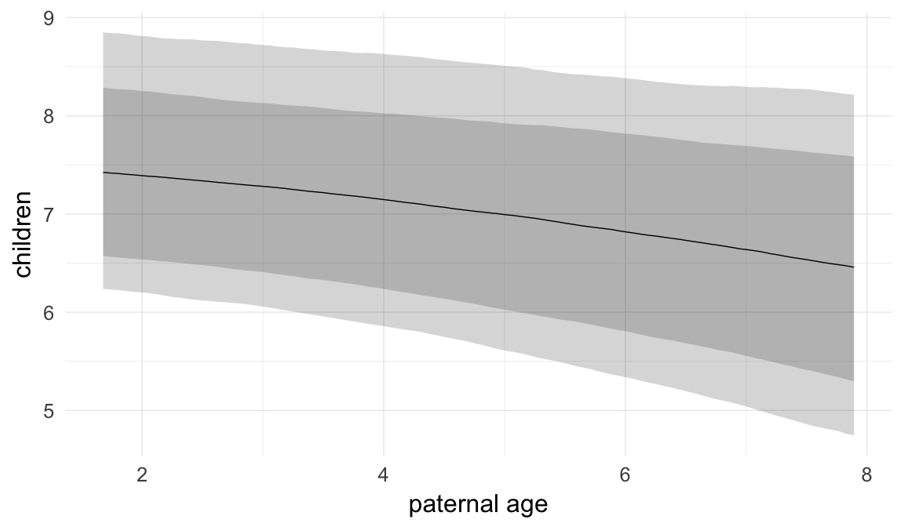
mcmc_areas(as.matrix(model$fit), regex_pars = "b")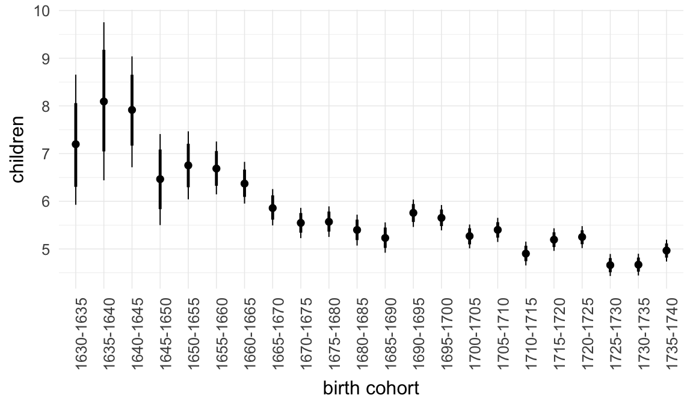
Diagnostics
These plots were made to diagnose misfit and nonconvergence.
Posterior predictive checks
brms::pp_check(model, re_formula = NA, type = "dens_overlay")
brms::pp_check(model, re_formula = NA, type = "hist")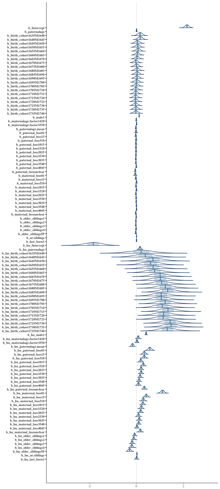
Rhat
Did the 6 chains converge?
stanplot(model, pars = "^b_[^I]", type = 'rhat')Effective sample size by average sample size
stanplot(model, pars = "^b", type = 'ess')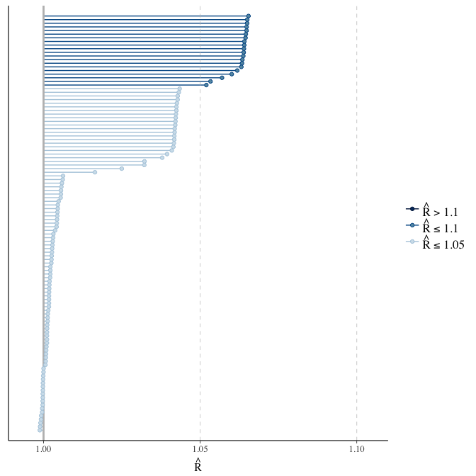
Monte Carlo SE
stanplot(model, pars = "^b", type = 'mcse')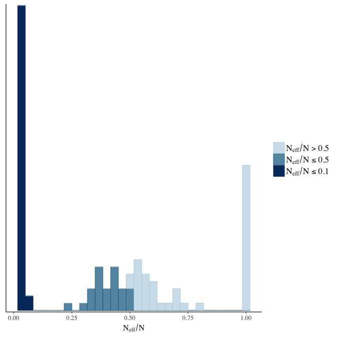
Trace plots
if(any( summary(model)$fixed[,"Rhat"] > 1.1)) { # only do traceplots if not converged
plot(model, N = 3, ask = FALSE)
}Further plots
stanplot(model, pars = "^b", type = 'diag')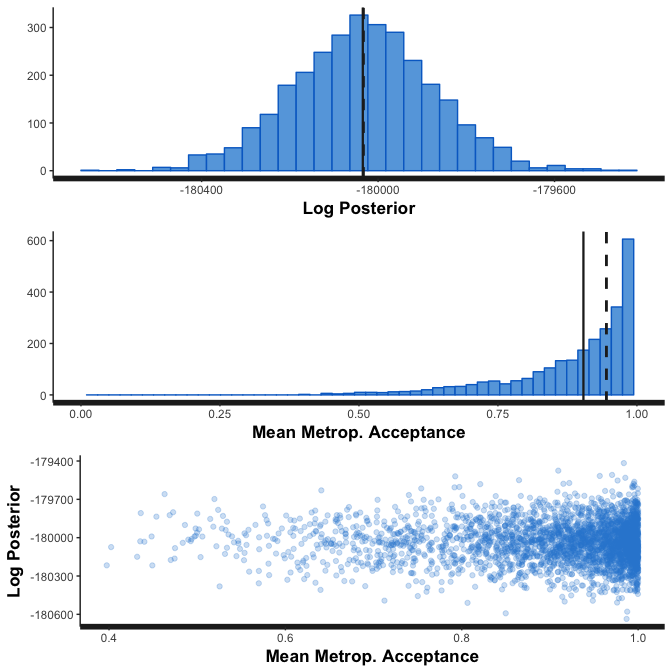
File name
coefs/rpqa/r1_relaxed_exclusion_criteria.rds
Cluster script
opts_chunk$set(echo = FALSE)
clusterscript = str_replace(basename(model_filename), "\\.rds",".html")
cat("[Cluster script](" , clusterscript, ")", sep = "")r2: Fewer covariates
Adding covariates increases the complexity of the model and makes it harder to interpret. We chose to adjust for many potential confounds because we are interested in causal isolation of the paternal age effect. Here we show what happens when only birth cohort and average paternal age in the family are adjusted for.
Model summary
Full summary
model_summary = summary(model, use_cache = FALSE, priors = TRUE)
print(model_summary)## Family: hurdle_poisson (log)
## Formula: children ~ paternalage + birth_cohort + paternalage.mean + (1 | idParents)
## hu ~ paternalage + birth_cohort + paternalage.mean + (1 | idParents)
## Data: model_data (Number of observations: 68724)
## Samples: 6 chains, each with iter = 800; warmup = 300; thin = 1;
## total post-warmup samples = 3000
## WAIC: Not computed
##
## Priors:
## b ~ normal(0,5)
## sd ~ student_t(3, 0, 5)
## b_hu ~ normal(0,5)
## sd_hu ~ student_t(3, 0, 10)
##
## Group-Level Effects:
## ~idParents (Number of levels: 12205)
## Estimate Est.Error l-95% CI u-95% CI Eff.Sample Rhat
## sd(Intercept) 0.28 0.00 0.27 0.28 1051 1
## sd(hu_Intercept) 0.64 0.01 0.61 0.67 1476 1
##
## Population-Level Effects:
## Estimate Est.Error l-95% CI u-95% CI Eff.Sample
## Intercept 2.12 0.02 2.07 2.17 799
## paternalage -0.01 0.00 -0.02 -0.01 3000
## birth_cohort1675M1680 0.02 0.02 -0.01 0.05 912
## birth_cohort1680M1685 0.06 0.02 0.03 0.09 809
## birth_cohort1685M1690 0.06 0.02 0.03 0.09 763
## birth_cohort1690M1695 0.07 0.02 0.03 0.10 548
## birth_cohort1695M1700 0.05 0.02 0.02 0.08 533
## birth_cohort1700M1705 0.04 0.02 0.01 0.07 519
## birth_cohort1705M1710 0.02 0.02 -0.02 0.05 320
## birth_cohort1710M1715 0.01 0.02 -0.02 0.04 494
## birth_cohort1715M1720 -0.02 0.02 -0.05 0.01 357
## birth_cohort1720M1725 -0.02 0.02 -0.05 0.01 362
## birth_cohort1725M1730 -0.04 0.02 -0.07 -0.01 354
## birth_cohort1730M1735 -0.03 0.02 -0.06 0.01 362
## birth_cohort1735M1740 -0.04 0.02 -0.07 0.00 334
## paternalage.mean 0.00 0.01 -0.01 0.02 1795
## hu_Intercept -0.12 0.08 -0.27 0.04 488
## hu_paternalage 0.13 0.01 0.11 0.16 3000
## hu_birth_cohort1675M1680 0.05 0.07 -0.08 0.19 521
## hu_birth_cohort1680M1685 0.22 0.07 0.08 0.35 493
## hu_birth_cohort1685M1690 0.33 0.07 0.19 0.47 524
## hu_birth_cohort1690M1695 0.08 0.07 -0.05 0.21 477
## hu_birth_cohort1695M1700 0.09 0.07 -0.04 0.21 396
## hu_birth_cohort1700M1705 0.24 0.06 0.11 0.36 401
## hu_birth_cohort1705M1710 0.11 0.06 -0.02 0.23 410
## hu_birth_cohort1710M1715 0.40 0.06 0.27 0.52 365
## hu_birth_cohort1715M1720 0.26 0.06 0.13 0.38 375
## hu_birth_cohort1720M1725 0.27 0.06 0.14 0.39 372
## hu_birth_cohort1725M1730 0.64 0.06 0.51 0.75 363
## hu_birth_cohort1730M1735 0.69 0.06 0.57 0.80 357
## hu_birth_cohort1735M1740 0.52 0.06 0.40 0.63 345
## hu_paternalage.mean -0.17 0.02 -0.21 -0.13 1881
## Rhat
## Intercept 1.01
## paternalage 1.00
## birth_cohort1675M1680 1.01
## birth_cohort1680M1685 1.01
## birth_cohort1685M1690 1.01
## birth_cohort1690M1695 1.01
## birth_cohort1695M1700 1.01
## birth_cohort1700M1705 1.02
## birth_cohort1705M1710 1.02
## birth_cohort1710M1715 1.02
## birth_cohort1715M1720 1.02
## birth_cohort1720M1725 1.02
## birth_cohort1725M1730 1.02
## birth_cohort1730M1735 1.02
## birth_cohort1735M1740 1.03
## paternalage.mean 1.00
## hu_Intercept 1.01
## hu_paternalage 1.00
## hu_birth_cohort1675M1680 1.01
## hu_birth_cohort1680M1685 1.01
## hu_birth_cohort1685M1690 1.01
## hu_birth_cohort1690M1695 1.01
## hu_birth_cohort1695M1700 1.01
## hu_birth_cohort1700M1705 1.01
## hu_birth_cohort1705M1710 1.01
## hu_birth_cohort1710M1715 1.01
## hu_birth_cohort1715M1720 1.01
## hu_birth_cohort1720M1725 1.01
## hu_birth_cohort1725M1730 1.01
## hu_birth_cohort1730M1735 1.01
## hu_birth_cohort1735M1740 1.01
## hu_paternalage.mean 1.00
##
## Samples were drawn using sampling(NUTS). For each parameter, Eff.Sample
## is a crude measure of effective sample size, and Rhat is the potential
## scale reduction factor on split chains (at convergence, Rhat = 1).Table of fixed effects
fixed_eff = data.frame(model_summary$fixed, check.names = F)
fixed_eff$Est.Error = fixed_eff$Eff.Sample = fixed_eff$Rhat = NULL
fixed_eff$OR = exp(fixed_eff$Estimate)
fixed_eff$OR_low = exp(fixed_eff$`l-95% CI`)
fixed_eff$OR_high = exp(fixed_eff$`u-95% CI`)
pander::pander(fixed_eff)| Estimate | l-95% CI | u-95% CI | OR | OR_low | OR_high | |
|---|---|---|---|---|---|---|
| Intercept | 2.122 | 2.074 | 2.169 | 8.349 | 7.957 | 8.753 |
| paternalage | -0.01295 | -0.0205 | -0.00539 | 0.9871 | 0.9797 | 0.9946 |
| birth_cohort1675M1680 | 0.02272 | -0.008151 | 0.05433 | 1.023 | 0.9919 | 1.056 |
| birth_cohort1680M1685 | 0.05689 | 0.025 | 0.08956 | 1.059 | 1.025 | 1.094 |
| birth_cohort1685M1690 | 0.05915 | 0.02667 | 0.09307 | 1.061 | 1.027 | 1.098 |
| birth_cohort1690M1695 | 0.06522 | 0.03226 | 0.09802 | 1.067 | 1.033 | 1.103 |
| birth_cohort1695M1700 | 0.05123 | 0.01887 | 0.08327 | 1.053 | 1.019 | 1.087 |
| birth_cohort1700M1705 | 0.03905 | 0.006873 | 0.07097 | 1.04 | 1.007 | 1.074 |
| birth_cohort1705M1710 | 0.01631 | -0.01555 | 0.04838 | 1.016 | 0.9846 | 1.05 |
| birth_cohort1710M1715 | 0.007767 | -0.02421 | 0.04172 | 1.008 | 0.9761 | 1.043 |
| birth_cohort1715M1720 | -0.01857 | -0.05108 | 0.01351 | 0.9816 | 0.9502 | 1.014 |
| birth_cohort1720M1725 | -0.02057 | -0.05372 | 0.01152 | 0.9796 | 0.9477 | 1.012 |
| birth_cohort1725M1730 | -0.04347 | -0.07465 | -0.01143 | 0.9575 | 0.9281 | 0.9886 |
| birth_cohort1730M1735 | -0.02549 | -0.05744 | 0.006855 | 0.9748 | 0.9442 | 1.007 |
| birth_cohort1735M1740 | -0.03519 | -0.06681 | -0.003164 | 0.9654 | 0.9354 | 0.9968 |
| paternalage.mean | 0.002377 | -0.01073 | 0.01549 | 1.002 | 0.9893 | 1.016 |
| hu_Intercept | -0.1213 | -0.2745 | 0.03652 | 0.8858 | 0.76 | 1.037 |
| hu_paternalage | 0.134 | 0.1051 | 0.1625 | 1.143 | 1.111 | 1.176 |
| hu_birth_cohort1675M1680 | 0.05183 | -0.08017 | 0.1904 | 1.053 | 0.923 | 1.21 |
| hu_birth_cohort1680M1685 | 0.2165 | 0.08033 | 0.3478 | 1.242 | 1.084 | 1.416 |
| hu_birth_cohort1685M1690 | 0.3341 | 0.1914 | 0.4651 | 1.397 | 1.211 | 1.592 |
| hu_birth_cohort1690M1695 | 0.0767 | -0.05432 | 0.2098 | 1.08 | 0.9471 | 1.233 |
| hu_birth_cohort1695M1700 | 0.09104 | -0.04038 | 0.2141 | 1.095 | 0.9604 | 1.239 |
| hu_birth_cohort1700M1705 | 0.2398 | 0.1106 | 0.364 | 1.271 | 1.117 | 1.439 |
| hu_birth_cohort1705M1710 | 0.1106 | -0.02183 | 0.2332 | 1.117 | 0.9784 | 1.263 |
| hu_birth_cohort1710M1715 | 0.3966 | 0.2663 | 0.5183 | 1.487 | 1.305 | 1.679 |
| hu_birth_cohort1715M1720 | 0.2557 | 0.1279 | 0.3786 | 1.291 | 1.136 | 1.46 |
| hu_birth_cohort1720M1725 | 0.2698 | 0.1428 | 0.3887 | 1.31 | 1.154 | 1.475 |
| hu_birth_cohort1725M1730 | 0.6351 | 0.5145 | 0.7522 | 1.887 | 1.673 | 2.122 |
| hu_birth_cohort1730M1735 | 0.6898 | 0.5674 | 0.8042 | 1.993 | 1.764 | 2.235 |
| hu_birth_cohort1735M1740 | 0.5198 | 0.3971 | 0.6341 | 1.682 | 1.488 | 1.885 |
| hu_paternalage.mean | -0.1708 | -0.2126 | -0.1279 | 0.843 | 0.8085 | 0.8799 |
Paternal age effect
pander::pander(paternal_age_10y_effect(model))| effect | median_estimate | ci_95 | ci_80 |
|---|---|---|---|
| estimate father 25y | 4.91 | [4.65;5.16] | [4.74;5.08] |
| estimate father 35y | 4.58 | [4.33;4.83] | [4.42;4.75] |
| percentage change | -6.62 | [-7.96;-5.24] | [-7.51;-5.73] |
| OR/IRR | 0.99 | [0.98;0.99] | [0.98;0.99] |
| OR hurdle | 1.14 | [1.11;1.18] | [1.12;1.17] |
Marginal effect plots
plot.brmsMarginalEffects_shades(
x = marginal_effects(model, re_formula = NA, probs = c(0.025,0.975)),
y = marginal_effects(model, re_formula = NA, probs = c(0.1,0.9)),
ask = FALSE)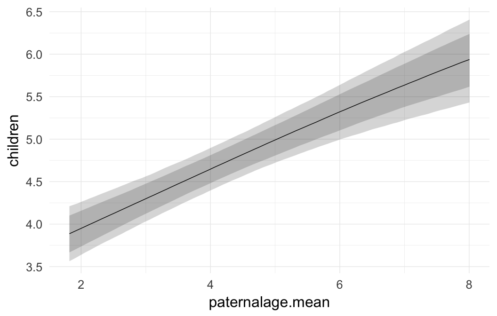
Coefficient plot
Coefficient estimates (95% and 80% credibility).
mcmc_intervals(as.matrix(model$fit), regex_pars = "b_[^I]")
mcmc_areas(as.matrix(model$fit), regex_pars = "b")
Diagnostics
These plots were made to diagnose misfit and nonconvergence.
Posterior predictive checks
brms::pp_check(model, re_formula = NA, type = "dens_overlay")
brms::pp_check(model, re_formula = NA, type = "hist")Rhat
Did the 6 chains converge?
stanplot(model, pars = "^b_[^I]", type = 'rhat')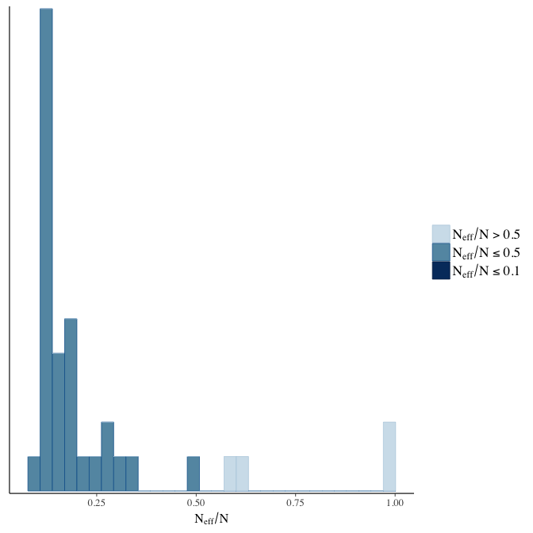
Effective sample size by average sample size
stanplot(model, pars = "^b", type = 'ess')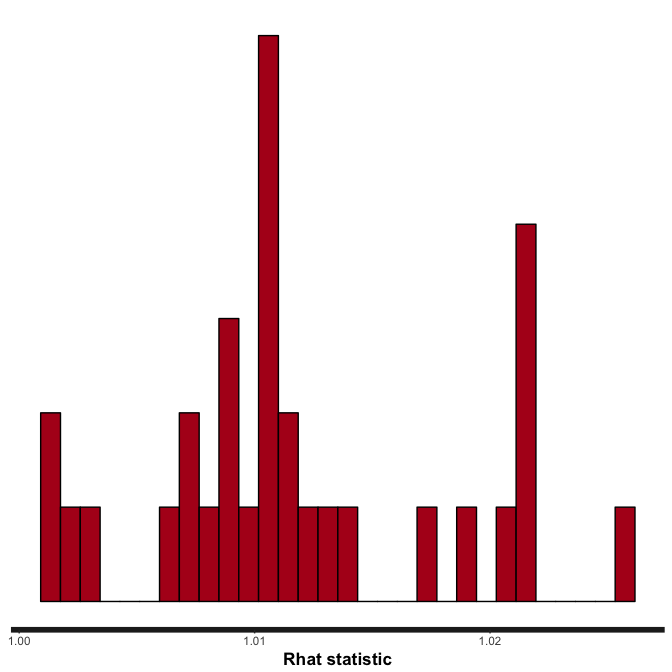
Monte Carlo SE
stanplot(model, pars = "^b", type = 'mcse')
Trace plots
if(any( summary(model)$fixed[,"Rhat"] > 1.1)) { # only do traceplots if not converged
plot(model, N = 3, ask = FALSE)
}Further plots
stanplot(model, pars = "^b", type = 'diag')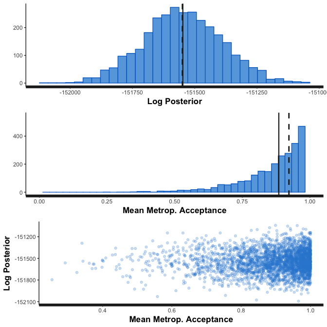
File name
coefs/rpqa/r2_few_controls.rds
Cluster script
opts_chunk$set(echo = FALSE)
clusterscript = str_replace(basename(model_filename), "\\.rds",".html")
cat("[Cluster script](" , clusterscript, ")", sep = "")r3: Continuous birth order control
We chose to control for birth order/number of older siblings as a categorical variable, lumping all those who had more than 5 in the category 5+. Because a continuous covariate is also plausible, we tested this alternative model as well.
Model summary
Full summary
model_summary = summary(model, use_cache = FALSE, priors = TRUE)
print(model_summary)## Family: hurdle_poisson (log)
## Formula: children ~ paternalage + birth_cohort + male + maternalage.factor + paternalage.mean + paternal_loss + maternal_loss + older_siblings + nr.siblings + last_born + (1 | idParents)
## hu ~ paternalage + birth_cohort + male + maternalage.factor + paternalage.mean + paternal_loss + maternal_loss + older_siblings + nr.siblings + last_born + (1 | idParents)
## Data: model_data (Number of observations: 68724)
## Samples: 6 chains, each with iter = 1000; warmup = 500; thin = 1;
## total post-warmup samples = 3000
## WAIC: Not computed
##
## Priors:
## b ~ normal(0,5)
## sd ~ student_t(3, 0, 5)
## b_hu ~ normal(0,5)
## sd_hu ~ student_t(3, 0, 10)
##
## Group-Level Effects:
## ~idParents (Number of levels: 12205)
## Estimate Est.Error l-95% CI u-95% CI Eff.Sample Rhat
## sd(Intercept) 0.27 0.00 0.27 0.28 1111 1
## sd(hu_Intercept) 0.63 0.01 0.60 0.66 1131 1
##
## Population-Level Effects:
## Estimate Est.Error l-95% CI u-95% CI Eff.Sample
## Intercept 2.11 0.03 2.06 2.17 1001
## paternalage 0.04 0.02 0.01 0.07 1589
## birth_cohort1675M1680 0.02 0.02 -0.01 0.05 1224
## birth_cohort1680M1685 0.05 0.02 0.01 0.08 1035
## birth_cohort1685M1690 0.05 0.02 0.02 0.08 1033
## birth_cohort1690M1695 0.05 0.02 0.01 0.08 838
## birth_cohort1695M1700 0.03 0.02 0.00 0.06 826
## birth_cohort1700M1705 0.02 0.02 -0.01 0.05 716
## birth_cohort1705M1710 0.00 0.02 -0.03 0.03 714
## birth_cohort1710M1715 -0.01 0.02 -0.05 0.02 715
## birth_cohort1715M1720 -0.04 0.02 -0.07 -0.01 633
## birth_cohort1720M1725 -0.04 0.02 -0.08 -0.01 667
## birth_cohort1725M1730 -0.07 0.02 -0.10 -0.04 625
## birth_cohort1730M1735 -0.05 0.02 -0.08 -0.02 660
## birth_cohort1735M1740 -0.06 0.02 -0.09 -0.03 625
## male1 0.11 0.00 0.10 0.12 3000
## maternalage.factor1420 0.00 0.01 -0.02 0.02 3000
## maternalage.factor3550 0.01 0.01 -0.01 0.02 3000
## paternalage.mean -0.06 0.02 -0.09 -0.03 1516
## paternal_loss01 -0.04 0.02 -0.08 0.00 1230
## paternal_loss15 -0.02 0.02 -0.05 0.01 990
## paternal_loss510 -0.01 0.01 -0.04 0.02 1118
## paternal_loss1015 -0.01 0.01 -0.04 0.01 1018
## paternal_loss1520 -0.02 0.01 -0.05 0.00 1044
## paternal_loss2025 -0.02 0.01 -0.04 0.00 1047
## paternal_loss2530 -0.01 0.01 -0.03 0.01 1181
## paternal_loss3035 -0.02 0.01 -0.04 0.00 1211
## paternal_loss3540 -0.02 0.01 -0.04 0.00 1401
## paternal_loss4045 0.00 0.01 -0.02 0.01 3000
## paternal_lossunclear -0.05 0.01 -0.08 -0.03 929
## maternal_loss01 -0.05 0.02 -0.10 -0.01 2310
## maternal_loss15 -0.03 0.02 -0.06 0.00 1492
## maternal_loss510 0.01 0.01 -0.01 0.04 1550
## maternal_loss1015 -0.01 0.01 -0.03 0.02 1426
## maternal_loss1520 0.01 0.01 -0.02 0.03 1330
## maternal_loss2025 -0.02 0.01 -0.04 0.00 1653
## maternal_loss2530 -0.01 0.01 -0.03 0.01 1657
## maternal_loss3035 -0.01 0.01 -0.03 0.01 1374
## maternal_loss3540 0.00 0.01 -0.02 0.02 2016
## maternal_loss4045 0.00 0.01 -0.01 0.02 3000
## maternal_lossunclear -0.02 0.01 -0.04 0.01 1183
## older_siblings -0.01 0.00 -0.02 0.00 2258
## nr.siblings 0.01 0.00 0.01 0.01 1921
## last_born1 0.00 0.01 -0.01 0.02 3000
## hu_Intercept -0.80 0.09 -0.98 -0.63 702
## hu_paternalage 0.20 0.07 0.07 0.33 1446
## hu_birth_cohort1675M1680 0.06 0.07 -0.07 0.20 722
## hu_birth_cohort1680M1685 0.21 0.07 0.08 0.35 710
## hu_birth_cohort1685M1690 0.32 0.07 0.18 0.46 620
## hu_birth_cohort1690M1695 0.07 0.07 -0.06 0.21 626
## hu_birth_cohort1695M1700 0.09 0.07 -0.04 0.23 594
## hu_birth_cohort1700M1705 0.24 0.06 0.12 0.37 530
## hu_birth_cohort1705M1710 0.14 0.06 0.02 0.27 508
## hu_birth_cohort1710M1715 0.42 0.06 0.30 0.55 519
## hu_birth_cohort1715M1720 0.28 0.06 0.16 0.41 559
## hu_birth_cohort1720M1725 0.30 0.06 0.18 0.43 497
## hu_birth_cohort1725M1730 0.66 0.06 0.55 0.78 508
## hu_birth_cohort1730M1735 0.72 0.06 0.60 0.84 482
## hu_birth_cohort1735M1740 0.56 0.06 0.44 0.68 483
## hu_male1 0.44 0.02 0.40 0.47 3000
## hu_maternalage.factor1420 0.09 0.04 0.02 0.15 3000
## hu_maternalage.factor3550 0.07 0.03 0.02 0.13 3000
## hu_paternalage.mean -0.21 0.07 -0.34 -0.08 1382
## hu_paternal_loss01 0.58 0.07 0.44 0.72 3000
## hu_paternal_loss15 0.31 0.06 0.20 0.42 1450
## hu_paternal_loss510 0.30 0.05 0.20 0.39 1229
## hu_paternal_loss1015 0.18 0.05 0.09 0.27 1130
## hu_paternal_loss1520 0.29 0.04 0.20 0.37 1023
## hu_paternal_loss2025 0.18 0.04 0.10 0.26 999
## hu_paternal_loss2530 0.17 0.04 0.10 0.25 1028
## hu_paternal_loss3035 0.13 0.04 0.06 0.21 1226
## hu_paternal_loss3540 0.10 0.04 0.03 0.17 1325
## hu_paternal_loss4045 0.06 0.04 -0.01 0.14 1792
## hu_paternal_lossunclear 0.37 0.04 0.29 0.45 1011
## hu_maternal_loss01 1.07 0.07 0.93 1.21 3000
## hu_maternal_loss15 0.40 0.05 0.30 0.50 3000
## hu_maternal_loss510 0.26 0.05 0.17 0.35 3000
## hu_maternal_loss1015 0.26 0.04 0.18 0.34 3000
## hu_maternal_loss1520 0.20 0.04 0.12 0.28 3000
## hu_maternal_loss2025 0.17 0.04 0.09 0.25 3000
## hu_maternal_loss2530 0.06 0.04 -0.02 0.13 3000
## hu_maternal_loss3035 0.09 0.03 0.02 0.16 3000
## hu_maternal_loss3540 0.08 0.03 0.01 0.15 3000
## hu_maternal_loss4045 -0.01 0.03 -0.08 0.06 3000
## hu_maternal_lossunclear 0.22 0.04 0.15 0.30 2386
## hu_older_siblings -0.04 0.01 -0.07 -0.02 1576
## hu_nr.siblings 0.03 0.01 0.01 0.04 1640
## hu_last_born1 0.00 0.03 -0.05 0.06 3000
## Rhat
## Intercept 1.00
## paternalage 1.00
## birth_cohort1675M1680 1.00
## birth_cohort1680M1685 1.00
## birth_cohort1685M1690 1.00
## birth_cohort1690M1695 1.00
## birth_cohort1695M1700 1.00
## birth_cohort1700M1705 1.01
## birth_cohort1705M1710 1.01
## birth_cohort1710M1715 1.00
## birth_cohort1715M1720 1.01
## birth_cohort1720M1725 1.01
## birth_cohort1725M1730 1.01
## birth_cohort1730M1735 1.01
## birth_cohort1735M1740 1.01
## male1 1.00
## maternalage.factor1420 1.00
## maternalage.factor3550 1.00
## paternalage.mean 1.00
## paternal_loss01 1.00
## paternal_loss15 1.00
## paternal_loss510 1.00
## paternal_loss1015 1.00
## paternal_loss1520 1.00
## paternal_loss2025 1.00
## paternal_loss2530 1.00
## paternal_loss3035 1.00
## paternal_loss3540 1.00
## paternal_loss4045 1.00
## paternal_lossunclear 1.01
## maternal_loss01 1.00
## maternal_loss15 1.00
## maternal_loss510 1.00
## maternal_loss1015 1.00
## maternal_loss1520 1.00
## maternal_loss2025 1.00
## maternal_loss2530 1.00
## maternal_loss3035 1.00
## maternal_loss3540 1.00
## maternal_loss4045 1.00
## maternal_lossunclear 1.00
## older_siblings 1.00
## nr.siblings 1.00
## last_born1 1.00
## hu_Intercept 1.00
## hu_paternalage 1.00
## hu_birth_cohort1675M1680 1.00
## hu_birth_cohort1680M1685 1.00
## hu_birth_cohort1685M1690 1.01
## hu_birth_cohort1690M1695 1.00
## hu_birth_cohort1695M1700 1.00
## hu_birth_cohort1700M1705 1.01
## hu_birth_cohort1705M1710 1.01
## hu_birth_cohort1710M1715 1.00
## hu_birth_cohort1715M1720 1.01
## hu_birth_cohort1720M1725 1.01
## hu_birth_cohort1725M1730 1.01
## hu_birth_cohort1730M1735 1.01
## hu_birth_cohort1735M1740 1.01
## hu_male1 1.00
## hu_maternalage.factor1420 1.00
## hu_maternalage.factor3550 1.00
## hu_paternalage.mean 1.00
## hu_paternal_loss01 1.00
## hu_paternal_loss15 1.00
## hu_paternal_loss510 1.00
## hu_paternal_loss1015 1.00
## hu_paternal_loss1520 1.00
## hu_paternal_loss2025 1.00
## hu_paternal_loss2530 1.00
## hu_paternal_loss3035 1.00
## hu_paternal_loss3540 1.00
## hu_paternal_loss4045 1.00
## hu_paternal_lossunclear 1.00
## hu_maternal_loss01 1.00
## hu_maternal_loss15 1.00
## hu_maternal_loss510 1.00
## hu_maternal_loss1015 1.00
## hu_maternal_loss1520 1.00
## hu_maternal_loss2025 1.00
## hu_maternal_loss2530 1.00
## hu_maternal_loss3035 1.00
## hu_maternal_loss3540 1.00
## hu_maternal_loss4045 1.00
## hu_maternal_lossunclear 1.00
## hu_older_siblings 1.00
## hu_nr.siblings 1.00
## hu_last_born1 1.00
##
## Samples were drawn using sampling(NUTS). For each parameter, Eff.Sample
## is a crude measure of effective sample size, and Rhat is the potential
## scale reduction factor on split chains (at convergence, Rhat = 1).Table of fixed effects
fixed_eff = data.frame(model_summary$fixed, check.names = F)
fixed_eff$Est.Error = fixed_eff$Eff.Sample = fixed_eff$Rhat = NULL
fixed_eff$OR = exp(fixed_eff$Estimate)
fixed_eff$OR_low = exp(fixed_eff$`l-95% CI`)
fixed_eff$OR_high = exp(fixed_eff$`u-95% CI`)
pander::pander(fixed_eff)| Estimate | l-95% CI | u-95% CI | OR | OR_low | OR_high | |
|---|---|---|---|---|---|---|
| Intercept | 2.113 | 2.059 | 2.167 | 8.271 | 7.835 | 8.731 |
| paternalage | 0.03968 | 0.009116 | 0.07287 | 1.04 | 1.009 | 1.076 |
| birth_cohort1675M1680 | 0.01824 | -0.01131 | 0.0477 | 1.018 | 0.9888 | 1.049 |
| birth_cohort1680M1685 | 0.04525 | 0.01419 | 0.07579 | 1.046 | 1.014 | 1.079 |
| birth_cohort1685M1690 | 0.04857 | 0.01635 | 0.08036 | 1.05 | 1.016 | 1.084 |
| birth_cohort1690M1695 | 0.0456 | 0.01338 | 0.07658 | 1.047 | 1.013 | 1.08 |
| birth_cohort1695M1700 | 0.03323 | 0.0009823 | 0.06467 | 1.034 | 1.001 | 1.067 |
| birth_cohort1700M1705 | 0.0185 | -0.01235 | 0.04883 | 1.019 | 0.9877 | 1.05 |
| birth_cohort1705M1710 | -0.004189 | -0.03385 | 0.02753 | 0.9958 | 0.9667 | 1.028 |
| birth_cohort1710M1715 | -0.01391 | -0.04523 | 0.01764 | 0.9862 | 0.9558 | 1.018 |
| birth_cohort1715M1720 | -0.04204 | -0.07188 | -0.01126 | 0.9588 | 0.9306 | 0.9888 |
| birth_cohort1720M1725 | -0.04435 | -0.07515 | -0.01326 | 0.9566 | 0.9276 | 0.9868 |
| birth_cohort1725M1730 | -0.06761 | -0.09837 | -0.03602 | 0.9346 | 0.9063 | 0.9646 |
| birth_cohort1730M1735 | -0.05034 | -0.07985 | -0.01956 | 0.9509 | 0.9233 | 0.9806 |
| birth_cohort1735M1740 | -0.06156 | -0.09182 | -0.03055 | 0.9403 | 0.9123 | 0.9699 |
| male1 | 0.111 | 0.1031 | 0.1191 | 1.117 | 1.109 | 1.127 |
| maternalage.factor1420 | 0.0007137 | -0.01801 | 0.01922 | 1.001 | 0.9821 | 1.019 |
| maternalage.factor3550 | 0.00676 | -0.008947 | 0.02244 | 1.007 | 0.9911 | 1.023 |
| paternalage.mean | -0.05858 | -0.09225 | -0.02587 | 0.9431 | 0.9119 | 0.9745 |
| paternal_loss01 | -0.03709 | -0.07795 | 0.002327 | 0.9636 | 0.925 | 1.002 |
| paternal_loss15 | -0.01691 | -0.04914 | 0.01487 | 0.9832 | 0.9521 | 1.015 |
| paternal_loss510 | -0.008788 | -0.03659 | 0.01941 | 0.9913 | 0.9641 | 1.02 |
| paternal_loss1015 | -0.01467 | -0.04044 | 0.01095 | 0.9854 | 0.9604 | 1.011 |
| paternal_loss1520 | -0.02303 | -0.04746 | 0.001758 | 0.9772 | 0.9536 | 1.002 |
| paternal_loss2025 | -0.02216 | -0.04472 | 0.0001976 | 0.9781 | 0.9563 | 1 |
| paternal_loss2530 | -0.01221 | -0.03414 | 0.00857 | 0.9879 | 0.9664 | 1.009 |
| paternal_loss3035 | -0.02294 | -0.04315 | -0.002867 | 0.9773 | 0.9578 | 0.9971 |
| paternal_loss3540 | -0.02257 | -0.04062 | -0.004388 | 0.9777 | 0.9602 | 0.9956 |
| paternal_loss4045 | -0.003335 | -0.02148 | 0.01491 | 0.9967 | 0.9787 | 1.015 |
| paternal_lossunclear | -0.05357 | -0.07902 | -0.02845 | 0.9478 | 0.924 | 0.9719 |
| maternal_loss01 | -0.05066 | -0.09696 | -0.00579 | 0.9506 | 0.9076 | 0.9942 |
| maternal_loss15 | -0.02701 | -0.0562 | 0.002658 | 0.9733 | 0.9453 | 1.003 |
| maternal_loss510 | 0.01235 | -0.01234 | 0.03857 | 1.012 | 0.9877 | 1.039 |
| maternal_loss1015 | -0.008058 | -0.03283 | 0.01653 | 0.992 | 0.9677 | 1.017 |
| maternal_loss1520 | 0.006225 | -0.01733 | 0.02961 | 1.006 | 0.9828 | 1.03 |
| maternal_loss2025 | -0.0192 | -0.04283 | 0.003745 | 0.981 | 0.9581 | 1.004 |
| maternal_loss2530 | -0.01228 | -0.03382 | 0.008686 | 0.9878 | 0.9667 | 1.009 |
| maternal_loss3035 | -0.007618 | -0.02666 | 0.01133 | 0.9924 | 0.9737 | 1.011 |
| maternal_loss3540 | 0.00101 | -0.01536 | 0.01748 | 1.001 | 0.9848 | 1.018 |
| maternal_loss4045 | 0.003777 | -0.01276 | 0.0207 | 1.004 | 0.9873 | 1.021 |
| maternal_lossunclear | -0.01928 | -0.04465 | 0.005236 | 0.9809 | 0.9563 | 1.005 |
| older_siblings | -0.009185 | -0.01524 | -0.003427 | 0.9909 | 0.9849 | 0.9966 |
| nr.siblings | 0.01007 | 0.0067 | 0.01342 | 1.01 | 1.007 | 1.014 |
| last_born1 | 0.001578 | -0.01317 | 0.01701 | 1.002 | 0.9869 | 1.017 |
| hu_Intercept | -0.8042 | -0.9823 | -0.6268 | 0.4474 | 0.3744 | 0.5343 |
| hu_paternalage | 0.1965 | 0.0677 | 0.3288 | 1.217 | 1.07 | 1.389 |
| hu_birth_cohort1675M1680 | 0.0643 | -0.06876 | 0.1999 | 1.066 | 0.9336 | 1.221 |
| hu_birth_cohort1680M1685 | 0.2102 | 0.077 | 0.3543 | 1.234 | 1.08 | 1.425 |
| hu_birth_cohort1685M1690 | 0.3216 | 0.1849 | 0.4585 | 1.379 | 1.203 | 1.582 |
| hu_birth_cohort1690M1695 | 0.07398 | -0.06036 | 0.2107 | 1.077 | 0.9414 | 1.235 |
| hu_birth_cohort1695M1700 | 0.09235 | -0.0367 | 0.2252 | 1.097 | 0.964 | 1.253 |
| hu_birth_cohort1700M1705 | 0.2445 | 0.1187 | 0.3745 | 1.277 | 1.126 | 1.454 |
| hu_birth_cohort1705M1710 | 0.1429 | 0.02266 | 0.2652 | 1.154 | 1.023 | 1.304 |
| hu_birth_cohort1710M1715 | 0.4225 | 0.3017 | 0.5479 | 1.526 | 1.352 | 1.73 |
| hu_birth_cohort1715M1720 | 0.2791 | 0.1577 | 0.4054 | 1.322 | 1.171 | 1.5 |
| hu_birth_cohort1720M1725 | 0.2995 | 0.18 | 0.4252 | 1.349 | 1.197 | 1.53 |
| hu_birth_cohort1725M1730 | 0.6615 | 0.5459 | 0.7808 | 1.938 | 1.726 | 2.183 |
| hu_birth_cohort1730M1735 | 0.721 | 0.6025 | 0.8394 | 2.056 | 1.827 | 2.315 |
| hu_birth_cohort1735M1740 | 0.5594 | 0.4428 | 0.6814 | 1.75 | 1.557 | 1.977 |
| hu_male1 | 0.4353 | 0.4017 | 0.4681 | 1.545 | 1.494 | 1.597 |
| hu_maternalage.factor1420 | 0.08562 | 0.01676 | 0.1537 | 1.089 | 1.017 | 1.166 |
| hu_maternalage.factor3550 | 0.07049 | 0.01554 | 0.1268 | 1.073 | 1.016 | 1.135 |
| hu_paternalage.mean | -0.2129 | -0.3444 | -0.08123 | 0.8083 | 0.7087 | 0.922 |
| hu_paternal_loss01 | 0.5788 | 0.4376 | 0.717 | 1.784 | 1.549 | 2.048 |
| hu_paternal_loss15 | 0.3136 | 0.2042 | 0.422 | 1.368 | 1.227 | 1.525 |
| hu_paternal_loss510 | 0.2965 | 0.2004 | 0.3932 | 1.345 | 1.222 | 1.482 |
| hu_paternal_loss1015 | 0.1765 | 0.08964 | 0.2675 | 1.193 | 1.094 | 1.307 |
| hu_paternal_loss1520 | 0.2856 | 0.2028 | 0.3734 | 1.331 | 1.225 | 1.453 |
| hu_paternal_loss2025 | 0.1757 | 0.09558 | 0.2553 | 1.192 | 1.1 | 1.291 |
| hu_paternal_loss2530 | 0.1746 | 0.09964 | 0.2506 | 1.191 | 1.105 | 1.285 |
| hu_paternal_loss3035 | 0.1345 | 0.0602 | 0.2096 | 1.144 | 1.062 | 1.233 |
| hu_paternal_loss3540 | 0.09705 | 0.02645 | 0.1686 | 1.102 | 1.027 | 1.184 |
| hu_paternal_loss4045 | 0.06457 | -0.01481 | 0.1391 | 1.067 | 0.9853 | 1.149 |
| hu_paternal_lossunclear | 0.3689 | 0.2909 | 0.4487 | 1.446 | 1.338 | 1.566 |
| hu_maternal_loss01 | 1.071 | 0.9297 | 1.213 | 2.918 | 2.534 | 3.365 |
| hu_maternal_loss15 | 0.3988 | 0.2965 | 0.4972 | 1.49 | 1.345 | 1.644 |
| hu_maternal_loss510 | 0.2634 | 0.1748 | 0.3526 | 1.301 | 1.191 | 1.423 |
| hu_maternal_loss1015 | 0.2582 | 0.1754 | 0.341 | 1.295 | 1.192 | 1.406 |
| hu_maternal_loss1520 | 0.1999 | 0.1164 | 0.2827 | 1.221 | 1.123 | 1.327 |
| hu_maternal_loss2025 | 0.1731 | 0.09319 | 0.252 | 1.189 | 1.098 | 1.287 |
| hu_maternal_loss2530 | 0.0566 | -0.02036 | 0.1332 | 1.058 | 0.9799 | 1.143 |
| hu_maternal_loss3035 | 0.0888 | 0.02117 | 0.1589 | 1.093 | 1.021 | 1.172 |
| hu_maternal_loss3540 | 0.08139 | 0.01483 | 0.1505 | 1.085 | 1.015 | 1.162 |
| hu_maternal_loss4045 | -0.01254 | -0.07833 | 0.05699 | 0.9875 | 0.9247 | 1.059 |
| hu_maternal_lossunclear | 0.2236 | 0.1493 | 0.2987 | 1.251 | 1.161 | 1.348 |
| hu_older_siblings | -0.04431 | -0.06757 | -0.02135 | 0.9567 | 0.9347 | 0.9789 |
| hu_nr.siblings | 0.02747 | 0.01495 | 0.03987 | 1.028 | 1.015 | 1.041 |
| hu_last_born1 | 0.003453 | -0.05299 | 0.05799 | 1.003 | 0.9484 | 1.06 |
Paternal age effect
pander::pander(paternal_age_10y_effect(model))| effect | median_estimate | ci_95 | ci_80 |
|---|---|---|---|
| estimate father 25y | 5.72 | [5.4;6.06] | [5.51;5.94] |
| estimate father 35y | 5.63 | [5.33;5.93] | [5.44;5.82] |
| percentage change | -1.68 | [-6.18;3.55] | [-4.69;1.63] |
| OR/IRR | 1.04 | [1.01;1.08] | [1.02;1.06] |
| OR hurdle | 1.22 | [1.07;1.39] | [1.12;1.32] |
Marginal effect plots
plot.brmsMarginalEffects_shades(
x = marginal_effects(model, re_formula = NA, probs = c(0.025,0.975)),
y = marginal_effects(model, re_formula = NA, probs = c(0.1,0.9)),
ask = FALSE)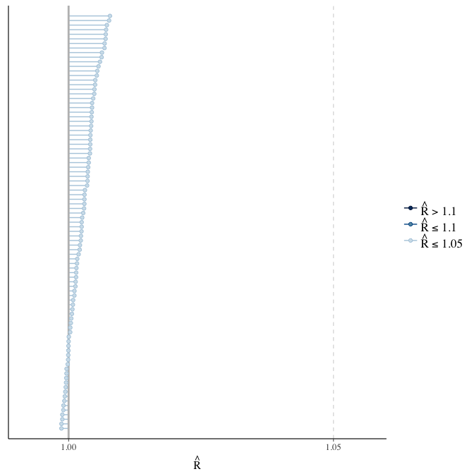 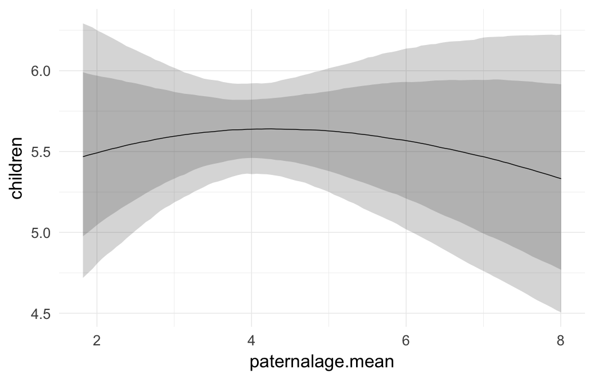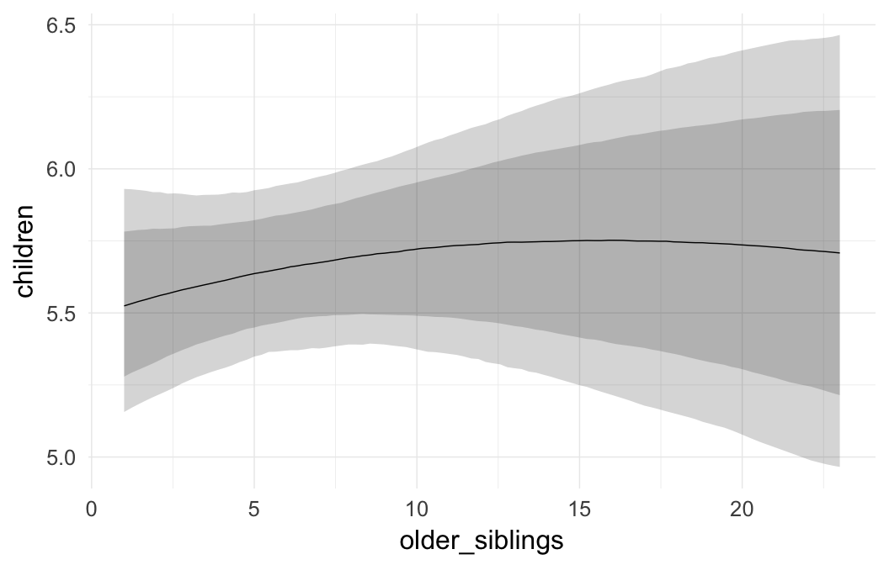
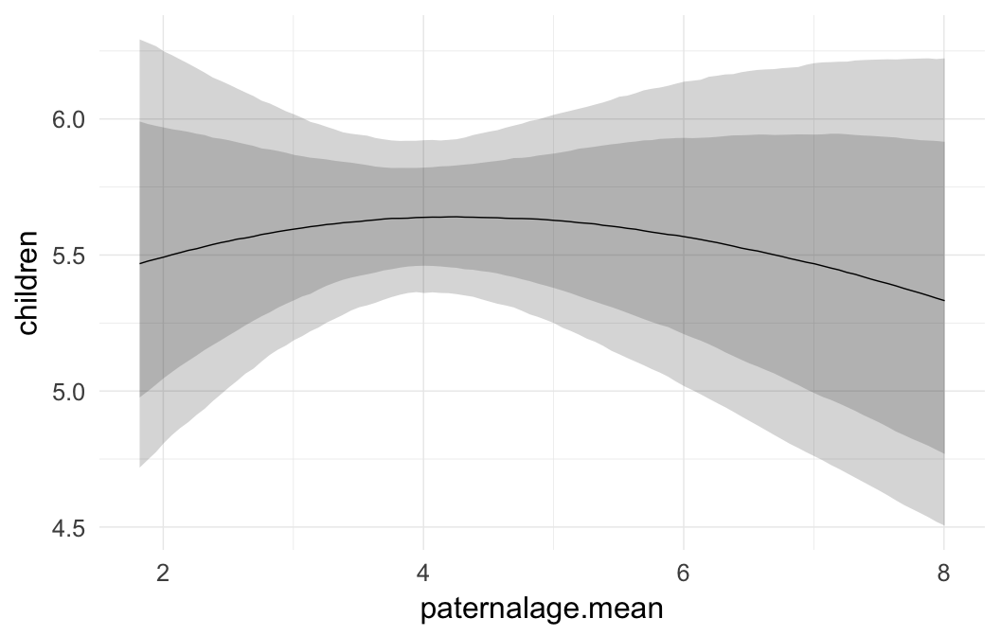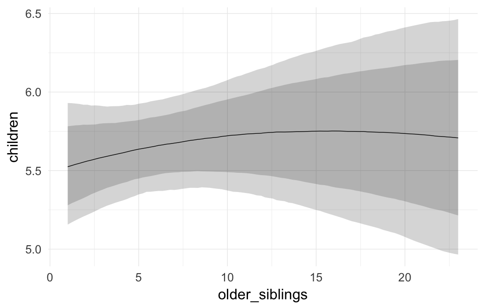
Coefficient plot
Coefficient estimates (95% and 80% credibility).
mcmc_intervals(as.matrix(model$fit), regex_pars = "b_[^I]")
mcmc_areas(as.matrix(model$fit), regex_pars = "b")Diagnostics
These plots were made to diagnose misfit and nonconvergence.
Posterior predictive checks
brms::pp_check(model, re_formula = NA, type = "dens_overlay")brms::pp_check(model, re_formula = NA, type = "hist")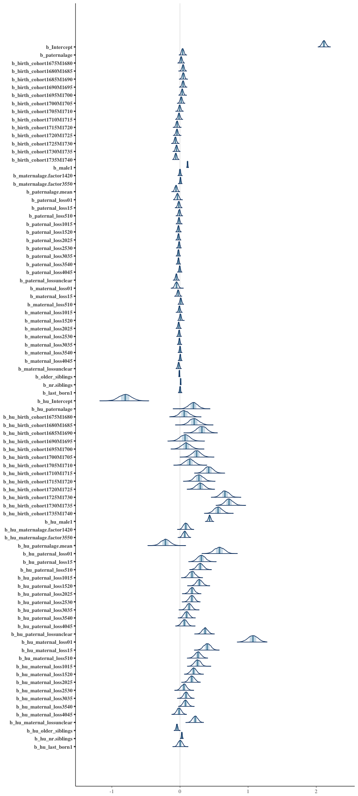
Rhat
Did the 6 chains converge?
stanplot(model, pars = "^b_[^I]", type = 'rhat')Effective sample size by average sample size
stanplot(model, pars = "^b", type = 'ess')Monte Carlo SE
stanplot(model, pars = "^b", type = 'mcse')Trace plots
if(any( summary(model)$fixed[,"Rhat"] > 1.1)) { # only do traceplots if not converged
plot(model, N = 3, ask = FALSE)
}Further plots
stanplot(model, pars = "^b", type = 'diag')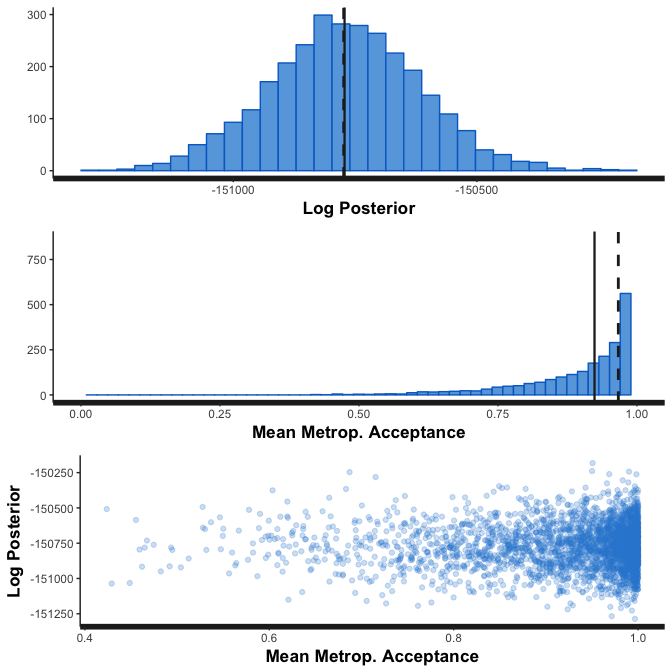
File name
coefs/rpqa/r3_birth_order_continuous.rds
Cluster script
opts_chunk$set(echo = FALSE)
clusterscript = str_replace(basename(model_filename), "\\.rds",".html")
cat("[Cluster script](" , clusterscript, ")", sep = "")r4: Control number of dependent siblings
Birth order is usually used as a proxy variable for parental investment, the assumption being that older siblings require parental attention. However, there are are reasons to doubt this, as fully-grown siblings probably do not compete for the same resources. To compute a clearer proxy variable of competing siblings, we computed and adjusted for the number of siblings who were alive and younger than five at the time of birth of the anchor child.
Model summary
Full summary
model_summary = summary(model, use_cache = FALSE, priors = TRUE)
print(model_summary)## Family: hurdle_poisson (log)
## Formula: children ~ paternalage + birth_cohort + male + maternalage.factor + paternalage.mean + paternal_loss + maternal_loss + nr.siblings + dependent_sibs_f5y + (1 | idParents)
## hu ~ paternalage + birth_cohort + male + maternalage.factor + paternalage.mean + paternal_loss + maternal_loss + nr.siblings + dependent_sibs_f5y + (1 | idParents)
## Data: model_data (Number of observations: 68724)
## Samples: 6 chains, each with iter = 1000; warmup = 500; thin = 1;
## total post-warmup samples = 3000
## WAIC: Not computed
##
## Priors:
## b ~ normal(0,5)
## sd ~ student_t(3, 0, 5)
## b_hu ~ normal(0,5)
## sd_hu ~ student_t(3, 0, 10)
##
## Group-Level Effects:
## ~idParents (Number of levels: 12205)
## Estimate Est.Error l-95% CI u-95% CI Eff.Sample Rhat
## sd(Intercept) 0.27 0.00 0.27 0.28 876 1
## sd(hu_Intercept) 0.65 0.01 0.63 0.68 895 1
##
## Population-Level Effects:
## Estimate Est.Error l-95% CI u-95% CI Eff.Sample
## Intercept 2.11 0.03 2.06 2.16 863
## paternalage 0.00 0.01 -0.02 0.01 1106
## birth_cohort1675M1680 0.02 0.02 -0.01 0.05 835
## birth_cohort1680M1685 0.05 0.02 0.01 0.08 738
## birth_cohort1685M1690 0.05 0.02 0.02 0.08 614
## birth_cohort1690M1695 0.05 0.02 0.01 0.08 557
## birth_cohort1695M1700 0.04 0.02 0.00 0.07 503
## birth_cohort1700M1705 0.02 0.02 -0.01 0.05 466
## birth_cohort1705M1710 0.00 0.02 -0.03 0.03 439
## birth_cohort1710M1715 -0.01 0.02 -0.04 0.02 418
## birth_cohort1715M1720 -0.04 0.02 -0.07 -0.01 410
## birth_cohort1720M1725 -0.04 0.02 -0.07 -0.01 412
## birth_cohort1725M1730 -0.06 0.02 -0.10 -0.03 446
## birth_cohort1730M1735 -0.05 0.02 -0.08 -0.02 377
## birth_cohort1735M1740 -0.06 0.02 -0.09 -0.03 381
## male1 0.11 0.00 0.10 0.12 3000
## maternalage.factor1420 0.00 0.01 -0.02 0.02 3000
## maternalage.factor3550 0.00 0.01 -0.01 0.02 3000
## paternalage.mean -0.01 0.01 -0.03 0.00 1502
## paternal_loss01 -0.04 0.02 -0.09 0.00 1450
## paternal_loss15 -0.02 0.02 -0.05 0.02 813
## paternal_loss510 -0.01 0.01 -0.04 0.02 813
## paternal_loss1015 -0.01 0.01 -0.04 0.01 746
## paternal_loss1520 -0.02 0.01 -0.05 0.00 653
## paternal_loss2025 -0.02 0.01 -0.04 0.00 787
## paternal_loss2530 -0.01 0.01 -0.03 0.01 886
## paternal_loss3035 -0.02 0.01 -0.04 0.00 978
## paternal_loss3540 -0.02 0.01 -0.04 0.00 1405
## paternal_loss4045 0.00 0.01 -0.02 0.02 1769
## paternal_lossunclear -0.05 0.01 -0.08 -0.03 806
## maternal_loss01 -0.06 0.02 -0.10 -0.01 3000
## maternal_loss15 -0.03 0.02 -0.06 0.00 1538
## maternal_loss510 0.01 0.01 -0.01 0.04 1824
## maternal_loss1015 -0.01 0.01 -0.03 0.02 1348
## maternal_loss1520 0.01 0.01 -0.02 0.03 1750
## maternal_loss2025 -0.02 0.01 -0.04 0.00 1431
## maternal_loss2530 -0.01 0.01 -0.03 0.01 1525
## maternal_loss3035 -0.01 0.01 -0.03 0.01 1779
## maternal_loss3540 0.00 0.01 -0.02 0.02 2061
## maternal_loss4045 0.00 0.01 -0.01 0.02 3000
## maternal_lossunclear -0.02 0.01 -0.04 0.01 1173
## nr.siblings 0.01 0.00 0.00 0.01 1610
## dependent_sibs_f5y -0.01 0.00 -0.01 0.00 3000
## hu_Intercept -0.95 0.09 -1.12 -0.77 842
## hu_paternalage -0.03 0.02 -0.08 0.01 1444
## hu_birth_cohort1675M1680 0.06 0.07 -0.07 0.19 1078
## hu_birth_cohort1680M1685 0.22 0.07 0.09 0.35 948
## hu_birth_cohort1685M1690 0.34 0.07 0.22 0.48 927
## hu_birth_cohort1690M1695 0.09 0.07 -0.03 0.22 793
## hu_birth_cohort1695M1700 0.11 0.06 -0.01 0.24 808
## hu_birth_cohort1700M1705 0.26 0.06 0.14 0.38 736
## hu_birth_cohort1705M1710 0.16 0.06 0.04 0.28 716
## hu_birth_cohort1710M1715 0.44 0.06 0.32 0.56 707
## hu_birth_cohort1715M1720 0.30 0.06 0.19 0.42 730
## hu_birth_cohort1720M1725 0.32 0.06 0.20 0.43 701
## hu_birth_cohort1725M1730 0.68 0.06 0.57 0.80 699
## hu_birth_cohort1730M1735 0.74 0.06 0.63 0.86 706
## hu_birth_cohort1735M1740 0.57 0.06 0.46 0.69 665
## hu_male1 0.44 0.02 0.40 0.47 3000
## hu_maternalage.factor1420 0.13 0.04 0.06 0.21 3000
## hu_maternalage.factor3550 0.11 0.03 0.06 0.17 3000
## hu_paternalage.mean 0.02 0.03 -0.04 0.08 1683
## hu_paternal_loss01 0.62 0.07 0.47 0.76 3000
## hu_paternal_loss15 0.32 0.06 0.21 0.42 1262
## hu_paternal_loss510 0.29 0.05 0.19 0.38 1179
## hu_paternal_loss1015 0.17 0.04 0.08 0.25 1264
## hu_paternal_loss1520 0.28 0.04 0.19 0.36 1328
## hu_paternal_loss2025 0.17 0.04 0.09 0.25 1093
## hu_paternal_loss2530 0.17 0.04 0.09 0.24 1302
## hu_paternal_loss3035 0.13 0.04 0.05 0.20 1227
## hu_paternal_loss3540 0.09 0.04 0.02 0.16 1407
## hu_paternal_loss4045 0.06 0.04 -0.02 0.13 3000
## hu_paternal_lossunclear 0.37 0.04 0.29 0.44 1222
## hu_maternal_loss01 1.11 0.07 0.97 1.26 3000
## hu_maternal_loss15 0.41 0.05 0.31 0.50 3000
## hu_maternal_loss510 0.25 0.04 0.16 0.33 3000
## hu_maternal_loss1015 0.25 0.04 0.17 0.34 3000
## hu_maternal_loss1520 0.20 0.04 0.12 0.29 3000
## hu_maternal_loss2025 0.18 0.04 0.10 0.26 3000
## hu_maternal_loss2530 0.06 0.04 -0.02 0.13 3000
## hu_maternal_loss3035 0.09 0.04 0.02 0.15 3000
## hu_maternal_loss3540 0.08 0.03 0.01 0.14 3000
## hu_maternal_loss4045 -0.02 0.03 -0.09 0.05 3000
## hu_maternal_lossunclear 0.22 0.04 0.14 0.30 2290
## hu_nr.siblings 0.00 0.00 -0.01 0.00 3000
## hu_dependent_sibs_f5y 0.05 0.01 0.03 0.06 3000
## Rhat
## Intercept 1.00
## paternalage 1.00
## birth_cohort1675M1680 1.00
## birth_cohort1680M1685 1.00
## birth_cohort1685M1690 1.01
## birth_cohort1690M1695 1.00
## birth_cohort1695M1700 1.01
## birth_cohort1700M1705 1.01
## birth_cohort1705M1710 1.01
## birth_cohort1710M1715 1.01
## birth_cohort1715M1720 1.01
## birth_cohort1720M1725 1.01
## birth_cohort1725M1730 1.01
## birth_cohort1730M1735 1.01
## birth_cohort1735M1740 1.01
## male1 1.00
## maternalage.factor1420 1.00
## maternalage.factor3550 1.00
## paternalage.mean 1.00
## paternal_loss01 1.00
## paternal_loss15 1.01
## paternal_loss510 1.01
## paternal_loss1015 1.01
## paternal_loss1520 1.00
## paternal_loss2025 1.00
## paternal_loss2530 1.00
## paternal_loss3035 1.00
## paternal_loss3540 1.00
## paternal_loss4045 1.00
## paternal_lossunclear 1.01
## maternal_loss01 1.00
## maternal_loss15 1.00
## maternal_loss510 1.00
## maternal_loss1015 1.00
## maternal_loss1520 1.00
## maternal_loss2025 1.00
## maternal_loss2530 1.00
## maternal_loss3035 1.00
## maternal_loss3540 1.00
## maternal_loss4045 1.00
## maternal_lossunclear 1.00
## nr.siblings 1.00
## dependent_sibs_f5y 1.00
## hu_Intercept 1.01
## hu_paternalage 1.00
## hu_birth_cohort1675M1680 1.01
## hu_birth_cohort1680M1685 1.00
## hu_birth_cohort1685M1690 1.00
## hu_birth_cohort1690M1695 1.01
## hu_birth_cohort1695M1700 1.01
## hu_birth_cohort1700M1705 1.01
## hu_birth_cohort1705M1710 1.01
## hu_birth_cohort1710M1715 1.01
## hu_birth_cohort1715M1720 1.01
## hu_birth_cohort1720M1725 1.01
## hu_birth_cohort1725M1730 1.01
## hu_birth_cohort1730M1735 1.01
## hu_birth_cohort1735M1740 1.01
## hu_male1 1.00
## hu_maternalage.factor1420 1.00
## hu_maternalage.factor3550 1.00
## hu_paternalage.mean 1.00
## hu_paternal_loss01 1.00
## hu_paternal_loss15 1.00
## hu_paternal_loss510 1.00
## hu_paternal_loss1015 1.00
## hu_paternal_loss1520 1.00
## hu_paternal_loss2025 1.00
## hu_paternal_loss2530 1.00
## hu_paternal_loss3035 1.00
## hu_paternal_loss3540 1.00
## hu_paternal_loss4045 1.00
## hu_paternal_lossunclear 1.00
## hu_maternal_loss01 1.00
## hu_maternal_loss15 1.00
## hu_maternal_loss510 1.00
## hu_maternal_loss1015 1.00
## hu_maternal_loss1520 1.00
## hu_maternal_loss2025 1.00
## hu_maternal_loss2530 1.00
## hu_maternal_loss3035 1.00
## hu_maternal_loss3540 1.00
## hu_maternal_loss4045 1.00
## hu_maternal_lossunclear 1.00
## hu_nr.siblings 1.00
## hu_dependent_sibs_f5y 1.00
##
## Samples were drawn using sampling(NUTS). For each parameter, Eff.Sample
## is a crude measure of effective sample size, and Rhat is the potential
## scale reduction factor on split chains (at convergence, Rhat = 1).Table of fixed effects
fixed_eff = data.frame(model_summary$fixed, check.names = F)
fixed_eff$Est.Error = fixed_eff$Eff.Sample = fixed_eff$Rhat = NULL
fixed_eff$OR = exp(fixed_eff$Estimate)
fixed_eff$OR_low = exp(fixed_eff$`l-95% CI`)
fixed_eff$OR_high = exp(fixed_eff$`u-95% CI`)
pander::pander(fixed_eff)| Estimate | l-95% CI | u-95% CI | OR | OR_low | OR_high | |
|---|---|---|---|---|---|---|
| Intercept | 2.111 | 2.057 | 2.164 | 8.255 | 7.82 | 8.71 |
| paternalage | -0.004981 | -0.01811 | 0.008112 | 0.995 | 0.9821 | 1.008 |
| birth_cohort1675M1680 | 0.02023 | -0.01157 | 0.05067 | 1.02 | 0.9885 | 1.052 |
| birth_cohort1680M1685 | 0.04648 | 0.01488 | 0.07808 | 1.048 | 1.015 | 1.081 |
| birth_cohort1685M1690 | 0.04972 | 0.0166 | 0.08331 | 1.051 | 1.017 | 1.087 |
| birth_cohort1690M1695 | 0.04745 | 0.01461 | 0.08013 | 1.049 | 1.015 | 1.083 |
| birth_cohort1695M1700 | 0.03569 | 0.002869 | 0.06825 | 1.036 | 1.003 | 1.071 |
| birth_cohort1700M1705 | 0.02181 | -0.009211 | 0.05388 | 1.022 | 0.9908 | 1.055 |
| birth_cohort1705M1710 | -0.0004468 | -0.03269 | 0.0315 | 0.9996 | 0.9678 | 1.032 |
| birth_cohort1710M1715 | -0.01088 | -0.04387 | 0.02044 | 0.9892 | 0.9571 | 1.021 |
| birth_cohort1715M1720 | -0.03876 | -0.07026 | -0.007417 | 0.962 | 0.9322 | 0.9926 |
| birth_cohort1720M1725 | -0.04022 | -0.0702 | -0.009956 | 0.9606 | 0.9322 | 0.9901 |
| birth_cohort1725M1730 | -0.06465 | -0.09594 | -0.03301 | 0.9374 | 0.9085 | 0.9675 |
| birth_cohort1730M1735 | -0.04855 | -0.07994 | -0.01811 | 0.9526 | 0.9232 | 0.982 |
| birth_cohort1735M1740 | -0.05963 | -0.09085 | -0.02889 | 0.9421 | 0.9132 | 0.9715 |
| male1 | 0.1111 | 0.1027 | 0.1195 | 1.118 | 1.108 | 1.127 |
| maternalage.factor1420 | -0.003859 | -0.02233 | 0.01508 | 0.9961 | 0.9779 | 1.015 |
| maternalage.factor3550 | 0.002988 | -0.0125 | 0.01853 | 1.003 | 0.9876 | 1.019 |
| paternalage.mean | -0.01459 | -0.03085 | 0.002121 | 0.9855 | 0.9696 | 1.002 |
| paternal_loss01 | -0.0425 | -0.08584 | -0.0005269 | 0.9584 | 0.9177 | 0.9995 |
| paternal_loss15 | -0.01727 | -0.04976 | 0.01545 | 0.9829 | 0.9515 | 1.016 |
| paternal_loss510 | -0.00816 | -0.03611 | 0.02006 | 0.9919 | 0.9645 | 1.02 |
| paternal_loss1015 | -0.01477 | -0.04099 | 0.01112 | 0.9853 | 0.9598 | 1.011 |
| paternal_loss1520 | -0.02362 | -0.04767 | 0.001115 | 0.9767 | 0.9534 | 1.001 |
| paternal_loss2025 | -0.02254 | -0.04434 | 3.783e-05 | 0.9777 | 0.9566 | 1 |
| paternal_loss2530 | -0.01265 | -0.03295 | 0.00787 | 0.9874 | 0.9676 | 1.008 |
| paternal_loss3035 | -0.02357 | -0.04276 | -0.003497 | 0.9767 | 0.9581 | 0.9965 |
| paternal_loss3540 | -0.02278 | -0.04192 | -0.003782 | 0.9775 | 0.959 | 0.9962 |
| paternal_loss4045 | -0.003348 | -0.02258 | 0.01622 | 0.9967 | 0.9777 | 1.016 |
| paternal_lossunclear | -0.05349 | -0.078 | -0.02706 | 0.9479 | 0.925 | 0.9733 |
| maternal_loss01 | -0.05705 | -0.1028 | -0.01163 | 0.9445 | 0.9023 | 0.9884 |
| maternal_loss15 | -0.0287 | -0.05865 | 0.0002602 | 0.9717 | 0.943 | 1 |
| maternal_loss510 | 0.01359 | -0.01125 | 0.03798 | 1.014 | 0.9888 | 1.039 |
| maternal_loss1015 | -0.006631 | -0.03052 | 0.01728 | 0.9934 | 0.9699 | 1.017 |
| maternal_loss1520 | 0.00694 | -0.01606 | 0.03052 | 1.007 | 0.9841 | 1.031 |
| maternal_loss2025 | -0.01919 | -0.04213 | 0.003301 | 0.981 | 0.9587 | 1.003 |
| maternal_loss2530 | -0.01247 | -0.03299 | 0.008557 | 0.9876 | 0.9675 | 1.009 |
| maternal_loss3035 | -0.008033 | -0.02639 | 0.01007 | 0.992 | 0.974 | 1.01 |
| maternal_loss3540 | 0.001075 | -0.01623 | 0.01818 | 1.001 | 0.9839 | 1.018 |
| maternal_loss4045 | 0.004157 | -0.01191 | 0.02076 | 1.004 | 0.9882 | 1.021 |
| maternal_lossunclear | -0.01895 | -0.04306 | 0.005805 | 0.9812 | 0.9579 | 1.006 |
| nr.siblings | 0.006711 | 0.004594 | 0.008874 | 1.007 | 1.005 | 1.009 |
| dependent_sibs_f5y | -0.005261 | -0.009644 | -0.001044 | 0.9948 | 0.9904 | 0.999 |
| hu_Intercept | -0.9501 | -1.124 | -0.7749 | 0.3867 | 0.3249 | 0.4608 |
| hu_paternalage | -0.03444 | -0.08138 | 0.01186 | 0.9661 | 0.9218 | 1.012 |
| hu_birth_cohort1675M1680 | 0.05729 | -0.06969 | 0.1893 | 1.059 | 0.9327 | 1.208 |
| hu_birth_cohort1680M1685 | 0.2195 | 0.09136 | 0.355 | 1.245 | 1.096 | 1.426 |
| hu_birth_cohort1685M1690 | 0.3445 | 0.217 | 0.4779 | 1.411 | 1.242 | 1.613 |
| hu_birth_cohort1690M1695 | 0.09368 | -0.03279 | 0.2247 | 1.098 | 0.9677 | 1.252 |
| hu_birth_cohort1695M1700 | 0.1099 | -0.01067 | 0.239 | 1.116 | 0.9894 | 1.27 |
| hu_birth_cohort1700M1705 | 0.2609 | 0.1393 | 0.3822 | 1.298 | 1.15 | 1.466 |
| hu_birth_cohort1705M1710 | 0.157 | 0.03632 | 0.28 | 1.17 | 1.037 | 1.323 |
| hu_birth_cohort1710M1715 | 0.4397 | 0.3206 | 0.5605 | 1.552 | 1.378 | 1.752 |
| hu_birth_cohort1715M1720 | 0.3026 | 0.1873 | 0.4227 | 1.353 | 1.206 | 1.526 |
| hu_birth_cohort1720M1725 | 0.3154 | 0.201 | 0.4283 | 1.371 | 1.223 | 1.535 |
| hu_birth_cohort1725M1730 | 0.681 | 0.5712 | 0.7967 | 1.976 | 1.77 | 2.218 |
| hu_birth_cohort1730M1735 | 0.7417 | 0.6294 | 0.8551 | 2.1 | 1.877 | 2.352 |
| hu_birth_cohort1735M1740 | 0.5734 | 0.461 | 0.6887 | 1.774 | 1.586 | 1.991 |
| hu_male1 | 0.4385 | 0.4048 | 0.4733 | 1.55 | 1.499 | 1.605 |
| hu_maternalage.factor1420 | 0.133 | 0.06131 | 0.2072 | 1.142 | 1.063 | 1.23 |
| hu_maternalage.factor3550 | 0.1121 | 0.05659 | 0.1685 | 1.119 | 1.058 | 1.184 |
| hu_paternalage.mean | 0.01944 | -0.03687 | 0.07615 | 1.02 | 0.9638 | 1.079 |
| hu_paternal_loss01 | 0.6165 | 0.4738 | 0.7618 | 1.852 | 1.606 | 2.142 |
| hu_paternal_loss15 | 0.3158 | 0.2092 | 0.4218 | 1.371 | 1.233 | 1.525 |
| hu_paternal_loss510 | 0.2874 | 0.1911 | 0.3786 | 1.333 | 1.211 | 1.46 |
| hu_paternal_loss1015 | 0.17 | 0.08353 | 0.2539 | 1.185 | 1.087 | 1.289 |
| hu_paternal_loss1520 | 0.2813 | 0.1948 | 0.3637 | 1.325 | 1.215 | 1.439 |
| hu_paternal_loss2025 | 0.1684 | 0.08936 | 0.246 | 1.183 | 1.093 | 1.279 |
| hu_paternal_loss2530 | 0.1663 | 0.09351 | 0.2436 | 1.181 | 1.098 | 1.276 |
| hu_paternal_loss3035 | 0.1251 | 0.05265 | 0.1959 | 1.133 | 1.054 | 1.216 |
| hu_paternal_loss3540 | 0.08664 | 0.01547 | 0.1571 | 1.09 | 1.016 | 1.17 |
| hu_paternal_loss4045 | 0.0573 | -0.01581 | 0.1342 | 1.059 | 0.9843 | 1.144 |
| hu_paternal_lossunclear | 0.3686 | 0.2886 | 0.4439 | 1.446 | 1.335 | 1.559 |
| hu_maternal_loss01 | 1.112 | 0.9664 | 1.257 | 3.041 | 2.628 | 3.515 |
| hu_maternal_loss15 | 0.4064 | 0.3093 | 0.5042 | 1.501 | 1.363 | 1.656 |
| hu_maternal_loss510 | 0.2491 | 0.1641 | 0.335 | 1.283 | 1.178 | 1.398 |
| hu_maternal_loss1015 | 0.2543 | 0.1693 | 0.3398 | 1.29 | 1.184 | 1.405 |
| hu_maternal_loss1520 | 0.2037 | 0.1224 | 0.2883 | 1.226 | 1.13 | 1.334 |
| hu_maternal_loss2025 | 0.178 | 0.09645 | 0.2583 | 1.195 | 1.101 | 1.295 |
| hu_maternal_loss2530 | 0.05756 | -0.02087 | 0.1335 | 1.059 | 0.9793 | 1.143 |
| hu_maternal_loss3035 | 0.08523 | 0.0175 | 0.1536 | 1.089 | 1.018 | 1.166 |
| hu_maternal_loss3540 | 0.07666 | 0.0117 | 0.142 | 1.08 | 1.012 | 1.153 |
| hu_maternal_loss4045 | -0.01672 | -0.08522 | 0.05174 | 0.9834 | 0.9183 | 1.053 |
| hu_maternal_lossunclear | 0.2216 | 0.1439 | 0.2979 | 1.248 | 1.155 | 1.347 |
| hu_nr.siblings | -0.002626 | -0.009359 | 0.004154 | 0.9974 | 0.9907 | 1.004 |
| hu_dependent_sibs_f5y | 0.04766 | 0.03149 | 0.0639 | 1.049 | 1.032 | 1.066 |
Paternal age effect
pander::pander(paternal_age_10y_effect(model))| effect | median_estimate | ci_95 | ci_80 |
|---|---|---|---|
| estimate father 25y | 5.65 | [5.39;5.93] | [5.48;5.83] |
| estimate father 35y | 5.68 | [5.41;5.98] | [5.51;5.87] |
| percentage change | 0.53 | [-1.33;2.46] | [-0.71;1.75] |
| OR/IRR | 0.99 | [0.98;1.01] | [0.99;1] |
| OR hurdle | 0.97 | [0.92;1.01] | [0.94;1] |
Marginal effect plots
plot.brmsMarginalEffects_shades(
x = marginal_effects(model, re_formula = NA, probs = c(0.025,0.975)),
y = marginal_effects(model, re_formula = NA, probs = c(0.1,0.9)),
ask = FALSE) 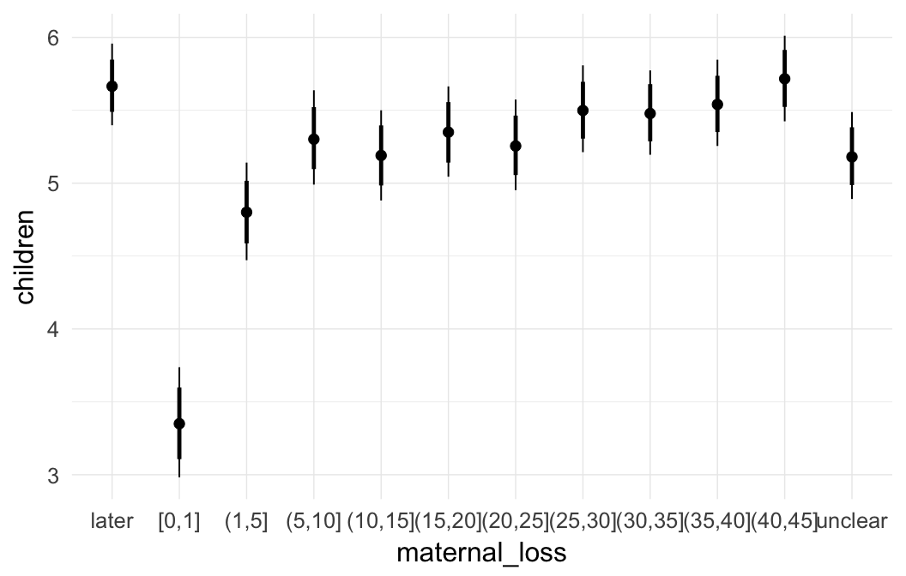
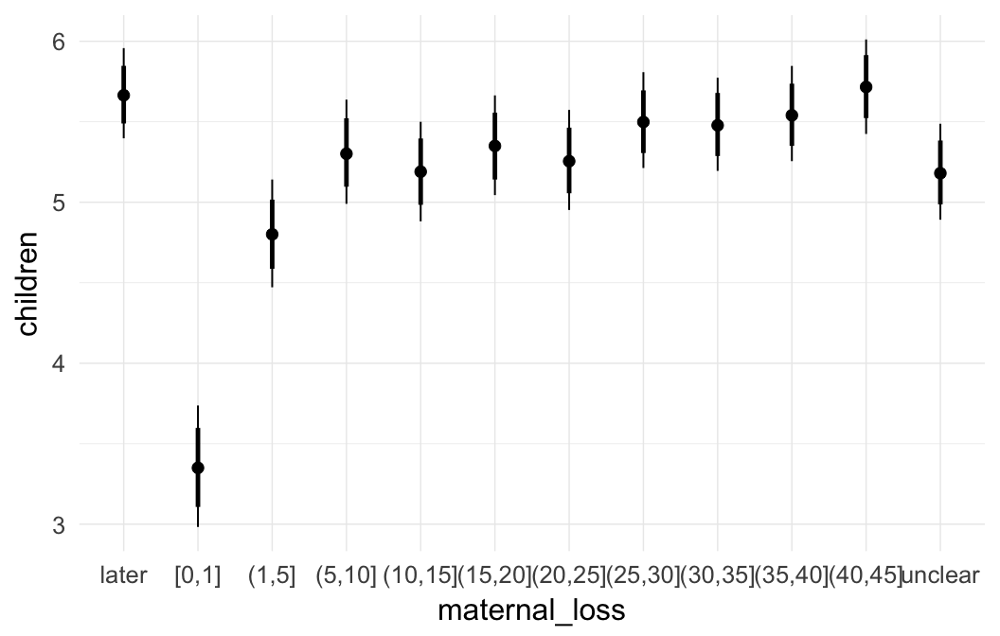
Coefficient plot
Coefficient estimates (95% and 80% credibility).
mcmc_intervals(as.matrix(model$fit), regex_pars = "b_[^I]")
mcmc_areas(as.matrix(model$fit), regex_pars = "b")
Diagnostics
These plots were made to diagnose misfit and nonconvergence.
Posterior predictive checks
brms::pp_check(model, re_formula = NA, type = "dens_overlay")brms::pp_check(model, re_formula = NA, type = "hist")Rhat
Did the 6 chains converge?
stanplot(model, pars = "^b_[^I]", type = 'rhat')Effective sample size by average sample size
stanplot(model, pars = "^b", type = 'ess')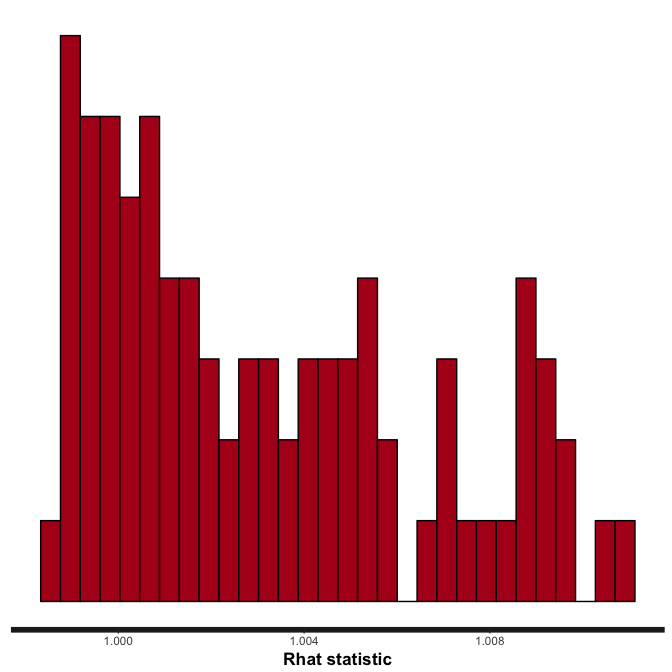
Monte Carlo SE
stanplot(model, pars = "^b", type = 'mcse')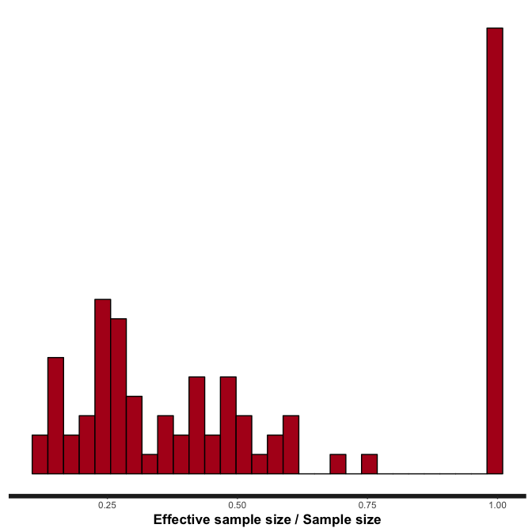
Trace plots
if(any( summary(model)$fixed[,"Rhat"] > 1.1)) { # only do traceplots if not converged
plot(model, N = 3, ask = FALSE)
}Further plots
stanplot(model, pars = "^b", type = 'diag')
File name
coefs/rpqa/r4_control_dependent_sibs.rds
Cluster script
opts_chunk$set(echo = FALSE)
clusterscript = str_replace(basename(model_filename), "\\.rds",".html")
cat("[Cluster script](" , clusterscript, ")", sep = "")r5: Birth order interacted with number of siblings
Plausibly, being first-born has a different effect, when one is an only child as opposed to having two siblings, etc. Here, we allow for such an interaction effect.
Model summary
Full summary
model_summary = summary(model, use_cache = FALSE, priors = TRUE)
print(model_summary)## Family: hurdle_poisson (log)
## Formula: children ~ paternalage + birth_cohort + male + maternalage.factor + paternalage.mean + paternal_loss + maternal_loss + older_siblings * nr.siblings + last_born + (1 | idParents)
## hu ~ paternalage + birth_cohort + male + maternalage.factor + paternalage.mean + paternal_loss + maternal_loss + older_siblings + nr.siblings + last_born + (1 | idParents) + older_siblings:nr.siblings
## Data: model_data (Number of observations: 68724)
## Samples: 6 chains, each with iter = 800; warmup = 300; thin = 1;
## total post-warmup samples = 3000
## WAIC: Not computed
##
## Priors:
## b ~ normal(0,5)
## sd ~ student_t(3, 0, 5)
## b_hu ~ normal(0,5)
## sd_hu ~ student_t(3, 0, 10)
##
## Group-Level Effects:
## ~idParents (Number of levels: 12205)
## Estimate Est.Error l-95% CI u-95% CI Eff.Sample Rhat
## sd(Intercept) 0.27 0.00 0.27 0.28 1029 1
## sd(hu_Intercept) 0.63 0.01 0.60 0.65 1120 1
##
## Population-Level Effects:
## Estimate Est.Error l-95% CI u-95% CI
## Intercept 2.13 0.03 2.07 2.18
## paternalage 0.01 0.01 -0.01 0.03
## birth_cohort1675M1680 0.02 0.02 -0.01 0.05
## birth_cohort1680M1685 0.05 0.02 0.02 0.08
## birth_cohort1685M1690 0.05 0.02 0.02 0.09
## birth_cohort1690M1695 0.05 0.02 0.01 0.08
## birth_cohort1695M1700 0.04 0.02 0.00 0.07
## birth_cohort1700M1705 0.02 0.02 -0.01 0.05
## birth_cohort1705M1710 0.00 0.02 -0.03 0.03
## birth_cohort1710M1715 -0.01 0.02 -0.04 0.02
## birth_cohort1715M1720 -0.04 0.02 -0.07 -0.01
## birth_cohort1720M1725 -0.04 0.02 -0.07 -0.01
## birth_cohort1725M1730 -0.07 0.02 -0.10 -0.03
## birth_cohort1730M1735 -0.05 0.02 -0.08 -0.02
## birth_cohort1735M1740 -0.06 0.02 -0.09 -0.03
## male1 0.11 0.00 0.10 0.12
## maternalage.factor1420 -0.01 0.01 -0.03 0.01
## maternalage.factor3550 0.00 0.01 -0.01 0.02
## paternalage.mean -0.03 0.01 -0.06 -0.01
## paternal_loss01 -0.04 0.02 -0.08 0.00
## paternal_loss15 -0.02 0.02 -0.05 0.01
## paternal_loss510 -0.01 0.01 -0.04 0.02
## paternal_loss1015 -0.02 0.01 -0.04 0.01
## paternal_loss1520 -0.03 0.01 -0.05 0.00
## paternal_loss2025 -0.02 0.01 -0.05 0.00
## paternal_loss2530 -0.01 0.01 -0.03 0.01
## paternal_loss3035 -0.02 0.01 -0.04 0.00
## paternal_loss3540 -0.02 0.01 -0.04 0.00
## paternal_loss4045 0.00 0.01 -0.02 0.02
## paternal_lossunclear -0.05 0.01 -0.08 -0.03
## maternal_loss01 -0.05 0.02 -0.10 -0.01
## maternal_loss15 -0.03 0.02 -0.06 0.00
## maternal_loss510 0.01 0.01 -0.01 0.04
## maternal_loss1015 -0.01 0.01 -0.03 0.02
## maternal_loss1520 0.01 0.01 -0.02 0.03
## maternal_loss2025 -0.02 0.01 -0.04 0.00
## maternal_loss2530 -0.01 0.01 -0.03 0.01
## maternal_loss3035 -0.01 0.01 -0.03 0.01
## maternal_loss3540 0.00 0.01 -0.02 0.02
## maternal_loss4045 0.00 0.01 -0.01 0.02
## maternal_lossunclear -0.02 0.01 -0.04 0.01
## older_siblings1 -0.04 0.02 -0.07 0.00
## older_siblings2 -0.05 0.02 -0.08 -0.01
## older_siblings3 -0.06 0.02 -0.10 -0.02
## older_siblings4 -0.07 0.02 -0.12 -0.02
## older_siblings5P -0.05 0.02 -0.09 -0.01
## nr.siblings 0.01 0.00 0.00 0.01
## last_born1 0.00 0.01 -0.01 0.02
## older_siblings1:nr.siblings 0.00 0.00 0.00 0.01
## older_siblings2:nr.siblings 0.00 0.00 0.00 0.01
## older_siblings3:nr.siblings 0.00 0.00 0.00 0.01
## older_siblings4:nr.siblings 0.01 0.00 0.00 0.01
## older_siblings5P:nr.siblings 0.00 0.00 0.00 0.01
## hu_Intercept -0.82 0.09 -1.00 -0.64
## hu_paternalage 0.07 0.04 -0.01 0.16
## hu_birth_cohort1675M1680 0.08 0.07 -0.06 0.21
## hu_birth_cohort1680M1685 0.23 0.07 0.10 0.37
## hu_birth_cohort1685M1690 0.34 0.07 0.20 0.48
## hu_birth_cohort1690M1695 0.09 0.07 -0.05 0.22
## hu_birth_cohort1695M1700 0.10 0.06 -0.02 0.23
## hu_birth_cohort1700M1705 0.26 0.06 0.13 0.38
## hu_birth_cohort1705M1710 0.16 0.06 0.03 0.28
## hu_birth_cohort1710M1715 0.43 0.06 0.32 0.56
## hu_birth_cohort1715M1720 0.29 0.06 0.17 0.41
## hu_birth_cohort1720M1725 0.31 0.06 0.19 0.43
## hu_birth_cohort1725M1730 0.67 0.06 0.55 0.79
## hu_birth_cohort1730M1735 0.73 0.06 0.61 0.84
## hu_birth_cohort1735M1740 0.57 0.06 0.45 0.69
## hu_male1 0.44 0.02 0.40 0.47
## hu_maternalage.factor1420 0.05 0.04 -0.02 0.13
## hu_maternalage.factor3550 0.05 0.03 -0.01 0.11
## hu_paternalage.mean -0.09 0.04 -0.17 0.00
## hu_paternal_loss01 0.59 0.07 0.45 0.73
## hu_paternal_loss15 0.32 0.06 0.21 0.43
## hu_paternal_loss510 0.29 0.05 0.19 0.38
## hu_paternal_loss1015 0.17 0.04 0.08 0.26
## hu_paternal_loss1520 0.28 0.04 0.20 0.36
## hu_paternal_loss2025 0.17 0.04 0.10 0.25
## hu_paternal_loss2530 0.17 0.04 0.10 0.25
## hu_paternal_loss3035 0.14 0.04 0.07 0.21
## hu_paternal_loss3540 0.10 0.04 0.03 0.18
## hu_paternal_loss4045 0.07 0.04 -0.01 0.15
## hu_paternal_lossunclear 0.37 0.04 0.30 0.45
## hu_maternal_loss01 1.07 0.07 0.93 1.21
## hu_maternal_loss15 0.39 0.05 0.29 0.49
## hu_maternal_loss510 0.25 0.04 0.17 0.34
## hu_maternal_loss1015 0.25 0.04 0.17 0.33
## hu_maternal_loss1520 0.20 0.04 0.11 0.27
## hu_maternal_loss2025 0.17 0.04 0.09 0.25
## hu_maternal_loss2530 0.05 0.04 -0.03 0.12
## hu_maternal_loss3035 0.08 0.03 0.01 0.15
## hu_maternal_loss3540 0.08 0.03 0.01 0.14
## hu_maternal_loss4045 -0.02 0.03 -0.08 0.05
## hu_maternal_lossunclear 0.22 0.04 0.15 0.30
## hu_older_siblings1 0.00 0.06 -0.12 0.12
## hu_older_siblings2 0.02 0.07 -0.12 0.17
## hu_older_siblings3 -0.09 0.08 -0.25 0.07
## hu_older_siblings4 -0.01 0.09 -0.18 0.18
## hu_older_siblings5P -0.43 0.08 -0.59 -0.28
## hu_nr.siblings 0.02 0.01 0.00 0.03
## hu_last_born1 0.01 0.03 -0.05 0.07
## hu_older_siblings1:nr.siblings -0.01 0.01 -0.02 0.01
## hu_older_siblings2:nr.siblings -0.01 0.01 -0.03 0.00
## hu_older_siblings3:nr.siblings -0.01 0.01 -0.02 0.01
## hu_older_siblings4:nr.siblings -0.02 0.01 -0.04 0.00
## hu_older_siblings5P:nr.siblings 0.02 0.01 0.01 0.04
## Eff.Sample Rhat
## Intercept 1008 1.00
## paternalage 1592 1.00
## birth_cohort1675M1680 1331 1.00
## birth_cohort1680M1685 1023 1.00
## birth_cohort1685M1690 997 1.00
## birth_cohort1690M1695 878 1.00
## birth_cohort1695M1700 775 1.00
## birth_cohort1700M1705 730 1.00
## birth_cohort1705M1710 689 1.00
## birth_cohort1710M1715 699 1.00
## birth_cohort1715M1720 691 1.00
## birth_cohort1720M1725 639 1.00
## birth_cohort1725M1730 630 1.00
## birth_cohort1730M1735 644 1.00
## birth_cohort1735M1740 637 1.00
## male1 3000 1.00
## maternalage.factor1420 3000 1.00
## maternalage.factor3550 3000 1.00
## paternalage.mean 1685 1.00
## paternal_loss01 1416 1.00
## paternal_loss15 1168 1.00
## paternal_loss510 930 1.00
## paternal_loss1015 965 1.00
## paternal_loss1520 1011 1.00
## paternal_loss2025 966 1.00
## paternal_loss2530 989 1.00
## paternal_loss3035 1135 1.00
## paternal_loss3540 1374 1.00
## paternal_loss4045 1513 1.00
## paternal_lossunclear 1050 1.00
## maternal_loss01 1666 1.00
## maternal_loss15 1149 1.00
## maternal_loss510 1075 1.01
## maternal_loss1015 1094 1.01
## maternal_loss1520 1169 1.01
## maternal_loss2025 1509 1.00
## maternal_loss2530 1675 1.00
## maternal_loss3035 1728 1.00
## maternal_loss3540 1737 1.00
## maternal_loss4045 3000 1.00
## maternal_lossunclear 1207 1.00
## older_siblings1 3000 1.00
## older_siblings2 3000 1.00
## older_siblings3 3000 1.00
## older_siblings4 3000 1.00
## older_siblings5P 1883 1.00
## nr.siblings 3000 1.00
## last_born1 3000 1.00
## older_siblings1:nr.siblings 3000 1.00
## older_siblings2:nr.siblings 3000 1.00
## older_siblings3:nr.siblings 3000 1.00
## older_siblings4:nr.siblings 3000 1.00
## older_siblings5P:nr.siblings 3000 1.00
## hu_Intercept 745 1.01
## hu_paternalage 2077 1.00
## hu_birth_cohort1675M1680 725 1.01
## hu_birth_cohort1680M1685 669 1.01
## hu_birth_cohort1685M1690 666 1.01
## hu_birth_cohort1690M1695 665 1.01
## hu_birth_cohort1695M1700 504 1.02
## hu_birth_cohort1700M1705 439 1.02
## hu_birth_cohort1705M1710 482 1.01
## hu_birth_cohort1710M1715 470 1.02
## hu_birth_cohort1715M1720 475 1.02
## hu_birth_cohort1720M1725 475 1.02
## hu_birth_cohort1725M1730 491 1.02
## hu_birth_cohort1730M1735 448 1.02
## hu_birth_cohort1735M1740 434 1.02
## hu_male1 3000 1.00
## hu_maternalage.factor1420 3000 1.00
## hu_maternalage.factor3550 3000 1.00
## hu_paternalage.mean 2052 1.00
## hu_paternal_loss01 3000 1.00
## hu_paternal_loss15 1665 1.00
## hu_paternal_loss510 1557 1.00
## hu_paternal_loss1015 1317 1.00
## hu_paternal_loss1520 1133 1.00
## hu_paternal_loss2025 1238 1.00
## hu_paternal_loss2530 958 1.01
## hu_paternal_loss3035 1311 1.00
## hu_paternal_loss3540 1299 1.00
## hu_paternal_loss4045 1763 1.00
## hu_paternal_lossunclear 943 1.01
## hu_maternal_loss01 3000 1.00
## hu_maternal_loss15 3000 1.00
## hu_maternal_loss510 3000 1.00
## hu_maternal_loss1015 3000 1.00
## hu_maternal_loss1520 3000 1.00
## hu_maternal_loss2025 3000 1.00
## hu_maternal_loss2530 1414 1.00
## hu_maternal_loss3035 3000 1.00
## hu_maternal_loss3540 3000 1.00
## hu_maternal_loss4045 3000 1.00
## hu_maternal_lossunclear 1559 1.00
## hu_older_siblings1 3000 1.00
## hu_older_siblings2 3000 1.00
## hu_older_siblings3 3000 1.00
## hu_older_siblings4 2316 1.00
## hu_older_siblings5P 1911 1.00
## hu_nr.siblings 3000 1.00
## hu_last_born1 3000 1.00
## hu_older_siblings1:nr.siblings 3000 1.00
## hu_older_siblings2:nr.siblings 3000 1.00
## hu_older_siblings3:nr.siblings 3000 1.00
## hu_older_siblings4:nr.siblings 3000 1.00
## hu_older_siblings5P:nr.siblings 3000 1.00
##
## Samples were drawn using sampling(NUTS). For each parameter, Eff.Sample
## is a crude measure of effective sample size, and Rhat is the potential
## scale reduction factor on split chains (at convergence, Rhat = 1).Table of fixed effects
fixed_eff = data.frame(model_summary$fixed, check.names = F)
fixed_eff$Est.Error = fixed_eff$Eff.Sample = fixed_eff$Rhat = NULL
fixed_eff$OR = exp(fixed_eff$Estimate)
fixed_eff$OR_low = exp(fixed_eff$`l-95% CI`)
fixed_eff$OR_high = exp(fixed_eff$`u-95% CI`)
pander::pander(fixed_eff)| Estimate | l-95% CI | u-95% CI | OR | OR_low | OR_high | |
|---|---|---|---|---|---|---|
| Intercept | 2.126 | 2.07 | 2.183 | 8.379 | 7.923 | 8.873 |
| paternalage | 0.01342 | -0.007647 | 0.03499 | 1.014 | 0.9924 | 1.036 |
| birth_cohort1675M1680 | 0.02148 | -0.008483 | 0.05181 | 1.022 | 0.9916 | 1.053 |
| birth_cohort1680M1685 | 0.04849 | 0.01723 | 0.07967 | 1.05 | 1.017 | 1.083 |
| birth_cohort1685M1690 | 0.05108 | 0.01857 | 0.08501 | 1.052 | 1.019 | 1.089 |
| birth_cohort1690M1695 | 0.04759 | 0.01454 | 0.08016 | 1.049 | 1.015 | 1.083 |
| birth_cohort1695M1700 | 0.0354 | 0.003609 | 0.06604 | 1.036 | 1.004 | 1.068 |
| birth_cohort1700M1705 | 0.02156 | -0.00936 | 0.05363 | 1.022 | 0.9907 | 1.055 |
| birth_cohort1705M1710 | -0.001418 | -0.03283 | 0.03123 | 0.9986 | 0.9677 | 1.032 |
| birth_cohort1710M1715 | -0.01146 | -0.04383 | 0.02006 | 0.9886 | 0.9571 | 1.02 |
| birth_cohort1715M1720 | -0.03984 | -0.07077 | -0.009533 | 0.9609 | 0.9317 | 0.9905 |
| birth_cohort1720M1725 | -0.04195 | -0.07282 | -0.01082 | 0.9589 | 0.9298 | 0.9892 |
| birth_cohort1725M1730 | -0.06578 | -0.09724 | -0.03497 | 0.9363 | 0.9073 | 0.9656 |
| birth_cohort1730M1735 | -0.04874 | -0.08037 | -0.01844 | 0.9524 | 0.9228 | 0.9817 |
| birth_cohort1735M1740 | -0.05983 | -0.09264 | -0.02837 | 0.9419 | 0.9115 | 0.972 |
| male1 | 0.111 | 0.1027 | 0.1193 | 1.117 | 1.108 | 1.127 |
| maternalage.factor1420 | -0.005993 | -0.02599 | 0.01388 | 0.994 | 0.9743 | 1.014 |
| maternalage.factor3550 | 0.001196 | -0.01461 | 0.01686 | 1.001 | 0.9855 | 1.017 |
| paternalage.mean | -0.0317 | -0.05511 | -0.008243 | 0.9688 | 0.9464 | 0.9918 |
| paternal_loss01 | -0.03713 | -0.07831 | 0.003802 | 0.9636 | 0.9247 | 1.004 |
| paternal_loss15 | -0.01719 | -0.0485 | 0.0148 | 0.983 | 0.9527 | 1.015 |
| paternal_loss510 | -0.01019 | -0.0381 | 0.0177 | 0.9899 | 0.9626 | 1.018 |
| paternal_loss1015 | -0.01702 | -0.04208 | 0.007577 | 0.9831 | 0.9588 | 1.008 |
| paternal_loss1520 | -0.0251 | -0.04889 | -0.0009986 | 0.9752 | 0.9523 | 0.999 |
| paternal_loss2025 | -0.02367 | -0.04543 | -0.002628 | 0.9766 | 0.9556 | 0.9974 |
| paternal_loss2530 | -0.01341 | -0.03423 | 0.007877 | 0.9867 | 0.9664 | 1.008 |
| paternal_loss3035 | -0.02328 | -0.04271 | -0.003538 | 0.977 | 0.9582 | 0.9965 |
| paternal_loss3540 | -0.02261 | -0.04096 | -0.004002 | 0.9776 | 0.9599 | 0.996 |
| paternal_loss4045 | -0.003744 | -0.02251 | 0.01646 | 0.9963 | 0.9777 | 1.017 |
| paternal_lossunclear | -0.05363 | -0.07864 | -0.02816 | 0.9478 | 0.9244 | 0.9722 |
| maternal_loss01 | -0.0506 | -0.09706 | -0.005299 | 0.9507 | 0.9075 | 0.9947 |
| maternal_loss15 | -0.02687 | -0.05669 | 0.003511 | 0.9735 | 0.9449 | 1.004 |
| maternal_loss510 | 0.01197 | -0.01419 | 0.03819 | 1.012 | 0.9859 | 1.039 |
| maternal_loss1015 | -0.008262 | -0.03252 | 0.01749 | 0.9918 | 0.968 | 1.018 |
| maternal_loss1520 | 0.005781 | -0.01766 | 0.02989 | 1.006 | 0.9825 | 1.03 |
| maternal_loss2025 | -0.01956 | -0.04274 | 0.003199 | 0.9806 | 0.9582 | 1.003 |
| maternal_loss2530 | -0.0129 | -0.03391 | 0.007453 | 0.9872 | 0.9667 | 1.007 |
| maternal_loss3035 | -0.008163 | -0.0272 | 0.01012 | 0.9919 | 0.9732 | 1.01 |
| maternal_loss3540 | 0.001071 | -0.01582 | 0.01786 | 1.001 | 0.9843 | 1.018 |
| maternal_loss4045 | 0.004153 | -0.0128 | 0.021 | 1.004 | 0.9873 | 1.021 |
| maternal_lossunclear | -0.01898 | -0.04391 | 0.005151 | 0.9812 | 0.957 | 1.005 |
| older_siblings1 | -0.03569 | -0.06752 | -0.002859 | 0.9649 | 0.9347 | 0.9971 |
| older_siblings2 | -0.04598 | -0.08319 | -0.009774 | 0.9551 | 0.9202 | 0.9903 |
| older_siblings3 | -0.06003 | -0.103 | -0.01677 | 0.9417 | 0.9021 | 0.9834 |
| older_siblings4 | -0.07192 | -0.1207 | -0.02284 | 0.9306 | 0.8863 | 0.9774 |
| older_siblings5P | -0.04857 | -0.0935 | -0.006911 | 0.9526 | 0.9107 | 0.9931 |
| nr.siblings | 0.005851 | 0.002625 | 0.00918 | 1.006 | 1.003 | 1.009 |
| last_born1 | 0.001901 | -0.01321 | 0.01674 | 1.002 | 0.9869 | 1.017 |
| older_siblings1:nr.siblings | 0.001837 | -0.002021 | 0.005615 | 1.002 | 0.998 | 1.006 |
| older_siblings2:nr.siblings | 0.002608 | -0.001584 | 0.00683 | 1.003 | 0.9984 | 1.007 |
| older_siblings3:nr.siblings | 0.003196 | -0.001507 | 0.007831 | 1.003 | 0.9985 | 1.008 |
| older_siblings4:nr.siblings | 0.005689 | 0.0006392 | 0.01061 | 1.006 | 1.001 | 1.011 |
| older_siblings5P:nr.siblings | 0.001332 | -0.002843 | 0.005473 | 1.001 | 0.9972 | 1.005 |
| hu_Intercept | -0.8215 | -0.9988 | -0.6373 | 0.4398 | 0.3683 | 0.5287 |
| hu_paternalage | 0.0714 | -0.01115 | 0.156 | 1.074 | 0.9889 | 1.169 |
| hu_birth_cohort1675M1680 | 0.0763 | -0.06352 | 0.2072 | 1.079 | 0.9385 | 1.23 |
| hu_birth_cohort1680M1685 | 0.2338 | 0.09991 | 0.3692 | 1.263 | 1.105 | 1.447 |
| hu_birth_cohort1685M1690 | 0.3419 | 0.2046 | 0.475 | 1.408 | 1.227 | 1.608 |
| hu_birth_cohort1690M1695 | 0.08582 | -0.04869 | 0.2247 | 1.09 | 0.9525 | 1.252 |
| hu_birth_cohort1695M1700 | 0.1037 | -0.02383 | 0.2318 | 1.109 | 0.9765 | 1.261 |
| hu_birth_cohort1700M1705 | 0.2566 | 0.1298 | 0.3774 | 1.293 | 1.139 | 1.458 |
| hu_birth_cohort1705M1710 | 0.1556 | 0.03094 | 0.2805 | 1.168 | 1.031 | 1.324 |
| hu_birth_cohort1710M1715 | 0.4342 | 0.3162 | 0.5574 | 1.544 | 1.372 | 1.746 |
| hu_birth_cohort1715M1720 | 0.2913 | 0.1735 | 0.412 | 1.338 | 1.19 | 1.51 |
| hu_birth_cohort1720M1725 | 0.3098 | 0.1926 | 0.4278 | 1.363 | 1.212 | 1.534 |
| hu_birth_cohort1725M1730 | 0.6696 | 0.5491 | 0.7896 | 1.954 | 1.732 | 2.202 |
| hu_birth_cohort1730M1735 | 0.726 | 0.6136 | 0.84 | 2.067 | 1.847 | 2.316 |
| hu_birth_cohort1735M1740 | 0.5665 | 0.4507 | 0.6861 | 1.762 | 1.569 | 1.986 |
| hu_male1 | 0.4354 | 0.3997 | 0.4684 | 1.546 | 1.491 | 1.597 |
| hu_maternalage.factor1420 | 0.04987 | -0.02303 | 0.1251 | 1.051 | 0.9772 | 1.133 |
| hu_maternalage.factor3550 | 0.05231 | -0.006788 | 0.1104 | 1.054 | 0.9932 | 1.117 |
| hu_paternalage.mean | -0.08563 | -0.1724 | 0.002868 | 0.9179 | 0.8416 | 1.003 |
| hu_paternal_loss01 | 0.5898 | 0.4469 | 0.7301 | 1.804 | 1.563 | 2.075 |
| hu_paternal_loss15 | 0.3197 | 0.2107 | 0.43 | 1.377 | 1.234 | 1.537 |
| hu_paternal_loss510 | 0.2899 | 0.1927 | 0.3835 | 1.336 | 1.213 | 1.467 |
| hu_paternal_loss1015 | 0.1684 | 0.08204 | 0.2557 | 1.183 | 1.085 | 1.291 |
| hu_paternal_loss1520 | 0.2786 | 0.1961 | 0.3635 | 1.321 | 1.217 | 1.438 |
| hu_paternal_loss2025 | 0.1715 | 0.0966 | 0.2494 | 1.187 | 1.101 | 1.283 |
| hu_paternal_loss2530 | 0.1745 | 0.09914 | 0.2528 | 1.191 | 1.104 | 1.288 |
| hu_paternal_loss3035 | 0.138 | 0.06532 | 0.2112 | 1.148 | 1.067 | 1.235 |
| hu_paternal_loss3540 | 0.1012 | 0.02935 | 0.1765 | 1.107 | 1.03 | 1.193 |
| hu_paternal_loss4045 | 0.06855 | -0.01001 | 0.147 | 1.071 | 0.99 | 1.158 |
| hu_paternal_lossunclear | 0.3707 | 0.2962 | 0.4491 | 1.449 | 1.345 | 1.567 |
| hu_maternal_loss01 | 1.068 | 0.9298 | 1.207 | 2.91 | 2.534 | 3.342 |
| hu_maternal_loss15 | 0.3945 | 0.2948 | 0.4922 | 1.484 | 1.343 | 1.636 |
| hu_maternal_loss510 | 0.2549 | 0.1689 | 0.3405 | 1.29 | 1.184 | 1.406 |
| hu_maternal_loss1015 | 0.2535 | 0.1705 | 0.3344 | 1.289 | 1.186 | 1.397 |
| hu_maternal_loss1520 | 0.1965 | 0.1144 | 0.2741 | 1.217 | 1.121 | 1.315 |
| hu_maternal_loss2025 | 0.1688 | 0.09151 | 0.2486 | 1.184 | 1.096 | 1.282 |
| hu_maternal_loss2530 | 0.05046 | -0.02535 | 0.1236 | 1.052 | 0.975 | 1.132 |
| hu_maternal_loss3035 | 0.0824 | 0.01322 | 0.1498 | 1.086 | 1.013 | 1.162 |
| hu_maternal_loss3540 | 0.0758 | 0.01276 | 0.138 | 1.079 | 1.013 | 1.148 |
| hu_maternal_loss4045 | -0.01519 | -0.08365 | 0.05253 | 0.9849 | 0.9198 | 1.054 |
| hu_maternal_lossunclear | 0.2194 | 0.1451 | 0.2976 | 1.245 | 1.156 | 1.347 |
| hu_older_siblings1 | -0.003786 | -0.1238 | 0.1201 | 0.9962 | 0.8836 | 1.128 |
| hu_older_siblings2 | 0.02046 | -0.1212 | 0.1672 | 1.021 | 0.8858 | 1.182 |
| hu_older_siblings3 | -0.08928 | -0.2453 | 0.07431 | 0.9146 | 0.7825 | 1.077 |
| hu_older_siblings4 | -0.005258 | -0.1827 | 0.1796 | 0.9948 | 0.833 | 1.197 |
| hu_older_siblings5P | -0.4322 | -0.5857 | -0.2812 | 0.6491 | 0.5567 | 0.7548 |
| hu_nr.siblings | 0.01665 | 0.004467 | 0.02837 | 1.017 | 1.004 | 1.029 |
| hu_last_born1 | 0.005473 | -0.0518 | 0.06506 | 1.005 | 0.9495 | 1.067 |
| hu_older_siblings1:nr.siblings | -0.00644 | -0.02128 | 0.007887 | 0.9936 | 0.9789 | 1.008 |
| hu_older_siblings2:nr.siblings | -0.01373 | -0.03019 | 0.002747 | 0.9864 | 0.9703 | 1.003 |
| hu_older_siblings3:nr.siblings | -0.005607 | -0.02402 | 0.01148 | 0.9944 | 0.9763 | 1.012 |
| hu_older_siblings4:nr.siblings | -0.0162 | -0.03581 | 0.002731 | 0.9839 | 0.9648 | 1.003 |
| hu_older_siblings5P:nr.siblings | 0.02165 | 0.00564 | 0.0367 | 1.022 | 1.006 | 1.037 |
Paternal age effect
pander::pander(paternal_age_10y_effect(model))| effect | median_estimate | ci_95 | ci_80 |
|---|---|---|---|
| estimate father 25y | 5.62 | [5.33;5.92] | [5.43;5.82] |
| estimate father 35y | 5.57 | [5.25;5.9] | [5.35;5.8] |
| percentage change | -0.93 | [-4.21;2.6] | [-3.08;1.31] |
| OR/IRR | 1.01 | [0.99;1.04] | [1;1.03] |
| OR hurdle | 1.07 | [0.99;1.17] | [1.02;1.14] |
Marginal effect plots
plot.brmsMarginalEffects_shades(
x = marginal_effects(model, re_formula = NA, probs = c(0.025,0.975)),
y = marginal_effects(model, re_formula = NA, probs = c(0.1,0.9)),
ask = FALSE)

Coefficient plot
Coefficient estimates (95% and 80% credibility).
mcmc_intervals(as.matrix(model$fit), regex_pars = "b_[^I]")mcmc_areas(as.matrix(model$fit), regex_pars = "b")
Diagnostics
These plots were made to diagnose misfit and nonconvergence.
Posterior predictive checks
brms::pp_check(model, re_formula = NA, type = "dens_overlay")brms::pp_check(model, re_formula = NA, type = "hist")Rhat
Did the 6 chains converge?
stanplot(model, pars = "^b_[^I]", type = 'rhat')Effective sample size by average sample size
stanplot(model, pars = "^b", type = 'ess')Monte Carlo SE
stanplot(model, pars = "^b", type = 'mcse')
Trace plots
if(any( summary(model)$fixed[,"Rhat"] > 1.1)) { # only do traceplots if not converged
plot(model, N = 3, ask = FALSE)
}Further plots
stanplot(model, pars = "^b", type = 'diag')
File name
coefs/rpqa/r5_birth_order_interact_siblings.rds
Cluster script
opts_chunk$set(echo = FALSE)
clusterscript = str_replace(basename(model_filename), "\\.rds",".html")
cat("[Cluster script](" , clusterscript, ")", sep = "")r6: No birth order control
Paternal age and birth order are highly collinear with each other and with maternal age. Therefore, the choice to include this predictor widens standard errors for each predictor and may be disputed. Here we show what happens when we simply omit the birth order control.
Model summary
Full summary
model_summary = summary(model, use_cache = FALSE, priors = TRUE)
print(model_summary)## Family: hurdle_poisson (log)
## Formula: children ~ paternalage + birth_cohort + male + maternalage.factor + paternalage.mean + paternal_loss + maternal_loss + nr.siblings + (1 | idParents)
## hu ~ paternalage + birth_cohort + male + maternalage.factor + paternalage.mean + paternal_loss + maternal_loss + nr.siblings + (1 | idParents)
## Data: model_data (Number of observations: 68724)
## Samples: 6 chains, each with iter = 800; warmup = 300; thin = 1;
## total post-warmup samples = 3000
## WAIC: Not computed
##
## Priors:
## b ~ normal(0,5)
## sd ~ student_t(3, 0, 5)
## b_hu ~ normal(0,5)
## sd_hu ~ student_t(3, 0, 10)
##
## Group-Level Effects:
## ~idParents (Number of levels: 12205)
## Estimate Est.Error l-95% CI u-95% CI Eff.Sample Rhat
## sd(Intercept) 0.27 0.00 0.27 0.28 928 1
## sd(hu_Intercept) 0.63 0.01 0.60 0.66 1128 1
##
## Population-Level Effects:
## Estimate Est.Error l-95% CI u-95% CI Eff.Sample
## Intercept 2.10 0.03 2.05 2.15 826
## paternalage -0.01 0.01 -0.02 0.01 1364
## birth_cohort1675M1680 0.02 0.02 -0.01 0.05 936
## birth_cohort1680M1685 0.05 0.02 0.01 0.08 696
## birth_cohort1685M1690 0.05 0.02 0.02 0.08 666
## birth_cohort1690M1695 0.05 0.02 0.01 0.08 426
## birth_cohort1695M1700 0.04 0.02 0.00 0.07 393
## birth_cohort1700M1705 0.02 0.02 -0.01 0.05 469
## birth_cohort1705M1710 0.00 0.02 -0.03 0.03 388
## birth_cohort1710M1715 -0.01 0.02 -0.04 0.02 394
## birth_cohort1715M1720 -0.04 0.02 -0.07 -0.01 342
## birth_cohort1720M1725 -0.04 0.02 -0.07 -0.01 418
## birth_cohort1725M1730 -0.06 0.02 -0.10 -0.03 339
## birth_cohort1730M1735 -0.05 0.02 -0.08 -0.02 338
## birth_cohort1735M1740 -0.06 0.02 -0.09 -0.03 409
## male1 0.11 0.00 0.10 0.12 3000
## maternalage.factor1420 0.00 0.01 -0.02 0.02 3000
## maternalage.factor3550 0.01 0.01 -0.01 0.02 3000
## paternalage.mean -0.01 0.01 -0.03 0.00 1226
## paternal_loss01 -0.04 0.02 -0.08 0.01 1347
## paternal_loss15 -0.02 0.02 -0.05 0.02 1054
## paternal_loss510 -0.01 0.01 -0.04 0.02 951
## paternal_loss1015 -0.01 0.01 -0.04 0.01 824
## paternal_loss1520 -0.02 0.01 -0.05 0.00 952
## paternal_loss2025 -0.02 0.01 -0.04 0.00 1121
## paternal_loss2530 -0.01 0.01 -0.03 0.01 985
## paternal_loss3035 -0.02 0.01 -0.04 0.00 1509
## paternal_loss3540 -0.02 0.01 -0.04 0.00 1602
## paternal_loss4045 0.00 0.01 -0.02 0.02 2114
## paternal_lossunclear -0.05 0.01 -0.08 -0.03 989
## maternal_loss01 -0.05 0.02 -0.10 -0.01 3000
## maternal_loss15 -0.03 0.02 -0.06 0.00 1431
## maternal_loss510 0.01 0.01 -0.01 0.04 1314
## maternal_loss1015 -0.01 0.01 -0.03 0.02 1282
## maternal_loss1520 0.01 0.01 -0.02 0.03 1410
## maternal_loss2025 -0.02 0.01 -0.04 0.00 1632
## maternal_loss2530 -0.01 0.01 -0.03 0.01 1420
## maternal_loss3035 -0.01 0.01 -0.03 0.01 1743
## maternal_loss3540 0.00 0.01 -0.02 0.02 2082
## maternal_loss4045 0.00 0.01 -0.01 0.02 3000
## maternal_lossunclear -0.02 0.01 -0.04 0.01 992
## nr.siblings 0.01 0.00 0.00 0.01 1593
## hu_Intercept -0.86 0.09 -1.03 -0.69 695
## hu_paternalage -0.03 0.02 -0.08 0.02 1311
## hu_birth_cohort1675M1680 0.07 0.07 -0.07 0.20 794
## hu_birth_cohort1680M1685 0.22 0.07 0.08 0.35 678
## hu_birth_cohort1685M1690 0.33 0.07 0.20 0.47 736
## hu_birth_cohort1690M1695 0.09 0.07 -0.05 0.22 621
## hu_birth_cohort1695M1700 0.11 0.07 -0.02 0.24 635
## hu_birth_cohort1700M1705 0.26 0.06 0.14 0.37 555
## hu_birth_cohort1705M1710 0.16 0.06 0.03 0.28 563
## hu_birth_cohort1710M1715 0.44 0.06 0.32 0.55 535
## hu_birth_cohort1715M1720 0.30 0.06 0.17 0.41 528
## hu_birth_cohort1720M1725 0.32 0.06 0.20 0.43 526
## hu_birth_cohort1725M1730 0.68 0.06 0.56 0.79 523
## hu_birth_cohort1730M1735 0.73 0.06 0.62 0.84 517
## hu_birth_cohort1735M1740 0.57 0.06 0.45 0.68 489
## hu_male1 0.44 0.02 0.40 0.47 3000
## hu_maternalage.factor1420 0.09 0.04 0.02 0.16 3000
## hu_maternalage.factor3550 0.07 0.03 0.02 0.13 3000
## hu_paternalage.mean 0.01 0.03 -0.05 0.07 1527
## hu_paternal_loss01 0.58 0.07 0.44 0.72 3000
## hu_paternal_loss15 0.32 0.06 0.20 0.43 1324
## hu_paternal_loss510 0.30 0.05 0.20 0.39 981
## hu_paternal_loss1015 0.18 0.04 0.09 0.26 1053
## hu_paternal_loss1520 0.28 0.04 0.20 0.37 988
## hu_paternal_loss2025 0.17 0.04 0.09 0.25 995
## hu_paternal_loss2530 0.17 0.04 0.09 0.25 1016
## hu_paternal_loss3035 0.13 0.04 0.06 0.21 1009
## hu_paternal_loss3540 0.09 0.04 0.02 0.16 1259
## hu_paternal_loss4045 0.06 0.04 -0.01 0.14 1462
## hu_paternal_lossunclear 0.37 0.04 0.29 0.45 944
## hu_maternal_loss01 1.06 0.07 0.92 1.20 3000
## hu_maternal_loss15 0.40 0.05 0.30 0.50 1751
## hu_maternal_loss510 0.26 0.04 0.18 0.35 1872
## hu_maternal_loss1015 0.26 0.04 0.18 0.34 3000
## hu_maternal_loss1520 0.20 0.04 0.12 0.29 3000
## hu_maternal_loss2025 0.17 0.04 0.10 0.25 1777
## hu_maternal_loss2530 0.06 0.04 -0.02 0.13 3000
## hu_maternal_loss3035 0.09 0.04 0.02 0.16 1861
## hu_maternal_loss3540 0.08 0.03 0.02 0.15 3000
## hu_maternal_loss4045 -0.01 0.03 -0.08 0.05 3000
## hu_maternal_lossunclear 0.22 0.04 0.15 0.30 1725
## hu_nr.siblings 0.01 0.00 0.00 0.01 3000
## Rhat
## Intercept 1.01
## paternalage 1.00
## birth_cohort1675M1680 1.01
## birth_cohort1680M1685 1.01
## birth_cohort1685M1690 1.01
## birth_cohort1690M1695 1.02
## birth_cohort1695M1700 1.02
## birth_cohort1700M1705 1.02
## birth_cohort1705M1710 1.02
## birth_cohort1710M1715 1.03
## birth_cohort1715M1720 1.03
## birth_cohort1720M1725 1.03
## birth_cohort1725M1730 1.03
## birth_cohort1730M1735 1.03
## birth_cohort1735M1740 1.02
## male1 1.00
## maternalage.factor1420 1.00
## maternalage.factor3550 1.00
## paternalage.mean 1.00
## paternal_loss01 1.00
## paternal_loss15 1.00
## paternal_loss510 1.01
## paternal_loss1015 1.01
## paternal_loss1520 1.01
## paternal_loss2025 1.01
## paternal_loss2530 1.01
## paternal_loss3035 1.00
## paternal_loss3540 1.00
## paternal_loss4045 1.00
## paternal_lossunclear 1.00
## maternal_loss01 1.00
## maternal_loss15 1.00
## maternal_loss510 1.00
## maternal_loss1015 1.00
## maternal_loss1520 1.00
## maternal_loss2025 1.00
## maternal_loss2530 1.00
## maternal_loss3035 1.00
## maternal_loss3540 1.00
## maternal_loss4045 1.00
## maternal_lossunclear 1.00
## nr.siblings 1.00
## hu_Intercept 1.00
## hu_paternalage 1.00
## hu_birth_cohort1675M1680 1.00
## hu_birth_cohort1680M1685 1.00
## hu_birth_cohort1685M1690 1.00
## hu_birth_cohort1690M1695 1.00
## hu_birth_cohort1695M1700 1.00
## hu_birth_cohort1700M1705 1.00
## hu_birth_cohort1705M1710 1.00
## hu_birth_cohort1710M1715 1.00
## hu_birth_cohort1715M1720 1.00
## hu_birth_cohort1720M1725 1.00
## hu_birth_cohort1725M1730 1.00
## hu_birth_cohort1730M1735 1.00
## hu_birth_cohort1735M1740 1.00
## hu_male1 1.00
## hu_maternalage.factor1420 1.00
## hu_maternalage.factor3550 1.00
## hu_paternalage.mean 1.00
## hu_paternal_loss01 1.00
## hu_paternal_loss15 1.01
## hu_paternal_loss510 1.01
## hu_paternal_loss1015 1.01
## hu_paternal_loss1520 1.01
## hu_paternal_loss2025 1.01
## hu_paternal_loss2530 1.01
## hu_paternal_loss3035 1.01
## hu_paternal_loss3540 1.01
## hu_paternal_loss4045 1.01
## hu_paternal_lossunclear 1.01
## hu_maternal_loss01 1.00
## hu_maternal_loss15 1.00
## hu_maternal_loss510 1.00
## hu_maternal_loss1015 1.00
## hu_maternal_loss1520 1.00
## hu_maternal_loss2025 1.00
## hu_maternal_loss2530 1.00
## hu_maternal_loss3035 1.00
## hu_maternal_loss3540 1.00
## hu_maternal_loss4045 1.00
## hu_maternal_lossunclear 1.00
## hu_nr.siblings 1.00
##
## Samples were drawn using sampling(NUTS). For each parameter, Eff.Sample
## is a crude measure of effective sample size, and Rhat is the potential
## scale reduction factor on split chains (at convergence, Rhat = 1).Table of fixed effects
fixed_eff = data.frame(model_summary$fixed, check.names = F)
fixed_eff$Est.Error = fixed_eff$Eff.Sample = fixed_eff$Rhat = NULL
fixed_eff$OR = exp(fixed_eff$Estimate)
fixed_eff$OR_low = exp(fixed_eff$`l-95% CI`)
fixed_eff$OR_high = exp(fixed_eff$`u-95% CI`)
pander::pander(fixed_eff)| Estimate | l-95% CI | u-95% CI | OR | OR_low | OR_high | |
|---|---|---|---|---|---|---|
| Intercept | 2.1 | 2.048 | 2.154 | 8.167 | 7.756 | 8.616 |
| paternalage | -0.005927 | -0.0188 | 0.006404 | 0.9941 | 0.9814 | 1.006 |
| birth_cohort1675M1680 | 0.01816 | -0.01249 | 0.04804 | 1.018 | 0.9876 | 1.049 |
| birth_cohort1680M1685 | 0.04625 | 0.01399 | 0.0773 | 1.047 | 1.014 | 1.08 |
| birth_cohort1685M1690 | 0.04987 | 0.01813 | 0.08291 | 1.051 | 1.018 | 1.086 |
| birth_cohort1690M1695 | 0.04822 | 0.01453 | 0.07996 | 1.049 | 1.015 | 1.083 |
| birth_cohort1695M1700 | 0.03588 | 0.004197 | 0.06844 | 1.037 | 1.004 | 1.071 |
| birth_cohort1700M1705 | 0.02154 | -0.01116 | 0.05416 | 1.022 | 0.9889 | 1.056 |
| birth_cohort1705M1710 | -0.001124 | -0.03249 | 0.03191 | 0.9989 | 0.968 | 1.032 |
| birth_cohort1710M1715 | -0.01129 | -0.0429 | 0.02109 | 0.9888 | 0.958 | 1.021 |
| birth_cohort1715M1720 | -0.03874 | -0.06921 | -0.006686 | 0.962 | 0.9331 | 0.9933 |
| birth_cohort1720M1725 | -0.04076 | -0.07216 | -0.008439 | 0.9601 | 0.9304 | 0.9916 |
| birth_cohort1725M1730 | -0.06494 | -0.09536 | -0.03248 | 0.9371 | 0.909 | 0.968 |
| birth_cohort1730M1735 | -0.04855 | -0.07845 | -0.01651 | 0.9526 | 0.9245 | 0.9836 |
| birth_cohort1735M1740 | -0.06027 | -0.09224 | -0.02837 | 0.9415 | 0.9119 | 0.972 |
| male1 | 0.1111 | 0.1027 | 0.1195 | 1.117 | 1.108 | 1.127 |
| maternalage.factor1420 | 0.001239 | -0.01724 | 0.01911 | 1.001 | 0.9829 | 1.019 |
| maternalage.factor3550 | 0.007719 | -0.006165 | 0.02221 | 1.008 | 0.9939 | 1.022 |
| paternalage.mean | -0.01316 | -0.02959 | 0.003178 | 0.9869 | 0.9708 | 1.003 |
| paternal_loss01 | -0.03651 | -0.07861 | 0.00709 | 0.9642 | 0.9244 | 1.007 |
| paternal_loss15 | -0.01548 | -0.04665 | 0.01587 | 0.9846 | 0.9544 | 1.016 |
| paternal_loss510 | -0.008472 | -0.03591 | 0.02018 | 0.9916 | 0.9647 | 1.02 |
| paternal_loss1015 | -0.0145 | -0.04034 | 0.0119 | 0.9856 | 0.9605 | 1.012 |
| paternal_loss1520 | -0.02369 | -0.04688 | 0.0007729 | 0.9766 | 0.9542 | 1.001 |
| paternal_loss2025 | -0.02261 | -0.04377 | -0.0006732 | 0.9776 | 0.9572 | 0.9993 |
| paternal_loss2530 | -0.0128 | -0.03316 | 0.008879 | 0.9873 | 0.9674 | 1.009 |
| paternal_loss3035 | -0.02366 | -0.04301 | -0.003304 | 0.9766 | 0.9579 | 0.9967 |
| paternal_loss3540 | -0.02328 | -0.04101 | -0.004573 | 0.977 | 0.9598 | 0.9954 |
| paternal_loss4045 | -0.003923 | -0.02323 | 0.01515 | 0.9961 | 0.977 | 1.015 |
| paternal_lossunclear | -0.05349 | -0.07882 | -0.02782 | 0.9479 | 0.9242 | 0.9726 |
| maternal_loss01 | -0.05236 | -0.09682 | -0.005161 | 0.949 | 0.9077 | 0.9949 |
| maternal_loss15 | -0.02733 | -0.05676 | 0.002806 | 0.973 | 0.9448 | 1.003 |
| maternal_loss510 | 0.01232 | -0.0138 | 0.03734 | 1.012 | 0.9863 | 1.038 |
| maternal_loss1015 | -0.007512 | -0.0317 | 0.01586 | 0.9925 | 0.9688 | 1.016 |
| maternal_loss1520 | 0.006707 | -0.01622 | 0.02974 | 1.007 | 0.9839 | 1.03 |
| maternal_loss2025 | -0.01899 | -0.04122 | 0.003237 | 0.9812 | 0.9596 | 1.003 |
| maternal_loss2530 | -0.01226 | -0.03378 | 0.00872 | 0.9878 | 0.9668 | 1.009 |
| maternal_loss3035 | -0.008104 | -0.02672 | 0.01055 | 0.9919 | 0.9736 | 1.011 |
| maternal_loss3540 | 0.0009134 | -0.01579 | 0.01803 | 1.001 | 0.9843 | 1.018 |
| maternal_loss4045 | 0.00363 | -0.01348 | 0.02141 | 1.004 | 0.9866 | 1.022 |
| maternal_lossunclear | -0.01928 | -0.04308 | 0.006257 | 0.9809 | 0.9578 | 1.006 |
| nr.siblings | 0.005832 | 0.003742 | 0.007923 | 1.006 | 1.004 | 1.008 |
| hu_Intercept | -0.8605 | -1.025 | -0.6913 | 0.423 | 0.3588 | 0.5009 |
| hu_paternalage | -0.02867 | -0.07608 | 0.01993 | 0.9717 | 0.9267 | 1.02 |
| hu_birth_cohort1675M1680 | 0.06898 | -0.06649 | 0.2005 | 1.071 | 0.9357 | 1.222 |
| hu_birth_cohort1680M1685 | 0.2194 | 0.08436 | 0.3544 | 1.245 | 1.088 | 1.425 |
| hu_birth_cohort1685M1690 | 0.3344 | 0.2013 | 0.4726 | 1.397 | 1.223 | 1.604 |
| hu_birth_cohort1690M1695 | 0.08723 | -0.04725 | 0.2186 | 1.091 | 0.9538 | 1.244 |
| hu_birth_cohort1695M1700 | 0.1066 | -0.01801 | 0.2382 | 1.113 | 0.9822 | 1.269 |
| hu_birth_cohort1700M1705 | 0.2581 | 0.1382 | 0.3744 | 1.294 | 1.148 | 1.454 |
| hu_birth_cohort1705M1710 | 0.1579 | 0.02956 | 0.28 | 1.171 | 1.03 | 1.323 |
| hu_birth_cohort1710M1715 | 0.4377 | 0.3152 | 0.5518 | 1.549 | 1.371 | 1.736 |
| hu_birth_cohort1715M1720 | 0.2956 | 0.1723 | 0.4141 | 1.344 | 1.188 | 1.513 |
| hu_birth_cohort1720M1725 | 0.3157 | 0.1986 | 0.4303 | 1.371 | 1.22 | 1.538 |
| hu_birth_cohort1725M1730 | 0.6751 | 0.5561 | 0.7912 | 1.964 | 1.744 | 2.206 |
| hu_birth_cohort1730M1735 | 0.7323 | 0.6157 | 0.8415 | 2.08 | 1.851 | 2.32 |
| hu_birth_cohort1735M1740 | 0.5682 | 0.4527 | 0.6766 | 1.765 | 1.573 | 1.967 |
| hu_male1 | 0.4359 | 0.4036 | 0.4693 | 1.546 | 1.497 | 1.599 |
| hu_maternalage.factor1420 | 0.08693 | 0.01545 | 0.1593 | 1.091 | 1.016 | 1.173 |
| hu_maternalage.factor3550 | 0.07302 | 0.01739 | 0.1294 | 1.076 | 1.018 | 1.138 |
| hu_paternalage.mean | 0.01104 | -0.04537 | 0.06686 | 1.011 | 0.9556 | 1.069 |
| hu_paternal_loss01 | 0.5784 | 0.4352 | 0.7221 | 1.783 | 1.545 | 2.059 |
| hu_paternal_loss15 | 0.3157 | 0.2043 | 0.4268 | 1.371 | 1.227 | 1.532 |
| hu_paternal_loss510 | 0.297 | 0.2024 | 0.3928 | 1.346 | 1.224 | 1.481 |
| hu_paternal_loss1015 | 0.1765 | 0.09031 | 0.2627 | 1.193 | 1.095 | 1.3 |
| hu_paternal_loss1520 | 0.2832 | 0.1993 | 0.366 | 1.327 | 1.221 | 1.442 |
| hu_paternal_loss2025 | 0.1717 | 0.0913 | 0.2473 | 1.187 | 1.096 | 1.281 |
| hu_paternal_loss2530 | 0.1708 | 0.09486 | 0.2482 | 1.186 | 1.1 | 1.282 |
| hu_paternal_loss3035 | 0.1308 | 0.05755 | 0.2054 | 1.14 | 1.059 | 1.228 |
| hu_paternal_loss3540 | 0.09433 | 0.02128 | 0.164 | 1.099 | 1.022 | 1.178 |
| hu_paternal_loss4045 | 0.06254 | -0.01418 | 0.1367 | 1.065 | 0.9859 | 1.147 |
| hu_paternal_lossunclear | 0.37 | 0.289 | 0.4474 | 1.448 | 1.335 | 1.564 |
| hu_maternal_loss01 | 1.064 | 0.9202 | 1.204 | 2.899 | 2.51 | 3.332 |
| hu_maternal_loss15 | 0.3972 | 0.2965 | 0.4975 | 1.488 | 1.345 | 1.645 |
| hu_maternal_loss510 | 0.2627 | 0.1771 | 0.3461 | 1.3 | 1.194 | 1.414 |
| hu_maternal_loss1015 | 0.2615 | 0.179 | 0.3423 | 1.299 | 1.196 | 1.408 |
| hu_maternal_loss1520 | 0.2027 | 0.1172 | 0.2857 | 1.225 | 1.124 | 1.331 |
| hu_maternal_loss2025 | 0.1746 | 0.09739 | 0.2528 | 1.191 | 1.102 | 1.288 |
| hu_maternal_loss2530 | 0.05585 | -0.02248 | 0.1302 | 1.057 | 0.9778 | 1.139 |
| hu_maternal_loss3035 | 0.08619 | 0.01541 | 0.156 | 1.09 | 1.016 | 1.169 |
| hu_maternal_loss3540 | 0.07913 | 0.01573 | 0.1477 | 1.082 | 1.016 | 1.159 |
| hu_maternal_loss4045 | -0.01459 | -0.08364 | 0.05481 | 0.9855 | 0.9198 | 1.056 |
| hu_maternal_lossunclear | 0.2225 | 0.149 | 0.3004 | 1.249 | 1.161 | 1.35 |
| hu_nr.siblings | 0.006401 | 0.0002121 | 0.01244 | 1.006 | 1 | 1.013 |
Paternal age effect
pander::pander(paternal_age_10y_effect(model))| effect | median_estimate | ci_95 | ci_80 |
|---|---|---|---|
| estimate father 25y | 5.63 | [5.37;5.91] | [5.47;5.8] |
| estimate father 35y | 5.65 | [5.37;5.93] | [5.48;5.83] |
| percentage change | 0.28 | [-1.73;2.28] | [-1.01;1.51] |
| OR/IRR | 0.99 | [0.98;1.01] | [0.99;1] |
| OR hurdle | 0.97 | [0.93;1.02] | [0.94;1] |
Marginal effect plots
plot.brmsMarginalEffects_shades(
x = marginal_effects(model, re_formula = NA, probs = c(0.025,0.975)),
y = marginal_effects(model, re_formula = NA, probs = c(0.1,0.9)),
ask = FALSE)


 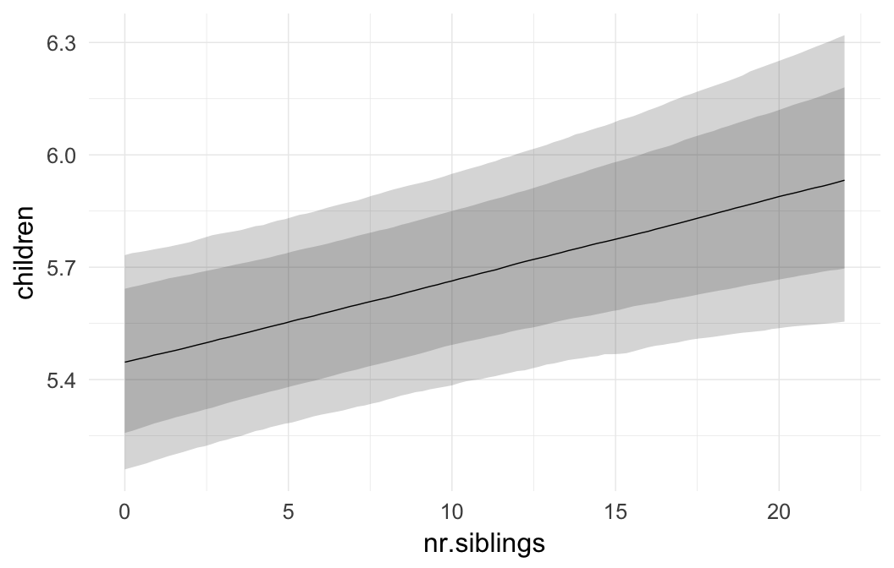
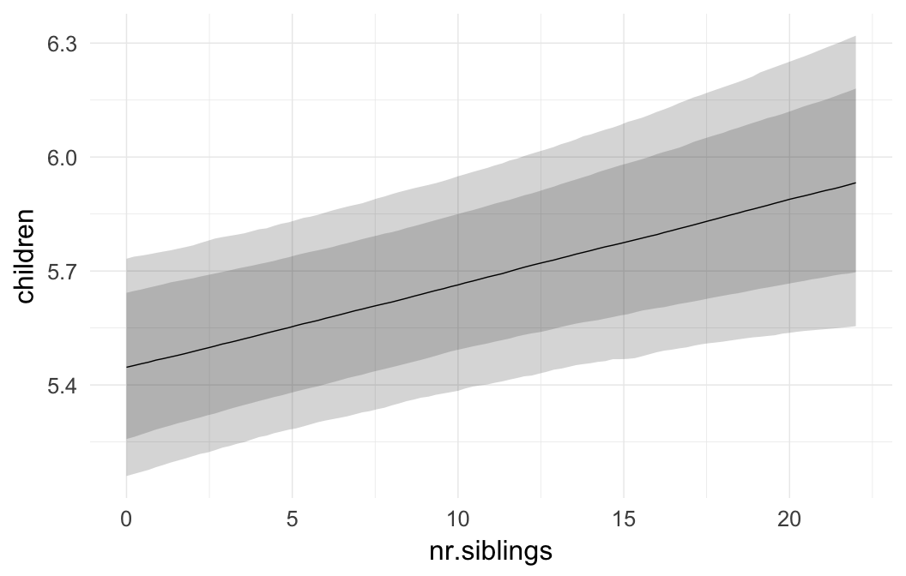
Coefficient plot
Coefficient estimates (95% and 80% credibility).
mcmc_intervals(as.matrix(model$fit), regex_pars = "b_[^I]")mcmc_areas(as.matrix(model$fit), regex_pars = "b")Diagnostics
These plots were made to diagnose misfit and nonconvergence.
Posterior predictive checks
brms::pp_check(model, re_formula = NA, type = "dens_overlay")
brms::pp_check(model, re_formula = NA, type = "hist")
Rhat
Did the 6 chains converge?
stanplot(model, pars = "^b_[^I]", type = 'rhat')
Effective sample size by average sample size
stanplot(model, pars = "^b", type = 'ess')
Monte Carlo SE
stanplot(model, pars = "^b", type = 'mcse')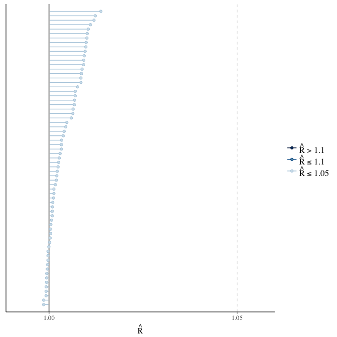
Trace plots
if(any( summary(model)$fixed[,"Rhat"] > 1.1)) { # only do traceplots if not converged
plot(model, N = 3, ask = FALSE)
}Further plots
stanplot(model, pars = "^b", type = 'diag')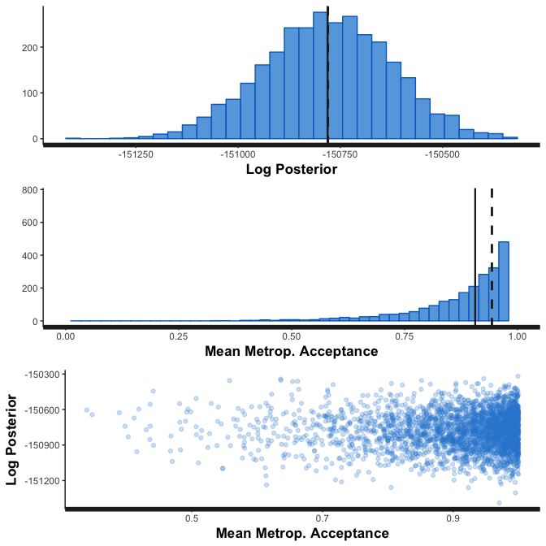
File name
coefs/rpqa/r6_no_birth_order_control.rds
Cluster script
opts_chunk$set(echo = FALSE)
clusterscript = str_replace(basename(model_filename), "\\.rds",".html")
cat("[Cluster script](" , clusterscript, ")", sep = "")r7: Less control for parental loss
We adjusted for parental loss very stringently, including covariates for parental loss up to age 45. Here we show what happens, when we only control for parental loss in the first, and the first five years of life.
Model summary
Full summary
model_summary = summary(model, use_cache = FALSE, priors = TRUE)
print(model_summary)## Family: hurdle_poisson (log)
## Formula: children ~ paternalage + birth_cohort + male + maternalage.factor + paternalage.mean + paternal_loss + maternal_loss + older_siblings + nr.siblings + last_born + (1 | idParents)
## hu ~ paternalage + birth_cohort + male + maternalage.factor + paternalage.mean + paternal_loss + maternal_loss + older_siblings + nr.siblings + last_born + (1 | idParents)
## Data: model_data (Number of observations: 68724)
## Samples: 6 chains, each with iter = 1000; warmup = 500; thin = 1;
## total post-warmup samples = 3000
## WAIC: Not computed
##
## Priors:
## b ~ normal(0,5)
## sd ~ student_t(3, 0, 5)
## b_hu ~ normal(0,5)
## sd_hu ~ student_t(3, 0, 10)
##
## Group-Level Effects:
## ~idParents (Number of levels: 12205)
## Estimate Est.Error l-95% CI u-95% CI Eff.Sample Rhat
## sd(Intercept) 0.27 0.00 0.27 0.28 1114 1.01
## sd(hu_Intercept) 0.64 0.01 0.61 0.67 1409 1.00
##
## Population-Level Effects:
## Estimate Est.Error l-95% CI u-95% CI Eff.Sample
## Intercept 2.08 0.03 2.02 2.14 1408
## paternalage 0.01 0.01 -0.01 0.03 1459
## birth_cohort1675M1680 0.02 0.02 -0.01 0.05 1341
## birth_cohort1680M1685 0.05 0.02 0.02 0.08 1184
## birth_cohort1685M1690 0.05 0.02 0.02 0.08 932
## birth_cohort1690M1695 0.05 0.02 0.02 0.08 874
## birth_cohort1695M1700 0.04 0.02 0.01 0.07 775
## birth_cohort1700M1705 0.02 0.02 -0.01 0.05 794
## birth_cohort1705M1710 0.00 0.02 -0.03 0.03 707
## birth_cohort1710M1715 -0.01 0.02 -0.04 0.02 725
## birth_cohort1715M1720 -0.04 0.02 -0.07 -0.01 725
## birth_cohort1720M1725 -0.04 0.02 -0.07 -0.01 703
## birth_cohort1725M1730 -0.07 0.02 -0.10 -0.04 688
## birth_cohort1730M1735 -0.05 0.02 -0.08 -0.02 676
## birth_cohort1735M1740 -0.06 0.02 -0.09 -0.03 711
## male1 0.11 0.00 0.10 0.12 3000
## maternalage.factor1420 -0.01 0.01 -0.03 0.01 3000
## maternalage.factor3550 0.00 0.01 -0.02 0.02 3000
## paternalage.mean -0.03 0.01 -0.05 -0.01 1408
## paternal_loss01 -0.02 0.02 -0.06 0.02 3000
## paternal_losslater 0.00 0.01 -0.02 0.03 2932
## paternal_lossunclear -0.04 0.02 -0.07 -0.01 2068
## maternal_loss01 -0.02 0.02 -0.07 0.02 3000
## maternal_losslater 0.03 0.01 0.00 0.05 3000
## maternal_lossunclear 0.01 0.02 -0.02 0.04 2232
## older_siblings1 -0.02 0.01 -0.04 -0.01 3000
## older_siblings2 -0.03 0.01 -0.04 -0.01 1727
## older_siblings3 -0.03 0.01 -0.05 -0.02 1502
## older_siblings4 -0.02 0.01 -0.04 0.00 1503
## older_siblings5P -0.04 0.01 -0.06 -0.01 1289
## nr.siblings 0.01 0.00 0.00 0.01 1549
## last_born1 0.00 0.01 -0.01 0.02 3000
## hu_Intercept -0.24 0.10 -0.44 -0.04 1150
## hu_paternalage 0.24 0.04 0.16 0.31 1265
## hu_birth_cohort1675M1680 0.08 0.07 -0.06 0.21 934
## hu_birth_cohort1680M1685 0.23 0.07 0.10 0.36 904
## hu_birth_cohort1685M1690 0.33 0.07 0.20 0.47 857
## hu_birth_cohort1690M1695 0.10 0.07 -0.03 0.23 783
## hu_birth_cohort1695M1700 0.11 0.06 -0.01 0.24 697
## hu_birth_cohort1700M1705 0.26 0.06 0.14 0.38 703
## hu_birth_cohort1705M1710 0.15 0.06 0.03 0.28 668
## hu_birth_cohort1710M1715 0.43 0.06 0.31 0.56 620
## hu_birth_cohort1715M1720 0.29 0.06 0.17 0.41 598
## hu_birth_cohort1720M1725 0.31 0.06 0.20 0.43 548
## hu_birth_cohort1725M1730 0.67 0.06 0.55 0.79 566
## hu_birth_cohort1730M1735 0.73 0.06 0.62 0.85 593
## hu_birth_cohort1735M1740 0.58 0.06 0.46 0.69 581
## hu_male1 0.43 0.02 0.40 0.47 3000
## hu_maternalage.factor1420 0.07 0.04 0.00 0.14 3000
## hu_maternalage.factor3550 0.01 0.03 -0.05 0.07 3000
## hu_paternalage.mean -0.23 0.04 -0.31 -0.15 1283
## hu_paternal_loss01 0.24 0.07 0.10 0.39 3000
## hu_paternal_losslater -0.10 0.05 -0.19 -0.01 2520
## hu_paternal_lossunclear 0.11 0.06 0.00 0.22 2432
## hu_maternal_loss01 0.66 0.08 0.50 0.81 3000
## hu_maternal_losslater -0.24 0.04 -0.33 -0.15 2611
## hu_maternal_lossunclear -0.11 0.05 -0.21 -0.01 2814
## hu_older_siblings1 -0.06 0.03 -0.13 0.00 3000
## hu_older_siblings2 -0.11 0.03 -0.18 -0.05 1615
## hu_older_siblings3 -0.18 0.04 -0.25 -0.09 1459
## hu_older_siblings4 -0.20 0.04 -0.29 -0.11 1328
## hu_older_siblings5P -0.29 0.05 -0.39 -0.19 1138
## hu_nr.siblings 0.01 0.00 0.01 0.02 1788
## hu_last_born1 -0.01 0.03 -0.07 0.04 3000
## Rhat
## Intercept 1.00
## paternalage 1.00
## birth_cohort1675M1680 1.00
## birth_cohort1680M1685 1.00
## birth_cohort1685M1690 1.01
## birth_cohort1690M1695 1.01
## birth_cohort1695M1700 1.01
## birth_cohort1700M1705 1.01
## birth_cohort1705M1710 1.01
## birth_cohort1710M1715 1.01
## birth_cohort1715M1720 1.01
## birth_cohort1720M1725 1.01
## birth_cohort1725M1730 1.01
## birth_cohort1730M1735 1.01
## birth_cohort1735M1740 1.01
## male1 1.00
## maternalage.factor1420 1.00
## maternalage.factor3550 1.00
## paternalage.mean 1.00
## paternal_loss01 1.00
## paternal_losslater 1.00
## paternal_lossunclear 1.00
## maternal_loss01 1.00
## maternal_losslater 1.00
## maternal_lossunclear 1.00
## older_siblings1 1.00
## older_siblings2 1.00
## older_siblings3 1.00
## older_siblings4 1.00
## older_siblings5P 1.00
## nr.siblings 1.00
## last_born1 1.00
## hu_Intercept 1.00
## hu_paternalage 1.00
## hu_birth_cohort1675M1680 1.01
## hu_birth_cohort1680M1685 1.01
## hu_birth_cohort1685M1690 1.00
## hu_birth_cohort1690M1695 1.01
## hu_birth_cohort1695M1700 1.01
## hu_birth_cohort1700M1705 1.01
## hu_birth_cohort1705M1710 1.01
## hu_birth_cohort1710M1715 1.01
## hu_birth_cohort1715M1720 1.01
## hu_birth_cohort1720M1725 1.01
## hu_birth_cohort1725M1730 1.01
## hu_birth_cohort1730M1735 1.01
## hu_birth_cohort1735M1740 1.01
## hu_male1 1.00
## hu_maternalage.factor1420 1.00
## hu_maternalage.factor3550 1.00
## hu_paternalage.mean 1.00
## hu_paternal_loss01 1.00
## hu_paternal_losslater 1.00
## hu_paternal_lossunclear 1.00
## hu_maternal_loss01 1.00
## hu_maternal_losslater 1.00
## hu_maternal_lossunclear 1.00
## hu_older_siblings1 1.00
## hu_older_siblings2 1.00
## hu_older_siblings3 1.00
## hu_older_siblings4 1.00
## hu_older_siblings5P 1.00
## hu_nr.siblings 1.00
## hu_last_born1 1.00
##
## Samples were drawn using sampling(NUTS). For each parameter, Eff.Sample
## is a crude measure of effective sample size, and Rhat is the potential
## scale reduction factor on split chains (at convergence, Rhat = 1).Table of fixed effects
fixed_eff = data.frame(model_summary$fixed, check.names = F)
fixed_eff$Est.Error = fixed_eff$Eff.Sample = fixed_eff$Rhat = NULL
fixed_eff$OR = exp(fixed_eff$Estimate)
fixed_eff$OR_low = exp(fixed_eff$`l-95% CI`)
fixed_eff$OR_high = exp(fixed_eff$`u-95% CI`)
pander::pander(fixed_eff)| Estimate | l-95% CI | u-95% CI | OR | OR_low | OR_high | |
|---|---|---|---|---|---|---|
| Intercept | 2.079 | 2.019 | 2.138 | 7.996 | 7.534 | 8.478 |
| paternalage | 0.007904 | -0.01136 | 0.02723 | 1.008 | 0.9887 | 1.028 |
| birth_cohort1675M1680 | 0.02079 | -0.01056 | 0.05003 | 1.021 | 0.9895 | 1.051 |
| birth_cohort1680M1685 | 0.0484 | 0.01535 | 0.07911 | 1.05 | 1.015 | 1.082 |
| birth_cohort1685M1690 | 0.0508 | 0.02022 | 0.08247 | 1.052 | 1.02 | 1.086 |
| birth_cohort1690M1695 | 0.04883 | 0.01637 | 0.08128 | 1.05 | 1.017 | 1.085 |
| birth_cohort1695M1700 | 0.03762 | 0.007051 | 0.06966 | 1.038 | 1.007 | 1.072 |
| birth_cohort1700M1705 | 0.02328 | -0.008109 | 0.05386 | 1.024 | 0.9919 | 1.055 |
| birth_cohort1705M1710 | 0.0006705 | -0.02985 | 0.03161 | 1.001 | 0.9706 | 1.032 |
| birth_cohort1710M1715 | -0.01072 | -0.04089 | 0.02062 | 0.9893 | 0.9599 | 1.021 |
| birth_cohort1715M1720 | -0.03953 | -0.07083 | -0.009233 | 0.9612 | 0.9316 | 0.9908 |
| birth_cohort1720M1725 | -0.04159 | -0.07293 | -0.0115 | 0.9593 | 0.9297 | 0.9886 |
| birth_cohort1725M1730 | -0.06571 | -0.09698 | -0.03528 | 0.9364 | 0.9076 | 0.9653 |
| birth_cohort1730M1735 | -0.04821 | -0.07803 | -0.01796 | 0.9529 | 0.9249 | 0.9822 |
| birth_cohort1735M1740 | -0.05954 | -0.08968 | -0.0293 | 0.9422 | 0.9142 | 0.9711 |
| male1 | 0.1111 | 0.1026 | 0.1197 | 1.117 | 1.108 | 1.127 |
| maternalage.factor1420 | -0.00844 | -0.02701 | 0.01084 | 0.9916 | 0.9734 | 1.011 |
| maternalage.factor3550 | 0.0004248 | -0.01546 | 0.01601 | 1 | 0.9847 | 1.016 |
| paternalage.mean | -0.02912 | -0.0506 | -0.007367 | 0.9713 | 0.9507 | 0.9927 |
| paternal_loss01 | -0.02023 | -0.05972 | 0.02128 | 0.98 | 0.942 | 1.022 |
| paternal_losslater | 0.001553 | -0.0234 | 0.02578 | 1.002 | 0.9769 | 1.026 |
| paternal_lossunclear | -0.03833 | -0.06976 | -0.006748 | 0.9624 | 0.9326 | 0.9933 |
| maternal_loss01 | -0.02249 | -0.06973 | 0.02353 | 0.9778 | 0.9326 | 1.024 |
| maternal_losslater | 0.02782 | 0.001962 | 0.05348 | 1.028 | 1.002 | 1.055 |
| maternal_lossunclear | 0.01063 | -0.02134 | 0.04287 | 1.011 | 0.9789 | 1.044 |
| older_siblings1 | -0.02223 | -0.03813 | -0.006075 | 0.978 | 0.9626 | 0.9939 |
| older_siblings2 | -0.02624 | -0.04346 | -0.009358 | 0.9741 | 0.9575 | 0.9907 |
| older_siblings3 | -0.03478 | -0.05324 | -0.01516 | 0.9658 | 0.9482 | 0.985 |
| older_siblings4 | -0.02361 | -0.04449 | -0.00207 | 0.9767 | 0.9565 | 0.9979 |
| older_siblings5P | -0.03945 | -0.06485 | -0.01293 | 0.9613 | 0.9372 | 0.9871 |
| nr.siblings | 0.007352 | 0.004893 | 0.009856 | 1.007 | 1.005 | 1.01 |
| last_born1 | 0.001442 | -0.01364 | 0.01645 | 1.001 | 0.9865 | 1.017 |
| hu_Intercept | -0.2392 | -0.4449 | -0.0432 | 0.7873 | 0.6409 | 0.9577 |
| hu_paternalage | 0.2373 | 0.1636 | 0.3145 | 1.268 | 1.178 | 1.37 |
| hu_birth_cohort1675M1680 | 0.07672 | -0.0583 | 0.2079 | 1.08 | 0.9434 | 1.231 |
| hu_birth_cohort1680M1685 | 0.2347 | 0.1037 | 0.3615 | 1.265 | 1.109 | 1.435 |
| hu_birth_cohort1685M1690 | 0.3348 | 0.2042 | 0.4709 | 1.398 | 1.227 | 1.601 |
| hu_birth_cohort1690M1695 | 0.09573 | -0.03477 | 0.2263 | 1.1 | 0.9658 | 1.254 |
| hu_birth_cohort1695M1700 | 0.1083 | -0.01168 | 0.2374 | 1.114 | 0.9884 | 1.268 |
| hu_birth_cohort1700M1705 | 0.2561 | 0.135 | 0.3791 | 1.292 | 1.145 | 1.461 |
| hu_birth_cohort1705M1710 | 0.1526 | 0.03375 | 0.2758 | 1.165 | 1.034 | 1.318 |
| hu_birth_cohort1710M1715 | 0.4303 | 0.3121 | 0.5556 | 1.538 | 1.366 | 1.743 |
| hu_birth_cohort1715M1720 | 0.289 | 0.1731 | 0.4066 | 1.335 | 1.189 | 1.502 |
| hu_birth_cohort1720M1725 | 0.3138 | 0.1998 | 0.4332 | 1.369 | 1.221 | 1.542 |
| hu_birth_cohort1725M1730 | 0.6711 | 0.5526 | 0.7868 | 1.956 | 1.738 | 2.196 |
| hu_birth_cohort1730M1735 | 0.7334 | 0.6222 | 0.8479 | 2.082 | 1.863 | 2.335 |
| hu_birth_cohort1735M1740 | 0.5755 | 0.4622 | 0.6866 | 1.778 | 1.588 | 1.987 |
| hu_male1 | 0.4346 | 0.401 | 0.467 | 1.544 | 1.493 | 1.595 |
| hu_maternalage.factor1420 | 0.06529 | -0.004835 | 0.1366 | 1.067 | 0.9952 | 1.146 |
| hu_maternalage.factor3550 | 0.01326 | -0.04773 | 0.06883 | 1.013 | 0.9534 | 1.071 |
| hu_paternalage.mean | -0.2311 | -0.3124 | -0.1532 | 0.7937 | 0.7317 | 0.8579 |
| hu_paternal_loss01 | 0.2437 | 0.09867 | 0.3927 | 1.276 | 1.104 | 1.481 |
| hu_paternal_losslater | -0.1025 | -0.1927 | -0.007009 | 0.9026 | 0.8248 | 0.993 |
| hu_paternal_lossunclear | 0.1125 | 0.004411 | 0.224 | 1.119 | 1.004 | 1.251 |
| hu_maternal_loss01 | 0.6558 | 0.5033 | 0.8097 | 1.927 | 1.654 | 2.247 |
| hu_maternal_losslater | -0.24 | -0.3262 | -0.1531 | 0.7867 | 0.7217 | 0.858 |
| hu_maternal_lossunclear | -0.1083 | -0.2108 | -0.006401 | 0.8974 | 0.81 | 0.9936 |
| hu_older_siblings1 | -0.06397 | -0.1282 | -0.004646 | 0.938 | 0.8797 | 0.9954 |
| hu_older_siblings2 | -0.1132 | -0.1809 | -0.04542 | 0.8929 | 0.8345 | 0.9556 |
| hu_older_siblings3 | -0.1751 | -0.2539 | -0.09396 | 0.8394 | 0.7757 | 0.9103 |
| hu_older_siblings4 | -0.1996 | -0.2866 | -0.1148 | 0.819 | 0.7508 | 0.8916 |
| hu_older_siblings5P | -0.2902 | -0.3881 | -0.1859 | 0.7481 | 0.6783 | 0.8304 |
| hu_nr.siblings | 0.01468 | 0.006777 | 0.02239 | 1.015 | 1.007 | 1.023 |
| hu_last_born1 | -0.0137 | -0.07009 | 0.04289 | 0.9864 | 0.9323 | 1.044 |
Paternal age effect
pander::pander(paternal_age_10y_effect(model))| effect | median_estimate | ci_95 | ci_80 |
|---|---|---|---|
| estimate father 25y | 5.39 | [5.14;5.67] | [5.23;5.57] |
| estimate father 35y | 4.99 | [4.72;5.29] | [4.81;5.18] |
| percentage change | -7.42 | [-10.47;-4.22] | [-9.47;-5.31] |
| OR/IRR | 1.01 | [0.99;1.03] | [1;1.02] |
| OR hurdle | 1.27 | [1.18;1.37] | [1.21;1.33] |
Marginal effect plots
plot.brmsMarginalEffects_shades(
x = marginal_effects(model, re_formula = NA, probs = c(0.025,0.975)),
y = marginal_effects(model, re_formula = NA, probs = c(0.1,0.9)),
ask = FALSE)
 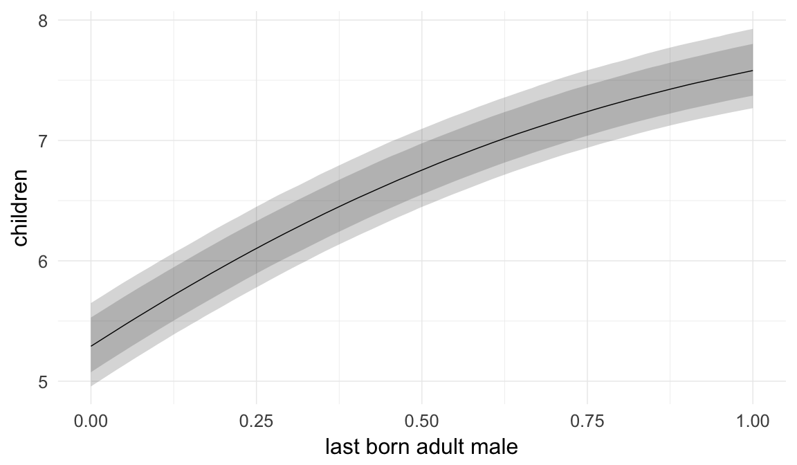
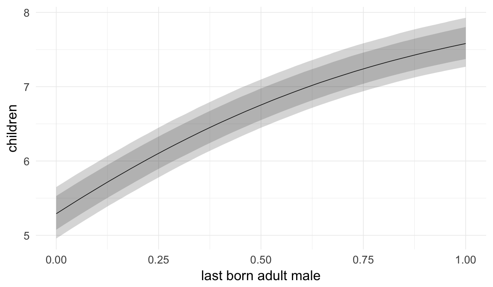
 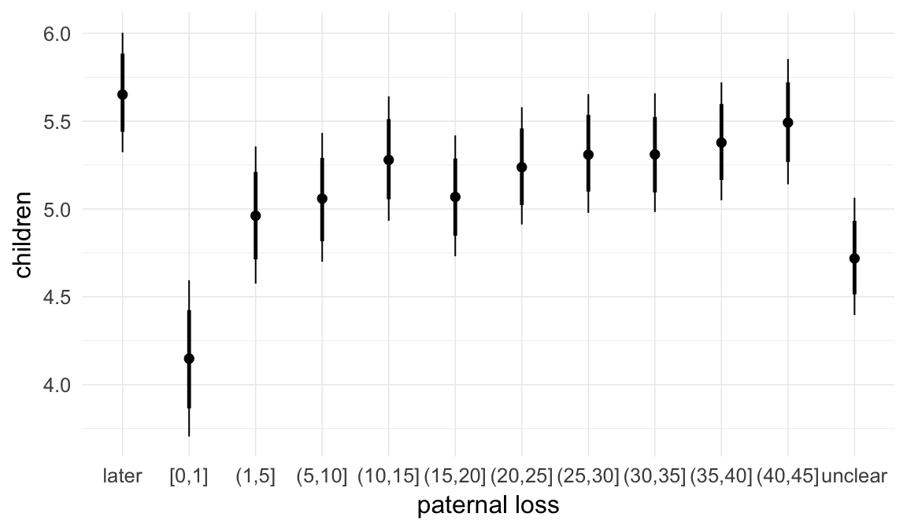
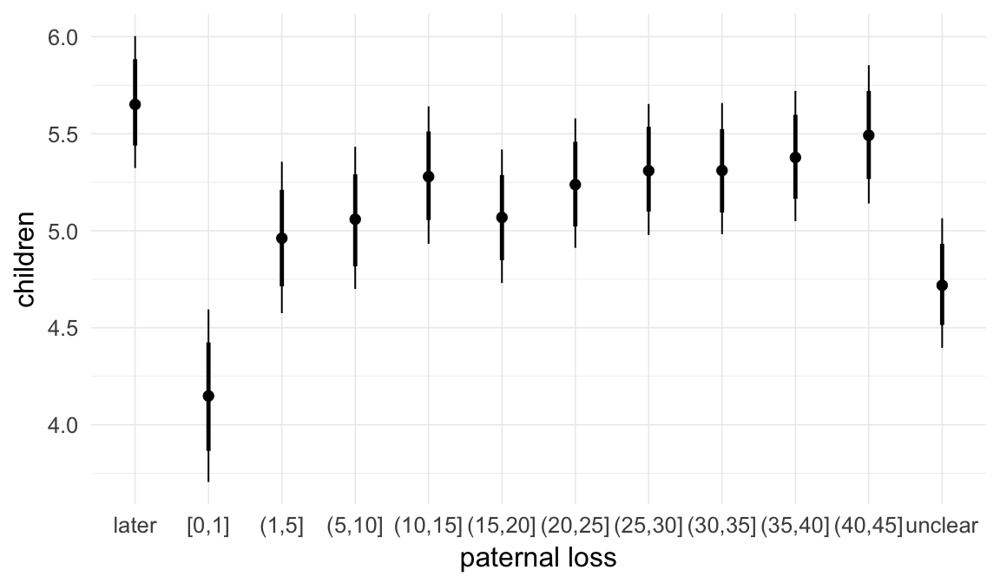

Coefficient plot
Coefficient estimates (95% and 80% credibility).
mcmc_intervals(as.matrix(model$fit), regex_pars = "b_[^I]")
mcmc_areas(as.matrix(model$fit), regex_pars = "b")Diagnostics
These plots were made to diagnose misfit and nonconvergence.
Posterior predictive checks
brms::pp_check(model, re_formula = NA, type = "dens_overlay")brms::pp_check(model, re_formula = NA, type = "hist")
Rhat
Did the 6 chains converge?
stanplot(model, pars = "^b_[^I]", type = 'rhat')
Effective sample size by average sample size
stanplot(model, pars = "^b", type = 'ess')
Monte Carlo SE
stanplot(model, pars = "^b", type = 'mcse')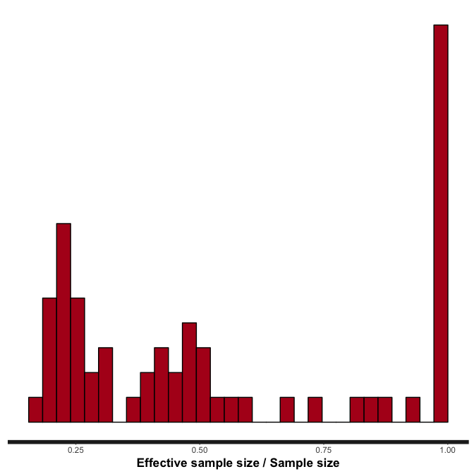
Trace plots
if(any( summary(model)$fixed[,"Rhat"] > 1.1)) { # only do traceplots if not converged
plot(model, N = 3, ask = FALSE)
}Further plots
stanplot(model, pars = "^b", type = 'diag')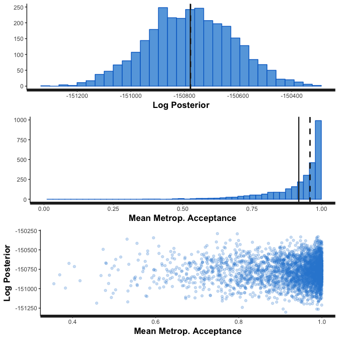
File name
coefs/rpqa/r7_less_parental_loss_control.rds
Cluster script
opts_chunk$set(echo = FALSE)
clusterscript = str_replace(basename(model_filename), "\\.rds",".html")
cat("[Cluster script](" , clusterscript, ")", sep = "")r8: Adjust for being first-/last-born adult son
Inheritance is linked to birth order and being male in several of the historical populations. Here, we adjust for the anchor being the first or last born adult son in a family. This implies that we control for our outcome to a certain extent, as “adult sons” cannot have died before adulthood, but a paternal age effect on mortality could still be detected for siblings other than the first- and last-born adults.
Model summary
Full summary
model_summary = summary(model, use_cache = FALSE, priors = TRUE)
print(model_summary)## Family: hurdle_poisson (log)
## Formula: children ~ paternalage + birth.cohort + first_born_adult_male + last_born_adult_male + male + maternalage.factor + paternalage.mean + paternal_loss + maternal_loss + older_siblings + nr.siblings + last_born + (1 | idParents)
## hu ~ paternalage + birth.cohort + first_born_adult_male + last_born_adult_male + male + maternalage.factor + paternalage.mean + paternal_loss + maternal_loss + older_siblings + nr.siblings + last_born + (1 | idParents)
## Data: model_data (Number of observations: 68724)
## Samples: 6 chains, each with iter = 800; warmup = 300; thin = 1;
## total post-warmup samples = 3000
## WAIC: Not computed
##
## Priors:
## b ~ normal(0,5)
## sd ~ student_t(3, 0, 5)
## b_hu ~ normal(0,5)
## sd_hu ~ student_t(3, 0, 10)
##
## Group-Level Effects:
## ~idParents (Number of levels: 12205)
## Estimate Est.Error l-95% CI u-95% CI Eff.Sample Rhat
## sd(Intercept) 0.27 0.00 0.27 0.28 1095 1
## sd(hu_Intercept) 0.71 0.01 0.68 0.74 1287 1
##
## Population-Level Effects:
## Estimate Est.Error l-95% CI u-95% CI Eff.Sample
## Intercept 2.12 0.03 2.07 2.18 1186
## paternalage 0.01 0.01 -0.01 0.03 1720
## birth.cohort1675M1680 0.02 0.02 -0.01 0.05 1662
## birth.cohort1680M1685 0.05 0.02 0.01 0.08 1404
## birth.cohort1685M1690 0.05 0.02 0.02 0.08 1268
## birth.cohort1690M1695 0.04 0.02 0.01 0.08 1038
## birth.cohort1695M1700 0.03 0.02 0.00 0.06 885
## birth.cohort1700M1705 0.02 0.02 -0.01 0.05 916
## birth.cohort1705M1710 0.00 0.02 -0.04 0.03 862
## birth.cohort1710M1715 -0.01 0.02 -0.05 0.02 901
## birth.cohort1715M1720 -0.04 0.02 -0.07 -0.01 926
## birth.cohort1720M1725 -0.05 0.02 -0.08 -0.01 913
## birth.cohort1725M1730 -0.07 0.02 -0.10 -0.04 890
## birth.cohort1730M1735 -0.05 0.02 -0.08 -0.02 816
## birth.cohort1735M1740 -0.06 0.02 -0.09 -0.03 855
## first_born_adult_male -0.02 0.01 -0.04 -0.01 3000
## last_born_adult_male 0.00 0.01 -0.02 0.01 3000
## male1 0.12 0.01 0.11 0.14 3000
## maternalage.factor1420 -0.01 0.01 -0.03 0.01 3000
## maternalage.factor3550 0.00 0.01 -0.01 0.02 3000
## paternalage.mean -0.03 0.01 -0.05 0.00 1680
## paternal_loss01 -0.04 0.02 -0.08 0.01 1606
## paternal_loss15 -0.02 0.02 -0.05 0.02 1496
## paternal_loss510 -0.01 0.01 -0.04 0.02 1435
## paternal_loss1015 -0.01 0.01 -0.04 0.01 1439
## paternal_loss1520 -0.02 0.01 -0.05 0.00 1397
## paternal_loss2025 -0.02 0.01 -0.05 0.00 1436
## paternal_loss2530 -0.01 0.01 -0.03 0.01 1722
## paternal_loss3035 -0.02 0.01 -0.04 0.00 1655
## paternal_loss3540 -0.02 0.01 -0.04 0.00 1807
## paternal_loss4045 0.00 0.01 -0.02 0.02 3000
## paternal_lossunclear -0.05 0.01 -0.08 -0.03 1321
## maternal_loss01 -0.05 0.02 -0.10 -0.01 3000
## maternal_loss15 -0.03 0.02 -0.06 0.00 2004
## maternal_loss510 0.01 0.01 -0.01 0.04 2004
## maternal_loss1015 -0.01 0.01 -0.03 0.02 1668
## maternal_loss1520 0.01 0.01 -0.02 0.03 1919
## maternal_loss2025 -0.02 0.01 -0.04 0.00 2265
## maternal_loss2530 -0.01 0.01 -0.03 0.01 2103
## maternal_loss3035 -0.01 0.01 -0.03 0.01 2102
## maternal_loss3540 0.00 0.01 -0.02 0.02 2537
## maternal_loss4045 0.00 0.01 -0.01 0.02 3000
## maternal_lossunclear -0.02 0.01 -0.05 0.00 1849
## older_siblings1 -0.03 0.01 -0.04 -0.01 3000
## older_siblings2 -0.03 0.01 -0.05 -0.01 3000
## older_siblings3 -0.04 0.01 -0.06 -0.02 2154
## older_siblings4 -0.03 0.01 -0.05 -0.01 1854
## older_siblings5P -0.05 0.01 -0.07 -0.02 1772
## nr.siblings 0.01 0.00 0.00 0.01 1804
## last_born1 0.00 0.01 -0.01 0.02 3000
## hu_Intercept -0.27 0.10 -0.46 -0.08 1080
## hu_paternalage 0.25 0.04 0.17 0.34 1255
## hu_birth.cohort1675M1680 -0.08 0.07 -0.22 0.07 1081
## hu_birth.cohort1680M1685 0.12 0.07 -0.03 0.25 1019
## hu_birth.cohort1685M1690 0.17 0.07 0.03 0.32 991
## hu_birth.cohort1690M1695 -0.04 0.07 -0.17 0.10 868
## hu_birth.cohort1695M1700 -0.05 0.07 -0.18 0.09 865
## hu_birth.cohort1700M1705 0.11 0.07 -0.02 0.24 822
## hu_birth.cohort1705M1710 0.02 0.06 -0.11 0.15 766
## hu_birth.cohort1710M1715 0.28 0.06 0.15 0.41 757
## hu_birth.cohort1715M1720 0.17 0.06 0.05 0.30 737
## hu_birth.cohort1720M1725 0.19 0.06 0.06 0.31 706
## hu_birth.cohort1725M1730 0.54 0.06 0.41 0.66 728
## hu_birth.cohort1730M1735 0.62 0.06 0.50 0.74 720
## hu_birth.cohort1735M1740 0.48 0.06 0.36 0.60 697
## hu_first_born_adult_male -2.02 0.03 -2.09 -1.96 3000
## hu_last_born_adult_male -1.85 0.03 -1.92 -1.79 3000
## hu_male1 1.39 0.02 1.34 1.43 3000
## hu_maternalage.factor1420 0.09 0.04 0.02 0.18 3000
## hu_maternalage.factor3550 0.11 0.03 0.05 0.18 3000
## hu_paternalage.mean -0.27 0.05 -0.36 -0.18 1315
## hu_paternal_loss01 0.69 0.08 0.53 0.85 3000
## hu_paternal_loss15 0.33 0.06 0.21 0.44 1729
## hu_paternal_loss510 0.29 0.05 0.19 0.40 1599
## hu_paternal_loss1015 0.16 0.05 0.07 0.25 1524
## hu_paternal_loss1520 0.25 0.05 0.16 0.34 1577
## hu_paternal_loss2025 0.16 0.04 0.08 0.25 1452
## hu_paternal_loss2530 0.15 0.04 0.07 0.24 1600
## hu_paternal_loss3035 0.12 0.04 0.04 0.20 1549
## hu_paternal_loss3540 0.09 0.04 0.01 0.16 1727
## hu_paternal_loss4045 0.08 0.04 -0.01 0.17 3000
## hu_paternal_lossunclear 0.36 0.04 0.27 0.44 1561
## hu_maternal_loss01 1.07 0.08 0.92 1.23 3000
## hu_maternal_loss15 0.46 0.05 0.35 0.56 3000
## hu_maternal_loss510 0.25 0.05 0.16 0.35 3000
## hu_maternal_loss1015 0.22 0.05 0.13 0.32 3000
## hu_maternal_loss1520 0.18 0.05 0.09 0.27 3000
## hu_maternal_loss2025 0.17 0.04 0.08 0.25 3000
## hu_maternal_loss2530 0.04 0.04 -0.04 0.12 3000
## hu_maternal_loss3035 0.08 0.04 0.01 0.15 3000
## hu_maternal_loss3540 0.06 0.03 -0.01 0.13 3000
## hu_maternal_loss4045 -0.05 0.04 -0.12 0.03 3000
## hu_maternal_lossunclear 0.21 0.04 0.12 0.29 2568
## hu_older_siblings1 -0.19 0.03 -0.25 -0.12 3000
## hu_older_siblings2 -0.36 0.04 -0.44 -0.29 1965
## hu_older_siblings3 -0.47 0.04 -0.56 -0.39 1695
## hu_older_siblings4 -0.57 0.05 -0.66 -0.47 1318
## hu_older_siblings5P -0.70 0.06 -0.81 -0.60 1221
## hu_nr.siblings 0.00 0.00 0.00 0.01 2224
## hu_last_born1 0.03 0.03 -0.04 0.09 3000
## Rhat
## Intercept 1.00
## paternalage 1.00
## birth.cohort1675M1680 1.00
## birth.cohort1680M1685 1.00
## birth.cohort1685M1690 1.00
## birth.cohort1690M1695 1.01
## birth.cohort1695M1700 1.01
## birth.cohort1700M1705 1.01
## birth.cohort1705M1710 1.01
## birth.cohort1710M1715 1.01
## birth.cohort1715M1720 1.01
## birth.cohort1720M1725 1.01
## birth.cohort1725M1730 1.01
## birth.cohort1730M1735 1.01
## birth.cohort1735M1740 1.01
## first_born_adult_male 1.00
## last_born_adult_male 1.00
## male1 1.00
## maternalage.factor1420 1.00
## maternalage.factor3550 1.00
## paternalage.mean 1.00
## paternal_loss01 1.00
## paternal_loss15 1.00
## paternal_loss510 1.00
## paternal_loss1015 1.00
## paternal_loss1520 1.00
## paternal_loss2025 1.00
## paternal_loss2530 1.00
## paternal_loss3035 1.00
## paternal_loss3540 1.00
## paternal_loss4045 1.00
## paternal_lossunclear 1.01
## maternal_loss01 1.00
## maternal_loss15 1.00
## maternal_loss510 1.00
## maternal_loss1015 1.00
## maternal_loss1520 1.00
## maternal_loss2025 1.00
## maternal_loss2530 1.00
## maternal_loss3035 1.00
## maternal_loss3540 1.00
## maternal_loss4045 1.00
## maternal_lossunclear 1.00
## older_siblings1 1.00
## older_siblings2 1.00
## older_siblings3 1.00
## older_siblings4 1.00
## older_siblings5P 1.00
## nr.siblings 1.00
## last_born1 1.00
## hu_Intercept 1.00
## hu_paternalage 1.00
## hu_birth.cohort1675M1680 1.00
## hu_birth.cohort1680M1685 1.00
## hu_birth.cohort1685M1690 1.00
## hu_birth.cohort1690M1695 1.00
## hu_birth.cohort1695M1700 1.00
## hu_birth.cohort1700M1705 1.00
## hu_birth.cohort1705M1710 1.01
## hu_birth.cohort1710M1715 1.00
## hu_birth.cohort1715M1720 1.01
## hu_birth.cohort1720M1725 1.00
## hu_birth.cohort1725M1730 1.00
## hu_birth.cohort1730M1735 1.00
## hu_birth.cohort1735M1740 1.00
## hu_first_born_adult_male 1.00
## hu_last_born_adult_male 1.00
## hu_male1 1.00
## hu_maternalage.factor1420 1.00
## hu_maternalage.factor3550 1.00
## hu_paternalage.mean 1.00
## hu_paternal_loss01 1.00
## hu_paternal_loss15 1.00
## hu_paternal_loss510 1.00
## hu_paternal_loss1015 1.00
## hu_paternal_loss1520 1.00
## hu_paternal_loss2025 1.00
## hu_paternal_loss2530 1.00
## hu_paternal_loss3035 1.00
## hu_paternal_loss3540 1.00
## hu_paternal_loss4045 1.00
## hu_paternal_lossunclear 1.00
## hu_maternal_loss01 1.00
## hu_maternal_loss15 1.00
## hu_maternal_loss510 1.00
## hu_maternal_loss1015 1.00
## hu_maternal_loss1520 1.00
## hu_maternal_loss2025 1.00
## hu_maternal_loss2530 1.00
## hu_maternal_loss3035 1.00
## hu_maternal_loss3540 1.00
## hu_maternal_loss4045 1.00
## hu_maternal_lossunclear 1.00
## hu_older_siblings1 1.00
## hu_older_siblings2 1.00
## hu_older_siblings3 1.00
## hu_older_siblings4 1.00
## hu_older_siblings5P 1.00
## hu_nr.siblings 1.00
## hu_last_born1 1.00
##
## Samples were drawn using sampling(NUTS). For each parameter, Eff.Sample
## is a crude measure of effective sample size, and Rhat is the potential
## scale reduction factor on split chains (at convergence, Rhat = 1).Table of fixed effects
fixed_eff = data.frame(model_summary$fixed, check.names = F)
fixed_eff$Est.Error = fixed_eff$Eff.Sample = fixed_eff$Rhat = NULL
fixed_eff$OR = exp(fixed_eff$Estimate)
fixed_eff$OR_low = exp(fixed_eff$`l-95% CI`)
fixed_eff$OR_high = exp(fixed_eff$`u-95% CI`)
pander::pander(fixed_eff)| Estimate | l-95% CI | u-95% CI | OR | OR_low | OR_high | |
|---|---|---|---|---|---|---|
| Intercept | 2.125 | 2.07 | 2.18 | 8.373 | 7.928 | 8.845 |
| paternalage | 0.01012 | -0.01208 | 0.03088 | 1.01 | 0.988 | 1.031 |
| birth.cohort1675M1680 | 0.01871 | -0.01156 | 0.04992 | 1.019 | 0.9885 | 1.051 |
| birth.cohort1680M1685 | 0.04587 | 0.01446 | 0.07718 | 1.047 | 1.015 | 1.08 |
| birth.cohort1685M1690 | 0.04798 | 0.01529 | 0.0817 | 1.049 | 1.015 | 1.085 |
| birth.cohort1690M1695 | 0.04495 | 0.0124 | 0.07753 | 1.046 | 1.012 | 1.081 |
| birth.cohort1695M1700 | 0.03211 | 0.001703 | 0.06329 | 1.033 | 1.002 | 1.065 |
| birth.cohort1700M1705 | 0.0181 | -0.01198 | 0.05033 | 1.018 | 0.9881 | 1.052 |
| birth.cohort1705M1710 | -0.004761 | -0.03537 | 0.02694 | 0.9953 | 0.9652 | 1.027 |
| birth.cohort1710M1715 | -0.01474 | -0.04654 | 0.01623 | 0.9854 | 0.9545 | 1.016 |
| birth.cohort1715M1720 | -0.04298 | -0.0727 | -0.0116 | 0.9579 | 0.9299 | 0.9885 |
| birth.cohort1720M1725 | -0.04524 | -0.07534 | -0.01467 | 0.9558 | 0.9274 | 0.9854 |
| birth.cohort1725M1730 | -0.06897 | -0.09935 | -0.03689 | 0.9334 | 0.9054 | 0.9638 |
| birth.cohort1730M1735 | -0.05172 | -0.08115 | -0.02113 | 0.9496 | 0.9221 | 0.9791 |
| birth.cohort1735M1740 | -0.06312 | -0.09342 | -0.03231 | 0.9388 | 0.9108 | 0.9682 |
| first_born_adult_male | -0.02453 | -0.03745 | -0.0109 | 0.9758 | 0.9632 | 0.9892 |
| last_born_adult_male | -0.003539 | -0.01731 | 0.01039 | 0.9965 | 0.9828 | 1.01 |
| male1 | 0.1239 | 0.1121 | 0.136 | 1.132 | 1.119 | 1.146 |
| maternalage.factor1420 | -0.008292 | -0.02753 | 0.01019 | 0.9917 | 0.9729 | 1.01 |
| maternalage.factor3550 | 0.001985 | -0.01389 | 0.01863 | 1.002 | 0.9862 | 1.019 |
| paternalage.mean | -0.02882 | -0.05236 | -0.004401 | 0.9716 | 0.949 | 0.9956 |
| paternal_loss01 | -0.03677 | -0.07911 | 0.0054 | 0.9639 | 0.9239 | 1.005 |
| paternal_loss15 | -0.01628 | -0.04986 | 0.01558 | 0.9839 | 0.9514 | 1.016 |
| paternal_loss510 | -0.008868 | -0.03766 | 0.01859 | 0.9912 | 0.963 | 1.019 |
| paternal_loss1015 | -0.01491 | -0.04147 | 0.009561 | 0.9852 | 0.9594 | 1.01 |
| paternal_loss1520 | -0.02346 | -0.04751 | 5.067e-05 | 0.9768 | 0.9536 | 1 |
| paternal_loss2025 | -0.02215 | -0.04508 | -0.0001326 | 0.9781 | 0.9559 | 0.9999 |
| paternal_loss2530 | -0.01209 | -0.03371 | 0.008611 | 0.988 | 0.9669 | 1.009 |
| paternal_loss3035 | -0.02277 | -0.04213 | -0.003143 | 0.9775 | 0.9587 | 0.9969 |
| paternal_loss3540 | -0.02183 | -0.04097 | -0.003274 | 0.9784 | 0.9599 | 0.9967 |
| paternal_loss4045 | -0.002871 | -0.022 | 0.01656 | 0.9971 | 0.9782 | 1.017 |
| paternal_lossunclear | -0.05308 | -0.07944 | -0.0276 | 0.9483 | 0.9236 | 0.9728 |
| maternal_loss01 | -0.05256 | -0.09703 | -0.007184 | 0.9488 | 0.9075 | 0.9928 |
| maternal_loss15 | -0.02798 | -0.05741 | 0.0007879 | 0.9724 | 0.9442 | 1.001 |
| maternal_loss510 | 0.01149 | -0.01415 | 0.03609 | 1.012 | 0.9859 | 1.037 |
| maternal_loss1015 | -0.008158 | -0.03275 | 0.01636 | 0.9919 | 0.9678 | 1.016 |
| maternal_loss1520 | 0.005472 | -0.01669 | 0.02901 | 1.005 | 0.9834 | 1.029 |
| maternal_loss2025 | -0.0198 | -0.04272 | 0.002853 | 0.9804 | 0.9582 | 1.003 |
| maternal_loss2530 | -0.01333 | -0.03424 | 0.007092 | 0.9868 | 0.9663 | 1.007 |
| maternal_loss3035 | -0.008659 | -0.02788 | 0.01002 | 0.9914 | 0.9725 | 1.01 |
| maternal_loss3540 | 4.723e-05 | -0.01698 | 0.01717 | 1 | 0.9832 | 1.017 |
| maternal_loss4045 | 0.00365 | -0.01314 | 0.02005 | 1.004 | 0.9869 | 1.02 |
| maternal_lossunclear | -0.01971 | -0.04594 | 0.004028 | 0.9805 | 0.9551 | 1.004 |
| older_siblings1 | -0.02507 | -0.04065 | -0.009248 | 0.9752 | 0.9602 | 0.9908 |
| older_siblings2 | -0.03125 | -0.0495 | -0.01329 | 0.9692 | 0.9517 | 0.9868 |
| older_siblings3 | -0.04045 | -0.06089 | -0.01962 | 0.9604 | 0.9409 | 0.9806 |
| older_siblings4 | -0.03003 | -0.05332 | -0.006778 | 0.9704 | 0.9481 | 0.9932 |
| older_siblings5P | -0.04667 | -0.07392 | -0.019 | 0.9544 | 0.9287 | 0.9812 |
| nr.siblings | 0.007184 | 0.004703 | 0.009621 | 1.007 | 1.005 | 1.01 |
| last_born1 | 0.001757 | -0.0127 | 0.01613 | 1.002 | 0.9874 | 1.016 |
| hu_Intercept | -0.2653 | -0.4557 | -0.07714 | 0.767 | 0.634 | 0.9258 |
| hu_paternalage | 0.2547 | 0.1677 | 0.3358 | 1.29 | 1.183 | 1.399 |
| hu_birth.cohort1675M1680 | -0.0779 | -0.2179 | 0.06598 | 0.9251 | 0.8042 | 1.068 |
| hu_birth.cohort1680M1685 | 0.1155 | -0.02784 | 0.254 | 1.122 | 0.9725 | 1.289 |
| hu_birth.cohort1685M1690 | 0.1738 | 0.02897 | 0.317 | 1.19 | 1.029 | 1.373 |
| hu_birth.cohort1690M1695 | -0.0377 | -0.1734 | 0.1003 | 0.963 | 0.8408 | 1.105 |
| hu_birth.cohort1695M1700 | -0.04726 | -0.1845 | 0.08765 | 0.9538 | 0.8315 | 1.092 |
| hu_birth.cohort1700M1705 | 0.1065 | -0.02152 | 0.2359 | 1.112 | 0.9787 | 1.266 |
| hu_birth.cohort1705M1710 | 0.02068 | -0.1051 | 0.1479 | 1.021 | 0.9002 | 1.159 |
| hu_birth.cohort1710M1715 | 0.2794 | 0.1538 | 0.4054 | 1.322 | 1.166 | 1.5 |
| hu_birth.cohort1715M1720 | 0.1748 | 0.05185 | 0.2984 | 1.191 | 1.053 | 1.348 |
| hu_birth.cohort1720M1725 | 0.1872 | 0.06376 | 0.3146 | 1.206 | 1.066 | 1.37 |
| hu_birth.cohort1725M1730 | 0.5383 | 0.4137 | 0.6623 | 1.713 | 1.512 | 1.939 |
| hu_birth.cohort1730M1735 | 0.6199 | 0.4998 | 0.7377 | 1.859 | 1.648 | 2.091 |
| hu_birth.cohort1735M1740 | 0.4809 | 0.3608 | 0.6004 | 1.618 | 1.435 | 1.823 |
| hu_first_born_adult_male | -2.024 | -2.087 | -1.96 | 0.1321 | 0.1241 | 0.1409 |
| hu_last_born_adult_male | -1.854 | -1.918 | -1.788 | 0.1566 | 0.1468 | 0.1674 |
| hu_male1 | 1.385 | 1.344 | 1.426 | 3.995 | 3.834 | 4.161 |
| hu_maternalage.factor1420 | 0.09489 | 0.01555 | 0.1761 | 1.1 | 1.016 | 1.193 |
| hu_maternalage.factor3550 | 0.1139 | 0.05149 | 0.1761 | 1.121 | 1.053 | 1.192 |
| hu_paternalage.mean | -0.2712 | -0.3599 | -0.1815 | 0.7625 | 0.6977 | 0.834 |
| hu_paternal_loss01 | 0.6913 | 0.5338 | 0.8486 | 1.996 | 1.705 | 2.336 |
| hu_paternal_loss15 | 0.3267 | 0.2057 | 0.442 | 1.386 | 1.228 | 1.556 |
| hu_paternal_loss510 | 0.2944 | 0.1941 | 0.4008 | 1.342 | 1.214 | 1.493 |
| hu_paternal_loss1015 | 0.1607 | 0.06732 | 0.2532 | 1.174 | 1.07 | 1.288 |
| hu_paternal_loss1520 | 0.2509 | 0.1634 | 0.3425 | 1.285 | 1.177 | 1.408 |
| hu_paternal_loss2025 | 0.163 | 0.08009 | 0.25 | 1.177 | 1.083 | 1.284 |
| hu_paternal_loss2530 | 0.1525 | 0.06909 | 0.2356 | 1.165 | 1.072 | 1.266 |
| hu_paternal_loss3035 | 0.1226 | 0.04358 | 0.2014 | 1.13 | 1.045 | 1.223 |
| hu_paternal_loss3540 | 0.08724 | 0.011 | 0.1643 | 1.091 | 1.011 | 1.179 |
| hu_paternal_loss4045 | 0.08046 | -0.005321 | 0.1654 | 1.084 | 0.9947 | 1.18 |
| hu_paternal_lossunclear | 0.3571 | 0.2739 | 0.4402 | 1.429 | 1.315 | 1.553 |
| hu_maternal_loss01 | 1.072 | 0.9176 | 1.226 | 2.92 | 2.503 | 3.408 |
| hu_maternal_loss15 | 0.4563 | 0.3512 | 0.5635 | 1.578 | 1.421 | 1.757 |
| hu_maternal_loss510 | 0.2539 | 0.1579 | 0.346 | 1.289 | 1.171 | 1.413 |
| hu_maternal_loss1015 | 0.2222 | 0.1324 | 0.3167 | 1.249 | 1.142 | 1.373 |
| hu_maternal_loss1520 | 0.1822 | 0.09444 | 0.2694 | 1.2 | 1.099 | 1.309 |
| hu_maternal_loss2025 | 0.1679 | 0.083 | 0.2512 | 1.183 | 1.087 | 1.286 |
| hu_maternal_loss2530 | 0.03748 | -0.04036 | 0.1161 | 1.038 | 0.9604 | 1.123 |
| hu_maternal_loss3035 | 0.07986 | 0.006013 | 0.1514 | 1.083 | 1.006 | 1.163 |
| hu_maternal_loss3540 | 0.05895 | -0.00661 | 0.1272 | 1.061 | 0.9934 | 1.136 |
| hu_maternal_loss4045 | -0.04572 | -0.1156 | 0.0254 | 0.9553 | 0.8908 | 1.026 |
| hu_maternal_lossunclear | 0.2065 | 0.124 | 0.2886 | 1.229 | 1.132 | 1.335 |
| hu_older_siblings1 | -0.1908 | -0.2541 | -0.123 | 0.8263 | 0.7756 | 0.8842 |
| hu_older_siblings2 | -0.3638 | -0.437 | -0.2916 | 0.695 | 0.646 | 0.7471 |
| hu_older_siblings3 | -0.4736 | -0.5551 | -0.3914 | 0.6228 | 0.574 | 0.6761 |
| hu_older_siblings4 | -0.5654 | -0.6563 | -0.4748 | 0.5681 | 0.5188 | 0.622 |
| hu_older_siblings5P | -0.7033 | -0.8106 | -0.596 | 0.4949 | 0.4446 | 0.551 |
| hu_nr.siblings | 0.00368 | -0.004901 | 0.01247 | 1.004 | 0.9951 | 1.013 |
| hu_last_born1 | 0.0263 | -0.03532 | 0.0879 | 1.027 | 0.9653 | 1.092 |
Paternal age effect
pander::pander(paternal_age_10y_effect(model))| effect | median_estimate | ci_95 | ci_80 |
|---|---|---|---|
| estimate father 25y | 4.91 | [4.71;5.12] | [4.78;5.04] |
| estimate father 35y | 4.49 | [4.25;4.74] | [4.33;4.65] |
| percentage change | -8.63 | [-12.34;-4.75] | [-10.95;-6.22] |
| OR/IRR | 1.01 | [0.99;1.03] | [1;1.02] |
| OR hurdle | 1.29 | [1.18;1.4] | [1.22;1.36] |
Marginal effect plots
plot.brmsMarginalEffects_shades(
x = marginal_effects(model, re_formula = NA, probs = c(0.025,0.975)),
y = marginal_effects(model, re_formula = NA, probs = c(0.1,0.9)),
ask = FALSE)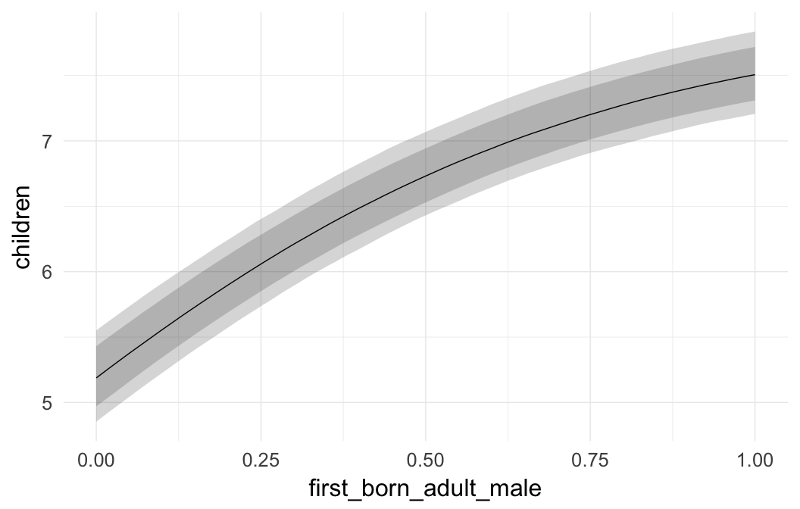
Coefficient plot
Coefficient estimates (95% and 80% credibility).
mcmc_intervals(as.matrix(model$fit), regex_pars = "b_[^I]")mcmc_areas(as.matrix(model$fit), regex_pars = "b")Diagnostics
These plots were made to diagnose misfit and nonconvergence.
Posterior predictive checks
brms::pp_check(model, re_formula = NA, type = "dens_overlay")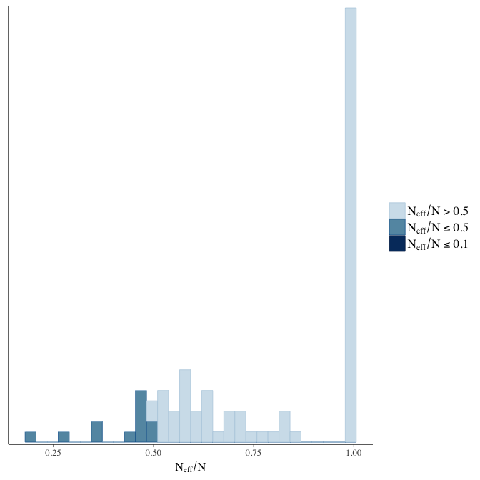
brms::pp_check(model, re_formula = NA, type = "hist")Rhat
Did the 6 chains converge?
stanplot(model, pars = "^b_[^I]", type = 'rhat')Effective sample size by average sample size
stanplot(model, pars = "^b", type = 'ess')Monte Carlo SE
stanplot(model, pars = "^b", type = 'mcse')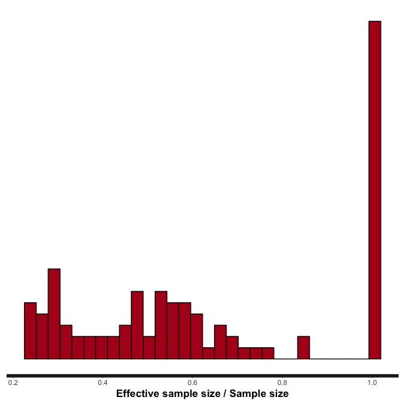
Trace plots
if(any( summary(model)$fixed[,"Rhat"] > 1.1)) { # only do traceplots if not converged
plot(model, N = 3, ask = FALSE)
}Further plots
stanplot(model, pars = "^b", type = 'diag')File name
coefs/rpqa/r8_adjust_for_first_born_adult.rds
Cluster script
opts_chunk$set(echo = FALSE)
clusterscript = str_replace(basename(model_filename), "\\.rds",".html")
cat("[Cluster script](" , clusterscript, ")", sep = "")r9: Continuous birth year adjustment
In our main model, we control for birth cohort in 5-year-bins (lumping small bins). We chose to do so, because nonlinear and even sharply spiking effects of birth cohort are plausible (due to e.g. epidemics). This decision may be disputed, as it summarises 5-year-bins. Here, we instead allow for a thin-splate spline on the continuous birth year variable. This allows for smooth nonlinear (but not spiking) birth cohort effects.
Model summary
Full summary
model_summary = summary(model, use_cache = FALSE, priors = TRUE)
print(model_summary)## Family: hurdle_poisson (log)
## Formula: children ~ paternalage + s(byear) + male + maternalage.factor + paternalage.mean + paternal_loss + maternal_loss + older_siblings + nr.siblings + last_born + (1 | idParents)
## hu ~ paternalage + s(byear) + male + maternalage.factor + paternalage.mean + paternal_loss + maternal_loss + older_siblings + nr.siblings + last_born + (1 | idParents)
## Data: model_data (Number of observations: 68724)
## Samples: 6 chains, each with iter = 800; warmup = 300; thin = 1;
## total post-warmup samples = 3000
## WAIC: Not computed
##
## Priors:
## b ~ normal(0,5)
## sd ~ student_t(3, 0, 5)
## sds ~ student_t(3, 0, 10)
## b_hu ~ normal(0,5)
## sd_hu ~ student_t(3, 0, 10)
## sds_hu ~ student_t(3, 0, 10)
##
## Spline Effects:
## Estimate Est.Error l-95% CI u-95% CI Eff.Sample Rhat
## sds(sbyear_1) 0.15 0.06 0.07 0.31 1513 1.00
## sds(hu_sbyear_1) 3.07 1.00 1.71 5.63 847 1.01
##
## Group-Level Effects:
## ~idParents (Number of levels: 12205)
## Estimate Est.Error l-95% CI u-95% CI Eff.Sample Rhat
## sd(Intercept) 0.27 0.00 0.27 0.28 1080 1
## sd(hu_Intercept) 0.63 0.01 0.60 0.66 1111 1
##
## Population-Level Effects:
## Estimate Est.Error l-95% CI u-95% CI Eff.Sample
## Intercept 2.09 0.02 2.05 2.14 1987
## paternalage 0.01 0.01 -0.01 0.03 1756
## male1 0.11 0.00 0.10 0.12 3000
## maternalage.factor1420 -0.01 0.01 -0.03 0.01 3000
## maternalage.factor3550 0.00 0.01 -0.01 0.02 3000
## paternalage.mean -0.03 0.01 -0.05 -0.01 1774
## paternal_loss01 -0.04 0.02 -0.08 0.00 2038
## paternal_loss15 -0.02 0.02 -0.05 0.01 1515
## paternal_loss510 -0.01 0.01 -0.04 0.02 1445
## paternal_loss1015 -0.02 0.01 -0.04 0.01 1378
## paternal_loss1520 -0.02 0.01 -0.05 0.00 1422
## paternal_loss2025 -0.02 0.01 -0.05 0.00 1439
## paternal_loss2530 -0.01 0.01 -0.03 0.01 1432
## paternal_loss3035 -0.02 0.01 -0.04 0.00 1484
## paternal_loss3540 -0.02 0.01 -0.04 0.00 1788
## paternal_loss4045 0.00 0.01 -0.02 0.02 2398
## paternal_lossunclear -0.05 0.01 -0.08 -0.03 1360
## maternal_loss01 -0.05 0.02 -0.10 -0.01 3000
## maternal_loss15 -0.03 0.02 -0.06 0.00 1929
## maternal_loss510 0.01 0.01 -0.01 0.04 1780
## maternal_loss1015 -0.01 0.01 -0.03 0.02 1586
## maternal_loss1520 0.01 0.01 -0.02 0.03 1913
## maternal_loss2025 -0.02 0.01 -0.04 0.00 1871
## maternal_loss2530 -0.01 0.01 -0.03 0.01 2069
## maternal_loss3035 -0.01 0.01 -0.03 0.01 2180
## maternal_loss3540 0.00 0.01 -0.02 0.02 2279
## maternal_loss4045 0.00 0.01 -0.01 0.02 3000
## maternal_lossunclear -0.02 0.01 -0.05 0.00 1622
## older_siblings1 -0.02 0.01 -0.04 -0.01 3000
## older_siblings2 -0.03 0.01 -0.04 -0.01 2495
## older_siblings3 -0.03 0.01 -0.05 -0.01 2201
## older_siblings4 -0.02 0.01 -0.05 0.00 2127
## older_siblings5P -0.04 0.01 -0.07 -0.01 2036
## nr.siblings 0.01 0.00 0.00 0.01 1704
## last_born1 0.00 0.01 -0.01 0.02 3000
## sbyear_1 0.05 0.03 0.00 0.11 2522
## hu_Intercept -0.41 0.07 -0.55 -0.26 2441
## hu_paternalage 0.13 0.04 0.05 0.21 1541
## hu_male1 0.44 0.02 0.40 0.47 3000
## hu_maternalage.factor1420 0.05 0.04 -0.02 0.13 3000
## hu_maternalage.factor3550 0.03 0.03 -0.03 0.08 3000
## hu_paternalage.mean -0.14 0.04 -0.23 -0.06 1625
## hu_paternal_loss01 0.57 0.07 0.43 0.71 3000
## hu_paternal_loss15 0.32 0.06 0.21 0.43 1930
## hu_paternal_loss510 0.29 0.05 0.19 0.38 1762
## hu_paternal_loss1015 0.17 0.04 0.09 0.26 1736
## hu_paternal_loss1520 0.28 0.04 0.20 0.37 1754
## hu_paternal_loss2025 0.17 0.04 0.10 0.25 1603
## hu_paternal_loss2530 0.18 0.04 0.10 0.25 1593
## hu_paternal_loss3035 0.14 0.04 0.07 0.22 1630
## hu_paternal_loss3540 0.11 0.04 0.03 0.18 1740
## hu_paternal_loss4045 0.07 0.04 -0.01 0.14 3000
## hu_paternal_lossunclear 0.37 0.04 0.29 0.45 1485
## hu_maternal_loss01 1.06 0.07 0.92 1.21 3000
## hu_maternal_loss15 0.40 0.05 0.30 0.50 3000
## hu_maternal_loss510 0.25 0.04 0.17 0.34 3000
## hu_maternal_loss1015 0.25 0.04 0.17 0.34 3000
## hu_maternal_loss1520 0.20 0.04 0.11 0.28 3000
## hu_maternal_loss2025 0.17 0.04 0.08 0.25 3000
## hu_maternal_loss2530 0.05 0.04 -0.03 0.13 3000
## hu_maternal_loss3035 0.09 0.04 0.02 0.16 3000
## hu_maternal_loss3540 0.08 0.03 0.02 0.14 3000
## hu_maternal_loss4045 -0.01 0.03 -0.08 0.05 3000
## hu_maternal_lossunclear 0.22 0.04 0.15 0.30 2591
## hu_older_siblings1 -0.06 0.03 -0.12 0.00 3000
## hu_older_siblings2 -0.11 0.03 -0.18 -0.04 2135
## hu_older_siblings3 -0.16 0.04 -0.24 -0.09 1924
## hu_older_siblings4 -0.18 0.04 -0.27 -0.10 1852
## hu_older_siblings5P -0.26 0.05 -0.36 -0.16 1597
## hu_nr.siblings 0.02 0.00 0.01 0.03 3000
## hu_last_born1 0.00 0.03 -0.06 0.06 3000
## hu_sbyear_1 -0.66 0.19 -1.03 -0.30 3000
## Rhat
## Intercept 1.01
## paternalage 1.00
## male1 1.00
## maternalage.factor1420 1.00
## maternalage.factor3550 1.00
## paternalage.mean 1.00
## paternal_loss01 1.00
## paternal_loss15 1.00
## paternal_loss510 1.00
## paternal_loss1015 1.00
## paternal_loss1520 1.00
## paternal_loss2025 1.00
## paternal_loss2530 1.00
## paternal_loss3035 1.00
## paternal_loss3540 1.00
## paternal_loss4045 1.00
## paternal_lossunclear 1.00
## maternal_loss01 1.00
## maternal_loss15 1.00
## maternal_loss510 1.01
## maternal_loss1015 1.00
## maternal_loss1520 1.00
## maternal_loss2025 1.00
## maternal_loss2530 1.00
## maternal_loss3035 1.00
## maternal_loss3540 1.00
## maternal_loss4045 1.00
## maternal_lossunclear 1.00
## older_siblings1 1.00
## older_siblings2 1.00
## older_siblings3 1.00
## older_siblings4 1.00
## older_siblings5P 1.00
## nr.siblings 1.00
## last_born1 1.00
## sbyear_1 1.00
## hu_Intercept 1.00
## hu_paternalage 1.00
## hu_male1 1.00
## hu_maternalage.factor1420 1.00
## hu_maternalage.factor3550 1.00
## hu_paternalage.mean 1.00
## hu_paternal_loss01 1.00
## hu_paternal_loss15 1.00
## hu_paternal_loss510 1.00
## hu_paternal_loss1015 1.00
## hu_paternal_loss1520 1.00
## hu_paternal_loss2025 1.00
## hu_paternal_loss2530 1.00
## hu_paternal_loss3035 1.00
## hu_paternal_loss3540 1.00
## hu_paternal_loss4045 1.00
## hu_paternal_lossunclear 1.00
## hu_maternal_loss01 1.00
## hu_maternal_loss15 1.00
## hu_maternal_loss510 1.00
## hu_maternal_loss1015 1.00
## hu_maternal_loss1520 1.00
## hu_maternal_loss2025 1.00
## hu_maternal_loss2530 1.00
## hu_maternal_loss3035 1.00
## hu_maternal_loss3540 1.00
## hu_maternal_loss4045 1.00
## hu_maternal_lossunclear 1.00
## hu_older_siblings1 1.00
## hu_older_siblings2 1.00
## hu_older_siblings3 1.00
## hu_older_siblings4 1.00
## hu_older_siblings5P 1.00
## hu_nr.siblings 1.00
## hu_last_born1 1.00
## hu_sbyear_1 1.00
##
## Samples were drawn using sampling(NUTS). For each parameter, Eff.Sample
## is a crude measure of effective sample size, and Rhat is the potential
## scale reduction factor on split chains (at convergence, Rhat = 1).Table of fixed effects
fixed_eff = data.frame(model_summary$fixed, check.names = F)
fixed_eff$Est.Error = fixed_eff$Eff.Sample = fixed_eff$Rhat = NULL
fixed_eff$OR = exp(fixed_eff$Estimate)
fixed_eff$OR_low = exp(fixed_eff$`l-95% CI`)
fixed_eff$OR_high = exp(fixed_eff$`u-95% CI`)
pander::pander(fixed_eff)| Estimate | l-95% CI | u-95% CI | OR | OR_low | OR_high | |
|---|---|---|---|---|---|---|
| Intercept | 2.094 | 2.051 | 2.141 | 8.12 | 7.775 | 8.506 |
| paternalage | 0.01178 | -0.009967 | 0.03306 | 1.012 | 0.9901 | 1.034 |
| male1 | 0.111 | 0.1029 | 0.119 | 1.117 | 1.108 | 1.126 |
| maternalage.factor1420 | -0.008512 | -0.02777 | 0.01043 | 0.9915 | 0.9726 | 1.01 |
| maternalage.factor3550 | 0.001622 | -0.01495 | 0.01766 | 1.002 | 0.9852 | 1.018 |
| paternalage.mean | -0.03071 | -0.05353 | -0.008187 | 0.9698 | 0.9479 | 0.9918 |
| paternal_loss01 | -0.03794 | -0.08045 | 0.004838 | 0.9628 | 0.9227 | 1.005 |
| paternal_loss15 | -0.01828 | -0.05122 | 0.01394 | 0.9819 | 0.9501 | 1.014 |
| paternal_loss510 | -0.01028 | -0.03896 | 0.01747 | 0.9898 | 0.9618 | 1.018 |
| paternal_loss1015 | -0.01632 | -0.04194 | 0.008206 | 0.9838 | 0.9589 | 1.008 |
| paternal_loss1520 | -0.02383 | -0.04861 | -0.0003299 | 0.9765 | 0.9526 | 0.9997 |
| paternal_loss2025 | -0.02316 | -0.0456 | -0.0009984 | 0.9771 | 0.9554 | 0.999 |
| paternal_loss2530 | -0.0123 | -0.03349 | 0.008832 | 0.9878 | 0.9671 | 1.009 |
| paternal_loss3035 | -0.02357 | -0.04354 | -0.004702 | 0.9767 | 0.9574 | 0.9953 |
| paternal_loss3540 | -0.02227 | -0.04139 | -0.003525 | 0.978 | 0.9595 | 0.9965 |
| paternal_loss4045 | -0.003445 | -0.02317 | 0.01524 | 0.9966 | 0.9771 | 1.015 |
| paternal_lossunclear | -0.05386 | -0.07954 | -0.02798 | 0.9476 | 0.9235 | 0.9724 |
| maternal_loss01 | -0.05264 | -0.1003 | -0.006417 | 0.9487 | 0.9045 | 0.9936 |
| maternal_loss15 | -0.02833 | -0.05822 | 0.001425 | 0.9721 | 0.9434 | 1.001 |
| maternal_loss510 | 0.01103 | -0.01467 | 0.03738 | 1.011 | 0.9854 | 1.038 |
| maternal_loss1015 | -0.008324 | -0.03253 | 0.01601 | 0.9917 | 0.968 | 1.016 |
| maternal_loss1520 | 0.006561 | -0.01724 | 0.0297 | 1.007 | 0.9829 | 1.03 |
| maternal_loss2025 | -0.01896 | -0.0412 | 0.00357 | 0.9812 | 0.9596 | 1.004 |
| maternal_loss2530 | -0.01291 | -0.03367 | 0.008814 | 0.9872 | 0.9669 | 1.009 |
| maternal_loss3035 | -0.008602 | -0.02715 | 0.0106 | 0.9914 | 0.9732 | 1.011 |
| maternal_loss3540 | 0.0008827 | -0.01622 | 0.01819 | 1.001 | 0.9839 | 1.018 |
| maternal_loss4045 | 0.00388 | -0.01307 | 0.02074 | 1.004 | 0.987 | 1.021 |
| maternal_lossunclear | -0.01998 | -0.04546 | 0.004946 | 0.9802 | 0.9556 | 1.005 |
| older_siblings1 | -0.02209 | -0.03805 | -0.006172 | 0.9782 | 0.9627 | 0.9938 |
| older_siblings2 | -0.02617 | -0.04358 | -0.008918 | 0.9742 | 0.9574 | 0.9911 |
| older_siblings3 | -0.03417 | -0.05394 | -0.01489 | 0.9664 | 0.9475 | 0.9852 |
| older_siblings4 | -0.02263 | -0.04542 | 0.0006093 | 0.9776 | 0.9556 | 1.001 |
| older_siblings5P | -0.03837 | -0.06563 | -0.01187 | 0.9624 | 0.9365 | 0.9882 |
| nr.siblings | 0.007348 | 0.004796 | 0.009867 | 1.007 | 1.005 | 1.01 |
| last_born1 | 0.001188 | -0.01401 | 0.01599 | 1.001 | 0.9861 | 1.016 |
| sbyear_1 | 0.05237 | 0.00158 | 0.1083 | 1.054 | 1.002 | 1.114 |
| hu_Intercept | -0.4065 | -0.5461 | -0.2638 | 0.666 | 0.5792 | 0.7681 |
| hu_paternalage | 0.1307 | 0.0528 | 0.2083 | 1.14 | 1.054 | 1.232 |
| hu_male1 | 0.4366 | 0.4048 | 0.4679 | 1.547 | 1.499 | 1.597 |
| hu_maternalage.factor1420 | 0.04918 | -0.02333 | 0.1263 | 1.05 | 0.9769 | 1.135 |
| hu_maternalage.factor3550 | 0.02625 | -0.03034 | 0.08454 | 1.027 | 0.9701 | 1.088 |
| hu_paternalage.mean | -0.1436 | -0.2272 | -0.06468 | 0.8662 | 0.7967 | 0.9374 |
| hu_paternal_loss01 | 0.5737 | 0.4282 | 0.7141 | 1.775 | 1.535 | 2.042 |
| hu_paternal_loss15 | 0.3164 | 0.2092 | 0.4266 | 1.372 | 1.233 | 1.532 |
| hu_paternal_loss510 | 0.2884 | 0.194 | 0.3848 | 1.334 | 1.214 | 1.469 |
| hu_paternal_loss1015 | 0.1723 | 0.08761 | 0.2586 | 1.188 | 1.092 | 1.295 |
| hu_paternal_loss1520 | 0.2807 | 0.1988 | 0.3666 | 1.324 | 1.22 | 1.443 |
| hu_paternal_loss2025 | 0.1743 | 0.09731 | 0.2526 | 1.19 | 1.102 | 1.287 |
| hu_paternal_loss2530 | 0.1752 | 0.1018 | 0.2503 | 1.191 | 1.107 | 1.284 |
| hu_paternal_loss3035 | 0.1429 | 0.07294 | 0.2163 | 1.154 | 1.076 | 1.242 |
| hu_paternal_loss3540 | 0.1057 | 0.03398 | 0.1795 | 1.111 | 1.035 | 1.197 |
| hu_paternal_loss4045 | 0.06695 | -0.01098 | 0.1426 | 1.069 | 0.9891 | 1.153 |
| hu_paternal_lossunclear | 0.3699 | 0.2928 | 0.4465 | 1.448 | 1.34 | 1.563 |
| hu_maternal_loss01 | 1.065 | 0.9196 | 1.207 | 2.9 | 2.508 | 3.344 |
| hu_maternal_loss15 | 0.3975 | 0.3001 | 0.4952 | 1.488 | 1.35 | 1.641 |
| hu_maternal_loss510 | 0.2542 | 0.1654 | 0.3439 | 1.289 | 1.18 | 1.41 |
| hu_maternal_loss1015 | 0.2544 | 0.1688 | 0.3391 | 1.29 | 1.184 | 1.404 |
| hu_maternal_loss1520 | 0.1968 | 0.1129 | 0.2766 | 1.218 | 1.119 | 1.319 |
| hu_maternal_loss2025 | 0.1658 | 0.08425 | 0.2471 | 1.18 | 1.088 | 1.28 |
| hu_maternal_loss2530 | 0.05001 | -0.02757 | 0.1263 | 1.051 | 0.9728 | 1.135 |
| hu_maternal_loss3035 | 0.0883 | 0.02009 | 0.157 | 1.092 | 1.02 | 1.17 |
| hu_maternal_loss3540 | 0.07997 | 0.01571 | 0.1424 | 1.083 | 1.016 | 1.153 |
| hu_maternal_loss4045 | -0.01255 | -0.08096 | 0.05427 | 0.9875 | 0.9222 | 1.056 |
| hu_maternal_lossunclear | 0.2215 | 0.1495 | 0.2978 | 1.248 | 1.161 | 1.347 |
| hu_older_siblings1 | -0.06019 | -0.1226 | 0.001817 | 0.9416 | 0.8846 | 1.002 |
| hu_older_siblings2 | -0.1072 | -0.1762 | -0.03942 | 0.8984 | 0.8384 | 0.9614 |
| hu_older_siblings3 | -0.1631 | -0.2408 | -0.08722 | 0.8495 | 0.786 | 0.9165 |
| hu_older_siblings4 | -0.1828 | -0.2685 | -0.09835 | 0.833 | 0.7646 | 0.9063 |
| hu_older_siblings5P | -0.2632 | -0.3644 | -0.1631 | 0.7686 | 0.6946 | 0.8495 |
| hu_nr.siblings | 0.01927 | 0.01155 | 0.02731 | 1.019 | 1.012 | 1.028 |
| hu_last_born1 | 0.0007907 | -0.06109 | 0.06295 | 1.001 | 0.9407 | 1.065 |
| hu_sbyear_1 | -0.6607 | -1.027 | -0.3005 | 0.5165 | 0.358 | 0.7404 |
Paternal age effect
pander::pander(paternal_age_10y_effect(model))| effect | median_estimate | ci_95 | ci_80 |
|---|---|---|---|
| estimate father 25y | 4.9 | [4.72;5.08] | [4.78;5.02] |
| estimate father 35y | 4.72 | [4.49;4.93] | [4.57;4.85] |
| percentage change | -3.86 | [-7.35;-0.26] | [-6.12;-1.55] |
| OR/IRR | 1.01 | [0.99;1.03] | [1;1.03] |
| OR hurdle | 1.14 | [1.05;1.23] | [1.09;1.2] |
Marginal effect plots
plot.brmsMarginalEffects_shades(
x = marginal_effects(model, re_formula = NA, probs = c(0.025,0.975)),
y = marginal_effects(model, re_formula = NA, probs = c(0.1,0.9)),
ask = FALSE) 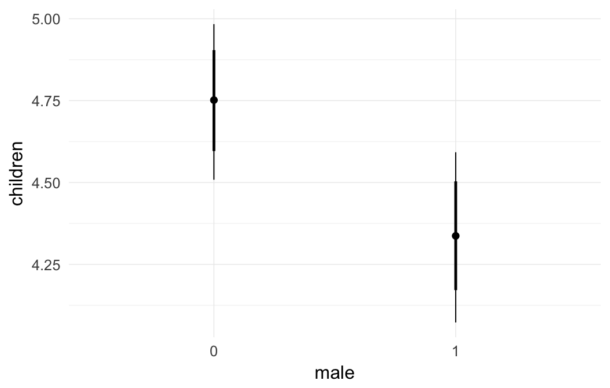
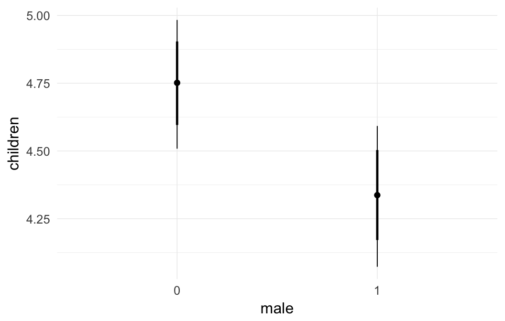
Coefficient plot
Coefficient estimates (95% and 80% credibility).
mcmc_intervals(as.matrix(model$fit), regex_pars = "b_[^I]")
mcmc_areas(as.matrix(model$fit), regex_pars = "b")Diagnostics
These plots were made to diagnose misfit and nonconvergence.
Posterior predictive checks
brms::pp_check(model, re_formula = NA, type = "dens_overlay")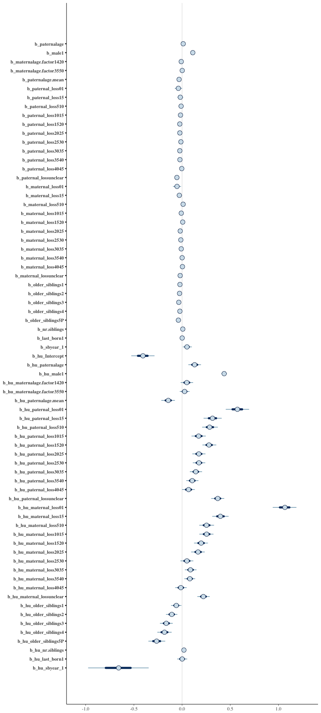
brms::pp_check(model, re_formula = NA, type = "hist")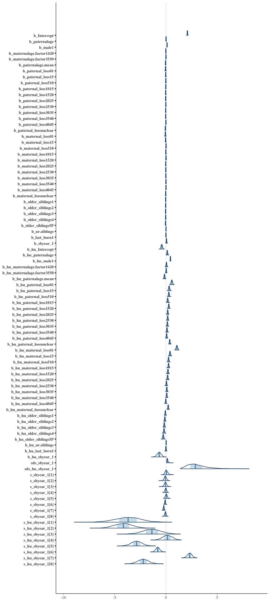
Rhat
Did the 6 chains converge?
stanplot(model, pars = "^b_[^I]", type = 'rhat')Effective sample size by average sample size
stanplot(model, pars = "^b", type = 'ess')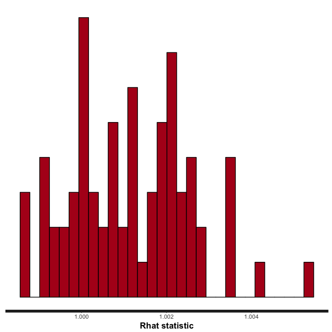
Monte Carlo SE
stanplot(model, pars = "^b", type = 'mcse')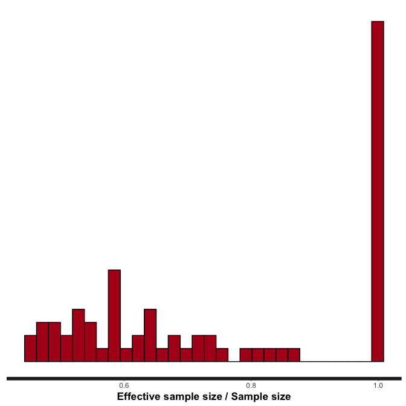
Trace plots
if(any( summary(model)$fixed[,"Rhat"] > 1.1)) { # only do traceplots if not converged
plot(model, N = 3, ask = FALSE)
}Further plots
stanplot(model, pars = "^b", type = 'diag')File name
coefs/rpqa/r9_continuous_byear_adjustment.rds
Cluster script
opts_chunk$set(echo = FALSE)
clusterscript = str_replace(basename(model_filename), "\\.rds",".html")
cat("[Cluster script](" , clusterscript, ")", sep = "")r10: Group-level slope added
Paternal age effects may vary between different families. Although we did not explore between-family moderators of paternal age effects in our study, we tested whether modelling an additional group-level slope for paternal age differences within the family, would change the results by allowing for shrinkage and to examine the amount of inter-family differences to be explained for potential future moderator analysis.
Model summary
Full summary
model_summary = summary(model, use_cache = FALSE, priors = TRUE)
print(model_summary)## Family: hurdle_poisson (log)
## Formula: children ~ paternalage + birth_cohort + male + maternalage.factor + paternalage.mean + paternal_loss + maternal_loss + older_siblings + nr.siblings + last_born + (1 + paternalage | idParents)
## hu ~ paternalage + birth_cohort + male + maternalage.factor + paternalage.mean + paternal_loss + maternal_loss + older_siblings + nr.siblings + last_born + (1 + paternalage | idParents)
## Data: model_data (Number of observations: 68724)
## Samples: 6 chains, each with iter = 3500; warmup = 1500; thin = 5;
## total post-warmup samples = 2400
## WAIC: Not computed
##
## Priors:
## b ~ normal(0,5)
## L ~ lkj_corr_cholesky(1)
## sd ~ student_t(3, 0, 5)
## b_hu ~ normal(0,5)
## sd_hu ~ student_t(3, 0, 10)
##
## Group-Level Effects:
## ~idParents (Number of levels: 12205)
## Estimate Est.Error l-95% CI u-95% CI
## sd(Intercept) 0.76 0.25 0.20 0.91
## sd(paternalage) 0.20 0.05 0.09 0.24
## sd(hu_Intercept) 0.81 0.25 0.01 1.18
## sd(hu_paternalage) 0.16 0.07 0.03 0.27
## cor(Intercept,paternalage) -0.89 0.15 -0.96 -0.60
## cor(hu_Intercept,hu_paternalage) -0.58 0.34 -0.87 0.60
## Eff.Sample Rhat
## sd(Intercept) 3 9.52
## sd(paternalage) 3 9.96
## sd(hu_Intercept) 21 1.36
## sd(hu_paternalage) 7 1.71
## cor(Intercept,paternalage) 3 3.88
## cor(hu_Intercept,hu_paternalage) 18 1.40
##
## Population-Level Effects:
## Estimate Est.Error l-95% CI u-95% CI Eff.Sample
## Intercept 2.11 0.03 2.05 2.17 9
## paternalage 0.00 0.01 -0.03 0.02 110
## birth_cohort1675M1680 0.02 0.02 -0.01 0.05 438
## birth_cohort1680M1685 0.05 0.02 0.02 0.08 384
## birth_cohort1685M1690 0.05 0.02 0.01 0.08 65
## birth_cohort1690M1695 0.05 0.02 0.01 0.08 146
## birth_cohort1695M1700 0.03 0.02 0.00 0.07 131
## birth_cohort1700M1705 0.02 0.02 -0.01 0.05 246
## birth_cohort1705M1710 -0.01 0.02 -0.04 0.03 162
## birth_cohort1710M1715 -0.01 0.02 -0.05 0.02 239
## birth_cohort1715M1720 -0.04 0.02 -0.07 -0.01 342
## birth_cohort1720M1725 -0.04 0.02 -0.07 -0.01 254
## birth_cohort1725M1730 -0.07 0.02 -0.10 -0.04 357
## birth_cohort1730M1735 -0.05 0.02 -0.08 -0.02 239
## birth_cohort1735M1740 -0.06 0.01 -0.09 -0.03 240
## male1 0.11 0.00 0.10 0.12 1299
## maternalage.factor1420 -0.01 0.01 -0.03 0.01 29
## maternalage.factor3550 0.00 0.01 -0.02 0.01 40
## paternalage.mean -0.02 0.01 -0.05 0.01 160
## paternal_loss01 -0.04 0.02 -0.08 0.00 104
## paternal_loss15 -0.02 0.02 -0.05 0.01 118
## paternal_loss510 -0.02 0.01 -0.04 0.01 106
## paternal_loss1015 -0.02 0.01 -0.05 0.01 136
## paternal_loss1520 -0.03 0.01 -0.05 0.00 92
## paternal_loss2025 -0.02 0.01 -0.05 0.00 174
## paternal_loss2530 -0.01 0.01 -0.03 0.01 116
## paternal_loss3035 -0.02 0.01 -0.04 0.00 33
## paternal_loss3540 -0.02 0.01 -0.04 0.00 8
## paternal_loss4045 0.00 0.01 -0.02 0.02 7
## paternal_lossunclear -0.05 0.01 -0.08 -0.03 138
## maternal_loss01 -0.05 0.03 -0.10 -0.01 10
## maternal_loss15 -0.02 0.02 -0.05 0.02 6
## maternal_loss510 0.01 0.01 -0.01 0.04 422
## maternal_loss1015 -0.01 0.01 -0.04 0.01 211
## maternal_loss1520 0.01 0.01 -0.02 0.03 1064
## maternal_loss2025 -0.02 0.01 -0.05 0.00 21
## maternal_loss2530 -0.01 0.01 -0.03 0.01 433
## maternal_loss3035 0.00 0.01 -0.03 0.01 13
## maternal_loss3540 0.00 0.01 -0.02 0.02 577
## maternal_loss4045 0.00 0.01 -0.02 0.02 734
## maternal_lossunclear -0.02 0.01 -0.05 0.00 382
## older_siblings1 -0.02 0.01 -0.03 0.00 477
## older_siblings2 -0.01 0.01 -0.03 0.01 14
## older_siblings3 -0.02 0.02 -0.05 0.01 5
## older_siblings4 0.00 0.01 -0.02 0.03 10
## older_siblings5P -0.01 0.02 -0.05 0.02 7
## nr.siblings 0.01 0.00 0.00 0.01 13
## last_born1 0.00 0.01 -0.02 0.01 967
## hu_Intercept -0.81 0.09 -0.99 -0.63 170
## hu_paternalage 0.15 0.04 0.07 0.22 58
## hu_birth_cohort1675M1680 0.08 0.07 -0.05 0.22 318
## hu_birth_cohort1680M1685 0.23 0.07 0.10 0.36 560
## hu_birth_cohort1685M1690 0.33 0.07 0.20 0.47 543
## hu_birth_cohort1690M1695 0.08 0.06 -0.05 0.22 474
## hu_birth_cohort1695M1700 0.10 0.06 -0.02 0.24 239
## hu_birth_cohort1700M1705 0.26 0.06 0.14 0.38 450
## hu_birth_cohort1705M1710 0.15 0.06 0.03 0.28 417
## hu_birth_cohort1710M1715 0.43 0.06 0.31 0.55 479
## hu_birth_cohort1715M1720 0.28 0.06 0.17 0.41 189
## hu_birth_cohort1720M1725 0.31 0.06 0.18 0.43 455
## hu_birth_cohort1725M1730 0.67 0.06 0.55 0.79 371
## hu_birth_cohort1730M1735 0.73 0.06 0.61 0.84 352
## hu_birth_cohort1735M1740 0.57 0.06 0.45 0.68 385
## hu_male1 0.44 0.02 0.40 0.47 27
## hu_maternalage.factor1420 0.06 0.04 -0.03 0.12 11
## hu_maternalage.factor3550 0.03 0.03 -0.03 0.08 575
## hu_paternalage.mean -0.16 0.04 -0.24 -0.08 71
## hu_paternal_loss01 0.57 0.07 0.43 0.70 1130
## hu_paternal_loss15 0.31 0.05 0.20 0.41 40
## hu_paternal_loss510 0.30 0.05 0.20 0.38 19
## hu_paternal_loss1015 0.17 0.04 0.09 0.26 654
## hu_paternal_loss1520 0.28 0.04 0.20 0.36 207
## hu_paternal_loss2025 0.18 0.04 0.10 0.25 15
## hu_paternal_loss2530 0.18 0.04 0.10 0.24 707
## hu_paternal_loss3035 0.15 0.04 0.08 0.21 11
## hu_paternal_loss3540 0.11 0.04 0.03 0.18 10
## hu_paternal_loss4045 0.07 0.04 -0.01 0.14 723
## hu_paternal_lossunclear 0.37 0.04 0.30 0.45 921
## hu_maternal_loss01 1.05 0.07 0.91 1.20 136
## hu_maternal_loss15 0.39 0.05 0.30 0.49 1272
## hu_maternal_loss510 0.26 0.04 0.17 0.33 51
## hu_maternal_loss1015 0.26 0.04 0.17 0.34 365
## hu_maternal_loss1520 0.21 0.04 0.12 0.27 13
## hu_maternal_loss2025 0.18 0.05 0.09 0.25 10
## hu_maternal_loss2530 0.06 0.04 -0.02 0.12 26
## hu_maternal_loss3035 0.09 0.03 0.02 0.15 878
## hu_maternal_loss3540 0.08 0.03 0.02 0.14 18
## hu_maternal_loss4045 0.00 0.04 -0.07 0.07 10
## hu_maternal_lossunclear 0.23 0.04 0.15 0.29 17
## hu_older_siblings1 -0.06 0.03 -0.12 0.00 472
## hu_older_siblings2 -0.11 0.03 -0.18 -0.04 333
## hu_older_siblings3 -0.17 0.04 -0.24 -0.09 522
## hu_older_siblings4 -0.19 0.04 -0.27 -0.11 131
## hu_older_siblings5P -0.29 0.05 -0.38 -0.18 46
## hu_nr.siblings 0.02 0.00 0.01 0.03 926
## hu_last_born1 0.00 0.03 -0.06 0.05 1170
## Rhat
## Intercept 1.22
## paternalage 1.05
## birth_cohort1675M1680 1.02
## birth_cohort1680M1685 1.01
## birth_cohort1685M1690 1.06
## birth_cohort1690M1695 1.04
## birth_cohort1695M1700 1.04
## birth_cohort1700M1705 1.02
## birth_cohort1705M1710 1.03
## birth_cohort1710M1715 1.03
## birth_cohort1715M1720 1.02
## birth_cohort1720M1725 1.03
## birth_cohort1725M1730 1.02
## birth_cohort1730M1735 1.03
## birth_cohort1735M1740 1.03
## male1 1.00
## maternalage.factor1420 1.06
## maternalage.factor3550 1.05
## paternalage.mean 1.03
## paternal_loss01 1.05
## paternal_loss15 1.04
## paternal_loss510 1.05
## paternal_loss1015 1.05
## paternal_loss1520 1.06
## paternal_loss2025 1.04
## paternal_loss2530 1.05
## paternal_loss3035 1.08
## paternal_loss3540 1.23
## paternal_loss4045 1.33
## paternal_lossunclear 1.05
## maternal_loss01 1.17
## maternal_loss15 1.34
## maternal_loss510 1.02
## maternal_loss1015 1.03
## maternal_loss1520 1.01
## maternal_loss2025 1.09
## maternal_loss2530 1.02
## maternal_loss3035 1.13
## maternal_loss3540 1.02
## maternal_loss4045 1.01
## maternal_lossunclear 1.03
## older_siblings1 1.02
## older_siblings2 1.12
## older_siblings3 1.60
## older_siblings4 1.18
## older_siblings5P 1.34
## nr.siblings 1.13
## last_born1 1.01
## hu_Intercept 1.05
## hu_paternalage 1.06
## hu_birth_cohort1675M1680 1.02
## hu_birth_cohort1680M1685 1.02
## hu_birth_cohort1685M1690 1.01
## hu_birth_cohort1690M1695 1.01
## hu_birth_cohort1695M1700 1.03
## hu_birth_cohort1700M1705 1.02
## hu_birth_cohort1705M1710 1.01
## hu_birth_cohort1710M1715 1.01
## hu_birth_cohort1715M1720 1.04
## hu_birth_cohort1720M1725 1.01
## hu_birth_cohort1725M1730 1.03
## hu_birth_cohort1730M1735 1.03
## hu_birth_cohort1735M1740 1.02
## hu_male1 1.07
## hu_maternalage.factor1420 1.19
## hu_maternalage.factor3550 1.01
## hu_paternalage.mean 1.06
## hu_paternal_loss01 1.01
## hu_paternal_loss15 1.06
## hu_paternal_loss510 1.09
## hu_paternal_loss1015 1.02
## hu_paternal_loss1520 1.03
## hu_paternal_loss2025 1.11
## hu_paternal_loss2530 1.00
## hu_paternal_loss3035 1.17
## hu_paternal_loss3540 1.21
## hu_paternal_loss4045 1.00
## hu_paternal_lossunclear 1.00
## hu_maternal_loss01 1.03
## hu_maternal_loss15 1.01
## hu_maternal_loss510 1.05
## hu_maternal_loss1015 1.02
## hu_maternal_loss1520 1.14
## hu_maternal_loss2025 1.19
## hu_maternal_loss2530 1.07
## hu_maternal_loss3035 1.01
## hu_maternal_loss3540 1.10
## hu_maternal_loss4045 1.17
## hu_maternal_lossunclear 1.10
## hu_older_siblings1 1.02
## hu_older_siblings2 1.03
## hu_older_siblings3 1.02
## hu_older_siblings4 1.04
## hu_older_siblings5P 1.07
## hu_nr.siblings 1.01
## hu_last_born1 1.00
##
## Samples were drawn using sampling(NUTS). For each parameter, Eff.Sample
## is a crude measure of effective sample size, and Rhat is the potential
## scale reduction factor on split chains (at convergence, Rhat = 1).Table of fixed effects
fixed_eff = data.frame(model_summary$fixed, check.names = F)
fixed_eff$Est.Error = fixed_eff$Eff.Sample = fixed_eff$Rhat = NULL
fixed_eff$OR = exp(fixed_eff$Estimate)
fixed_eff$OR_low = exp(fixed_eff$`l-95% CI`)
fixed_eff$OR_high = exp(fixed_eff$`u-95% CI`)
pander::pander(fixed_eff)| Estimate | l-95% CI | u-95% CI | OR | OR_low | OR_high | |
|---|---|---|---|---|---|---|
| Intercept | 2.112 | 2.046 | 2.168 | 8.264 | 7.738 | 8.741 |
| paternalage | -0.003329 | -0.02707 | 0.02399 | 0.9967 | 0.9733 | 1.024 |
| birth_cohort1675M1680 | 0.01982 | -0.01171 | 0.05051 | 1.02 | 0.9884 | 1.052 |
| birth_cohort1680M1685 | 0.05033 | 0.01744 | 0.08337 | 1.052 | 1.018 | 1.087 |
| birth_cohort1685M1690 | 0.05091 | 0.01367 | 0.08283 | 1.052 | 1.014 | 1.086 |
| birth_cohort1690M1695 | 0.04946 | 0.01266 | 0.08134 | 1.051 | 1.013 | 1.085 |
| birth_cohort1695M1700 | 0.03442 | -0.0007495 | 0.06563 | 1.035 | 0.9993 | 1.068 |
| birth_cohort1700M1705 | 0.02041 | -0.01285 | 0.05168 | 1.021 | 0.9872 | 1.053 |
| birth_cohort1705M1710 | -0.005043 | -0.03869 | 0.0256 | 0.995 | 0.9621 | 1.026 |
| birth_cohort1710M1715 | -0.01295 | -0.04501 | 0.01819 | 0.9871 | 0.956 | 1.018 |
| birth_cohort1715M1720 | -0.03891 | -0.07137 | -0.009107 | 0.9618 | 0.9311 | 0.9909 |
| birth_cohort1720M1725 | -0.03891 | -0.07165 | -0.00851 | 0.9618 | 0.9309 | 0.9915 |
| birth_cohort1725M1730 | -0.06695 | -0.09822 | -0.03587 | 0.9352 | 0.9065 | 0.9648 |
| birth_cohort1730M1735 | -0.04917 | -0.08169 | -0.01928 | 0.952 | 0.9216 | 0.9809 |
| birth_cohort1735M1740 | -0.06011 | -0.0935 | -0.03144 | 0.9417 | 0.9107 | 0.969 |
| male1 | 0.1128 | 0.1045 | 0.121 | 1.119 | 1.11 | 1.129 |
| maternalage.factor1420 | -0.00861 | -0.02692 | 0.01265 | 0.9914 | 0.9734 | 1.013 |
| maternalage.factor3550 | -0.003046 | -0.01996 | 0.01273 | 0.997 | 0.9802 | 1.013 |
| paternalage.mean | -0.01846 | -0.04562 | 0.007805 | 0.9817 | 0.9554 | 1.008 |
| paternal_loss01 | -0.0397 | -0.08039 | 0.003976 | 0.9611 | 0.9228 | 1.004 |
| paternal_loss15 | -0.02038 | -0.05393 | 0.01059 | 0.9798 | 0.9475 | 1.011 |
| paternal_loss510 | -0.01587 | -0.04308 | 0.01258 | 0.9843 | 0.9578 | 1.013 |
| paternal_loss1015 | -0.01937 | -0.04513 | 0.006194 | 0.9808 | 0.9559 | 1.006 |
| paternal_loss1520 | -0.02694 | -0.05145 | -0.002273 | 0.9734 | 0.9499 | 0.9977 |
| paternal_loss2025 | -0.02315 | -0.04601 | -0.001565 | 0.9771 | 0.955 | 0.9984 |
| paternal_loss2530 | -0.01092 | -0.03314 | 0.01094 | 0.9891 | 0.9674 | 1.011 |
| paternal_loss3035 | -0.01899 | -0.03909 | 0.002519 | 0.9812 | 0.9617 | 1.003 |
| paternal_loss3540 | -0.01742 | -0.03749 | 0.004714 | 0.9827 | 0.9632 | 1.005 |
| paternal_loss4045 | -0.0001274 | -0.0235 | 0.0226 | 0.9999 | 0.9768 | 1.023 |
| paternal_lossunclear | -0.05348 | -0.0788 | -0.02914 | 0.9479 | 0.9242 | 0.9713 |
| maternal_loss01 | -0.05162 | -0.1024 | -0.009807 | 0.9497 | 0.9027 | 0.9902 |
| maternal_loss15 | -0.01885 | -0.05415 | 0.01714 | 0.9813 | 0.9473 | 1.017 |
| maternal_loss510 | 0.01371 | -0.01315 | 0.04024 | 1.014 | 0.9869 | 1.041 |
| maternal_loss1015 | -0.01044 | -0.03636 | 0.01367 | 0.9896 | 0.9643 | 1.014 |
| maternal_loss1520 | 0.00736 | -0.01791 | 0.03136 | 1.007 | 0.9822 | 1.032 |
| maternal_loss2025 | -0.0195 | -0.04599 | 0.00382 | 0.9807 | 0.9551 | 1.004 |
| maternal_loss2530 | -0.01201 | -0.03483 | 0.008832 | 0.9881 | 0.9658 | 1.009 |
| maternal_loss3035 | -0.004954 | -0.02655 | 0.01329 | 0.9951 | 0.9738 | 1.013 |
| maternal_loss3540 | -0.000858 | -0.01858 | 0.01676 | 0.9991 | 0.9816 | 1.017 |
| maternal_loss4045 | 0.002012 | -0.01571 | 0.01847 | 1.002 | 0.9844 | 1.019 |
| maternal_lossunclear | -0.02309 | -0.04909 | 0.001424 | 0.9772 | 0.9521 | 1.001 |
| older_siblings1 | -0.0166 | -0.03214 | -0.001104 | 0.9835 | 0.9684 | 0.9989 |
| older_siblings2 | -0.01265 | -0.03005 | 0.006743 | 0.9874 | 0.9704 | 1.007 |
| older_siblings3 | -0.01937 | -0.05295 | 0.006387 | 0.9808 | 0.9484 | 1.006 |
| older_siblings4 | -0.0005483 | -0.02381 | 0.02523 | 0.9995 | 0.9765 | 1.026 |
| older_siblings5P | -0.01386 | -0.04592 | 0.02048 | 0.9862 | 0.9551 | 1.021 |
| nr.siblings | 0.006586 | 0.003632 | 0.008987 | 1.007 | 1.004 | 1.009 |
| last_born1 | -0.001641 | -0.01688 | 0.0138 | 0.9984 | 0.9833 | 1.014 |
| hu_Intercept | -0.81 | -0.989 | -0.629 | 0.4448 | 0.372 | 0.5331 |
| hu_paternalage | 0.1492 | 0.06906 | 0.222 | 1.161 | 1.071 | 1.249 |
| hu_birth_cohort1675M1680 | 0.08119 | -0.05437 | 0.2172 | 1.085 | 0.9471 | 1.243 |
| hu_birth_cohort1680M1685 | 0.2264 | 0.1036 | 0.365 | 1.254 | 1.109 | 1.44 |
| hu_birth_cohort1685M1690 | 0.334 | 0.202 | 0.4717 | 1.397 | 1.224 | 1.603 |
| hu_birth_cohort1690M1695 | 0.08042 | -0.04555 | 0.2165 | 1.084 | 0.9555 | 1.242 |
| hu_birth_cohort1695M1700 | 0.1048 | -0.02347 | 0.2352 | 1.111 | 0.9768 | 1.265 |
| hu_birth_cohort1700M1705 | 0.2573 | 0.1358 | 0.3801 | 1.293 | 1.145 | 1.462 |
| hu_birth_cohort1705M1710 | 0.1539 | 0.02755 | 0.2829 | 1.166 | 1.028 | 1.327 |
| hu_birth_cohort1710M1715 | 0.4277 | 0.3092 | 0.5537 | 1.534 | 1.362 | 1.74 |
| hu_birth_cohort1715M1720 | 0.2806 | 0.1664 | 0.4053 | 1.324 | 1.181 | 1.5 |
| hu_birth_cohort1720M1725 | 0.3093 | 0.1846 | 0.4339 | 1.363 | 1.203 | 1.543 |
| hu_birth_cohort1725M1730 | 0.6727 | 0.5526 | 0.7892 | 1.959 | 1.738 | 2.202 |
| hu_birth_cohort1730M1735 | 0.7296 | 0.6097 | 0.8416 | 2.074 | 1.84 | 2.32 |
| hu_birth_cohort1735M1740 | 0.5654 | 0.4466 | 0.6804 | 1.76 | 1.563 | 1.975 |
| hu_male1 | 0.4392 | 0.4038 | 0.4683 | 1.551 | 1.497 | 1.597 |
| hu_maternalage.factor1420 | 0.05553 | -0.02549 | 0.1197 | 1.057 | 0.9748 | 1.127 |
| hu_maternalage.factor3550 | 0.02511 | -0.02766 | 0.08055 | 1.025 | 0.9727 | 1.084 |
| hu_paternalage.mean | -0.1607 | -0.2363 | -0.07827 | 0.8516 | 0.7896 | 0.9247 |
| hu_paternal_loss01 | 0.5702 | 0.4341 | 0.701 | 1.769 | 1.544 | 2.016 |
| hu_paternal_loss15 | 0.3141 | 0.2039 | 0.4095 | 1.369 | 1.226 | 1.506 |
| hu_paternal_loss510 | 0.2961 | 0.1952 | 0.3776 | 1.345 | 1.216 | 1.459 |
| hu_paternal_loss1015 | 0.168 | 0.08611 | 0.2562 | 1.183 | 1.09 | 1.292 |
| hu_paternal_loss1520 | 0.2846 | 0.2023 | 0.3582 | 1.329 | 1.224 | 1.431 |
| hu_paternal_loss2025 | 0.182 | 0.1019 | 0.2488 | 1.2 | 1.107 | 1.282 |
| hu_paternal_loss2530 | 0.1762 | 0.09999 | 0.2433 | 1.193 | 1.105 | 1.275 |
| hu_paternal_loss3035 | 0.1493 | 0.07509 | 0.2084 | 1.161 | 1.078 | 1.232 |
| hu_paternal_loss3540 | 0.1125 | 0.03475 | 0.1813 | 1.119 | 1.035 | 1.199 |
| hu_paternal_loss4045 | 0.07105 | -0.00761 | 0.1435 | 1.074 | 0.9924 | 1.154 |
| hu_paternal_lossunclear | 0.3704 | 0.2996 | 0.4468 | 1.448 | 1.349 | 1.563 |
| hu_maternal_loss01 | 1.049 | 0.915 | 1.197 | 2.855 | 2.497 | 3.31 |
| hu_maternal_loss15 | 0.3908 | 0.2967 | 0.4897 | 1.478 | 1.345 | 1.632 |
| hu_maternal_loss510 | 0.2611 | 0.1748 | 0.3337 | 1.298 | 1.191 | 1.396 |
| hu_maternal_loss1015 | 0.258 | 0.1742 | 0.3413 | 1.294 | 1.19 | 1.407 |
| hu_maternal_loss1520 | 0.2052 | 0.1203 | 0.273 | 1.228 | 1.128 | 1.314 |
| hu_maternal_loss2025 | 0.177 | 0.0891 | 0.2519 | 1.194 | 1.093 | 1.286 |
| hu_maternal_loss2530 | 0.05614 | -0.02308 | 0.1238 | 1.058 | 0.9772 | 1.132 |
| hu_maternal_loss3035 | 0.08505 | 0.01674 | 0.1538 | 1.089 | 1.017 | 1.166 |
| hu_maternal_loss3540 | 0.08477 | 0.0201 | 0.1404 | 1.088 | 1.02 | 1.151 |
| hu_maternal_loss4045 | -0.001346 | -0.07439 | 0.06631 | 0.9987 | 0.9283 | 1.069 |
| hu_maternal_lossunclear | 0.2256 | 0.1472 | 0.293 | 1.253 | 1.159 | 1.34 |
| hu_older_siblings1 | -0.06348 | -0.1224 | -0.0004007 | 0.9385 | 0.8848 | 0.9996 |
| hu_older_siblings2 | -0.1136 | -0.1767 | -0.04114 | 0.8926 | 0.838 | 0.9597 |
| hu_older_siblings3 | -0.1722 | -0.2439 | -0.09464 | 0.8418 | 0.7836 | 0.9097 |
| hu_older_siblings4 | -0.1948 | -0.2731 | -0.1106 | 0.823 | 0.761 | 0.8953 |
| hu_older_siblings5P | -0.2867 | -0.3778 | -0.1837 | 0.7508 | 0.6854 | 0.8322 |
| hu_nr.siblings | 0.01961 | 0.01225 | 0.02712 | 1.02 | 1.012 | 1.027 |
| hu_last_born1 | -0.003542 | -0.06082 | 0.05055 | 0.9965 | 0.941 | 1.052 |
Paternal age effect
pander::pander(paternal_age_10y_effect(model))| effect | median_estimate | ci_95 | ci_80 |
|---|---|---|---|
| estimate father 25y | 5.68 | [5.38;6.05] | [5.46;5.97] |
| estimate father 35y | 5.41 | [5.07;5.7] | [5.18;5.66] |
| percentage change | -5.17 | [-7.98;-1.3] | [-6.77;-2.54] |
| OR/IRR | 0.99 | [0.97;1.02] | [0.98;1.01] |
| OR hurdle | 1.16 | [1.07;1.25] | [1.1;1.22] |
Marginal effect plots
plot.brmsMarginalEffects_shades(
x = marginal_effects(model, re_formula = NA, probs = c(0.025,0.975)),
y = marginal_effects(model, re_formula = NA, probs = c(0.1,0.9)),
ask = FALSE)
 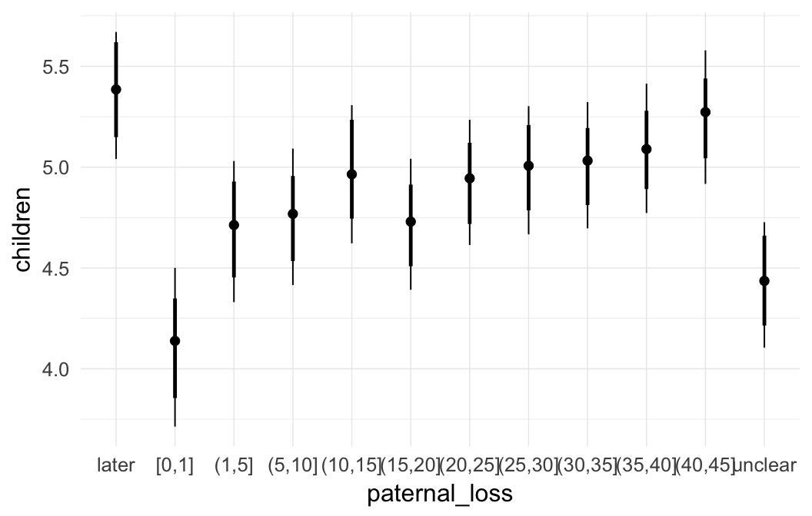
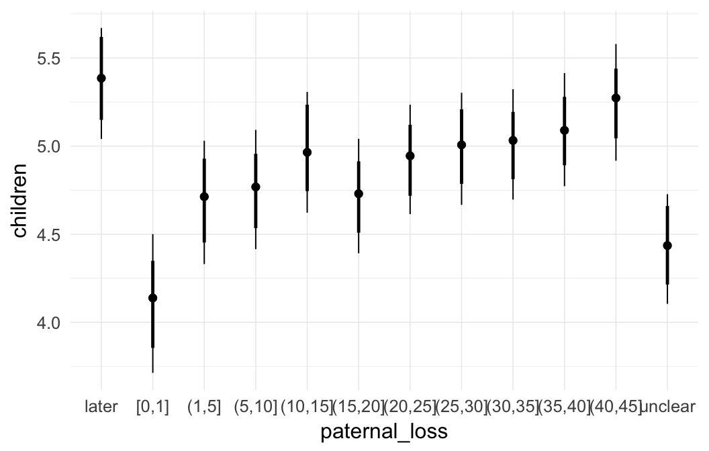
Coefficient plot
Coefficient estimates (95% and 80% credibility).
mcmc_intervals(as.matrix(model$fit), regex_pars = "b_[^I]")mcmc_areas(as.matrix(model$fit), regex_pars = "b")Diagnostics
These plots were made to diagnose misfit and nonconvergence.
Posterior predictive checks
brms::pp_check(model, re_formula = NA, type = "dens_overlay")brms::pp_check(model, re_formula = NA, type = "hist")Rhat
Did the 6 chains converge?
stanplot(model, pars = "^b_[^I]", type = 'rhat')Effective sample size by average sample size
stanplot(model, pars = "^b", type = 'ess')Monte Carlo SE
stanplot(model, pars = "^b", type = 'mcse')Trace plots
if(any( summary(model)$fixed[,"Rhat"] > 1.1)) { # only do traceplots if not converged
plot(model, N = 3, ask = FALSE)
}


Further plots
stanplot(model, pars = "^b", type = 'diag')
File name
coefs/rpqa/r10_add_random_slope.rds
Cluster script
opts_chunk$set(echo = FALSE)
clusterscript = str_replace(basename(model_filename), "\\.rds",".html")
cat("[Cluster script](" , clusterscript, ")", sep = "")r11: Separate group-level effects for each parent
Most anchors in our sample are full biological siblings and especially in the historical populations, divorce and remarriage was rare. Therefore, we chose to include only one group-level effect, for the parent couple (i.e. one group-level effect per father-mother-dyad). Including one intercept per parent is potentially a better way to adjust for genetic propensities inherited from either parent and allows estimating this propensity also from half-siblings, while half-sibling relationships were ignored in our main models. This comes at the cost of modelling complexity.
Model summary
Full summary
model_summary = summary(model, use_cache = FALSE, priors = TRUE)
print(model_summary)## Family: hurdle_poisson (log)
## Formula: children ~ paternalage + birth_cohort + male + maternalage.factor + paternalage.mean + paternal_loss + maternal_loss + older_siblings + nr.siblings + last_born + (1 | idMere) + (1 | idPere)
## hu ~ paternalage + birth_cohort + male + maternalage.factor + paternalage.mean + paternal_loss + maternal_loss + older_siblings + nr.siblings + last_born + (1 | idMere) + (1 | idPere)
## Data: model_data (Number of observations: 68724)
## Samples: 6 chains, each with iter = 10000; warmup = 4000; thin = 5;
## total post-warmup samples = 7200
## WAIC: Not computed
##
## Priors:
## b ~ normal(0,5)
## sd ~ student_t(3, 0, 5)
## b_hu ~ normal(0,5)
## sd_hu ~ student_t(3, 0, 10)
##
## Group-Level Effects:
## ~idMere (Number of levels: 11249)
## Estimate Est.Error l-95% CI u-95% CI Eff.Sample Rhat
## sd(Intercept) 0.20 0.01 0.18 0.21 2093 1
## sd(hu_Intercept) 0.46 0.04 0.37 0.54 888 1
##
## ~idPere (Number of levels: 11098)
## Estimate Est.Error l-95% CI u-95% CI Eff.Sample Rhat
## sd(Intercept) 0.19 0.01 0.17 0.21 2111 1
## sd(hu_Intercept) 0.43 0.04 0.34 0.51 901 1
##
## Population-Level Effects:
## Estimate Est.Error l-95% CI u-95% CI Eff.Sample
## Intercept 2.12 0.03 2.06 2.17 6703
## paternalage 0.01 0.01 -0.01 0.04 7200
## birth_cohort1675M1680 0.02 0.02 -0.01 0.05 6418
## birth_cohort1680M1685 0.05 0.02 0.02 0.08 6125
## birth_cohort1685M1690 0.05 0.02 0.02 0.08 6452
## birth_cohort1690M1695 0.05 0.02 0.02 0.08 5937
## birth_cohort1695M1700 0.03 0.02 0.00 0.07 5882
## birth_cohort1700M1705 0.02 0.02 -0.01 0.05 5709
## birth_cohort1705M1710 0.00 0.02 -0.03 0.03 5625
## birth_cohort1710M1715 -0.01 0.02 -0.04 0.02 5386
## birth_cohort1715M1720 -0.04 0.02 -0.07 -0.01 5665
## birth_cohort1720M1725 -0.04 0.02 -0.07 -0.01 5561
## birth_cohort1725M1730 -0.07 0.02 -0.10 -0.03 5815
## birth_cohort1730M1735 -0.05 0.02 -0.08 -0.02 5616
## birth_cohort1735M1740 -0.06 0.02 -0.09 -0.03 5551
## male1 0.11 0.00 0.10 0.12 7200
## maternalage.factor1420 -0.01 0.01 -0.03 0.01 7200
## maternalage.factor3550 0.00 0.01 -0.02 0.01 7200
## paternalage.mean -0.03 0.01 -0.06 -0.01 7184
## paternal_loss01 -0.04 0.02 -0.08 0.00 7024
## paternal_loss15 -0.02 0.02 -0.05 0.01 7118
## paternal_loss510 -0.01 0.01 -0.04 0.02 6718
## paternal_loss1015 -0.02 0.01 -0.04 0.01 6980
## paternal_loss1520 -0.02 0.01 -0.05 0.00 6857
## paternal_loss2025 -0.02 0.01 -0.04 0.00 6815
## paternal_loss2530 -0.01 0.01 -0.03 0.01 6498
## paternal_loss3035 -0.02 0.01 -0.04 0.00 7200
## paternal_loss3540 -0.02 0.01 -0.04 0.00 6972
## paternal_loss4045 0.00 0.01 -0.02 0.02 7200
## paternal_lossunclear -0.05 0.01 -0.08 -0.03 7023
## maternal_loss01 -0.05 0.02 -0.10 -0.01 7200
## maternal_loss15 -0.03 0.02 -0.06 0.00 6666
## maternal_loss510 0.01 0.01 -0.02 0.03 7200
## maternal_loss1015 -0.01 0.01 -0.04 0.01 6999
## maternal_loss1520 0.01 0.01 -0.02 0.03 7200
## maternal_loss2025 -0.02 0.01 -0.04 0.00 7041
## maternal_loss2530 -0.01 0.01 -0.03 0.01 7142
## maternal_loss3035 -0.01 0.01 -0.03 0.01 7200
## maternal_loss3540 0.00 0.01 -0.02 0.02 7200
## maternal_loss4045 0.00 0.01 -0.01 0.02 7200
## maternal_lossunclear -0.02 0.01 -0.05 0.00 7200
## older_siblings1 -0.02 0.01 -0.04 -0.01 7200
## older_siblings2 -0.03 0.01 -0.04 -0.01 7200
## older_siblings3 -0.04 0.01 -0.06 -0.02 7200
## older_siblings4 -0.02 0.01 -0.05 0.00 7037
## older_siblings5P -0.04 0.01 -0.07 -0.01 7200
## nr.siblings 0.01 0.00 0.01 0.01 7187
## last_born1 0.00 0.01 -0.01 0.02 7200
## hu_Intercept -0.79 0.09 -0.97 -0.61 6383
## hu_paternalage 0.13 0.04 0.05 0.21 7066
## hu_birth_cohort1675M1680 0.08 0.07 -0.06 0.21 6026
## hu_birth_cohort1680M1685 0.23 0.07 0.10 0.36 6145
## hu_birth_cohort1685M1690 0.33 0.07 0.20 0.47 6305
## hu_birth_cohort1690M1695 0.08 0.07 -0.05 0.21 5872
## hu_birth_cohort1695M1700 0.10 0.06 -0.03 0.22 5929
## hu_birth_cohort1700M1705 0.25 0.06 0.13 0.37 5885
## hu_birth_cohort1705M1710 0.15 0.06 0.03 0.27 5840
## hu_birth_cohort1710M1715 0.43 0.06 0.31 0.55 5765
## hu_birth_cohort1715M1720 0.28 0.06 0.16 0.40 5799
## hu_birth_cohort1720M1725 0.30 0.06 0.19 0.42 5814
## hu_birth_cohort1725M1730 0.66 0.06 0.55 0.78 5838
## hu_birth_cohort1730M1735 0.72 0.06 0.61 0.84 5747
## hu_birth_cohort1735M1740 0.56 0.06 0.45 0.68 5687
## hu_male1 0.44 0.02 0.40 0.47 7200
## hu_maternalage.factor1420 0.05 0.04 -0.03 0.12 7200
## hu_maternalage.factor3550 0.03 0.03 -0.02 0.09 7200
## hu_paternalage.mean -0.15 0.04 -0.23 -0.06 7200
## hu_paternal_loss01 0.56 0.07 0.42 0.70 6716
## hu_paternal_loss15 0.30 0.06 0.19 0.41 7200
## hu_paternal_loss510 0.29 0.05 0.19 0.38 6665
## hu_paternal_loss1015 0.17 0.05 0.08 0.26 6816
## hu_paternal_loss1520 0.28 0.04 0.20 0.36 6948
## hu_paternal_loss2025 0.17 0.04 0.10 0.25 6650
## hu_paternal_loss2530 0.18 0.04 0.10 0.25 6475
## hu_paternal_loss3035 0.14 0.04 0.06 0.21 6831
## hu_paternal_loss3540 0.10 0.04 0.03 0.18 7043
## hu_paternal_loss4045 0.07 0.04 -0.01 0.15 6929
## hu_paternal_lossunclear 0.37 0.04 0.29 0.45 6768
## hu_maternal_loss01 1.06 0.07 0.91 1.20 7200
## hu_maternal_loss15 0.39 0.05 0.29 0.48 7136
## hu_maternal_loss510 0.26 0.04 0.17 0.35 7200
## hu_maternal_loss1015 0.25 0.04 0.17 0.34 7200
## hu_maternal_loss1520 0.20 0.04 0.12 0.28 7200
## hu_maternal_loss2025 0.17 0.04 0.09 0.25 7200
## hu_maternal_loss2530 0.05 0.04 -0.02 0.13 7200
## hu_maternal_loss3035 0.09 0.04 0.02 0.16 7200
## hu_maternal_loss3540 0.08 0.03 0.01 0.14 7200
## hu_maternal_loss4045 -0.01 0.03 -0.08 0.05 7200
## hu_maternal_lossunclear 0.22 0.04 0.15 0.30 7164
## hu_older_siblings1 -0.06 0.03 -0.12 0.00 7200
## hu_older_siblings2 -0.11 0.03 -0.18 -0.04 7032
## hu_older_siblings3 -0.16 0.04 -0.24 -0.09 7042
## hu_older_siblings4 -0.18 0.04 -0.27 -0.09 6824
## hu_older_siblings5P -0.27 0.05 -0.37 -0.17 6916
## hu_nr.siblings 0.02 0.00 0.01 0.03 7110
## hu_last_born1 0.00 0.03 -0.06 0.06 7200
## Rhat
## Intercept 1
## paternalage 1
## birth_cohort1675M1680 1
## birth_cohort1680M1685 1
## birth_cohort1685M1690 1
## birth_cohort1690M1695 1
## birth_cohort1695M1700 1
## birth_cohort1700M1705 1
## birth_cohort1705M1710 1
## birth_cohort1710M1715 1
## birth_cohort1715M1720 1
## birth_cohort1720M1725 1
## birth_cohort1725M1730 1
## birth_cohort1730M1735 1
## birth_cohort1735M1740 1
## male1 1
## maternalage.factor1420 1
## maternalage.factor3550 1
## paternalage.mean 1
## paternal_loss01 1
## paternal_loss15 1
## paternal_loss510 1
## paternal_loss1015 1
## paternal_loss1520 1
## paternal_loss2025 1
## paternal_loss2530 1
## paternal_loss3035 1
## paternal_loss3540 1
## paternal_loss4045 1
## paternal_lossunclear 1
## maternal_loss01 1
## maternal_loss15 1
## maternal_loss510 1
## maternal_loss1015 1
## maternal_loss1520 1
## maternal_loss2025 1
## maternal_loss2530 1
## maternal_loss3035 1
## maternal_loss3540 1
## maternal_loss4045 1
## maternal_lossunclear 1
## older_siblings1 1
## older_siblings2 1
## older_siblings3 1
## older_siblings4 1
## older_siblings5P 1
## nr.siblings 1
## last_born1 1
## hu_Intercept 1
## hu_paternalage 1
## hu_birth_cohort1675M1680 1
## hu_birth_cohort1680M1685 1
## hu_birth_cohort1685M1690 1
## hu_birth_cohort1690M1695 1
## hu_birth_cohort1695M1700 1
## hu_birth_cohort1700M1705 1
## hu_birth_cohort1705M1710 1
## hu_birth_cohort1710M1715 1
## hu_birth_cohort1715M1720 1
## hu_birth_cohort1720M1725 1
## hu_birth_cohort1725M1730 1
## hu_birth_cohort1730M1735 1
## hu_birth_cohort1735M1740 1
## hu_male1 1
## hu_maternalage.factor1420 1
## hu_maternalage.factor3550 1
## hu_paternalage.mean 1
## hu_paternal_loss01 1
## hu_paternal_loss15 1
## hu_paternal_loss510 1
## hu_paternal_loss1015 1
## hu_paternal_loss1520 1
## hu_paternal_loss2025 1
## hu_paternal_loss2530 1
## hu_paternal_loss3035 1
## hu_paternal_loss3540 1
## hu_paternal_loss4045 1
## hu_paternal_lossunclear 1
## hu_maternal_loss01 1
## hu_maternal_loss15 1
## hu_maternal_loss510 1
## hu_maternal_loss1015 1
## hu_maternal_loss1520 1
## hu_maternal_loss2025 1
## hu_maternal_loss2530 1
## hu_maternal_loss3035 1
## hu_maternal_loss3540 1
## hu_maternal_loss4045 1
## hu_maternal_lossunclear 1
## hu_older_siblings1 1
## hu_older_siblings2 1
## hu_older_siblings3 1
## hu_older_siblings4 1
## hu_older_siblings5P 1
## hu_nr.siblings 1
## hu_last_born1 1
##
## Samples were drawn using sampling(NUTS). For each parameter, Eff.Sample
## is a crude measure of effective sample size, and Rhat is the potential
## scale reduction factor on split chains (at convergence, Rhat = 1).Table of fixed effects
fixed_eff = data.frame(model_summary$fixed, check.names = F)
fixed_eff$Est.Error = fixed_eff$Eff.Sample = fixed_eff$Rhat = NULL
fixed_eff$OR = exp(fixed_eff$Estimate)
fixed_eff$OR_low = exp(fixed_eff$`l-95% CI`)
fixed_eff$OR_high = exp(fixed_eff$`u-95% CI`)
pander::pander(fixed_eff)| Estimate | l-95% CI | u-95% CI | OR | OR_low | OR_high | |
|---|---|---|---|---|---|---|
| Intercept | 2.115 | 2.063 | 2.166 | 8.291 | 7.87 | 8.723 |
| paternalage | 0.01459 | -0.006306 | 0.03526 | 1.015 | 0.9937 | 1.036 |
| birth_cohort1675M1680 | 0.02024 | -0.01066 | 0.05134 | 1.02 | 0.9894 | 1.053 |
| birth_cohort1680M1685 | 0.04649 | 0.0151 | 0.07774 | 1.048 | 1.015 | 1.081 |
| birth_cohort1685M1690 | 0.04885 | 0.01614 | 0.08212 | 1.05 | 1.016 | 1.086 |
| birth_cohort1690M1695 | 0.04708 | 0.01554 | 0.07916 | 1.048 | 1.016 | 1.082 |
| birth_cohort1695M1700 | 0.0346 | 0.002836 | 0.06684 | 1.035 | 1.003 | 1.069 |
| birth_cohort1700M1705 | 0.02082 | -0.01142 | 0.0532 | 1.021 | 0.9886 | 1.055 |
| birth_cohort1705M1710 | -0.001654 | -0.03274 | 0.02956 | 0.9983 | 0.9678 | 1.03 |
| birth_cohort1710M1715 | -0.01184 | -0.04284 | 0.01985 | 0.9882 | 0.9581 | 1.02 |
| birth_cohort1715M1720 | -0.03965 | -0.07118 | -0.008442 | 0.9611 | 0.9313 | 0.9916 |
| birth_cohort1720M1725 | -0.04219 | -0.07253 | -0.01034 | 0.9587 | 0.93 | 0.9897 |
| birth_cohort1725M1730 | -0.06585 | -0.09675 | -0.03368 | 0.9363 | 0.9078 | 0.9669 |
| birth_cohort1730M1735 | -0.04943 | -0.08028 | -0.01828 | 0.9518 | 0.9229 | 0.9819 |
| birth_cohort1735M1740 | -0.06072 | -0.09091 | -0.0297 | 0.9411 | 0.9131 | 0.9707 |
| male1 | 0.1109 | 0.1027 | 0.1191 | 1.117 | 1.108 | 1.127 |
| maternalage.factor1420 | -0.007174 | -0.02586 | 0.01204 | 0.9929 | 0.9745 | 1.012 |
| maternalage.factor3550 | -0.001811 | -0.01753 | 0.01416 | 0.9982 | 0.9826 | 1.014 |
| paternalage.mean | -0.03338 | -0.05604 | -0.01096 | 0.9672 | 0.9455 | 0.9891 |
| paternal_loss01 | -0.04017 | -0.08116 | 0.001339 | 0.9606 | 0.922 | 1.001 |
| paternal_loss15 | -0.01752 | -0.04985 | 0.01469 | 0.9826 | 0.9514 | 1.015 |
| paternal_loss510 | -0.009416 | -0.03832 | 0.01841 | 0.9906 | 0.9624 | 1.019 |
| paternal_loss1015 | -0.01587 | -0.04174 | 0.01015 | 0.9843 | 0.9591 | 1.01 |
| paternal_loss1520 | -0.02426 | -0.04867 | 0.0003476 | 0.976 | 0.9525 | 1 |
| paternal_loss2025 | -0.02211 | -0.04436 | -8.497e-05 | 0.9781 | 0.9566 | 0.9999 |
| paternal_loss2530 | -0.01094 | -0.03151 | 0.009927 | 0.9891 | 0.969 | 1.01 |
| paternal_loss3035 | -0.02165 | -0.04181 | -0.00199 | 0.9786 | 0.9591 | 0.998 |
| paternal_loss3540 | -0.02134 | -0.03989 | -0.002986 | 0.9789 | 0.9609 | 0.997 |
| paternal_loss4045 | -0.002667 | -0.02295 | 0.01664 | 0.9973 | 0.9773 | 1.017 |
| paternal_lossunclear | -0.05135 | -0.07664 | -0.02568 | 0.9499 | 0.9262 | 0.9746 |
| maternal_loss01 | -0.0543 | -0.1005 | -0.009815 | 0.9471 | 0.9043 | 0.9902 |
| maternal_loss15 | -0.03108 | -0.06074 | -0.001699 | 0.9694 | 0.9411 | 0.9983 |
| maternal_loss510 | 0.008069 | -0.01801 | 0.03419 | 1.008 | 0.9822 | 1.035 |
| maternal_loss1015 | -0.01103 | -0.03605 | 0.01333 | 0.989 | 0.9646 | 1.013 |
| maternal_loss1520 | 0.005645 | -0.01824 | 0.02888 | 1.006 | 0.9819 | 1.029 |
| maternal_loss2025 | -0.02141 | -0.04394 | 0.001254 | 0.9788 | 0.957 | 1.001 |
| maternal_loss2530 | -0.01383 | -0.03418 | 0.00671 | 0.9863 | 0.9664 | 1.007 |
| maternal_loss3035 | -0.00886 | -0.02754 | 0.009319 | 0.9912 | 0.9728 | 1.009 |
| maternal_loss3540 | 0.0001636 | -0.01643 | 0.01667 | 1 | 0.9837 | 1.017 |
| maternal_loss4045 | 0.003063 | -0.01327 | 0.02004 | 1.003 | 0.9868 | 1.02 |
| maternal_lossunclear | -0.02169 | -0.04625 | 0.00343 | 0.9785 | 0.9548 | 1.003 |
| older_siblings1 | -0.0228 | -0.03821 | -0.007264 | 0.9775 | 0.9625 | 0.9928 |
| older_siblings2 | -0.02653 | -0.04378 | -0.009355 | 0.9738 | 0.9572 | 0.9907 |
| older_siblings3 | -0.0353 | -0.05529 | -0.01568 | 0.9653 | 0.9462 | 0.9844 |
| older_siblings4 | -0.02407 | -0.0456 | -0.001995 | 0.9762 | 0.9554 | 0.998 |
| older_siblings5P | -0.04005 | -0.06669 | -0.01318 | 0.9607 | 0.9355 | 0.9869 |
| nr.siblings | 0.00759 | 0.00518 | 0.01005 | 1.008 | 1.005 | 1.01 |
| last_born1 | 0.001124 | -0.0142 | 0.01614 | 1.001 | 0.9859 | 1.016 |
| hu_Intercept | -0.7909 | -0.9706 | -0.6135 | 0.4534 | 0.3789 | 0.5415 |
| hu_paternalage | 0.1311 | 0.05385 | 0.209 | 1.14 | 1.055 | 1.232 |
| hu_birth_cohort1675M1680 | 0.0764 | -0.05753 | 0.2112 | 1.079 | 0.9441 | 1.235 |
| hu_birth_cohort1680M1685 | 0.2301 | 0.09681 | 0.3644 | 1.259 | 1.102 | 1.44 |
| hu_birth_cohort1685M1690 | 0.3334 | 0.1979 | 0.4657 | 1.396 | 1.219 | 1.593 |
| hu_birth_cohort1690M1695 | 0.0798 | -0.05164 | 0.2114 | 1.083 | 0.9497 | 1.235 |
| hu_birth_cohort1695M1700 | 0.09587 | -0.02952 | 0.2213 | 1.101 | 0.9709 | 1.248 |
| hu_birth_cohort1700M1705 | 0.2498 | 0.1293 | 0.3722 | 1.284 | 1.138 | 1.451 |
| hu_birth_cohort1705M1710 | 0.15 | 0.02704 | 0.2744 | 1.162 | 1.027 | 1.316 |
| hu_birth_cohort1710M1715 | 0.4311 | 0.3091 | 0.5501 | 1.539 | 1.362 | 1.733 |
| hu_birth_cohort1715M1720 | 0.281 | 0.1598 | 0.4019 | 1.324 | 1.173 | 1.495 |
| hu_birth_cohort1720M1725 | 0.3024 | 0.1857 | 0.4212 | 1.353 | 1.204 | 1.524 |
| hu_birth_cohort1725M1730 | 0.6648 | 0.5472 | 0.7808 | 1.944 | 1.728 | 2.183 |
| hu_birth_cohort1730M1735 | 0.7234 | 0.6101 | 0.8387 | 2.061 | 1.841 | 2.313 |
| hu_birth_cohort1735M1740 | 0.5629 | 0.45 | 0.6782 | 1.756 | 1.568 | 1.97 |
| hu_male1 | 0.4358 | 0.4039 | 0.468 | 1.546 | 1.498 | 1.597 |
| hu_maternalage.factor1420 | 0.04728 | -0.02778 | 0.1211 | 1.048 | 0.9726 | 1.129 |
| hu_maternalage.factor3550 | 0.0329 | -0.02467 | 0.09146 | 1.033 | 0.9756 | 1.096 |
| hu_paternalage.mean | -0.1466 | -0.2292 | -0.06396 | 0.8636 | 0.7952 | 0.938 |
| hu_paternal_loss01 | 0.5623 | 0.4176 | 0.704 | 1.755 | 1.518 | 2.022 |
| hu_paternal_loss15 | 0.3017 | 0.1942 | 0.4087 | 1.352 | 1.214 | 1.505 |
| hu_paternal_loss510 | 0.2851 | 0.1887 | 0.3804 | 1.33 | 1.208 | 1.463 |
| hu_paternal_loss1015 | 0.169 | 0.08112 | 0.2552 | 1.184 | 1.085 | 1.291 |
| hu_paternal_loss1520 | 0.2795 | 0.1978 | 0.3628 | 1.323 | 1.219 | 1.437 |
| hu_paternal_loss2025 | 0.1742 | 0.09669 | 0.2541 | 1.19 | 1.102 | 1.289 |
| hu_paternal_loss2530 | 0.1751 | 0.09781 | 0.2498 | 1.191 | 1.103 | 1.284 |
| hu_paternal_loss3035 | 0.1384 | 0.0635 | 0.2128 | 1.148 | 1.066 | 1.237 |
| hu_paternal_loss3540 | 0.1027 | 0.02869 | 0.1761 | 1.108 | 1.029 | 1.193 |
| hu_paternal_loss4045 | 0.06871 | -0.01135 | 0.1474 | 1.071 | 0.9887 | 1.159 |
| hu_paternal_lossunclear | 0.3739 | 0.2939 | 0.4512 | 1.453 | 1.342 | 1.57 |
| hu_maternal_loss01 | 1.056 | 0.9121 | 1.202 | 2.876 | 2.489 | 3.326 |
| hu_maternal_loss15 | 0.3855 | 0.2857 | 0.4831 | 1.47 | 1.331 | 1.621 |
| hu_maternal_loss510 | 0.2586 | 0.1721 | 0.3457 | 1.295 | 1.188 | 1.413 |
| hu_maternal_loss1015 | 0.2543 | 0.1721 | 0.3404 | 1.29 | 1.188 | 1.405 |
| hu_maternal_loss1520 | 0.1959 | 0.1156 | 0.2774 | 1.216 | 1.123 | 1.32 |
| hu_maternal_loss2025 | 0.1666 | 0.08752 | 0.2485 | 1.181 | 1.091 | 1.282 |
| hu_maternal_loss2530 | 0.05192 | -0.02105 | 0.1281 | 1.053 | 0.9792 | 1.137 |
| hu_maternal_loss3035 | 0.08616 | 0.01689 | 0.1564 | 1.09 | 1.017 | 1.169 |
| hu_maternal_loss3540 | 0.0792 | 0.01418 | 0.1436 | 1.082 | 1.014 | 1.154 |
| hu_maternal_loss4045 | -0.01233 | -0.07896 | 0.05305 | 0.9877 | 0.9241 | 1.054 |
| hu_maternal_lossunclear | 0.2226 | 0.1468 | 0.2969 | 1.249 | 1.158 | 1.346 |
| hu_older_siblings1 | -0.06143 | -0.1221 | -0.0008602 | 0.9404 | 0.8851 | 0.9991 |
| hu_older_siblings2 | -0.1077 | -0.1763 | -0.04012 | 0.8979 | 0.8384 | 0.9607 |
| hu_older_siblings3 | -0.1642 | -0.2426 | -0.08647 | 0.8485 | 0.7846 | 0.9172 |
| hu_older_siblings4 | -0.1839 | -0.2711 | -0.09493 | 0.832 | 0.7625 | 0.9094 |
| hu_older_siblings5P | -0.2682 | -0.3707 | -0.1657 | 0.7648 | 0.6902 | 0.8473 |
| hu_nr.siblings | 0.01931 | 0.01143 | 0.02726 | 1.019 | 1.011 | 1.028 |
| hu_last_born1 | -0.001393 | -0.05897 | 0.05698 | 0.9986 | 0.9427 | 1.059 |
Paternal age effect
pander::pander(paternal_age_10y_effect(model))| effect | median_estimate | ci_95 | ci_80 |
|---|---|---|---|
| estimate father 25y | 5.67 | [5.38;5.95] | [5.48;5.85] |
| estimate father 35y | 5.52 | [5.19;5.85] | [5.3;5.73] |
| percentage change | -2.68 | [-5.95;0.52] | [-4.83;-0.54] |
| OR/IRR | 1.01 | [0.99;1.04] | [1;1.03] |
| OR hurdle | 1.14 | [1.06;1.23] | [1.08;1.2] |
Marginal effect plots
plot.brmsMarginalEffects_shades(
x = marginal_effects(model, re_formula = NA, probs = c(0.025,0.975)),
y = marginal_effects(model, re_formula = NA, probs = c(0.1,0.9)),
ask = FALSE) 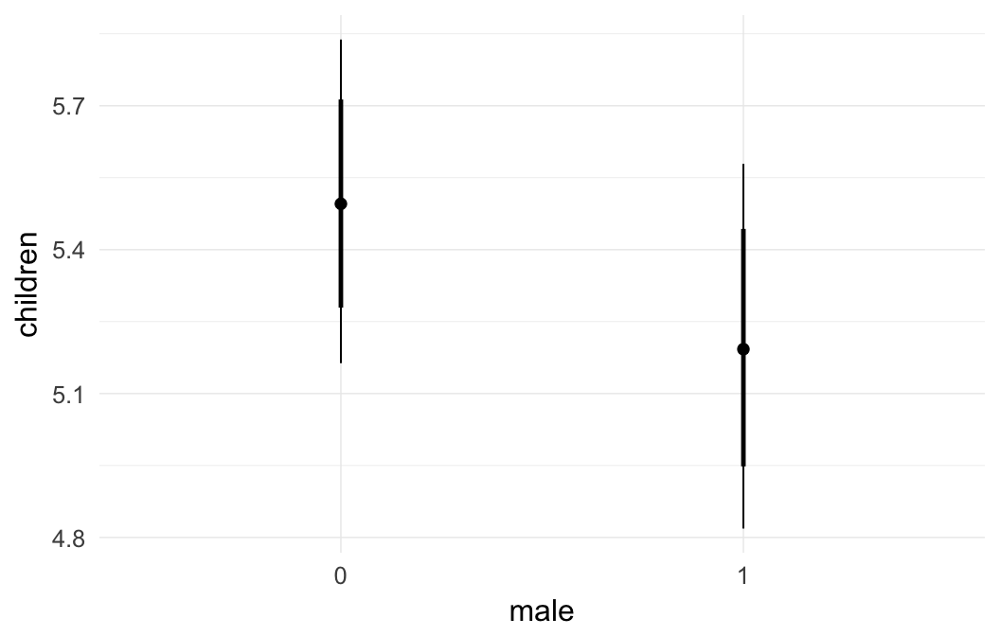
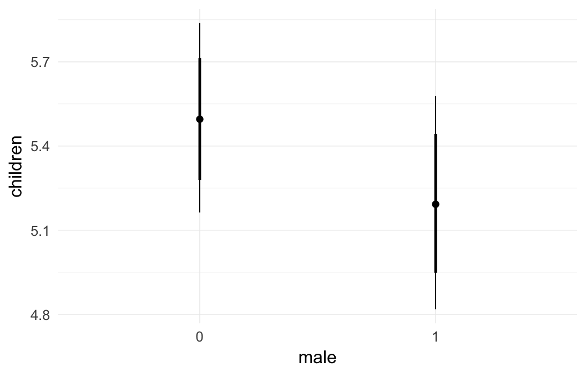
Coefficient plot
Coefficient estimates (95% and 80% credibility).
mcmc_intervals(as.matrix(model$fit), regex_pars = "b_[^I]")
mcmc_areas(as.matrix(model$fit), regex_pars = "b")Diagnostics
These plots were made to diagnose misfit and nonconvergence.
Posterior predictive checks
brms::pp_check(model, re_formula = NA, type = "dens_overlay")brms::pp_check(model, re_formula = NA, type = "hist")Rhat
Did the 6 chains converge?
stanplot(model, pars = "^b_[^I]", type = 'rhat')
Effective sample size by average sample size
stanplot(model, pars = "^b", type = 'ess')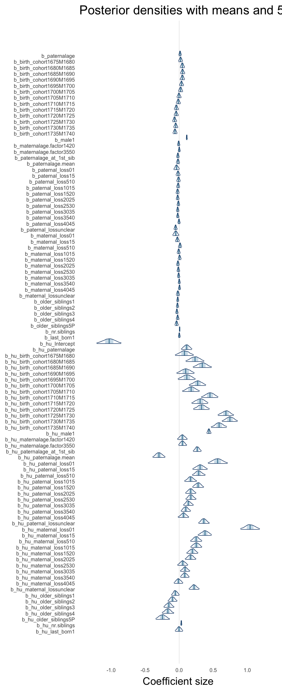
Monte Carlo SE
stanplot(model, pars = "^b", type = 'mcse')Trace plots
if(any( summary(model)$fixed[,"Rhat"] > 1.1)) { # only do traceplots if not converged
plot(model, N = 3, ask = FALSE)
}Further plots
stanplot(model, pars = "^b", type = 'diag')
File name
coefs/rpqa/r11_separate_random_effects_for_parents.rds
Cluster script
opts_chunk$set(echo = FALSE)
clusterscript = str_replace(basename(model_filename), "\\.rds",".html")
cat("[Cluster script](" , clusterscript, ")", sep = "")r12: Sex moderation
It need not be the case that paternal age has the same effect on male and female children. For example, male children inherit only the small Y chromosome from the father, but female children inherit the larger X chromosome, so that paternal age predicts X-chromosomal de novo mutations in females but not in males (Francioli et al., 2016). At the same time, the autism literature suggests that males are less robust to heritable and de novo autism risk variants and that these effects are not simply due to having only one X chromosome (Werling & Geschwind, 2015). Here we let a dummy variable for being male moderate the paternal age effect.
Model summary
Full summary
model_summary = summary(model, use_cache = FALSE, priors = TRUE)
print(model_summary)## Family: hurdle_poisson (log)
## Formula: children ~ paternalage * male + birth_cohort + maternalage.factor + paternalage.mean + paternal_loss + maternal_loss + older_siblings + nr.siblings + last_born + (1 | idParents)
## hu ~ paternalage + male + birth_cohort + maternalage.factor + paternalage.mean + paternal_loss + maternal_loss + older_siblings + nr.siblings + last_born + (1 | idParents) + paternalage:male
## Data: model_data (Number of observations: 68724)
## Samples: 6 chains, each with iter = 800; warmup = 300; thin = 1;
## total post-warmup samples = 3000
## WAIC: Not computed
##
## Priors:
## b ~ normal(0,5)
## sd ~ student_t(3, 0, 5)
## b_hu ~ normal(0,5)
## sd_hu ~ student_t(3, 0, 10)
##
## Group-Level Effects:
## ~idParents (Number of levels: 12205)
## Estimate Est.Error l-95% CI u-95% CI Eff.Sample Rhat
## sd(Intercept) 0.27 0.00 0.27 0.28 945 1.01
## sd(hu_Intercept) 0.63 0.01 0.60 0.66 1040 1.01
##
## Population-Level Effects:
## Estimate Est.Error l-95% CI u-95% CI Eff.Sample
## Intercept 2.12 0.03 2.07 2.18 967
## paternalage 0.01 0.01 -0.01 0.03 1526
## male1 0.09 0.02 0.06 0.13 3000
## birth_cohort1675M1680 0.02 0.02 -0.01 0.05 969
## birth_cohort1680M1685 0.05 0.02 0.02 0.08 701
## birth_cohort1685M1690 0.05 0.02 0.02 0.08 721
## birth_cohort1690M1695 0.05 0.02 0.01 0.08 610
## birth_cohort1695M1700 0.04 0.02 0.00 0.07 574
## birth_cohort1700M1705 0.02 0.02 -0.01 0.05 527
## birth_cohort1705M1710 0.00 0.02 -0.03 0.03 571
## birth_cohort1710M1715 -0.01 0.02 -0.04 0.02 532
## birth_cohort1715M1720 -0.04 0.02 -0.07 -0.01 566
## birth_cohort1720M1725 -0.04 0.02 -0.07 -0.01 521
## birth_cohort1725M1730 -0.07 0.02 -0.10 -0.03 523
## birth_cohort1730M1735 -0.05 0.02 -0.08 -0.02 476
## birth_cohort1735M1740 -0.06 0.02 -0.09 -0.03 487
## maternalage.factor1420 -0.01 0.01 -0.03 0.01 3000
## maternalage.factor3550 0.00 0.01 -0.01 0.02 2445
## paternalage.mean -0.03 0.01 -0.05 -0.01 1543
## paternal_loss01 -0.04 0.02 -0.08 0.00 1387
## paternal_loss15 -0.02 0.02 -0.05 0.02 1129
## paternal_loss510 -0.01 0.01 -0.04 0.02 1054
## paternal_loss1015 -0.02 0.01 -0.04 0.01 1053
## paternal_loss1520 -0.02 0.01 -0.05 0.00 1028
## paternal_loss2025 -0.02 0.01 -0.04 0.00 1131
## paternal_loss2530 -0.01 0.01 -0.03 0.01 1102
## paternal_loss3035 -0.02 0.01 -0.04 0.00 1278
## paternal_loss3540 -0.02 0.01 -0.04 0.00 1481
## paternal_loss4045 0.00 0.01 -0.02 0.02 3000
## paternal_lossunclear -0.05 0.01 -0.08 -0.03 1132
## maternal_loss01 -0.05 0.02 -0.10 -0.01 3000
## maternal_loss15 -0.03 0.02 -0.06 0.00 1417
## maternal_loss510 0.01 0.01 -0.01 0.04 1446
## maternal_loss1015 -0.01 0.01 -0.03 0.02 1414
## maternal_loss1520 0.01 0.01 -0.02 0.03 1560
## maternal_loss2025 -0.02 0.01 -0.04 0.00 1519
## maternal_loss2530 -0.01 0.01 -0.04 0.01 1514
## maternal_loss3035 -0.01 0.01 -0.03 0.01 1664
## maternal_loss3540 0.00 0.01 -0.02 0.02 1932
## maternal_loss4045 0.00 0.01 -0.01 0.02 3000
## maternal_lossunclear -0.02 0.01 -0.05 0.01 1224
## older_siblings1 -0.02 0.01 -0.04 -0.01 3000
## older_siblings2 -0.03 0.01 -0.04 -0.01 2288
## older_siblings3 -0.03 0.01 -0.05 -0.01 1820
## older_siblings4 -0.02 0.01 -0.04 0.00 1780
## older_siblings5P -0.04 0.01 -0.06 -0.01 1842
## nr.siblings 0.01 0.00 0.00 0.01 1441
## last_born1 0.00 0.01 -0.01 0.02 3000
## paternalage:male1 0.00 0.00 0.00 0.01 3000
## hu_Intercept -0.79 0.10 -0.98 -0.60 886
## hu_paternalage 0.13 0.04 0.05 0.21 1380
## hu_male1 0.42 0.07 0.28 0.55 2485
## hu_birth_cohort1675M1680 0.07 0.07 -0.06 0.21 810
## hu_birth_cohort1680M1685 0.23 0.07 0.09 0.37 782
## hu_birth_cohort1685M1690 0.33 0.07 0.20 0.47 739
## hu_birth_cohort1690M1695 0.08 0.07 -0.06 0.22 696
## hu_birth_cohort1695M1700 0.10 0.07 -0.03 0.23 647
## hu_birth_cohort1700M1705 0.25 0.06 0.13 0.38 521
## hu_birth_cohort1705M1710 0.15 0.07 0.03 0.28 576
## hu_birth_cohort1710M1715 0.43 0.06 0.31 0.56 544
## hu_birth_cohort1715M1720 0.28 0.06 0.16 0.41 569
## hu_birth_cohort1720M1725 0.30 0.06 0.19 0.43 556
## hu_birth_cohort1725M1730 0.66 0.06 0.55 0.79 489
## hu_birth_cohort1730M1735 0.72 0.06 0.61 0.84 513
## hu_birth_cohort1735M1740 0.56 0.06 0.45 0.68 468
## hu_maternalage.factor1420 0.05 0.04 -0.03 0.12 3000
## hu_maternalage.factor3550 0.03 0.03 -0.03 0.09 3000
## hu_paternalage.mean -0.14 0.04 -0.23 -0.06 1355
## hu_paternal_loss01 0.57 0.07 0.44 0.71 3000
## hu_paternal_loss15 0.31 0.06 0.21 0.42 1931
## hu_paternal_loss510 0.29 0.05 0.20 0.39 1552
## hu_paternal_loss1015 0.17 0.05 0.08 0.27 1520
## hu_paternal_loss1520 0.28 0.04 0.20 0.37 1374
## hu_paternal_loss2025 0.18 0.04 0.10 0.26 1502
## hu_paternal_loss2530 0.18 0.04 0.10 0.25 1339
## hu_paternal_loss3035 0.14 0.04 0.06 0.22 1391
## hu_paternal_loss3540 0.10 0.04 0.03 0.18 1598
## hu_paternal_loss4045 0.07 0.04 -0.01 0.15 3000
## hu_paternal_lossunclear 0.37 0.04 0.29 0.45 1385
## hu_maternal_loss01 1.06 0.07 0.92 1.20 3000
## hu_maternal_loss15 0.39 0.05 0.29 0.49 3000
## hu_maternal_loss510 0.26 0.04 0.17 0.35 3000
## hu_maternal_loss1015 0.26 0.04 0.17 0.34 3000
## hu_maternal_loss1520 0.20 0.04 0.12 0.28 3000
## hu_maternal_loss2025 0.17 0.04 0.09 0.25 3000
## hu_maternal_loss2530 0.05 0.04 -0.02 0.12 3000
## hu_maternal_loss3035 0.08 0.04 0.02 0.15 3000
## hu_maternal_loss3540 0.08 0.03 0.02 0.14 3000
## hu_maternal_loss4045 -0.01 0.03 -0.08 0.05 3000
## hu_maternal_lossunclear 0.22 0.04 0.14 0.30 2421
## hu_older_siblings1 -0.06 0.03 -0.12 0.00 3000
## hu_older_siblings2 -0.11 0.03 -0.17 -0.04 1887
## hu_older_siblings3 -0.17 0.04 -0.24 -0.09 1584
## hu_older_siblings4 -0.18 0.04 -0.27 -0.10 1337
## hu_older_siblings5P -0.27 0.05 -0.37 -0.17 1266
## hu_nr.siblings 0.02 0.00 0.01 0.03 1921
## hu_last_born1 0.00 0.03 -0.06 0.06 3000
## hu_paternalage:male1 0.00 0.02 -0.03 0.04 2525
## Rhat
## Intercept 1.00
## paternalage 1.00
## male1 1.00
## birth_cohort1675M1680 1.00
## birth_cohort1680M1685 1.00
## birth_cohort1685M1690 1.00
## birth_cohort1690M1695 1.00
## birth_cohort1695M1700 1.00
## birth_cohort1700M1705 1.00
## birth_cohort1705M1710 1.00
## birth_cohort1710M1715 1.01
## birth_cohort1715M1720 1.01
## birth_cohort1720M1725 1.01
## birth_cohort1725M1730 1.01
## birth_cohort1730M1735 1.01
## birth_cohort1735M1740 1.01
## maternalage.factor1420 1.00
## maternalage.factor3550 1.00
## paternalage.mean 1.00
## paternal_loss01 1.00
## paternal_loss15 1.00
## paternal_loss510 1.00
## paternal_loss1015 1.00
## paternal_loss1520 1.00
## paternal_loss2025 1.00
## paternal_loss2530 1.00
## paternal_loss3035 1.00
## paternal_loss3540 1.00
## paternal_loss4045 1.00
## paternal_lossunclear 1.00
## maternal_loss01 1.00
## maternal_loss15 1.00
## maternal_loss510 1.01
## maternal_loss1015 1.01
## maternal_loss1520 1.00
## maternal_loss2025 1.00
## maternal_loss2530 1.00
## maternal_loss3035 1.00
## maternal_loss3540 1.00
## maternal_loss4045 1.00
## maternal_lossunclear 1.01
## older_siblings1 1.00
## older_siblings2 1.00
## older_siblings3 1.00
## older_siblings4 1.00
## older_siblings5P 1.00
## nr.siblings 1.00
## last_born1 1.00
## paternalage:male1 1.00
## hu_Intercept 1.01
## hu_paternalage 1.01
## hu_male1 1.00
## hu_birth_cohort1675M1680 1.01
## hu_birth_cohort1680M1685 1.01
## hu_birth_cohort1685M1690 1.01
## hu_birth_cohort1690M1695 1.01
## hu_birth_cohort1695M1700 1.00
## hu_birth_cohort1700M1705 1.01
## hu_birth_cohort1705M1710 1.01
## hu_birth_cohort1710M1715 1.01
## hu_birth_cohort1715M1720 1.01
## hu_birth_cohort1720M1725 1.01
## hu_birth_cohort1725M1730 1.01
## hu_birth_cohort1730M1735 1.01
## hu_birth_cohort1735M1740 1.01
## hu_maternalage.factor1420 1.00
## hu_maternalage.factor3550 1.00
## hu_paternalage.mean 1.01
## hu_paternal_loss01 1.00
## hu_paternal_loss15 1.00
## hu_paternal_loss510 1.00
## hu_paternal_loss1015 1.00
## hu_paternal_loss1520 1.00
## hu_paternal_loss2025 1.00
## hu_paternal_loss2530 1.00
## hu_paternal_loss3035 1.00
## hu_paternal_loss3540 1.00
## hu_paternal_loss4045 1.00
## hu_paternal_lossunclear 1.00
## hu_maternal_loss01 1.00
## hu_maternal_loss15 1.00
## hu_maternal_loss510 1.00
## hu_maternal_loss1015 1.00
## hu_maternal_loss1520 1.00
## hu_maternal_loss2025 1.00
## hu_maternal_loss2530 1.00
## hu_maternal_loss3035 1.00
## hu_maternal_loss3540 1.00
## hu_maternal_loss4045 1.00
## hu_maternal_lossunclear 1.00
## hu_older_siblings1 1.00
## hu_older_siblings2 1.00
## hu_older_siblings3 1.00
## hu_older_siblings4 1.01
## hu_older_siblings5P 1.01
## hu_nr.siblings 1.00
## hu_last_born1 1.00
## hu_paternalage:male1 1.00
##
## Samples were drawn using sampling(NUTS). For each parameter, Eff.Sample
## is a crude measure of effective sample size, and Rhat is the potential
## scale reduction factor on split chains (at convergence, Rhat = 1).Table of fixed effects
fixed_eff = data.frame(model_summary$fixed, check.names = F)
fixed_eff$Est.Error = fixed_eff$Eff.Sample = fixed_eff$Rhat = NULL
fixed_eff$OR = exp(fixed_eff$Estimate)
fixed_eff$OR_low = exp(fixed_eff$`l-95% CI`)
fixed_eff$OR_high = exp(fixed_eff$`u-95% CI`)
pander::pander(fixed_eff)| Estimate | l-95% CI | u-95% CI | OR | OR_low | OR_high | |
|---|---|---|---|---|---|---|
| Intercept | 2.123 | 2.067 | 2.18 | 8.358 | 7.902 | 8.842 |
| paternalage | 0.008596 | -0.01308 | 0.03091 | 1.009 | 0.987 | 1.031 |
| male1 | 0.09346 | 0.05889 | 0.1279 | 1.098 | 1.061 | 1.136 |
| birth_cohort1675M1680 | 0.0213 | -0.01031 | 0.05299 | 1.022 | 0.9897 | 1.054 |
| birth_cohort1680M1685 | 0.04777 | 0.01531 | 0.07889 | 1.049 | 1.015 | 1.082 |
| birth_cohort1685M1690 | 0.05112 | 0.01754 | 0.08433 | 1.052 | 1.018 | 1.088 |
| birth_cohort1690M1695 | 0.04779 | 0.01466 | 0.0806 | 1.049 | 1.015 | 1.084 |
| birth_cohort1695M1700 | 0.03538 | 0.003165 | 0.0677 | 1.036 | 1.003 | 1.07 |
| birth_cohort1700M1705 | 0.02137 | -0.0101 | 0.0525 | 1.022 | 0.99 | 1.054 |
| birth_cohort1705M1710 | -0.001822 | -0.03369 | 0.02959 | 0.9982 | 0.9669 | 1.03 |
| birth_cohort1710M1715 | -0.0115 | -0.04395 | 0.02024 | 0.9886 | 0.957 | 1.02 |
| birth_cohort1715M1720 | -0.03994 | -0.07158 | -0.007176 | 0.9608 | 0.9309 | 0.9928 |
| birth_cohort1720M1725 | -0.04188 | -0.07292 | -0.01131 | 0.959 | 0.9297 | 0.9888 |
| birth_cohort1725M1730 | -0.06556 | -0.09855 | -0.03342 | 0.9365 | 0.9062 | 0.9671 |
| birth_cohort1730M1735 | -0.04888 | -0.08089 | -0.01783 | 0.9523 | 0.9223 | 0.9823 |
| birth_cohort1735M1740 | -0.0602 | -0.09243 | -0.0286 | 0.9416 | 0.9117 | 0.9718 |
| maternalage.factor1420 | -0.00787 | -0.02649 | 0.01115 | 0.9922 | 0.9739 | 1.011 |
| maternalage.factor3550 | 0.001532 | -0.01412 | 0.01747 | 1.002 | 0.986 | 1.018 |
| paternalage.mean | -0.02953 | -0.05345 | -0.006146 | 0.9709 | 0.9479 | 0.9939 |
| paternal_loss01 | -0.0371 | -0.08079 | 0.003817 | 0.9636 | 0.9224 | 1.004 |
| paternal_loss15 | -0.01655 | -0.04919 | 0.0167 | 0.9836 | 0.952 | 1.017 |
| paternal_loss510 | -0.00946 | -0.03809 | 0.01993 | 0.9906 | 0.9626 | 1.02 |
| paternal_loss1015 | -0.01532 | -0.04061 | 0.009986 | 0.9848 | 0.9602 | 1.01 |
| paternal_loss1520 | -0.02391 | -0.04784 | -0.0001843 | 0.9764 | 0.9533 | 0.9998 |
| paternal_loss2025 | -0.02236 | -0.04455 | -2.148e-06 | 0.9779 | 0.9564 | 1 |
| paternal_loss2530 | -0.0122 | -0.03279 | 0.008553 | 0.9879 | 0.9677 | 1.009 |
| paternal_loss3035 | -0.02288 | -0.04237 | -0.002788 | 0.9774 | 0.9585 | 0.9972 |
| paternal_loss3540 | -0.02213 | -0.04105 | -0.003225 | 0.9781 | 0.9598 | 0.9968 |
| paternal_loss4045 | -0.002936 | -0.0224 | 0.01727 | 0.9971 | 0.9778 | 1.017 |
| paternal_lossunclear | -0.05322 | -0.07825 | -0.02743 | 0.9482 | 0.9247 | 0.9729 |
| maternal_loss01 | -0.05246 | -0.09951 | -0.008011 | 0.9489 | 0.9053 | 0.992 |
| maternal_loss15 | -0.02837 | -0.0585 | 0.001516 | 0.972 | 0.9432 | 1.002 |
| maternal_loss510 | 0.01148 | -0.01386 | 0.03709 | 1.012 | 0.9862 | 1.038 |
| maternal_loss1015 | -0.008415 | -0.0331 | 0.01634 | 0.9916 | 0.9674 | 1.016 |
| maternal_loss1520 | 0.006063 | -0.01741 | 0.02939 | 1.006 | 0.9827 | 1.03 |
| maternal_loss2025 | -0.01995 | -0.04349 | 0.003026 | 0.9802 | 0.9574 | 1.003 |
| maternal_loss2530 | -0.01338 | -0.03574 | 0.007131 | 0.9867 | 0.9649 | 1.007 |
| maternal_loss3035 | -0.008542 | -0.02754 | 0.009991 | 0.9915 | 0.9728 | 1.01 |
| maternal_loss3540 | 0.0006946 | -0.01604 | 0.01737 | 1.001 | 0.9841 | 1.018 |
| maternal_loss4045 | 0.00396 | -0.01217 | 0.02025 | 1.004 | 0.9879 | 1.02 |
| maternal_lossunclear | -0.01896 | -0.04506 | 0.005938 | 0.9812 | 0.9559 | 1.006 |
| older_siblings1 | -0.02172 | -0.03661 | -0.006327 | 0.9785 | 0.9641 | 0.9937 |
| older_siblings2 | -0.02556 | -0.04248 | -0.008504 | 0.9748 | 0.9584 | 0.9915 |
| older_siblings3 | -0.03344 | -0.05344 | -0.01309 | 0.9671 | 0.948 | 0.987 |
| older_siblings4 | -0.02211 | -0.04383 | 4.688e-05 | 0.9781 | 0.9571 | 1 |
| older_siblings5P | -0.03758 | -0.06367 | -0.0111 | 0.9631 | 0.9383 | 0.989 |
| nr.siblings | 0.007327 | 0.004977 | 0.009599 | 1.007 | 1.005 | 1.01 |
| last_born1 | 0.001508 | -0.0145 | 0.01756 | 1.002 | 0.9856 | 1.018 |
| paternalage:male1 | 0.00479 | -0.004516 | 0.014 | 1.005 | 0.9955 | 1.014 |
| hu_Intercept | -0.7898 | -0.9793 | -0.5995 | 0.4539 | 0.3756 | 0.5491 |
| hu_paternalage | 0.128 | 0.05052 | 0.2092 | 1.137 | 1.052 | 1.233 |
| hu_male1 | 0.4203 | 0.2782 | 0.554 | 1.522 | 1.321 | 1.74 |
| hu_birth_cohort1675M1680 | 0.07482 | -0.06407 | 0.2098 | 1.078 | 0.9379 | 1.233 |
| hu_birth_cohort1680M1685 | 0.2282 | 0.09227 | 0.3683 | 1.256 | 1.097 | 1.445 |
| hu_birth_cohort1685M1690 | 0.3329 | 0.1987 | 0.467 | 1.395 | 1.22 | 1.595 |
| hu_birth_cohort1690M1695 | 0.07915 | -0.05601 | 0.2202 | 1.082 | 0.9455 | 1.246 |
| hu_birth_cohort1695M1700 | 0.09566 | -0.03006 | 0.2307 | 1.1 | 0.9704 | 1.259 |
| hu_birth_cohort1700M1705 | 0.2509 | 0.1273 | 0.3776 | 1.285 | 1.136 | 1.459 |
| hu_birth_cohort1705M1710 | 0.151 | 0.02837 | 0.2794 | 1.163 | 1.029 | 1.322 |
| hu_birth_cohort1710M1715 | 0.4292 | 0.31 | 0.5551 | 1.536 | 1.363 | 1.742 |
| hu_birth_cohort1715M1720 | 0.2834 | 0.1646 | 0.4102 | 1.328 | 1.179 | 1.507 |
| hu_birth_cohort1720M1725 | 0.3042 | 0.1883 | 0.4289 | 1.356 | 1.207 | 1.536 |
| hu_birth_cohort1725M1730 | 0.6638 | 0.5487 | 0.7868 | 1.942 | 1.731 | 2.196 |
| hu_birth_cohort1730M1735 | 0.7225 | 0.606 | 0.8419 | 2.06 | 1.833 | 2.321 |
| hu_birth_cohort1735M1740 | 0.5622 | 0.4505 | 0.6792 | 1.755 | 1.569 | 1.972 |
| hu_maternalage.factor1420 | 0.04772 | -0.02587 | 0.1191 | 1.049 | 0.9745 | 1.126 |
| hu_maternalage.factor3550 | 0.02937 | -0.02829 | 0.08888 | 1.03 | 0.9721 | 1.093 |
| hu_paternalage.mean | -0.1443 | -0.2304 | -0.06433 | 0.8656 | 0.7942 | 0.9377 |
| hu_paternal_loss01 | 0.5741 | 0.4367 | 0.7136 | 1.776 | 1.548 | 2.041 |
| hu_paternal_loss15 | 0.3141 | 0.2061 | 0.4224 | 1.369 | 1.229 | 1.526 |
| hu_paternal_loss510 | 0.2925 | 0.2004 | 0.3911 | 1.34 | 1.222 | 1.479 |
| hu_paternal_loss1015 | 0.1741 | 0.08111 | 0.2656 | 1.19 | 1.084 | 1.304 |
| hu_paternal_loss1520 | 0.2831 | 0.2013 | 0.3673 | 1.327 | 1.223 | 1.444 |
| hu_paternal_loss2025 | 0.1762 | 0.09814 | 0.2564 | 1.193 | 1.103 | 1.292 |
| hu_paternal_loss2530 | 0.1774 | 0.1015 | 0.2526 | 1.194 | 1.107 | 1.287 |
| hu_paternal_loss3035 | 0.1413 | 0.06276 | 0.2181 | 1.152 | 1.065 | 1.244 |
| hu_paternal_loss3540 | 0.1038 | 0.02728 | 0.176 | 1.109 | 1.028 | 1.192 |
| hu_paternal_loss4045 | 0.06934 | -0.01222 | 0.1471 | 1.072 | 0.9879 | 1.158 |
| hu_paternal_lossunclear | 0.3702 | 0.2909 | 0.4482 | 1.448 | 1.338 | 1.566 |
| hu_maternal_loss01 | 1.059 | 0.9223 | 1.2 | 2.885 | 2.515 | 3.32 |
| hu_maternal_loss15 | 0.3913 | 0.291 | 0.4912 | 1.479 | 1.338 | 1.634 |
| hu_maternal_loss510 | 0.258 | 0.1696 | 0.3451 | 1.294 | 1.185 | 1.412 |
| hu_maternal_loss1015 | 0.2551 | 0.1699 | 0.3387 | 1.291 | 1.185 | 1.403 |
| hu_maternal_loss1520 | 0.1969 | 0.1155 | 0.2756 | 1.218 | 1.122 | 1.317 |
| hu_maternal_loss2025 | 0.1689 | 0.08754 | 0.2495 | 1.184 | 1.091 | 1.283 |
| hu_maternal_loss2530 | 0.05232 | -0.02274 | 0.1249 | 1.054 | 0.9775 | 1.133 |
| hu_maternal_loss3035 | 0.08497 | 0.01765 | 0.1536 | 1.089 | 1.018 | 1.166 |
| hu_maternal_loss3540 | 0.08023 | 0.01672 | 0.1437 | 1.084 | 1.017 | 1.155 |
| hu_maternal_loss4045 | -0.01148 | -0.07655 | 0.0546 | 0.9886 | 0.9263 | 1.056 |
| hu_maternal_lossunclear | 0.2203 | 0.1438 | 0.295 | 1.246 | 1.155 | 1.343 |
| hu_older_siblings1 | -0.0613 | -0.1215 | 0.001272 | 0.9405 | 0.8856 | 1.001 |
| hu_older_siblings2 | -0.107 | -0.1723 | -0.04217 | 0.8985 | 0.8418 | 0.9587 |
| hu_older_siblings3 | -0.1651 | -0.2413 | -0.08724 | 0.8478 | 0.7856 | 0.9165 |
| hu_older_siblings4 | -0.1837 | -0.2662 | -0.1003 | 0.8322 | 0.7663 | 0.9045 |
| hu_older_siblings5P | -0.2675 | -0.3668 | -0.1725 | 0.7653 | 0.6929 | 0.8415 |
| hu_nr.siblings | 0.01938 | 0.01151 | 0.0273 | 1.02 | 1.012 | 1.028 |
| hu_last_born1 | -0.002539 | -0.05995 | 0.05571 | 0.9975 | 0.9418 | 1.057 |
| hu_paternalage:male1 | 0.004195 | -0.0316 | 0.04175 | 1.004 | 0.9689 | 1.043 |
Paternal age effect
pander::pander(paternal_age_10y_effect(model))| effect | median_estimate | ci_95 | ci_80 |
|---|---|---|---|
| estimate father 25y | 5.69 | [5.4;6] | [5.5;5.88] |
| estimate father 35y | 5.51 | [5.19;5.85] | [5.29;5.74] |
| percentage change | -3.24 | [-6.43;0.31] | [-5.26;-0.93] |
| OR/IRR | 1.01 | [0.99;1.03] | [0.99;1.02] |
| OR hurdle | 1.14 | [1.05;1.23] | [1.08;1.2] |
Marginal effect plots
plot.brmsMarginalEffects_shades(
x = marginal_effects(model, re_formula = NA, probs = c(0.025,0.975)),
y = marginal_effects(model, re_formula = NA, probs = c(0.1,0.9)),
ask = FALSE)


Coefficient plot
Coefficient estimates (95% and 80% credibility).
mcmc_intervals(as.matrix(model$fit), regex_pars = "b_[^I]")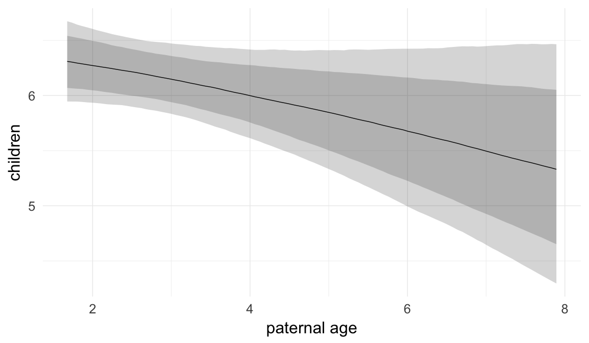
mcmc_areas(as.matrix(model$fit), regex_pars = "b")
Diagnostics
These plots were made to diagnose misfit and nonconvergence.
Posterior predictive checks
brms::pp_check(model, re_formula = NA, type = "dens_overlay")brms::pp_check(model, re_formula = NA, type = "hist")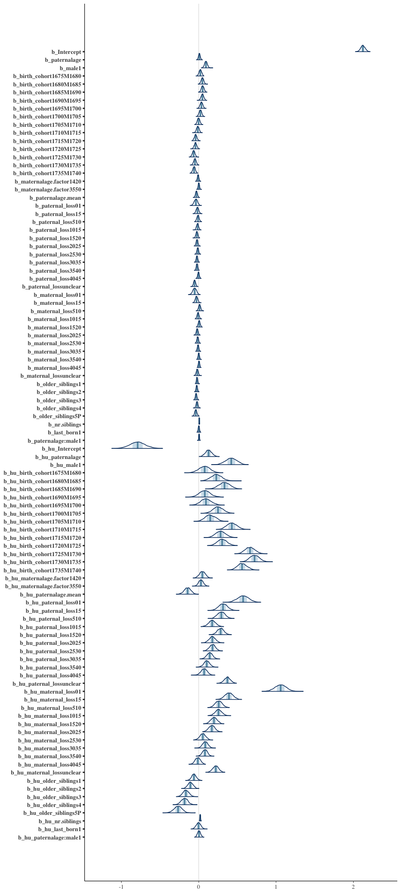
Rhat
Did the 6 chains converge?
stanplot(model, pars = "^b_[^I]", type = 'rhat')Effective sample size by average sample size
stanplot(model, pars = "^b", type = 'ess')
Monte Carlo SE
stanplot(model, pars = "^b", type = 'mcse')
Trace plots
if(any( summary(model)$fixed[,"Rhat"] > 1.1)) { # only do traceplots if not converged
plot(model, N = 3, ask = FALSE)
}Further plots
stanplot(model, pars = "^b", type = 'diag')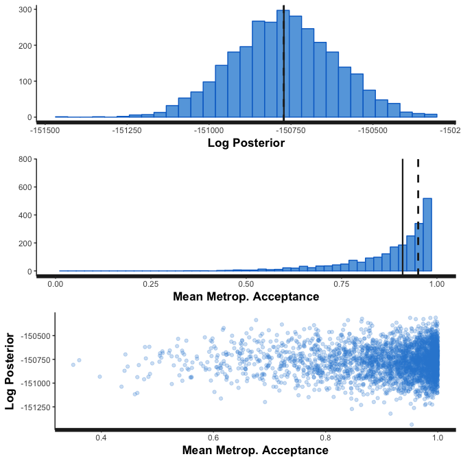
File name
coefs/rpqa/r12_sex_moderation.rds
Cluster script
opts_chunk$set(echo = FALSE)
clusterscript = str_replace(basename(model_filename), "\\.rds",".html")
cat("[Cluster script](" , clusterscript, ")", sep = "")r13: Control paternal age at first birth
We already control for the average paternal age at which the children in a family were born. The mean is a more complete summary of the reproductive timing of the father than the age at first birth. However, far more literature has examined age at first birth and it has the advantage of never being censored (although we of course try to rule out censoring by choosing appropriate subsets). Therefore, we added age at first birth as a covariate in this model.
Model summary
Full summary
model_summary = summary(model, use_cache = FALSE, priors = TRUE)
print(model_summary)## Family: hurdle_poisson (log)
## Formula: children ~ paternalage + birth_cohort + male + maternalage.factor + paternalage_at_1st_sib + paternalage.mean + paternal_loss + maternal_loss + older_siblings + nr.siblings + last_born + (1 | idParents)
## hu ~ paternalage + birth_cohort + male + maternalage.factor + paternalage_at_1st_sib + paternalage.mean + paternal_loss + maternal_loss + older_siblings + nr.siblings + last_born + (1 | idParents)
## Data: model_data (Number of observations: 68724)
## Samples: 6 chains, each with iter = 800; warmup = 300; thin = 1;
## total post-warmup samples = 3000
## WAIC: Not computed
##
## Priors:
## b ~ normal(0,5)
## sd ~ student_t(3, 0, 5)
## b_hu ~ normal(0,5)
## sd_hu ~ student_t(3, 0, 10)
##
## Group-Level Effects:
## ~idParents (Number of levels: 12205)
## Estimate Est.Error l-95% CI u-95% CI Eff.Sample Rhat
## sd(Intercept) 0.27 0.00 0.27 0.28 984 1
## sd(hu_Intercept) 0.62 0.01 0.59 0.65 1069 1
##
## Population-Level Effects:
## Estimate Est.Error l-95% CI u-95% CI Eff.Sample
## Intercept 2.13 0.03 2.08 2.19 841
## paternalage 0.01 0.01 -0.01 0.03 1287
## birth_cohort1675M1680 0.02 0.02 -0.01 0.05 1145
## birth_cohort1680M1685 0.05 0.02 0.01 0.08 843
## birth_cohort1685M1690 0.05 0.02 0.02 0.08 739
## birth_cohort1690M1695 0.05 0.02 0.01 0.08 692
## birth_cohort1695M1700 0.03 0.02 0.00 0.07 604
## birth_cohort1700M1705 0.02 0.02 -0.01 0.05 585
## birth_cohort1705M1710 0.00 0.02 -0.04 0.03 554
## birth_cohort1710M1715 -0.01 0.02 -0.04 0.02 448
## birth_cohort1715M1720 -0.04 0.02 -0.07 -0.01 551
## birth_cohort1720M1725 -0.04 0.02 -0.08 -0.01 514
## birth_cohort1725M1730 -0.07 0.02 -0.10 -0.03 525
## birth_cohort1730M1735 -0.05 0.02 -0.08 -0.02 417
## birth_cohort1735M1740 -0.06 0.02 -0.09 -0.03 541
## male1 0.11 0.00 0.10 0.12 3000
## maternalage.factor1420 -0.01 0.01 -0.03 0.01 3000
## maternalage.factor3550 0.00 0.01 -0.02 0.02 3000
## paternalage_at_1st_sib -0.02 0.01 -0.04 0.00 1560
## paternalage.mean -0.02 0.01 -0.04 0.01 1352
## paternal_loss01 -0.04 0.02 -0.08 0.00 1777
## paternal_loss15 -0.02 0.02 -0.05 0.01 1208
## paternal_loss510 -0.01 0.01 -0.04 0.02 933
## paternal_loss1015 -0.02 0.01 -0.04 0.01 1011
## paternal_loss1520 -0.02 0.01 -0.05 0.00 1084
## paternal_loss2025 -0.02 0.01 -0.05 0.00 1091
## paternal_loss2530 -0.01 0.01 -0.03 0.01 1034
## paternal_loss3035 -0.02 0.01 -0.04 0.00 1224
## paternal_loss3540 -0.02 0.01 -0.04 0.00 1249
## paternal_loss4045 0.00 0.01 -0.02 0.02 3000
## paternal_lossunclear -0.05 0.01 -0.08 -0.03 980
## maternal_loss01 -0.05 0.02 -0.10 0.00 3000
## maternal_loss15 -0.03 0.02 -0.06 0.00 1234
## maternal_loss510 0.01 0.01 -0.01 0.04 1146
## maternal_loss1015 -0.01 0.01 -0.03 0.02 1243
## maternal_loss1520 0.01 0.01 -0.02 0.03 1372
## maternal_loss2025 -0.02 0.01 -0.04 0.00 1519
## maternal_loss2530 -0.01 0.01 -0.03 0.01 1734
## maternal_loss3035 -0.01 0.01 -0.03 0.01 1559
## maternal_loss3540 0.00 0.01 -0.02 0.02 2094
## maternal_loss4045 0.00 0.01 -0.01 0.02 3000
## maternal_lossunclear -0.02 0.01 -0.04 0.01 1204
## older_siblings1 -0.02 0.01 -0.04 -0.01 3000
## older_siblings2 -0.03 0.01 -0.04 -0.01 2141
## older_siblings3 -0.03 0.01 -0.05 -0.01 1804
## older_siblings4 -0.02 0.01 -0.05 0.00 1704
## older_siblings5P -0.04 0.01 -0.06 -0.01 1498
## nr.siblings 0.01 0.00 0.00 0.01 1581
## last_born1 0.00 0.01 -0.01 0.02 3000
## hu_Intercept -1.03 0.09 -1.21 -0.85 684
## hu_paternalage 0.11 0.04 0.03 0.19 1252
## hu_birth_cohort1675M1680 0.08 0.07 -0.06 0.21 585
## hu_birth_cohort1680M1685 0.23 0.07 0.10 0.37 576
## hu_birth_cohort1685M1690 0.34 0.07 0.20 0.48 563
## hu_birth_cohort1690M1695 0.09 0.07 -0.04 0.22 496
## hu_birth_cohort1695M1700 0.11 0.07 -0.02 0.24 416
## hu_birth_cohort1700M1705 0.27 0.06 0.15 0.39 439
## hu_birth_cohort1705M1710 0.18 0.06 0.05 0.30 387
## hu_birth_cohort1710M1715 0.45 0.06 0.32 0.57 365
## hu_birth_cohort1715M1720 0.31 0.06 0.18 0.42 387
## hu_birth_cohort1720M1725 0.33 0.06 0.21 0.44 372
## hu_birth_cohort1725M1730 0.69 0.06 0.57 0.80 399
## hu_birth_cohort1730M1735 0.74 0.06 0.63 0.86 390
## hu_birth_cohort1735M1740 0.59 0.06 0.47 0.70 369
## hu_male1 0.44 0.02 0.40 0.47 3000
## hu_maternalage.factor1420 0.05 0.04 -0.03 0.12 3000
## hu_maternalage.factor3550 0.05 0.03 -0.01 0.11 3000
## hu_paternalage_at_1st_sib 0.27 0.03 0.20 0.33 3000
## hu_paternalage.mean -0.30 0.05 -0.39 -0.21 1282
## hu_paternal_loss01 0.56 0.07 0.42 0.71 3000
## hu_paternal_loss15 0.31 0.06 0.20 0.41 1429
## hu_paternal_loss510 0.29 0.05 0.19 0.38 1449
## hu_paternal_loss1015 0.17 0.04 0.08 0.26 1339
## hu_paternal_loss1520 0.28 0.04 0.20 0.36 1351
## hu_paternal_loss2025 0.17 0.04 0.09 0.25 1195
## hu_paternal_loss2530 0.17 0.04 0.10 0.25 1363
## hu_paternal_loss3035 0.13 0.04 0.06 0.21 1396
## hu_paternal_loss3540 0.10 0.04 0.03 0.17 1438
## hu_paternal_loss4045 0.06 0.04 -0.02 0.14 1637
## hu_paternal_lossunclear 0.36 0.04 0.28 0.44 1283
## hu_maternal_loss01 1.04 0.07 0.90 1.18 3000
## hu_maternal_loss15 0.38 0.05 0.28 0.48 3000
## hu_maternal_loss510 0.25 0.04 0.16 0.33 3000
## hu_maternal_loss1015 0.25 0.04 0.17 0.33 3000
## hu_maternal_loss1520 0.19 0.04 0.11 0.28 3000
## hu_maternal_loss2025 0.17 0.04 0.09 0.25 3000
## hu_maternal_loss2530 0.05 0.04 -0.02 0.13 3000
## hu_maternal_loss3035 0.09 0.04 0.02 0.16 3000
## hu_maternal_loss3540 0.08 0.03 0.02 0.15 3000
## hu_maternal_loss4045 -0.01 0.03 -0.08 0.05 3000
## hu_maternal_lossunclear 0.22 0.04 0.14 0.29 2208
## hu_older_siblings1 -0.06 0.03 -0.12 0.00 3000
## hu_older_siblings2 -0.10 0.03 -0.17 -0.03 1690
## hu_older_siblings3 -0.15 0.04 -0.23 -0.08 1530
## hu_older_siblings4 -0.17 0.04 -0.25 -0.08 1359
## hu_older_siblings5P -0.25 0.05 -0.34 -0.14 1071
## hu_nr.siblings 0.03 0.00 0.02 0.04 2035
## hu_last_born1 0.00 0.03 -0.06 0.05 3000
## Rhat
## Intercept 1.00
## paternalage 1.00
## birth_cohort1675M1680 1.00
## birth_cohort1680M1685 1.01
## birth_cohort1685M1690 1.01
## birth_cohort1690M1695 1.01
## birth_cohort1695M1700 1.01
## birth_cohort1700M1705 1.01
## birth_cohort1705M1710 1.01
## birth_cohort1710M1715 1.01
## birth_cohort1715M1720 1.01
## birth_cohort1720M1725 1.01
## birth_cohort1725M1730 1.01
## birth_cohort1730M1735 1.01
## birth_cohort1735M1740 1.01
## male1 1.00
## maternalage.factor1420 1.00
## maternalage.factor3550 1.00
## paternalage_at_1st_sib 1.00
## paternalage.mean 1.00
## paternal_loss01 1.00
## paternal_loss15 1.00
## paternal_loss510 1.00
## paternal_loss1015 1.00
## paternal_loss1520 1.00
## paternal_loss2025 1.00
## paternal_loss2530 1.00
## paternal_loss3035 1.00
## paternal_loss3540 1.00
## paternal_loss4045 1.00
## paternal_lossunclear 1.00
## maternal_loss01 1.00
## maternal_loss15 1.01
## maternal_loss510 1.01
## maternal_loss1015 1.01
## maternal_loss1520 1.01
## maternal_loss2025 1.01
## maternal_loss2530 1.00
## maternal_loss3035 1.01
## maternal_loss3540 1.00
## maternal_loss4045 1.00
## maternal_lossunclear 1.01
## older_siblings1 1.00
## older_siblings2 1.00
## older_siblings3 1.00
## older_siblings4 1.00
## older_siblings5P 1.00
## nr.siblings 1.00
## last_born1 1.00
## hu_Intercept 1.00
## hu_paternalage 1.01
## hu_birth_cohort1675M1680 1.01
## hu_birth_cohort1680M1685 1.01
## hu_birth_cohort1685M1690 1.01
## hu_birth_cohort1690M1695 1.01
## hu_birth_cohort1695M1700 1.01
## hu_birth_cohort1700M1705 1.01
## hu_birth_cohort1705M1710 1.01
## hu_birth_cohort1710M1715 1.01
## hu_birth_cohort1715M1720 1.01
## hu_birth_cohort1720M1725 1.01
## hu_birth_cohort1725M1730 1.01
## hu_birth_cohort1730M1735 1.01
## hu_birth_cohort1735M1740 1.01
## hu_male1 1.00
## hu_maternalage.factor1420 1.00
## hu_maternalage.factor3550 1.01
## hu_paternalage_at_1st_sib 1.00
## hu_paternalage.mean 1.01
## hu_paternal_loss01 1.00
## hu_paternal_loss15 1.00
## hu_paternal_loss510 1.00
## hu_paternal_loss1015 1.00
## hu_paternal_loss1520 1.00
## hu_paternal_loss2025 1.00
## hu_paternal_loss2530 1.00
## hu_paternal_loss3035 1.00
## hu_paternal_loss3540 1.00
## hu_paternal_loss4045 1.00
## hu_paternal_lossunclear 1.00
## hu_maternal_loss01 1.00
## hu_maternal_loss15 1.00
## hu_maternal_loss510 1.00
## hu_maternal_loss1015 1.00
## hu_maternal_loss1520 1.00
## hu_maternal_loss2025 1.00
## hu_maternal_loss2530 1.00
## hu_maternal_loss3035 1.00
## hu_maternal_loss3540 1.00
## hu_maternal_loss4045 1.00
## hu_maternal_lossunclear 1.00
## hu_older_siblings1 1.00
## hu_older_siblings2 1.00
## hu_older_siblings3 1.01
## hu_older_siblings4 1.01
## hu_older_siblings5P 1.01
## hu_nr.siblings 1.00
## hu_last_born1 1.00
##
## Samples were drawn using sampling(NUTS). For each parameter, Eff.Sample
## is a crude measure of effective sample size, and Rhat is the potential
## scale reduction factor on split chains (at convergence, Rhat = 1).Table of fixed effects
fixed_eff = data.frame(model_summary$fixed, check.names = F)
fixed_eff$Est.Error = fixed_eff$Eff.Sample = fixed_eff$Rhat = NULL
fixed_eff$OR = exp(fixed_eff$Estimate)
fixed_eff$OR_low = exp(fixed_eff$`l-95% CI`)
fixed_eff$OR_high = exp(fixed_eff$`u-95% CI`)
pander::pander(fixed_eff)| Estimate | l-95% CI | u-95% CI | OR | OR_low | OR_high | |
|---|---|---|---|---|---|---|
| Intercept | 2.134 | 2.077 | 2.189 | 8.445 | 7.979 | 8.923 |
| paternalage | 0.01244 | -0.007653 | 0.03233 | 1.013 | 0.9924 | 1.033 |
| birth_cohort1675M1680 | 0.02001 | -0.01073 | 0.05091 | 1.02 | 0.9893 | 1.052 |
| birth_cohort1680M1685 | 0.0464 | 0.01389 | 0.07989 | 1.047 | 1.014 | 1.083 |
| birth_cohort1685M1690 | 0.04944 | 0.01626 | 0.08311 | 1.051 | 1.016 | 1.087 |
| birth_cohort1690M1695 | 0.04646 | 0.01158 | 0.07974 | 1.048 | 1.012 | 1.083 |
| birth_cohort1695M1700 | 0.03377 | 0.002526 | 0.06644 | 1.034 | 1.003 | 1.069 |
| birth_cohort1700M1705 | 0.01971 | -0.01246 | 0.0527 | 1.02 | 0.9876 | 1.054 |
| birth_cohort1705M1710 | -0.003581 | -0.03529 | 0.02979 | 0.9964 | 0.9653 | 1.03 |
| birth_cohort1710M1715 | -0.01377 | -0.04498 | 0.01967 | 0.9863 | 0.956 | 1.02 |
| birth_cohort1715M1720 | -0.04203 | -0.07382 | -0.008935 | 0.9588 | 0.9288 | 0.9911 |
| birth_cohort1720M1725 | -0.04445 | -0.07562 | -0.01154 | 0.9565 | 0.9272 | 0.9885 |
| birth_cohort1725M1730 | -0.068 | -0.09996 | -0.03479 | 0.9343 | 0.9049 | 0.9658 |
| birth_cohort1730M1735 | -0.0514 | -0.08262 | -0.01901 | 0.9499 | 0.9207 | 0.9812 |
| birth_cohort1735M1740 | -0.06237 | -0.09355 | -0.03 | 0.9395 | 0.9107 | 0.9704 |
| male1 | 0.1111 | 0.1032 | 0.119 | 1.118 | 1.109 | 1.126 |
| maternalage.factor1420 | -0.007998 | -0.02758 | 0.011 | 0.992 | 0.9728 | 1.011 |
| maternalage.factor3550 | 0.0006004 | -0.01533 | 0.01661 | 1.001 | 0.9848 | 1.017 |
| paternalage_at_1st_sib | -0.01966 | -0.03981 | 0.0001357 | 0.9805 | 0.961 | 1 |
| paternalage.mean | -0.01835 | -0.04363 | 0.006772 | 0.9818 | 0.9573 | 1.007 |
| paternal_loss01 | -0.0381 | -0.08087 | 0.001886 | 0.9626 | 0.9223 | 1.002 |
| paternal_loss15 | -0.01742 | -0.04794 | 0.01388 | 0.9827 | 0.9532 | 1.014 |
| paternal_loss510 | -0.01014 | -0.03802 | 0.01731 | 0.9899 | 0.9627 | 1.017 |
| paternal_loss1015 | -0.01616 | -0.04113 | 0.008539 | 0.984 | 0.9597 | 1.009 |
| paternal_loss1520 | -0.02388 | -0.0481 | -0.0005977 | 0.9764 | 0.953 | 0.9994 |
| paternal_loss2025 | -0.02277 | -0.04559 | -0.0008068 | 0.9775 | 0.9554 | 0.9992 |
| paternal_loss2530 | -0.01252 | -0.03375 | 0.008566 | 0.9876 | 0.9668 | 1.009 |
| paternal_loss3035 | -0.02272 | -0.0427 | -0.002825 | 0.9775 | 0.9582 | 0.9972 |
| paternal_loss3540 | -0.0221 | -0.04091 | -0.002415 | 0.9781 | 0.9599 | 0.9976 |
| paternal_loss4045 | -0.003169 | -0.02152 | 0.0158 | 0.9968 | 0.9787 | 1.016 |
| paternal_lossunclear | -0.05346 | -0.07838 | -0.028 | 0.9479 | 0.9246 | 0.9724 |
| maternal_loss01 | -0.05046 | -0.09631 | -0.004243 | 0.9508 | 0.9082 | 0.9958 |
| maternal_loss15 | -0.02695 | -0.05753 | 0.002615 | 0.9734 | 0.9441 | 1.003 |
| maternal_loss510 | 0.01222 | -0.01473 | 0.03669 | 1.012 | 0.9854 | 1.037 |
| maternal_loss1015 | -0.0079 | -0.03178 | 0.01619 | 0.9921 | 0.9687 | 1.016 |
| maternal_loss1520 | 0.006173 | -0.01703 | 0.0302 | 1.006 | 0.9831 | 1.031 |
| maternal_loss2025 | -0.01891 | -0.04212 | 0.003045 | 0.9813 | 0.9588 | 1.003 |
| maternal_loss2530 | -0.01277 | -0.03382 | 0.009313 | 0.9873 | 0.9667 | 1.009 |
| maternal_loss3035 | -0.008432 | -0.02698 | 0.01086 | 0.9916 | 0.9734 | 1.011 |
| maternal_loss3540 | 0.0007483 | -0.01651 | 0.01801 | 1.001 | 0.9836 | 1.018 |
| maternal_loss4045 | 0.003888 | -0.01326 | 0.02078 | 1.004 | 0.9868 | 1.021 |
| maternal_lossunclear | -0.01952 | -0.04456 | 0.006213 | 0.9807 | 0.9564 | 1.006 |
| older_siblings1 | -0.02217 | -0.03817 | -0.00695 | 0.9781 | 0.9626 | 0.9931 |
| older_siblings2 | -0.02593 | -0.04349 | -0.008326 | 0.9744 | 0.9574 | 0.9917 |
| older_siblings3 | -0.03428 | -0.05354 | -0.01446 | 0.9663 | 0.9479 | 0.9856 |
| older_siblings4 | -0.0231 | -0.04544 | -0.0008985 | 0.9772 | 0.9556 | 0.9991 |
| older_siblings5P | -0.03895 | -0.06432 | -0.0123 | 0.9618 | 0.9377 | 0.9878 |
| nr.siblings | 0.006464 | 0.00385 | 0.009018 | 1.006 | 1.004 | 1.009 |
| last_born1 | 0.0014 | -0.0128 | 0.01583 | 1.001 | 0.9873 | 1.016 |
| hu_Intercept | -1.028 | -1.212 | -0.8526 | 0.3576 | 0.2976 | 0.4263 |
| hu_paternalage | 0.109 | 0.02928 | 0.1873 | 1.115 | 1.03 | 1.206 |
| hu_birth_cohort1675M1680 | 0.0772 | -0.05931 | 0.2104 | 1.08 | 0.9424 | 1.234 |
| hu_birth_cohort1680M1685 | 0.2323 | 0.09682 | 0.3651 | 1.262 | 1.102 | 1.441 |
| hu_birth_cohort1685M1690 | 0.3392 | 0.203 | 0.4752 | 1.404 | 1.225 | 1.608 |
| hu_birth_cohort1690M1695 | 0.09467 | -0.03727 | 0.2214 | 1.099 | 0.9634 | 1.248 |
| hu_birth_cohort1695M1700 | 0.1119 | -0.01783 | 0.2373 | 1.118 | 0.9823 | 1.268 |
| hu_birth_cohort1700M1705 | 0.2708 | 0.1464 | 0.3912 | 1.311 | 1.158 | 1.479 |
| hu_birth_cohort1705M1710 | 0.1753 | 0.04662 | 0.2977 | 1.192 | 1.048 | 1.347 |
| hu_birth_cohort1710M1715 | 0.4515 | 0.3244 | 0.5705 | 1.571 | 1.383 | 1.769 |
| hu_birth_cohort1715M1720 | 0.3074 | 0.1832 | 0.4233 | 1.36 | 1.201 | 1.527 |
| hu_birth_cohort1720M1725 | 0.3277 | 0.2081 | 0.4442 | 1.388 | 1.231 | 1.559 |
| hu_birth_cohort1725M1730 | 0.6859 | 0.5685 | 0.8009 | 1.985 | 1.766 | 2.228 |
| hu_birth_cohort1730M1735 | 0.7447 | 0.6288 | 0.8566 | 2.106 | 1.875 | 2.355 |
| hu_birth_cohort1735M1740 | 0.586 | 0.4685 | 0.6974 | 1.797 | 1.598 | 2.009 |
| hu_male1 | 0.436 | 0.4043 | 0.4691 | 1.547 | 1.498 | 1.599 |
| hu_maternalage.factor1420 | 0.046 | -0.02689 | 0.1183 | 1.047 | 0.9735 | 1.126 |
| hu_maternalage.factor3550 | 0.04823 | -0.01003 | 0.1112 | 1.049 | 0.99 | 1.118 |
| hu_paternalage_at_1st_sib | 0.2654 | 0.2041 | 0.3251 | 1.304 | 1.226 | 1.384 |
| hu_paternalage.mean | -0.2975 | -0.3895 | -0.2065 | 0.7427 | 0.6774 | 0.8134 |
| hu_paternal_loss01 | 0.5639 | 0.4239 | 0.71 | 1.758 | 1.528 | 2.034 |
| hu_paternal_loss15 | 0.3065 | 0.1974 | 0.4141 | 1.359 | 1.218 | 1.513 |
| hu_paternal_loss510 | 0.2854 | 0.1919 | 0.3826 | 1.33 | 1.212 | 1.466 |
| hu_paternal_loss1015 | 0.1666 | 0.07757 | 0.2563 | 1.181 | 1.081 | 1.292 |
| hu_paternal_loss1520 | 0.2775 | 0.1959 | 0.3606 | 1.32 | 1.216 | 1.434 |
| hu_paternal_loss2025 | 0.1684 | 0.09167 | 0.2465 | 1.183 | 1.096 | 1.28 |
| hu_paternal_loss2530 | 0.1707 | 0.09549 | 0.2483 | 1.186 | 1.1 | 1.282 |
| hu_paternal_loss3035 | 0.1336 | 0.06125 | 0.2085 | 1.143 | 1.063 | 1.232 |
| hu_paternal_loss3540 | 0.09653 | 0.02648 | 0.1683 | 1.101 | 1.027 | 1.183 |
| hu_paternal_loss4045 | 0.06333 | -0.01747 | 0.1411 | 1.065 | 0.9827 | 1.152 |
| hu_paternal_lossunclear | 0.3612 | 0.2832 | 0.4429 | 1.435 | 1.327 | 1.557 |
| hu_maternal_loss01 | 1.042 | 0.9002 | 1.182 | 2.834 | 2.46 | 3.26 |
| hu_maternal_loss15 | 0.3789 | 0.2755 | 0.4758 | 1.461 | 1.317 | 1.609 |
| hu_maternal_loss510 | 0.2488 | 0.1643 | 0.3331 | 1.282 | 1.179 | 1.395 |
| hu_maternal_loss1015 | 0.2509 | 0.1685 | 0.3332 | 1.285 | 1.184 | 1.395 |
| hu_maternal_loss1520 | 0.1939 | 0.109 | 0.276 | 1.214 | 1.115 | 1.318 |
| hu_maternal_loss2025 | 0.167 | 0.08619 | 0.2463 | 1.182 | 1.09 | 1.279 |
| hu_maternal_loss2530 | 0.05241 | -0.02475 | 0.127 | 1.054 | 0.9756 | 1.135 |
| hu_maternal_loss3035 | 0.08591 | 0.01565 | 0.1567 | 1.09 | 1.016 | 1.17 |
| hu_maternal_loss3540 | 0.08124 | 0.01751 | 0.1469 | 1.085 | 1.018 | 1.158 |
| hu_maternal_loss4045 | -0.01143 | -0.07696 | 0.05475 | 0.9886 | 0.9259 | 1.056 |
| hu_maternal_lossunclear | 0.2179 | 0.143 | 0.2945 | 1.243 | 1.154 | 1.342 |
| hu_older_siblings1 | -0.05678 | -0.1152 | 0.001238 | 0.9448 | 0.8912 | 1.001 |
| hu_older_siblings2 | -0.09861 | -0.1654 | -0.03007 | 0.9061 | 0.8476 | 0.9704 |
| hu_older_siblings3 | -0.1528 | -0.2269 | -0.07544 | 0.8583 | 0.797 | 0.9273 |
| hu_older_siblings4 | -0.1669 | -0.2508 | -0.07821 | 0.8463 | 0.7781 | 0.9248 |
| hu_older_siblings5P | -0.2458 | -0.3449 | -0.1409 | 0.7821 | 0.7083 | 0.8686 |
| hu_nr.siblings | 0.0306 | 0.02202 | 0.03891 | 1.031 | 1.022 | 1.04 |
| hu_last_born1 | -0.002795 | -0.06013 | 0.05322 | 0.9972 | 0.9416 | 1.055 |
Paternal age effect
pander::pander(paternal_age_10y_effect(model))| effect | median_estimate | ci_95 | ci_80 |
|---|---|---|---|
| estimate father 25y | 5.72 | [5.42;6.01] | [5.53;5.91] |
| estimate father 35y | 5.6 | [5.26;5.95] | [5.38;5.81] |
| percentage change | -2.19 | [-5.23;1.19] | [-4.22;0] |
| OR/IRR | 1.01 | [0.99;1.03] | [1;1.03] |
| OR hurdle | 1.12 | [1.03;1.21] | [1.06;1.18] |
Marginal effect plots
plot.brmsMarginalEffects_shades(
x = marginal_effects(model, re_formula = NA, probs = c(0.025,0.975)),
y = marginal_effects(model, re_formula = NA, probs = c(0.1,0.9)),
ask = FALSE)

Coefficient plot
Coefficient estimates (95% and 80% credibility).
mcmc_intervals(as.matrix(model$fit), regex_pars = "b_[^I]")mcmc_areas(as.matrix(model$fit), regex_pars = "b")
Diagnostics
These plots were made to diagnose misfit and nonconvergence.
Posterior predictive checks
brms::pp_check(model, re_formula = NA, type = "dens_overlay")brms::pp_check(model, re_formula = NA, type = "hist")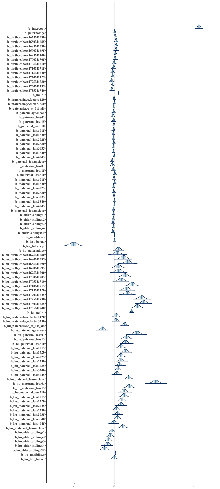
Rhat
Did the 6 chains converge?
stanplot(model, pars = "^b_[^I]", type = 'rhat')Effective sample size by average sample size
stanplot(model, pars = "^b", type = 'ess')Monte Carlo SE
stanplot(model, pars = "^b", type = 'mcse')Trace plots
if(any( summary(model)$fixed[,"Rhat"] > 1.1)) { # only do traceplots if not converged
plot(model, N = 3, ask = FALSE)
}Further plots
stanplot(model, pars = "^b", type = 'diag')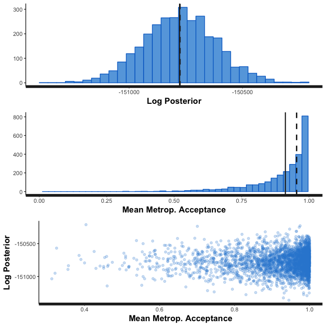
File name
coefs/rpqa/r13_control_paternal_afb.rds
Cluster script
opts_chunk$set(echo = FALSE)
clusterscript = str_replace(basename(model_filename), "\\.rds",".html")
cat("[Cluster script](" , clusterscript, ")", sep = "")r14: Compare lfe
Most of the previous literature has not used multilevel modelling, but linear group fixed effects (essentially dummy variables on the many thousands of families in the model). We believe our multilevel modelling approach has the advantage of allowing us to examine the effect of including predictors at the level of the family in the same model.
This allows us to
a) appropriately model a zero-inflated outcome such as number of children including those who died young (we’re not aware of a linear group fixed effect approach that handles hurdle or zero-inflated models)
b) examine group-level slopes for paternal age and potentially to examine moderators at the level of the family (though we did not do this)
c) explicitly model confounders at the level of the family (e.g. number of siblings).
Nevertheless, the prevalence of this approach in the literature mandates that we show how our approach compares. We fit this model using the R package “lfe” and the function felm. All covariates that were not estimable in principle were removed (i.e. number of siblings, paternalage.mean).
##
## Call:
## felm(formula = children ~ paternalage + birth_cohort + male + maternalage.factor + paternal_loss + maternal_loss + older_siblings + last_born | idParents, data = model_data)
##
## Residuals:
## Min 1Q Median 3Q Max
## -14.165 -3.140 -0.719 2.817 25.530
##
## Coefficients:
## Estimate Std. Error t value Pr(>|t|)
## paternalage -0.7365 0.1944 -3.79 0.00015 ***
## birth_cohort1675-1680 0.2279 0.1842 1.24 0.21606
## birth_cohort1680-1685 0.2585 0.2263 1.14 0.25332
## birth_cohort1685-1690 0.2069 0.2836 0.73 0.46565
## birth_cohort1690-1695 1.0273 0.3441 2.99 0.00283 **
## birth_cohort1695-1700 1.1908 0.4055 2.94 0.00332 **
## birth_cohort1700-1705 1.0125 0.4661 2.17 0.02984 *
## birth_cohort1705-1710 1.3158 0.5299 2.48 0.01303 *
## birth_cohort1710-1715 0.9449 0.5932 1.59 0.11119
## birth_cohort1715-1720 1.3599 0.6572 2.07 0.03854 *
## birth_cohort1720-1725 1.5347 0.7217 2.13 0.03347 *
## birth_cohort1725-1730 0.9727 0.7865 1.24 0.21621
## birth_cohort1730-1735 1.1231 0.8512 1.32 0.18705
## birth_cohort1735-1740 1.4761 0.9154 1.61 0.10685
## male1 -0.3469 0.0416 -8.33 < 2e-16 ***
## maternalage.factor(14,20] -0.3598 0.1071 -3.36 0.00078 ***
## maternalage.factor(35,50] -0.0990 0.0863 -1.15 0.25105
## paternal_loss[0,1] -1.0886 0.4447 -2.45 0.01438 *
## paternal_loss(1,5] -0.4853 0.4037 -1.20 0.22935
## paternal_loss(5,10] -0.3100 0.3620 -0.86 0.39175
## paternal_loss(10,15] -0.1218 0.3209 -0.38 0.70418
## paternal_loss(15,20] -0.3553 0.2804 -1.27 0.20509
## paternal_loss(20,25] -0.1794 0.2417 -0.74 0.45807
## paternal_loss(25,30] -0.1721 0.2045 -0.84 0.39991
## paternal_loss(30,35] -0.2406 0.1689 -1.42 0.15420
## paternal_loss(35,40] -0.2197 0.1369 -1.60 0.10865
## paternal_loss(40,45] -0.1599 0.1176 -1.36 0.17389
## paternal_lossunclear NA NA NA NA
## maternal_loss[0,1] -1.4286 0.4069 -3.51 0.00045 ***
## maternal_loss(1,5] -0.2695 0.3675 -0.73 0.46338
## maternal_loss(5,10] 0.1955 0.3333 0.59 0.55746
## maternal_loss(10,15] 0.0448 0.2992 0.15 0.88107
## maternal_loss(15,20] 0.1143 0.2634 0.43 0.66431
## maternal_loss(20,25] 0.0105 0.2262 0.05 0.96298
## maternal_loss(25,30] 0.2211 0.1891 1.17 0.24228
## maternal_loss(30,35] 0.1034 0.1527 0.68 0.49864
## maternal_loss(35,40] 0.0936 0.1210 0.77 0.43913
## maternal_loss(40,45] 0.2322 0.1021 2.28 0.02289 *
## maternal_lossunclear NA NA NA NA
## older_siblings1 0.0448 0.0763 0.59 0.55736
## older_siblings2 0.1153 0.0871 1.32 0.18580
## older_siblings3 0.1817 0.0991 1.83 0.06669 .
## older_siblings4 0.2558 0.1121 2.28 0.02246 *
## older_siblings5+ 0.3170 0.1342 2.36 0.01819 *
## last_born1 0.0527 0.0702 0.75 0.45229
## ---
## Signif. codes: 0 '***' 0.001 '**' 0.01 '*' 0.05 '.' 0.1 ' ' 1
##
## Residual standard error: 4.94 on 56476 degrees of freedom
## Multiple R-squared(full model): 0.262 Adjusted R-squared: 0.102
## Multiple R-squared(proj model): 0.00933 Adjusted R-squared: -0.205
## F-statistic(full model):1.64 on 12247 and 56476 DF, p-value: <2e-16
## F-statistic(proj model): 11.8 on 45 and 56476 DF, p-value: <2e-16r15: Using a moderator by region, group-level effects by parish
In this model we attempted allow for regional variation in paternal age effects and attempted to better control residual variation. Our approach was two-fold: to moderate paternal age by region and to add a random effect for the church parish in which the individual was born. However, for the modern Swedish data, we had no geographic data and no regional information, so this model was not fit.
Model summary
Full summary
model_summary = summary(model, use_cache = FALSE, priors = TRUE)
print(model_summary)## Family: hurdle_poisson (log)
## Formula: children ~ paternalage * urban + birth_cohort + male + maternalage.factor + paternalage.mean + paternal_loss + maternal_loss + older_siblings + nr.siblings + last_born + (1 | idParents) + (1 | codeLieuNaiss)
## hu ~ paternalage + urban + birth_cohort + male + maternalage.factor + paternalage.mean + paternal_loss + maternal_loss + older_siblings + nr.siblings + last_born + (1 | idParents) + (1 | codeLieuNaiss) + paternalage:urban
## Data: model_data (Number of observations: 68378)
## Samples: 6 chains, each with iter = 800; warmup = 300; thin = 1;
## total post-warmup samples = 3000
## WAIC: Not computed
##
## Priors:
## b ~ normal(0,5)
## sd ~ student_t(3, 0, 5)
## b_hu ~ normal(0,5)
## sd_hu ~ student_t(3, 0, 10)
##
## Group-Level Effects:
## ~codeLieuNaiss (Number of levels: 152)
## Estimate Est.Error l-95% CI u-95% CI Eff.Sample Rhat
## sd(Intercept) 0.07 0.01 0.05 0.09 855 1.00
## sd(hu_Intercept) 0.23 0.03 0.19 0.30 554 1.01
##
## ~idParents (Number of levels: 12176)
## Estimate Est.Error l-95% CI u-95% CI Eff.Sample Rhat
## sd(Intercept) 0.27 0.00 0.26 0.27 902 1.01
## sd(hu_Intercept) 0.50 0.02 0.47 0.53 875 1.00
##
## Population-Level Effects:
## Estimate Est.Error l-95% CI u-95% CI Eff.Sample
## Intercept 2.13 0.03 2.08 2.19 1105
## paternalage 0.01 0.01 -0.01 0.03 1215
## urban1 -0.04 0.06 -0.15 0.07 1622
## birth_cohort1675M1680 0.01 0.02 -0.02 0.04 1252
## birth_cohort1680M1685 0.03 0.02 0.00 0.07 1050
## birth_cohort1685M1690 0.03 0.02 0.00 0.07 963
## birth_cohort1690M1695 0.03 0.02 0.00 0.06 861
## birth_cohort1695M1700 0.02 0.02 -0.01 0.05 646
## birth_cohort1700M1705 0.00 0.02 -0.03 0.03 612
## birth_cohort1705M1710 -0.02 0.02 -0.06 0.01 559
## birth_cohort1710M1715 -0.03 0.02 -0.06 0.00 595
## birth_cohort1715M1720 -0.06 0.02 -0.09 -0.03 584
## birth_cohort1720M1725 -0.07 0.02 -0.10 -0.03 557
## birth_cohort1725M1730 -0.10 0.02 -0.13 -0.06 503
## birth_cohort1730M1735 -0.08 0.02 -0.11 -0.04 531
## birth_cohort1735M1740 -0.09 0.02 -0.12 -0.06 585
## male1 0.11 0.00 0.10 0.12 3000
## maternalage.factor1420 -0.01 0.01 -0.03 0.01 3000
## maternalage.factor3550 0.00 0.01 -0.01 0.02 3000
## paternalage.mean -0.02 0.01 -0.05 0.00 1561
## paternal_loss01 -0.03 0.02 -0.07 0.01 1680
## paternal_loss15 -0.01 0.02 -0.04 0.02 1074
## paternal_loss510 -0.01 0.01 -0.03 0.02 979
## paternal_loss1015 -0.01 0.01 -0.04 0.02 984
## paternal_loss1520 -0.02 0.01 -0.04 0.01 1068
## paternal_loss2025 -0.02 0.01 -0.04 0.00 955
## paternal_loss2530 -0.01 0.01 -0.03 0.01 1089
## paternal_loss3035 -0.02 0.01 -0.04 0.00 1172
## paternal_loss3540 -0.02 0.01 -0.04 0.00 1461
## paternal_loss4045 0.00 0.01 -0.02 0.02 1937
## paternal_lossunclear -0.04 0.01 -0.07 -0.01 1106
## maternal_loss01 -0.05 0.02 -0.10 0.00 3000
## maternal_loss15 -0.03 0.02 -0.05 0.00 1866
## maternal_loss510 0.01 0.01 -0.01 0.04 1757
## maternal_loss1015 -0.01 0.01 -0.03 0.02 1580
## maternal_loss1520 0.01 0.01 -0.01 0.03 1688
## maternal_loss2025 -0.02 0.01 -0.04 0.01 1675
## maternal_loss2530 -0.01 0.01 -0.03 0.01 1385
## maternal_loss3035 -0.01 0.01 -0.03 0.01 1790
## maternal_loss3540 0.00 0.01 -0.02 0.02 2004
## maternal_loss4045 0.00 0.01 -0.01 0.02 3000
## maternal_lossunclear -0.02 0.01 -0.04 0.01 1333
## older_siblings1 -0.02 0.01 -0.04 0.00 3000
## older_siblings2 -0.03 0.01 -0.04 -0.01 2010
## older_siblings3 -0.03 0.01 -0.05 -0.01 1693
## older_siblings4 -0.02 0.01 -0.04 0.00 1486
## older_siblings5P -0.04 0.01 -0.06 -0.01 1398
## nr.siblings 0.01 0.00 0.00 0.01 1660
## last_born1 0.00 0.01 -0.01 0.02 3000
## paternalage:urban1 0.00 0.01 -0.02 0.01 3000
## hu_Intercept -1.00 0.10 -1.19 -0.82 724
## hu_paternalage 0.12 0.04 0.04 0.20 1130
## hu_urban1 0.53 0.19 0.15 0.92 2087
## hu_birth_cohort1675M1680 0.15 0.07 0.01 0.29 682
## hu_birth_cohort1680M1685 0.40 0.07 0.26 0.54 641
## hu_birth_cohort1685M1690 0.51 0.07 0.37 0.65 589
## hu_birth_cohort1690M1695 0.22 0.07 0.08 0.35 565
## hu_birth_cohort1695M1700 0.24 0.07 0.11 0.37 414
## hu_birth_cohort1700M1705 0.41 0.06 0.28 0.54 478
## hu_birth_cohort1705M1710 0.32 0.06 0.19 0.44 488
## hu_birth_cohort1710M1715 0.60 0.06 0.47 0.72 369
## hu_birth_cohort1715M1720 0.47 0.06 0.34 0.59 378
## hu_birth_cohort1720M1725 0.51 0.06 0.39 0.63 375
## hu_birth_cohort1725M1730 0.85 0.06 0.73 0.97 375
## hu_birth_cohort1730M1735 0.90 0.06 0.78 1.02 386
## hu_birth_cohort1735M1740 0.77 0.06 0.64 0.88 370
## hu_male1 0.43 0.02 0.40 0.47 3000
## hu_maternalage.factor1420 0.05 0.04 -0.02 0.13 3000
## hu_maternalage.factor3550 0.04 0.03 -0.02 0.09 3000
## hu_paternalage.mean -0.15 0.04 -0.23 -0.06 1043
## hu_paternal_loss01 0.46 0.07 0.32 0.59 3000
## hu_paternal_loss15 0.21 0.05 0.11 0.32 1712
## hu_paternal_loss510 0.21 0.05 0.12 0.30 1591
## hu_paternal_loss1015 0.10 0.04 0.02 0.19 1448
## hu_paternal_loss1520 0.23 0.04 0.15 0.30 1445
## hu_paternal_loss2025 0.12 0.04 0.04 0.19 1358
## hu_paternal_loss2530 0.12 0.04 0.05 0.20 1295
## hu_paternal_loss3035 0.10 0.04 0.03 0.17 1278
## hu_paternal_loss3540 0.07 0.04 0.00 0.14 1420
## hu_paternal_loss4045 0.05 0.04 -0.03 0.12 3000
## hu_paternal_lossunclear 0.31 0.04 0.23 0.38 1265
## hu_maternal_loss01 0.96 0.07 0.82 1.10 3000
## hu_maternal_loss15 0.33 0.05 0.23 0.42 3000
## hu_maternal_loss510 0.22 0.04 0.13 0.30 3000
## hu_maternal_loss1015 0.22 0.04 0.14 0.30 3000
## hu_maternal_loss1520 0.17 0.04 0.09 0.25 3000
## hu_maternal_loss2025 0.14 0.04 0.07 0.22 3000
## hu_maternal_loss2530 0.03 0.04 -0.04 0.10 3000
## hu_maternal_loss3035 0.06 0.03 0.00 0.13 3000
## hu_maternal_loss3540 0.06 0.03 -0.01 0.12 3000
## hu_maternal_loss4045 -0.02 0.03 -0.09 0.04 3000
## hu_maternal_lossunclear 0.25 0.04 0.18 0.32 2300
## hu_older_siblings1 -0.06 0.03 -0.12 0.01 3000
## hu_older_siblings2 -0.09 0.04 -0.16 -0.03 1877
## hu_older_siblings3 -0.15 0.04 -0.23 -0.07 1522
## hu_older_siblings4 -0.16 0.04 -0.25 -0.07 1426
## hu_older_siblings5P -0.24 0.05 -0.34 -0.14 1091
## hu_nr.siblings 0.02 0.00 0.01 0.03 1966
## hu_last_born1 0.00 0.03 -0.06 0.05 3000
## hu_paternalage:urban1 0.03 0.02 -0.01 0.08 3000
## Rhat
## Intercept 1.00
## paternalage 1.00
## urban1 1.00
## birth_cohort1675M1680 1.01
## birth_cohort1680M1685 1.01
## birth_cohort1685M1690 1.01
## birth_cohort1690M1695 1.01
## birth_cohort1695M1700 1.01
## birth_cohort1700M1705 1.02
## birth_cohort1705M1710 1.02
## birth_cohort1710M1715 1.01
## birth_cohort1715M1720 1.02
## birth_cohort1720M1725 1.02
## birth_cohort1725M1730 1.02
## birth_cohort1730M1735 1.02
## birth_cohort1735M1740 1.01
## male1 1.00
## maternalage.factor1420 1.00
## maternalage.factor3550 1.00
## paternalage.mean 1.00
## paternal_loss01 1.00
## paternal_loss15 1.00
## paternal_loss510 1.00
## paternal_loss1015 1.00
## paternal_loss1520 1.00
## paternal_loss2025 1.00
## paternal_loss2530 1.00
## paternal_loss3035 1.00
## paternal_loss3540 1.00
## paternal_loss4045 1.00
## paternal_lossunclear 1.00
## maternal_loss01 1.00
## maternal_loss15 1.00
## maternal_loss510 1.00
## maternal_loss1015 1.00
## maternal_loss1520 1.00
## maternal_loss2025 1.01
## maternal_loss2530 1.00
## maternal_loss3035 1.00
## maternal_loss3540 1.00
## maternal_loss4045 1.00
## maternal_lossunclear 1.00
## older_siblings1 1.00
## older_siblings2 1.00
## older_siblings3 1.00
## older_siblings4 1.00
## older_siblings5P 1.00
## nr.siblings 1.00
## last_born1 1.00
## paternalage:urban1 1.00
## hu_Intercept 1.00
## hu_paternalage 1.00
## hu_urban1 1.00
## hu_birth_cohort1675M1680 1.01
## hu_birth_cohort1680M1685 1.01
## hu_birth_cohort1685M1690 1.01
## hu_birth_cohort1690M1695 1.01
## hu_birth_cohort1695M1700 1.01
## hu_birth_cohort1700M1705 1.01
## hu_birth_cohort1705M1710 1.01
## hu_birth_cohort1710M1715 1.01
## hu_birth_cohort1715M1720 1.01
## hu_birth_cohort1720M1725 1.01
## hu_birth_cohort1725M1730 1.01
## hu_birth_cohort1730M1735 1.01
## hu_birth_cohort1735M1740 1.01
## hu_male1 1.00
## hu_maternalage.factor1420 1.00
## hu_maternalage.factor3550 1.00
## hu_paternalage.mean 1.00
## hu_paternal_loss01 1.00
## hu_paternal_loss15 1.00
## hu_paternal_loss510 1.00
## hu_paternal_loss1015 1.00
## hu_paternal_loss1520 1.00
## hu_paternal_loss2025 1.00
## hu_paternal_loss2530 1.00
## hu_paternal_loss3035 1.00
## hu_paternal_loss3540 1.00
## hu_paternal_loss4045 1.00
## hu_paternal_lossunclear 1.00
## hu_maternal_loss01 1.00
## hu_maternal_loss15 1.00
## hu_maternal_loss510 1.00
## hu_maternal_loss1015 1.00
## hu_maternal_loss1520 1.00
## hu_maternal_loss2025 1.00
## hu_maternal_loss2530 1.00
## hu_maternal_loss3035 1.00
## hu_maternal_loss3540 1.00
## hu_maternal_loss4045 1.00
## hu_maternal_lossunclear 1.00
## hu_older_siblings1 1.00
## hu_older_siblings2 1.00
## hu_older_siblings3 1.00
## hu_older_siblings4 1.00
## hu_older_siblings5P 1.00
## hu_nr.siblings 1.00
## hu_last_born1 1.00
## hu_paternalage:urban1 1.00
##
## Samples were drawn using sampling(NUTS). For each parameter, Eff.Sample
## is a crude measure of effective sample size, and Rhat is the potential
## scale reduction factor on split chains (at convergence, Rhat = 1).Table of fixed effects
fixed_eff = data.frame(model_summary$fixed, check.names = F)
fixed_eff$Est.Error = fixed_eff$Eff.Sample = fixed_eff$Rhat = NULL
fixed_eff$OR = exp(fixed_eff$Estimate)
fixed_eff$OR_low = exp(fixed_eff$`l-95% CI`)
fixed_eff$OR_high = exp(fixed_eff$`u-95% CI`)
pander::pander(fixed_eff)| Estimate | l-95% CI | u-95% CI | OR | OR_low | OR_high | |
|---|---|---|---|---|---|---|
| Intercept | 2.134 | 2.077 | 2.194 | 8.45 | 7.979 | 8.97 |
| paternalage | 0.009672 | -0.01044 | 0.03077 | 1.01 | 0.9896 | 1.031 |
| urban1 | -0.03698 | -0.1506 | 0.07248 | 0.9637 | 0.8602 | 1.075 |
| birth_cohort1675M1680 | 0.01488 | -0.016 | 0.04455 | 1.015 | 0.9841 | 1.046 |
| birth_cohort1680M1685 | 0.03434 | 0.002168 | 0.06507 | 1.035 | 1.002 | 1.067 |
| birth_cohort1685M1690 | 0.03416 | 0.0002452 | 0.06689 | 1.035 | 1 | 1.069 |
| birth_cohort1690M1695 | 0.03145 | -0.0009932 | 0.06377 | 1.032 | 0.999 | 1.066 |
| birth_cohort1695M1700 | 0.0198 | -0.01213 | 0.05154 | 1.02 | 0.9879 | 1.053 |
| birth_cohort1700M1705 | 0.000745 | -0.03137 | 0.03379 | 1.001 | 0.9691 | 1.034 |
| birth_cohort1705M1710 | -0.02223 | -0.05505 | 0.009381 | 0.978 | 0.9464 | 1.009 |
| birth_cohort1710M1715 | -0.03144 | -0.06393 | 0.0004197 | 0.969 | 0.9381 | 1 |
| birth_cohort1715M1720 | -0.0603 | -0.09166 | -0.02925 | 0.9415 | 0.9124 | 0.9712 |
| birth_cohort1720M1725 | -0.06692 | -0.09874 | -0.03457 | 0.9353 | 0.906 | 0.966 |
| birth_cohort1725M1730 | -0.09589 | -0.1279 | -0.06239 | 0.9086 | 0.88 | 0.9395 |
| birth_cohort1730M1735 | -0.07735 | -0.1095 | -0.045 | 0.9256 | 0.8962 | 0.956 |
| birth_cohort1735M1740 | -0.08823 | -0.1204 | -0.05596 | 0.9156 | 0.8866 | 0.9456 |
| male1 | 0.1097 | 0.1019 | 0.1178 | 1.116 | 1.107 | 1.125 |
| maternalage.factor1420 | -0.006304 | -0.02539 | 0.01383 | 0.9937 | 0.9749 | 1.014 |
| maternalage.factor3550 | 0.004115 | -0.01171 | 0.01967 | 1.004 | 0.9884 | 1.02 |
| paternalage.mean | -0.02459 | -0.04707 | -0.001853 | 0.9757 | 0.954 | 0.9981 |
| paternal_loss01 | -0.03257 | -0.07337 | 0.007903 | 0.968 | 0.9293 | 1.008 |
| paternal_loss15 | -0.01154 | -0.04302 | 0.01976 | 0.9885 | 0.9579 | 1.02 |
| paternal_loss510 | -0.005685 | -0.03472 | 0.02097 | 0.9943 | 0.9659 | 1.021 |
| paternal_loss1015 | -0.00919 | -0.03527 | 0.01672 | 0.9909 | 0.9653 | 1.017 |
| paternal_loss1520 | -0.01907 | -0.0433 | 0.005091 | 0.9811 | 0.9576 | 1.005 |
| paternal_loss2025 | -0.01754 | -0.04 | 0.004584 | 0.9826 | 0.9608 | 1.005 |
| paternal_loss2530 | -0.009008 | -0.02936 | 0.01263 | 0.991 | 0.9711 | 1.013 |
| paternal_loss3035 | -0.02023 | -0.0406 | -0.0004898 | 0.98 | 0.9602 | 0.9995 |
| paternal_loss3540 | -0.01894 | -0.03796 | -3.144e-05 | 0.9812 | 0.9627 | 1 |
| paternal_loss4045 | -0.001503 | -0.01987 | 0.01766 | 0.9985 | 0.9803 | 1.018 |
| paternal_lossunclear | -0.03952 | -0.06535 | -0.01377 | 0.9613 | 0.9367 | 0.9863 |
| maternal_loss01 | -0.04926 | -0.09556 | -0.002428 | 0.9519 | 0.9089 | 0.9976 |
| maternal_loss15 | -0.02504 | -0.05404 | 0.004308 | 0.9753 | 0.9474 | 1.004 |
| maternal_loss510 | 0.01267 | -0.01364 | 0.0379 | 1.013 | 0.9865 | 1.039 |
| maternal_loss1015 | -0.008295 | -0.03387 | 0.01632 | 0.9917 | 0.9667 | 1.016 |
| maternal_loss1520 | 0.00912 | -0.01451 | 0.03262 | 1.009 | 0.9856 | 1.033 |
| maternal_loss2025 | -0.01573 | -0.0393 | 0.006603 | 0.9844 | 0.9615 | 1.007 |
| maternal_loss2530 | -0.009704 | -0.03049 | 0.01119 | 0.9903 | 0.97 | 1.011 |
| maternal_loss3035 | -0.006117 | -0.02511 | 0.01314 | 0.9939 | 0.9752 | 1.013 |
| maternal_loss3540 | -0.0001072 | -0.01792 | 0.01706 | 0.9999 | 0.9822 | 1.017 |
| maternal_loss4045 | 0.003093 | -0.01326 | 0.01933 | 1.003 | 0.9868 | 1.02 |
| maternal_lossunclear | -0.01673 | -0.04309 | 0.007939 | 0.9834 | 0.9578 | 1.008 |
| older_siblings1 | -0.02029 | -0.03616 | -0.004826 | 0.9799 | 0.9645 | 0.9952 |
| older_siblings2 | -0.02605 | -0.04407 | -0.008787 | 0.9743 | 0.9569 | 0.9913 |
| older_siblings3 | -0.03353 | -0.05295 | -0.01403 | 0.967 | 0.9484 | 0.9861 |
| older_siblings4 | -0.02138 | -0.04338 | 0.0007846 | 0.9788 | 0.9576 | 1.001 |
| older_siblings5P | -0.03762 | -0.06347 | -0.01176 | 0.9631 | 0.9385 | 0.9883 |
| nr.siblings | 0.005888 | 0.003477 | 0.008283 | 1.006 | 1.003 | 1.008 |
| last_born1 | 0.001887 | -0.01272 | 0.01677 | 1.002 | 0.9874 | 1.017 |
| paternalage:urban1 | -0.002322 | -0.01662 | 0.01228 | 0.9977 | 0.9835 | 1.012 |
| hu_Intercept | -1.005 | -1.19 | -0.8189 | 0.3662 | 0.3043 | 0.4409 |
| hu_paternalage | 0.118 | 0.04039 | 0.1974 | 1.125 | 1.041 | 1.218 |
| hu_urban1 | 0.5259 | 0.1521 | 0.9219 | 1.692 | 1.164 | 2.514 |
| hu_birth_cohort1675M1680 | 0.153 | 0.01375 | 0.2895 | 1.165 | 1.014 | 1.336 |
| hu_birth_cohort1680M1685 | 0.4025 | 0.2631 | 0.536 | 1.496 | 1.301 | 1.709 |
| hu_birth_cohort1685M1690 | 0.508 | 0.3746 | 0.6463 | 1.662 | 1.454 | 1.908 |
| hu_birth_cohort1690M1695 | 0.2158 | 0.08294 | 0.3521 | 1.241 | 1.086 | 1.422 |
| hu_birth_cohort1695M1700 | 0.239 | 0.1114 | 0.3671 | 1.27 | 1.118 | 1.444 |
| hu_birth_cohort1700M1705 | 0.4083 | 0.2801 | 0.5359 | 1.504 | 1.323 | 1.709 |
| hu_birth_cohort1705M1710 | 0.3198 | 0.1922 | 0.4429 | 1.377 | 1.212 | 1.557 |
| hu_birth_cohort1710M1715 | 0.6007 | 0.4748 | 0.7232 | 1.823 | 1.608 | 2.061 |
| hu_birth_cohort1715M1720 | 0.4702 | 0.3429 | 0.5889 | 1.6 | 1.409 | 1.802 |
| hu_birth_cohort1720M1725 | 0.5106 | 0.3874 | 0.6303 | 1.666 | 1.473 | 1.878 |
| hu_birth_cohort1725M1730 | 0.8537 | 0.7335 | 0.9721 | 2.348 | 2.082 | 2.644 |
| hu_birth_cohort1730M1735 | 0.9033 | 0.7829 | 1.022 | 2.468 | 2.188 | 2.778 |
| hu_birth_cohort1735M1740 | 0.7655 | 0.6448 | 0.8828 | 2.15 | 1.906 | 2.418 |
| hu_male1 | 0.4334 | 0.3991 | 0.4667 | 1.542 | 1.49 | 1.595 |
| hu_maternalage.factor1420 | 0.05175 | -0.02128 | 0.1265 | 1.053 | 0.9789 | 1.135 |
| hu_maternalage.factor3550 | 0.03839 | -0.02163 | 0.09433 | 1.039 | 0.9786 | 1.099 |
| hu_paternalage.mean | -0.1462 | -0.2282 | -0.06445 | 0.864 | 0.796 | 0.9376 |
| hu_paternal_loss01 | 0.4562 | 0.3205 | 0.5946 | 1.578 | 1.378 | 1.812 |
| hu_paternal_loss15 | 0.2122 | 0.1105 | 0.3152 | 1.236 | 1.117 | 1.371 |
| hu_paternal_loss510 | 0.2129 | 0.1242 | 0.3039 | 1.237 | 1.132 | 1.355 |
| hu_paternal_loss1015 | 0.1036 | 0.02075 | 0.1853 | 1.109 | 1.021 | 1.204 |
| hu_paternal_loss1520 | 0.2252 | 0.1454 | 0.3047 | 1.253 | 1.156 | 1.356 |
| hu_paternal_loss2025 | 0.1187 | 0.04462 | 0.1919 | 1.126 | 1.046 | 1.212 |
| hu_paternal_loss2530 | 0.1249 | 0.05036 | 0.2 | 1.133 | 1.052 | 1.221 |
| hu_paternal_loss3035 | 0.1028 | 0.03071 | 0.1733 | 1.108 | 1.031 | 1.189 |
| hu_paternal_loss3540 | 0.06891 | -0.001049 | 0.141 | 1.071 | 0.999 | 1.151 |
| hu_paternal_loss4045 | 0.0465 | -0.02689 | 0.1238 | 1.048 | 0.9735 | 1.132 |
| hu_paternal_lossunclear | 0.3096 | 0.2347 | 0.3848 | 1.363 | 1.264 | 1.469 |
| hu_maternal_loss01 | 0.963 | 0.8217 | 1.101 | 2.62 | 2.274 | 3.007 |
| hu_maternal_loss15 | 0.326 | 0.2265 | 0.4249 | 1.385 | 1.254 | 1.529 |
| hu_maternal_loss510 | 0.2181 | 0.1343 | 0.303 | 1.244 | 1.144 | 1.354 |
| hu_maternal_loss1015 | 0.2158 | 0.135 | 0.2967 | 1.241 | 1.145 | 1.345 |
| hu_maternal_loss1520 | 0.1672 | 0.08698 | 0.2465 | 1.182 | 1.091 | 1.279 |
| hu_maternal_loss2025 | 0.1435 | 0.06661 | 0.2206 | 1.154 | 1.069 | 1.247 |
| hu_maternal_loss2530 | 0.02893 | -0.04412 | 0.1026 | 1.029 | 0.9568 | 1.108 |
| hu_maternal_loss3035 | 0.06147 | -0.003225 | 0.1282 | 1.063 | 0.9968 | 1.137 |
| hu_maternal_loss3540 | 0.05802 | -0.006283 | 0.1236 | 1.06 | 0.9937 | 1.132 |
| hu_maternal_loss4045 | -0.02421 | -0.08859 | 0.04207 | 0.9761 | 0.9152 | 1.043 |
| hu_maternal_lossunclear | 0.2527 | 0.1797 | 0.3227 | 1.287 | 1.197 | 1.381 |
| hu_older_siblings1 | -0.05676 | -0.1176 | 0.006078 | 0.9448 | 0.8891 | 1.006 |
| hu_older_siblings2 | -0.09328 | -0.1633 | -0.02611 | 0.9109 | 0.8493 | 0.9742 |
| hu_older_siblings3 | -0.149 | -0.2266 | -0.0691 | 0.8615 | 0.7973 | 0.9332 |
| hu_older_siblings4 | -0.1623 | -0.2517 | -0.07422 | 0.8501 | 0.7774 | 0.9285 |
| hu_older_siblings5P | -0.238 | -0.3395 | -0.1362 | 0.7882 | 0.7121 | 0.8727 |
| hu_nr.siblings | 0.0199 | 0.01251 | 0.02728 | 1.02 | 1.013 | 1.028 |
| hu_last_born1 | -0.004553 | -0.0616 | 0.05205 | 0.9955 | 0.9403 | 1.053 |
| hu_paternalage:urban1 | 0.03211 | -0.01385 | 0.07836 | 1.033 | 0.9862 | 1.082 |
Paternal age effect
pander::pander(paternal_age_10y_effect(model))| effect | median_estimate | ci_95 | ci_80 |
|---|---|---|---|
| estimate father 25y | 6.21 | [5.89;6.51] | [5.99;6.42] |
| estimate father 35y | 6.07 | [5.72;6.44] | [5.84;6.31] |
| percentage change | -2.17 | [-5.16;0.79] | [-4.09;-0.24] |
| OR/IRR | 1.01 | [0.99;1.03] | [1;1.02] |
| OR hurdle | 1.12 | [1.04;1.22] | [1.07;1.19] |
Marginal effect plots
plot.brmsMarginalEffects_shades(
x = marginal_effects(model, re_formula = NA, probs = c(0.025,0.975)),
y = marginal_effects(model, re_formula = NA, probs = c(0.1,0.9)),
ask = FALSE) 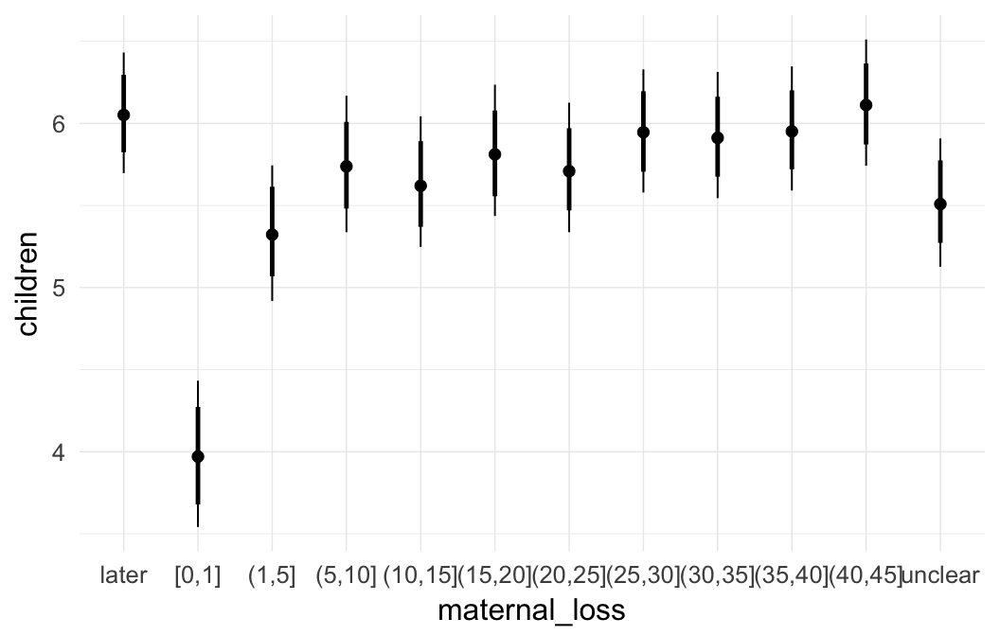
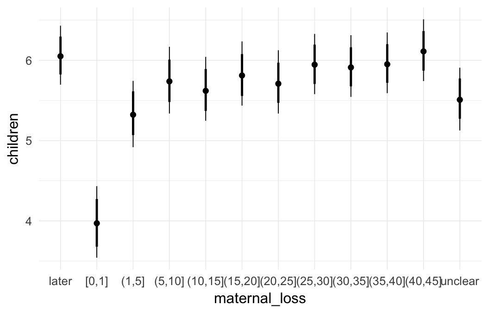
Coefficient plot
Coefficient estimates (95% and 80% credibility).
mcmc_intervals(as.matrix(model$fit), regex_pars = "b_[^I]")
mcmc_areas(as.matrix(model$fit), regex_pars = "b")
Diagnostics
These plots were made to diagnose misfit and nonconvergence.
Posterior predictive checks
brms::pp_check(model, re_formula = NA, type = "dens_overlay")brms::pp_check(model, re_formula = NA, type = "hist")Rhat
Did the 6 chains converge?
stanplot(model, pars = "^b_[^I]", type = 'rhat')Effective sample size by average sample size
stanplot(model, pars = "^b", type = 'ess')
Monte Carlo SE
stanplot(model, pars = "^b", type = 'mcse')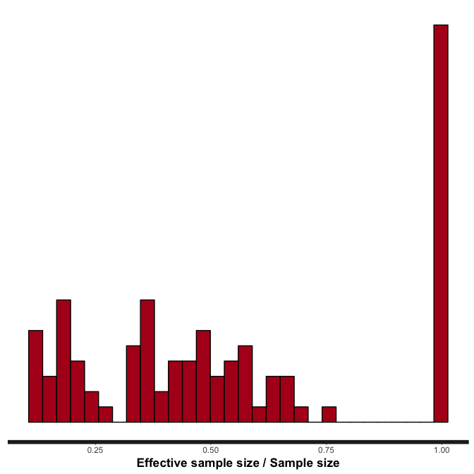
Trace plots
if(any( summary(model)$fixed[,"Rhat"] > 1.1)) { # only do traceplots if not converged
plot(model, N = 3, ask = FALSE)
}Further plots
stanplot(model, pars = "^b", type = 'diag')File name
coefs/rpqa/r15_region_moderator_parish_ranef.rds
Cluster script
opts_chunk$set(echo = FALSE)
clusterscript = str_replace(basename(model_filename), "\\.rds",".html")
cat("[Cluster script](" , clusterscript, ")", sep = "")r16: Restrict to Skellefteå
Only in the DDB (historical Swedish data), parishes in some of the regions were still unlinked. This means that individuals could occur in more than one parish and not be linked. However, the region of Skellefteå was fully linked. Here, we test what happens when we restrict our dataset to Skellefteå.
r17: Simulating Down syndrome cases
- We assume that 4 in 1000 births are children with Down syndrome (four times the actual rate).
- We randomly excluded 33% of all children who had a mother older than 40 and had no children (many times the actual rate at that age).
Model summary
Full summary
model_summary = summary(model, use_cache = FALSE, priors = TRUE)
print(model_summary)## Family: hurdle_poisson (log)
## Formula: children ~ paternalage + birth_cohort + male + maternalage.factor + paternalage.mean + paternal_loss + maternal_loss + older_siblings + nr.siblings + last_born + (1 | idParents)
## hu ~ paternalage + birth_cohort + male + maternalage.factor + paternalage.mean + paternal_loss + maternal_loss + older_siblings + nr.siblings + last_born + (1 | idParents)
## Data: model_data (Number of observations: 67848)
## Samples: 6 chains, each with iter = 800; warmup = 300; thin = 1;
## total post-warmup samples = 3000
## WAIC: Not computed
##
## Priors:
## b ~ normal(0,5)
## sd ~ student_t(3, 0, 5)
## b_hu ~ normal(0,5)
## sd_hu ~ student_t(3, 0, 10)
##
## Group-Level Effects:
## ~idParents (Number of levels: 12188)
## Estimate Est.Error l-95% CI u-95% CI Eff.Sample Rhat
## sd(Intercept) 0.27 0.00 0.27 0.28 1037 1
## sd(hu_Intercept) 0.63 0.01 0.60 0.66 1217 1
##
## Population-Level Effects:
## Estimate Est.Error l-95% CI u-95% CI Eff.Sample
## Intercept 2.12 0.03 2.06 2.17 1230
## paternalage 0.01 0.01 -0.01 0.03 1828
## birth_cohort1675M1680 0.02 0.02 -0.01 0.05 1307
## birth_cohort1680M1685 0.05 0.02 0.02 0.08 1201
## birth_cohort1685M1690 0.05 0.02 0.02 0.08 1062
## birth_cohort1690M1695 0.05 0.02 0.02 0.08 848
## birth_cohort1695M1700 0.03 0.02 0.00 0.07 789
## birth_cohort1700M1705 0.02 0.02 -0.01 0.05 788
## birth_cohort1705M1710 0.00 0.02 -0.03 0.03 747
## birth_cohort1710M1715 -0.01 0.02 -0.04 0.02 745
## birth_cohort1715M1720 -0.04 0.02 -0.07 -0.01 771
## birth_cohort1720M1725 -0.04 0.02 -0.07 -0.01 711
## birth_cohort1725M1730 -0.07 0.02 -0.10 -0.03 736
## birth_cohort1730M1735 -0.05 0.02 -0.08 -0.02 707
## birth_cohort1735M1740 -0.06 0.02 -0.09 -0.03 713
## male1 0.11 0.00 0.10 0.12 3000
## maternalage.factor1420 -0.01 0.01 -0.03 0.01 3000
## maternalage.factor3550 0.00 0.01 -0.01 0.02 3000
## paternalage.mean -0.03 0.01 -0.05 -0.01 1860
## paternal_loss01 -0.04 0.02 -0.08 0.00 2153
## paternal_loss15 -0.02 0.02 -0.05 0.01 1409
## paternal_loss510 -0.01 0.01 -0.04 0.02 1279
## paternal_loss1015 -0.02 0.01 -0.04 0.01 1147
## paternal_loss1520 -0.02 0.01 -0.05 0.00 1318
## paternal_loss2025 -0.02 0.01 -0.04 0.00 1327
## paternal_loss2530 -0.01 0.01 -0.03 0.01 1470
## paternal_loss3035 -0.02 0.01 -0.04 0.00 1646
## paternal_loss3540 -0.02 0.01 -0.04 0.00 1759
## paternal_loss4045 0.00 0.01 -0.02 0.02 3000
## paternal_lossunclear -0.05 0.01 -0.08 -0.03 1156
## maternal_loss01 -0.05 0.02 -0.10 0.00 3000
## maternal_loss15 -0.03 0.01 -0.06 0.00 2172
## maternal_loss510 0.01 0.01 -0.01 0.04 1590
## maternal_loss1015 -0.01 0.01 -0.03 0.02 1601
## maternal_loss1520 0.01 0.01 -0.02 0.03 1665
## maternal_loss2025 -0.02 0.01 -0.04 0.00 1839
## maternal_loss2530 -0.01 0.01 -0.03 0.01 2067
## maternal_loss3035 -0.01 0.01 -0.03 0.01 2277
## maternal_loss3540 0.00 0.01 -0.02 0.02 2270
## maternal_loss4045 0.00 0.01 -0.01 0.02 3000
## maternal_lossunclear -0.02 0.01 -0.04 0.00 1356
## older_siblings1 -0.02 0.01 -0.04 -0.01 3000
## older_siblings2 -0.03 0.01 -0.04 -0.01 2181
## older_siblings3 -0.03 0.01 -0.05 -0.01 1837
## older_siblings4 -0.02 0.01 -0.04 0.00 1945
## older_siblings5P -0.04 0.01 -0.06 -0.01 1897
## nr.siblings 0.01 0.00 0.00 0.01 2009
## last_born1 0.00 0.01 -0.01 0.02 3000
## hu_Intercept -0.83 0.09 -1.01 -0.65 856
## hu_paternalage 0.01 0.04 -0.07 0.09 1438
## hu_birth_cohort1675M1680 0.08 0.07 -0.06 0.21 894
## hu_birth_cohort1680M1685 0.22 0.07 0.09 0.36 832
## hu_birth_cohort1685M1690 0.34 0.07 0.21 0.48 809
## hu_birth_cohort1690M1695 0.08 0.07 -0.05 0.21 740
## hu_birth_cohort1695M1700 0.10 0.06 -0.03 0.23 676
## hu_birth_cohort1700M1705 0.26 0.06 0.13 0.38 633
## hu_birth_cohort1705M1710 0.16 0.06 0.04 0.29 579
## hu_birth_cohort1710M1715 0.43 0.06 0.32 0.56 655
## hu_birth_cohort1715M1720 0.28 0.06 0.16 0.40 607
## hu_birth_cohort1720M1725 0.30 0.06 0.19 0.42 579
## hu_birth_cohort1725M1730 0.66 0.06 0.54 0.78 586
## hu_birth_cohort1730M1735 0.73 0.06 0.61 0.84 623
## hu_birth_cohort1735M1740 0.56 0.06 0.44 0.67 575
## hu_male1 0.44 0.02 0.40 0.47 3000
## hu_maternalage.factor1420 0.03 0.04 -0.04 0.11 3000
## hu_maternalage.factor3550 -0.02 0.03 -0.08 0.04 3000
## hu_paternalage.mean -0.02 0.04 -0.11 0.07 1483
## hu_paternal_loss01 0.60 0.07 0.45 0.74 3000
## hu_paternal_loss15 0.33 0.06 0.23 0.44 2019
## hu_paternal_loss510 0.31 0.05 0.21 0.40 1536
## hu_paternal_loss1015 0.17 0.04 0.08 0.26 1478
## hu_paternal_loss1520 0.29 0.04 0.21 0.37 1468
## hu_paternal_loss2025 0.19 0.04 0.11 0.26 1520
## hu_paternal_loss2530 0.18 0.04 0.11 0.26 1402
## hu_paternal_loss3035 0.14 0.04 0.07 0.22 1489
## hu_paternal_loss3540 0.11 0.04 0.03 0.18 1810
## hu_paternal_loss4045 0.07 0.04 -0.01 0.15 3000
## hu_paternal_lossunclear 0.38 0.04 0.30 0.46 1640
## hu_maternal_loss01 1.08 0.07 0.94 1.22 3000
## hu_maternal_loss15 0.41 0.05 0.31 0.51 3000
## hu_maternal_loss510 0.28 0.04 0.19 0.36 3000
## hu_maternal_loss1015 0.25 0.04 0.17 0.34 3000
## hu_maternal_loss1520 0.19 0.04 0.10 0.27 3000
## hu_maternal_loss2025 0.17 0.04 0.09 0.24 3000
## hu_maternal_loss2530 0.04 0.04 -0.03 0.12 3000
## hu_maternal_loss3035 0.09 0.04 0.02 0.16 3000
## hu_maternal_loss3540 0.09 0.03 0.02 0.15 3000
## hu_maternal_loss4045 -0.01 0.03 -0.08 0.06 3000
## hu_maternal_lossunclear 0.23 0.04 0.15 0.30 2185
## hu_older_siblings1 -0.04 0.03 -0.10 0.01 3000
## hu_older_siblings2 -0.07 0.03 -0.14 0.00 1918
## hu_older_siblings3 -0.11 0.04 -0.19 -0.03 1622
## hu_older_siblings4 -0.11 0.04 -0.20 -0.03 1561
## hu_older_siblings5P -0.15 0.05 -0.25 -0.05 1471
## hu_nr.siblings 0.01 0.00 0.00 0.02 2096
## hu_last_born1 -0.01 0.03 -0.07 0.05 3000
## Rhat
## Intercept 1.00
## paternalage 1.00
## birth_cohort1675M1680 1.00
## birth_cohort1680M1685 1.00
## birth_cohort1685M1690 1.00
## birth_cohort1690M1695 1.00
## birth_cohort1695M1700 1.00
## birth_cohort1700M1705 1.00
## birth_cohort1705M1710 1.00
## birth_cohort1710M1715 1.00
## birth_cohort1715M1720 1.00
## birth_cohort1720M1725 1.00
## birth_cohort1725M1730 1.00
## birth_cohort1730M1735 1.00
## birth_cohort1735M1740 1.00
## male1 1.00
## maternalage.factor1420 1.00
## maternalage.factor3550 1.00
## paternalage.mean 1.00
## paternal_loss01 1.00
## paternal_loss15 1.00
## paternal_loss510 1.00
## paternal_loss1015 1.00
## paternal_loss1520 1.00
## paternal_loss2025 1.00
## paternal_loss2530 1.00
## paternal_loss3035 1.00
## paternal_loss3540 1.00
## paternal_loss4045 1.00
## paternal_lossunclear 1.00
## maternal_loss01 1.00
## maternal_loss15 1.00
## maternal_loss510 1.00
## maternal_loss1015 1.00
## maternal_loss1520 1.00
## maternal_loss2025 1.00
## maternal_loss2530 1.00
## maternal_loss3035 1.00
## maternal_loss3540 1.00
## maternal_loss4045 1.00
## maternal_lossunclear 1.00
## older_siblings1 1.00
## older_siblings2 1.00
## older_siblings3 1.00
## older_siblings4 1.00
## older_siblings5P 1.00
## nr.siblings 1.00
## last_born1 1.00
## hu_Intercept 1.01
## hu_paternalage 1.00
## hu_birth_cohort1675M1680 1.00
## hu_birth_cohort1680M1685 1.00
## hu_birth_cohort1685M1690 1.00
## hu_birth_cohort1690M1695 1.00
## hu_birth_cohort1695M1700 1.00
## hu_birth_cohort1700M1705 1.00
## hu_birth_cohort1705M1710 1.01
## hu_birth_cohort1710M1715 1.00
## hu_birth_cohort1715M1720 1.00
## hu_birth_cohort1720M1725 1.00
## hu_birth_cohort1725M1730 1.00
## hu_birth_cohort1730M1735 1.01
## hu_birth_cohort1735M1740 1.01
## hu_male1 1.00
## hu_maternalage.factor1420 1.00
## hu_maternalage.factor3550 1.00
## hu_paternalage.mean 1.00
## hu_paternal_loss01 1.00
## hu_paternal_loss15 1.00
## hu_paternal_loss510 1.00
## hu_paternal_loss1015 1.00
## hu_paternal_loss1520 1.00
## hu_paternal_loss2025 1.00
## hu_paternal_loss2530 1.00
## hu_paternal_loss3035 1.00
## hu_paternal_loss3540 1.00
## hu_paternal_loss4045 1.00
## hu_paternal_lossunclear 1.00
## hu_maternal_loss01 1.00
## hu_maternal_loss15 1.00
## hu_maternal_loss510 1.00
## hu_maternal_loss1015 1.00
## hu_maternal_loss1520 1.00
## hu_maternal_loss2025 1.00
## hu_maternal_loss2530 1.00
## hu_maternal_loss3035 1.00
## hu_maternal_loss3540 1.00
## hu_maternal_loss4045 1.00
## hu_maternal_lossunclear 1.00
## hu_older_siblings1 1.00
## hu_older_siblings2 1.00
## hu_older_siblings3 1.00
## hu_older_siblings4 1.00
## hu_older_siblings5P 1.00
## hu_nr.siblings 1.00
## hu_last_born1 1.00
##
## Samples were drawn using sampling(NUTS). For each parameter, Eff.Sample
## is a crude measure of effective sample size, and Rhat is the potential
## scale reduction factor on split chains (at convergence, Rhat = 1).Table of fixed effects
fixed_eff = data.frame(model_summary$fixed, check.names = F)
fixed_eff$Est.Error = fixed_eff$Eff.Sample = fixed_eff$Rhat = NULL
fixed_eff$OR = exp(fixed_eff$Estimate)
fixed_eff$OR_low = exp(fixed_eff$`l-95% CI`)
fixed_eff$OR_high = exp(fixed_eff$`u-95% CI`)
pander::pander(fixed_eff)| Estimate | l-95% CI | u-95% CI | OR | OR_low | OR_high | |
|---|---|---|---|---|---|---|
| Intercept | 2.117 | 2.063 | 2.168 | 8.304 | 7.866 | 8.741 |
| paternalage | 0.01129 | -0.01078 | 0.03188 | 1.011 | 0.9893 | 1.032 |
| birth_cohort1675M1680 | 0.02065 | -0.008957 | 0.05047 | 1.021 | 0.9911 | 1.052 |
| birth_cohort1680M1685 | 0.04753 | 0.01693 | 0.07835 | 1.049 | 1.017 | 1.081 |
| birth_cohort1685M1690 | 0.05042 | 0.0193 | 0.08253 | 1.052 | 1.019 | 1.086 |
| birth_cohort1690M1695 | 0.04779 | 0.01691 | 0.07947 | 1.049 | 1.017 | 1.083 |
| birth_cohort1695M1700 | 0.03498 | 0.004529 | 0.06746 | 1.036 | 1.005 | 1.07 |
| birth_cohort1700M1705 | 0.02119 | -0.00961 | 0.05156 | 1.021 | 0.9904 | 1.053 |
| birth_cohort1705M1710 | -0.001825 | -0.03319 | 0.03018 | 0.9982 | 0.9674 | 1.031 |
| birth_cohort1710M1715 | -0.01239 | -0.04247 | 0.02031 | 0.9877 | 0.9584 | 1.021 |
| birth_cohort1715M1720 | -0.0403 | -0.0704 | -0.01015 | 0.9605 | 0.932 | 0.9899 |
| birth_cohort1720M1725 | -0.04246 | -0.07302 | -0.01187 | 0.9584 | 0.9296 | 0.9882 |
| birth_cohort1725M1730 | -0.06608 | -0.09626 | -0.03495 | 0.9361 | 0.9082 | 0.9657 |
| birth_cohort1730M1735 | -0.0495 | -0.07942 | -0.01819 | 0.9517 | 0.9237 | 0.982 |
| birth_cohort1735M1740 | -0.06063 | -0.09073 | -0.03022 | 0.9412 | 0.9133 | 0.9702 |
| male1 | 0.1111 | 0.1026 | 0.1198 | 1.117 | 1.108 | 1.127 |
| maternalage.factor1420 | -0.008235 | -0.02654 | 0.01135 | 0.9918 | 0.9738 | 1.011 |
| maternalage.factor3550 | 0.00131 | -0.01434 | 0.01794 | 1.001 | 0.9858 | 1.018 |
| paternalage.mean | -0.03021 | -0.05338 | -0.006522 | 0.9702 | 0.948 | 0.9935 |
| paternal_loss01 | -0.03756 | -0.07867 | 0.002655 | 0.9631 | 0.9243 | 1.003 |
| paternal_loss15 | -0.0167 | -0.04891 | 0.01478 | 0.9834 | 0.9523 | 1.015 |
| paternal_loss510 | -0.009208 | -0.03845 | 0.01894 | 0.9908 | 0.9623 | 1.019 |
| paternal_loss1015 | -0.01547 | -0.04114 | 0.01039 | 0.9847 | 0.9597 | 1.01 |
| paternal_loss1520 | -0.0238 | -0.04789 | 0.000374 | 0.9765 | 0.9532 | 1 |
| paternal_loss2025 | -0.02236 | -0.04444 | -0.0001506 | 0.9779 | 0.9565 | 0.9998 |
| paternal_loss2530 | -0.01243 | -0.03312 | 0.007596 | 0.9876 | 0.9674 | 1.008 |
| paternal_loss3035 | -0.02244 | -0.04264 | -0.003055 | 0.9778 | 0.9583 | 0.9969 |
| paternal_loss3540 | -0.02191 | -0.04035 | -0.002235 | 0.9783 | 0.9605 | 0.9978 |
| paternal_loss4045 | -0.00313 | -0.02268 | 0.01627 | 0.9969 | 0.9776 | 1.016 |
| paternal_lossunclear | -0.05353 | -0.0779 | -0.0285 | 0.9479 | 0.9251 | 0.9719 |
| maternal_loss01 | -0.05188 | -0.09981 | -0.004897 | 0.9494 | 0.905 | 0.9951 |
| maternal_loss15 | -0.02788 | -0.05685 | 0.000235 | 0.9725 | 0.9447 | 1 |
| maternal_loss510 | 0.01157 | -0.01396 | 0.03796 | 1.012 | 0.9861 | 1.039 |
| maternal_loss1015 | -0.008389 | -0.03253 | 0.01593 | 0.9916 | 0.968 | 1.016 |
| maternal_loss1520 | 0.005818 | -0.01831 | 0.03034 | 1.006 | 0.9819 | 1.031 |
| maternal_loss2025 | -0.01973 | -0.04341 | 0.003444 | 0.9805 | 0.9575 | 1.003 |
| maternal_loss2530 | -0.01323 | -0.03443 | 0.007424 | 0.9869 | 0.9662 | 1.007 |
| maternal_loss3035 | -0.008343 | -0.02681 | 0.01085 | 0.9917 | 0.9735 | 1.011 |
| maternal_loss3540 | 0.000689 | -0.01641 | 0.01768 | 1.001 | 0.9837 | 1.018 |
| maternal_loss4045 | 0.003817 | -0.01288 | 0.02047 | 1.004 | 0.9872 | 1.021 |
| maternal_lossunclear | -0.01976 | -0.04457 | 0.004848 | 0.9804 | 0.9564 | 1.005 |
| older_siblings1 | -0.02183 | -0.03776 | -0.006617 | 0.9784 | 0.9629 | 0.9934 |
| older_siblings2 | -0.02587 | -0.04335 | -0.008504 | 0.9745 | 0.9576 | 0.9915 |
| older_siblings3 | -0.03397 | -0.05439 | -0.01386 | 0.9666 | 0.9471 | 0.9862 |
| older_siblings4 | -0.02261 | -0.04497 | 8.759e-05 | 0.9776 | 0.956 | 1 |
| older_siblings5P | -0.03818 | -0.06479 | -0.01116 | 0.9625 | 0.9373 | 0.9889 |
| nr.siblings | 0.007315 | 0.004805 | 0.009779 | 1.007 | 1.005 | 1.01 |
| last_born1 | 0.001509 | -0.01271 | 0.01619 | 1.002 | 0.9874 | 1.016 |
| hu_Intercept | -0.8277 | -1.013 | -0.6457 | 0.437 | 0.3631 | 0.5243 |
| hu_paternalage | 0.00544 | -0.07376 | 0.08683 | 1.005 | 0.9289 | 1.091 |
| hu_birth_cohort1675M1680 | 0.07625 | -0.05953 | 0.213 | 1.079 | 0.9422 | 1.237 |
| hu_birth_cohort1680M1685 | 0.2227 | 0.08828 | 0.3583 | 1.25 | 1.092 | 1.431 |
| hu_birth_cohort1685M1690 | 0.341 | 0.2051 | 0.478 | 1.406 | 1.228 | 1.613 |
| hu_birth_cohort1690M1695 | 0.0827 | -0.05006 | 0.2136 | 1.086 | 0.9512 | 1.238 |
| hu_birth_cohort1695M1700 | 0.09743 | -0.028 | 0.2255 | 1.102 | 0.9724 | 1.253 |
| hu_birth_cohort1700M1705 | 0.258 | 0.1345 | 0.3837 | 1.294 | 1.144 | 1.468 |
| hu_birth_cohort1705M1710 | 0.1622 | 0.03902 | 0.2889 | 1.176 | 1.04 | 1.335 |
| hu_birth_cohort1710M1715 | 0.4326 | 0.3154 | 0.555 | 1.541 | 1.371 | 1.742 |
| hu_birth_cohort1715M1720 | 0.2818 | 0.1602 | 0.4035 | 1.326 | 1.174 | 1.497 |
| hu_birth_cohort1720M1725 | 0.3024 | 0.1865 | 0.4196 | 1.353 | 1.205 | 1.521 |
| hu_birth_cohort1725M1730 | 0.6592 | 0.5383 | 0.7763 | 1.933 | 1.713 | 2.173 |
| hu_birth_cohort1730M1735 | 0.7254 | 0.6091 | 0.84 | 2.066 | 1.839 | 2.316 |
| hu_birth_cohort1735M1740 | 0.558 | 0.4449 | 0.6703 | 1.747 | 1.56 | 1.955 |
| hu_male1 | 0.4353 | 0.4042 | 0.4664 | 1.545 | 1.498 | 1.594 |
| hu_maternalage.factor1420 | 0.03233 | -0.04195 | 0.1101 | 1.033 | 0.9589 | 1.116 |
| hu_maternalage.factor3550 | -0.01945 | -0.07775 | 0.04008 | 0.9807 | 0.9252 | 1.041 |
| hu_paternalage.mean | -0.02205 | -0.1079 | 0.06551 | 0.9782 | 0.8977 | 1.068 |
| hu_paternal_loss01 | 0.5966 | 0.4498 | 0.7407 | 1.816 | 1.568 | 2.097 |
| hu_paternal_loss15 | 0.334 | 0.2254 | 0.4434 | 1.397 | 1.253 | 1.558 |
| hu_paternal_loss510 | 0.3077 | 0.2113 | 0.4003 | 1.36 | 1.235 | 1.492 |
| hu_paternal_loss1015 | 0.1717 | 0.08193 | 0.2561 | 1.187 | 1.085 | 1.292 |
| hu_paternal_loss1520 | 0.2891 | 0.2089 | 0.3725 | 1.335 | 1.232 | 1.451 |
| hu_paternal_loss2025 | 0.1863 | 0.109 | 0.2646 | 1.205 | 1.115 | 1.303 |
| hu_paternal_loss2530 | 0.1844 | 0.106 | 0.2596 | 1.203 | 1.112 | 1.296 |
| hu_paternal_loss3035 | 0.144 | 0.06915 | 0.2169 | 1.155 | 1.072 | 1.242 |
| hu_paternal_loss3540 | 0.1098 | 0.03393 | 0.1817 | 1.116 | 1.035 | 1.199 |
| hu_paternal_loss4045 | 0.07414 | -0.006019 | 0.1522 | 1.077 | 0.994 | 1.164 |
| hu_paternal_lossunclear | 0.3793 | 0.3017 | 0.4592 | 1.461 | 1.352 | 1.583 |
| hu_maternal_loss01 | 1.08 | 0.9371 | 1.225 | 2.944 | 2.553 | 3.403 |
| hu_maternal_loss15 | 0.4111 | 0.3147 | 0.5088 | 1.508 | 1.37 | 1.663 |
| hu_maternal_loss510 | 0.2787 | 0.1905 | 0.3642 | 1.321 | 1.21 | 1.439 |
| hu_maternal_loss1015 | 0.25 | 0.1654 | 0.3376 | 1.284 | 1.18 | 1.402 |
| hu_maternal_loss1520 | 0.1901 | 0.1045 | 0.2701 | 1.209 | 1.11 | 1.31 |
| hu_maternal_loss2025 | 0.166 | 0.08803 | 0.2443 | 1.181 | 1.092 | 1.277 |
| hu_maternal_loss2530 | 0.04383 | -0.03484 | 0.1205 | 1.045 | 0.9658 | 1.128 |
| hu_maternal_loss3035 | 0.08956 | 0.01929 | 0.1601 | 1.094 | 1.019 | 1.174 |
| hu_maternal_loss3540 | 0.08905 | 0.02391 | 0.1529 | 1.093 | 1.024 | 1.165 |
| hu_maternal_loss4045 | -0.00814 | -0.07559 | 0.06041 | 0.9919 | 0.9272 | 1.062 |
| hu_maternal_lossunclear | 0.2254 | 0.1488 | 0.2996 | 1.253 | 1.16 | 1.349 |
| hu_older_siblings1 | -0.04498 | -0.1048 | 0.01475 | 0.956 | 0.9005 | 1.015 |
| hu_older_siblings2 | -0.072 | -0.1393 | -0.004163 | 0.9305 | 0.87 | 0.9958 |
| hu_older_siblings3 | -0.1077 | -0.1857 | -0.02965 | 0.8979 | 0.8305 | 0.9708 |
| hu_older_siblings4 | -0.1109 | -0.1969 | -0.0266 | 0.895 | 0.8212 | 0.9737 |
| hu_older_siblings5P | -0.1482 | -0.2529 | -0.04564 | 0.8623 | 0.7766 | 0.9554 |
| hu_nr.siblings | 0.01268 | 0.004661 | 0.02071 | 1.013 | 1.005 | 1.021 |
| hu_last_born1 | -0.01196 | -0.0685 | 0.04776 | 0.9881 | 0.9338 | 1.049 |
Paternal age effect
pander::pander(paternal_age_10y_effect(model))| effect | median_estimate | ci_95 | ci_80 |
|---|---|---|---|
| estimate father 25y | 5.6 | [5.32;5.89] | [5.42;5.79] |
| estimate father 35y | 5.65 | [5.32;6] | [5.45;5.87] |
| percentage change | 0.96 | [-2.48;4.45] | [-1.31;3.21] |
| OR/IRR | 1.01 | [0.99;1.03] | [1;1.02] |
| OR hurdle | 1.01 | [0.93;1.09] | [0.95;1.06] |
Marginal effect plots
plot.brmsMarginalEffects_shades(
x = marginal_effects(model, re_formula = NA, probs = c(0.025,0.975)),
y = marginal_effects(model, re_formula = NA, probs = c(0.1,0.9)),
ask = FALSE) 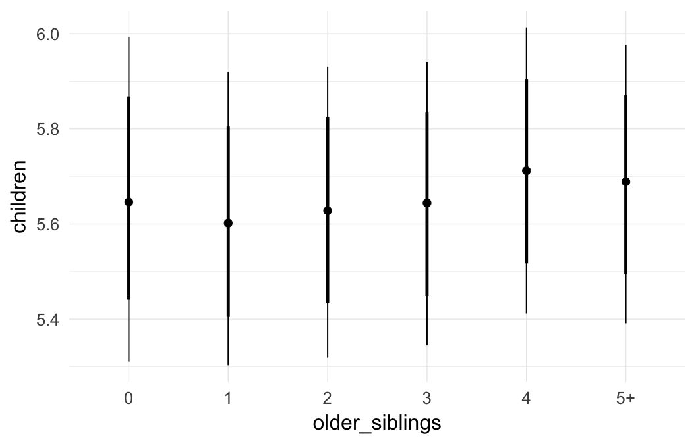
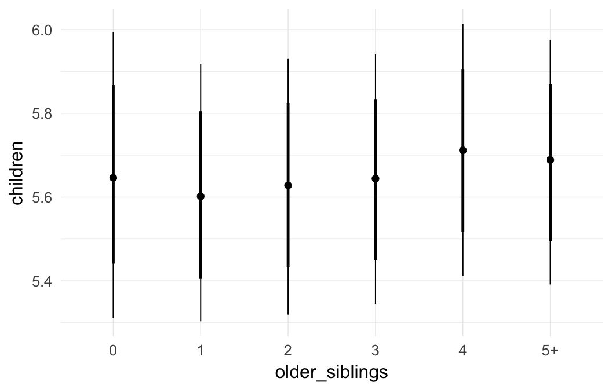
Coefficient plot
Coefficient estimates (95% and 80% credibility).
mcmc_intervals(as.matrix(model$fit), regex_pars = "b_[^I]")
mcmc_areas(as.matrix(model$fit), regex_pars = "b")Diagnostics
These plots were made to diagnose misfit and nonconvergence.
Posterior predictive checks
brms::pp_check(model, re_formula = NA, type = "dens_overlay")
brms::pp_check(model, re_formula = NA, type = "hist")Rhat
Did the 6 chains converge?
stanplot(model, pars = "^b_[^I]", type = 'rhat')Effective sample size by average sample size
stanplot(model, pars = "^b", type = 'ess')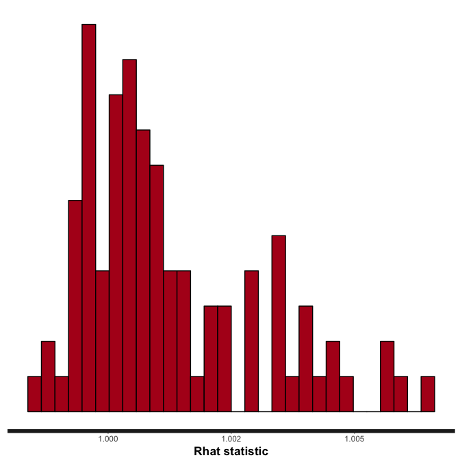
Monte Carlo SE
stanplot(model, pars = "^b", type = 'mcse')Trace plots
if(any( summary(model)$fixed[,"Rhat"] > 1.1)) { # only do traceplots if not converged
plot(model, N = 3, ask = FALSE)
}Further plots
stanplot(model, pars = "^b", type = 'diag')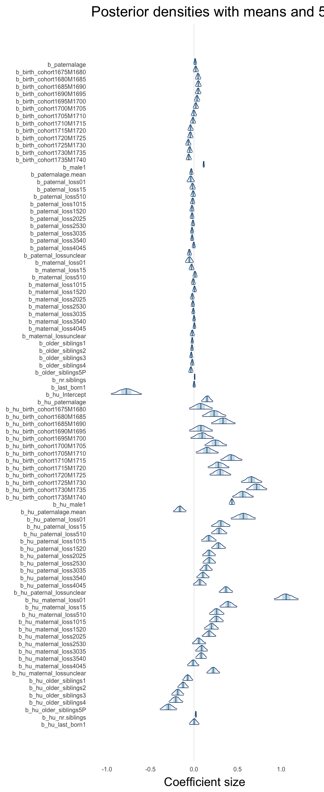
File name
coefs/rpqa/r17_simulate_downs.rds
Cluster script
opts_chunk$set(echo = FALSE)
clusterscript = str_replace(basename(model_filename), "\\.rds",".html")
cat("[Cluster script](" , clusterscript, ")", sep = "")r18: Reversing hurdle_poisson and poisson
To make models computationally feasible and because early mortality was negligible, we fit the very large modern Swedish dataset with a poisson() family distribution. All historical datasets had high early mortality, so we thought a hurdle_poisson() was more appropriate. Here, we show what happens when we reverse this. The hurdle_poisson() model can be fit to the modern Swedish data here, because we only use a subset.
Model summary
Full summary
model_summary = summary(model, use_cache = FALSE, priors = TRUE)
print(model_summary)## Family: poisson (log)
## Formula: children ~ paternalage + birth_cohort + male + maternalage.factor + paternalage.mean + paternal_loss + maternal_loss + older_siblings + nr.siblings + last_born + (1 | idParents)
## Data: model_data (Number of observations: 68724)
## Samples: 6 chains, each with iter = 800; warmup = 300; thin = 1;
## total post-warmup samples = 3000
## WAIC: Not computed
##
## Priors:
## b ~ normal(0,5)
## sd ~ student_t(3, 0, 5)
##
## Group-Level Effects:
## ~idParents (Number of levels: 12205)
## Estimate Est.Error l-95% CI u-95% CI Eff.Sample Rhat
## sd(Intercept) 0.95 0.01 0.94 0.97 424 1.01
##
## Population-Level Effects:
## Estimate Est.Error l-95% CI u-95% CI Eff.Sample
## Intercept 1.33 0.06 1.22 1.45 149
## paternalage -0.03 0.01 -0.05 0.00 340
## birth_cohort1675M1680 0.00 0.02 -0.04 0.03 381
## birth_cohort1680M1685 -0.05 0.02 -0.08 -0.01 207
## birth_cohort1685M1690 -0.11 0.02 -0.15 -0.07 166
## birth_cohort1690M1695 0.01 0.02 -0.03 0.06 134
## birth_cohort1695M1700 0.00 0.02 -0.05 0.04 115
## birth_cohort1700M1705 -0.10 0.02 -0.14 -0.05 101
## birth_cohort1705M1710 -0.08 0.03 -0.13 -0.03 95
## birth_cohort1710M1715 -0.23 0.03 -0.28 -0.17 91
## birth_cohort1715M1720 -0.19 0.03 -0.24 -0.13 88
## birth_cohort1720M1725 -0.21 0.03 -0.27 -0.15 87
## birth_cohort1725M1730 -0.43 0.03 -0.49 -0.37 87
## birth_cohort1730M1735 -0.46 0.03 -0.52 -0.40 85
## birth_cohort1735M1740 -0.43 0.03 -0.50 -0.37 83
## male1 -0.09 0.00 -0.10 -0.08 3000
## maternalage.factor1420 -0.07 0.01 -0.09 -0.05 3000
## maternalage.factor3550 -0.02 0.01 -0.04 -0.01 2228
## paternalage.mean 0.01 0.02 -0.02 0.05 190
## paternal_loss01 -0.34 0.03 -0.40 -0.28 240
## paternal_loss15 -0.16 0.03 -0.21 -0.11 219
## paternal_loss510 -0.11 0.02 -0.16 -0.07 214
## paternal_loss1015 -0.06 0.02 -0.10 -0.02 206
## paternal_loss1520 -0.12 0.02 -0.16 -0.08 224
## paternal_loss2025 -0.07 0.02 -0.10 -0.03 227
## paternal_loss2530 -0.06 0.02 -0.09 -0.03 259
## paternal_loss3035 -0.07 0.01 -0.09 -0.04 286
## paternal_loss3540 -0.06 0.01 -0.08 -0.03 386
## paternal_loss4045 -0.04 0.01 -0.06 -0.02 832
## paternal_lossunclear -0.32 0.03 -0.38 -0.26 227
## maternal_loss01 -0.66 0.03 -0.72 -0.60 341
## maternal_loss15 -0.21 0.02 -0.26 -0.16 237
## maternal_loss510 -0.06 0.02 -0.11 -0.02 211
## maternal_loss1015 -0.09 0.02 -0.13 -0.05 261
## maternal_loss1520 -0.06 0.02 -0.09 -0.02 265
## maternal_loss2025 -0.06 0.02 -0.09 -0.03 406
## maternal_loss2530 0.00 0.01 -0.03 0.03 361
## maternal_loss3035 -0.01 0.01 -0.04 0.01 529
## maternal_loss3540 -0.01 0.01 -0.02 0.01 645
## maternal_loss4045 0.03 0.01 0.02 0.05 1347
## maternal_lossunclear -0.20 0.03 -0.26 -0.14 225
## older_siblings1 0.02 0.01 0.00 0.03 3000
## older_siblings2 0.04 0.01 0.02 0.05 2013
## older_siblings3 0.05 0.01 0.03 0.07 1746
## older_siblings4 0.07 0.01 0.05 0.09 1605
## older_siblings5P 0.08 0.01 0.06 0.11 1490
## nr.siblings 0.02 0.00 0.02 0.03 166
## last_born1 0.01 0.01 0.00 0.02 3000
## Rhat
## Intercept 1.04
## paternalage 1.01
## birth_cohort1675M1680 1.01
## birth_cohort1680M1685 1.02
## birth_cohort1685M1690 1.03
## birth_cohort1690M1695 1.03
## birth_cohort1695M1700 1.03
## birth_cohort1700M1705 1.04
## birth_cohort1705M1710 1.04
## birth_cohort1710M1715 1.04
## birth_cohort1715M1720 1.04
## birth_cohort1720M1725 1.04
## birth_cohort1725M1730 1.04
## birth_cohort1730M1735 1.04
## birth_cohort1735M1740 1.04
## male1 1.00
## maternalage.factor1420 1.00
## maternalage.factor3550 1.00
## paternalage.mean 1.03
## paternal_loss01 1.02
## paternal_loss15 1.02
## paternal_loss510 1.02
## paternal_loss1015 1.02
## paternal_loss1520 1.02
## paternal_loss2025 1.01
## paternal_loss2530 1.02
## paternal_loss3035 1.01
## paternal_loss3540 1.01
## paternal_loss4045 1.00
## paternal_lossunclear 1.02
## maternal_loss01 1.02
## maternal_loss15 1.03
## maternal_loss510 1.03
## maternal_loss1015 1.02
## maternal_loss1520 1.02
## maternal_loss2025 1.02
## maternal_loss2530 1.02
## maternal_loss3035 1.01
## maternal_loss3540 1.01
## maternal_loss4045 1.00
## maternal_lossunclear 1.03
## older_siblings1 1.00
## older_siblings2 1.00
## older_siblings3 1.00
## older_siblings4 1.00
## older_siblings5P 1.00
## nr.siblings 1.01
## last_born1 1.00
##
## Samples were drawn using sampling(NUTS). For each parameter, Eff.Sample
## is a crude measure of effective sample size, and Rhat is the potential
## scale reduction factor on split chains (at convergence, Rhat = 1).Table of fixed effects
fixed_eff = data.frame(model_summary$fixed, check.names = F)
fixed_eff$Est.Error = fixed_eff$Eff.Sample = fixed_eff$Rhat = NULL
fixed_eff$OR = exp(fixed_eff$Estimate)
fixed_eff$OR_low = exp(fixed_eff$`l-95% CI`)
fixed_eff$OR_high = exp(fixed_eff$`u-95% CI`)
pander::pander(fixed_eff)| Estimate | l-95% CI | u-95% CI | OR | OR_low | OR_high | |
|---|---|---|---|---|---|---|
| Intercept | 1.335 | 1.223 | 1.451 | 3.8 | 3.397 | 4.267 |
| paternalage | -0.02622 | -0.0519 | 6.478e-05 | 0.9741 | 0.9494 | 1 |
| birth_cohort1675M1680 | -0.00321 | -0.03611 | 0.0301 | 0.9968 | 0.9645 | 1.031 |
| birth_cohort1680M1685 | -0.04706 | -0.08149 | -0.01169 | 0.954 | 0.9217 | 0.9884 |
| birth_cohort1685M1690 | -0.1093 | -0.1479 | -0.07051 | 0.8964 | 0.8625 | 0.9319 |
| birth_cohort1690M1695 | 0.01425 | -0.02727 | 0.0566 | 1.014 | 0.9731 | 1.058 |
| birth_cohort1695M1700 | -0.001034 | -0.04564 | 0.04411 | 0.999 | 0.9554 | 1.045 |
| birth_cohort1700M1705 | -0.09577 | -0.1437 | -0.04822 | 0.9087 | 0.8661 | 0.9529 |
| birth_cohort1705M1710 | -0.08303 | -0.1339 | -0.03322 | 0.9203 | 0.8746 | 0.9673 |
| birth_cohort1710M1715 | -0.2252 | -0.279 | -0.1734 | 0.7984 | 0.7566 | 0.8408 |
| birth_cohort1715M1720 | -0.1853 | -0.2417 | -0.1309 | 0.8308 | 0.7853 | 0.8773 |
| birth_cohort1720M1725 | -0.2077 | -0.2665 | -0.1497 | 0.8124 | 0.7661 | 0.861 |
| birth_cohort1725M1730 | -0.4271 | -0.4886 | -0.3682 | 0.6524 | 0.6135 | 0.692 |
| birth_cohort1730M1735 | -0.4598 | -0.5244 | -0.3969 | 0.6314 | 0.5919 | 0.6724 |
| birth_cohort1735M1740 | -0.4333 | -0.5012 | -0.3677 | 0.6483 | 0.6058 | 0.6923 |
| male1 | -0.08839 | -0.09685 | -0.08029 | 0.9154 | 0.9077 | 0.9229 |
| maternalage.factor1420 | -0.07164 | -0.09132 | -0.05133 | 0.9309 | 0.9127 | 0.95 |
| maternalage.factor3550 | -0.0221 | -0.0395 | -0.005421 | 0.9781 | 0.9613 | 0.9946 |
| paternalage.mean | 0.01424 | -0.02242 | 0.05111 | 1.014 | 0.9778 | 1.052 |
| paternal_loss01 | -0.3378 | -0.4013 | -0.2755 | 0.7133 | 0.6694 | 0.7592 |
| paternal_loss15 | -0.1606 | -0.2143 | -0.1077 | 0.8516 | 0.8071 | 0.8979 |
| paternal_loss510 | -0.1137 | -0.1627 | -0.0653 | 0.8925 | 0.8498 | 0.9368 |
| paternal_loss1015 | -0.05973 | -0.1044 | -0.01686 | 0.942 | 0.9009 | 0.9833 |
| paternal_loss1520 | -0.119 | -0.1584 | -0.08083 | 0.8878 | 0.8535 | 0.9223 |
| paternal_loss2025 | -0.06632 | -0.1005 | -0.03227 | 0.9358 | 0.9044 | 0.9682 |
| paternal_loss2530 | -0.05621 | -0.0862 | -0.02649 | 0.9453 | 0.9174 | 0.9739 |
| paternal_loss3035 | -0.06577 | -0.09246 | -0.03986 | 0.9363 | 0.9117 | 0.9609 |
| paternal_loss3540 | -0.05649 | -0.07878 | -0.03409 | 0.9451 | 0.9242 | 0.9665 |
| paternal_loss4045 | -0.03626 | -0.05722 | -0.01623 | 0.9644 | 0.9444 | 0.9839 |
| paternal_lossunclear | -0.3202 | -0.3794 | -0.2587 | 0.726 | 0.6843 | 0.7721 |
| maternal_loss01 | -0.6594 | -0.7209 | -0.6 | 0.5171 | 0.4863 | 0.5488 |
| maternal_loss15 | -0.2083 | -0.2565 | -0.1594 | 0.812 | 0.7738 | 0.8527 |
| maternal_loss510 | -0.06492 | -0.1066 | -0.02277 | 0.9371 | 0.8989 | 0.9775 |
| maternal_loss1015 | -0.0914 | -0.1288 | -0.0529 | 0.9127 | 0.8792 | 0.9485 |
| maternal_loss1520 | -0.0553 | -0.0885 | -0.02051 | 0.9462 | 0.9153 | 0.9797 |
| maternal_loss2025 | -0.06252 | -0.09289 | -0.03064 | 0.9394 | 0.9113 | 0.9698 |
| maternal_loss2530 | 0.0006219 | -0.02625 | 0.02804 | 1.001 | 0.9741 | 1.028 |
| maternal_loss3035 | -0.01494 | -0.038 | 0.008547 | 0.9852 | 0.9627 | 1.009 |
| maternal_loss3540 | -0.005789 | -0.02497 | 0.01414 | 0.9942 | 0.9753 | 1.014 |
| maternal_loss4045 | 0.03405 | 0.01655 | 0.05246 | 1.035 | 1.017 | 1.054 |
| maternal_lossunclear | -0.2007 | -0.2619 | -0.1408 | 0.8181 | 0.7696 | 0.8686 |
| older_siblings1 | 0.01507 | 0.001228 | 0.02973 | 1.015 | 1.001 | 1.03 |
| older_siblings2 | 0.03564 | 0.0191 | 0.05226 | 1.036 | 1.019 | 1.054 |
| older_siblings3 | 0.05058 | 0.03133 | 0.07003 | 1.052 | 1.032 | 1.073 |
| older_siblings4 | 0.06999 | 0.04711 | 0.09231 | 1.072 | 1.048 | 1.097 |
| older_siblings5P | 0.08465 | 0.05678 | 0.1095 | 1.088 | 1.058 | 1.116 |
| nr.siblings | 0.0247 | 0.01946 | 0.03007 | 1.025 | 1.02 | 1.031 |
| last_born1 | 0.009716 | -0.004682 | 0.02392 | 1.01 | 0.9953 | 1.024 |
Paternal age effect
pander::pander(paternal_age_10y_effect(model))| effect | median_estimate | ci_95 | ci_80 |
|---|---|---|---|
| estimate father 25y | 4.68 | [4.43;4.96] | [4.51;4.86] |
| estimate father 35y | 4.56 | [4.27;4.89] | [4.36;4.77] |
| percentage change | -2.61 | [-5.06;0.01] | [-4.22;-0.92] |
| OR/IRR | 0.97 | [0.95;1] | [0.96;0.99] |
Marginal effect plots
plot.brmsMarginalEffects_shades(
x = marginal_effects(model, re_formula = NA, probs = c(0.025,0.975)),
y = marginal_effects(model, re_formula = NA, probs = c(0.1,0.9)),
ask = FALSE) 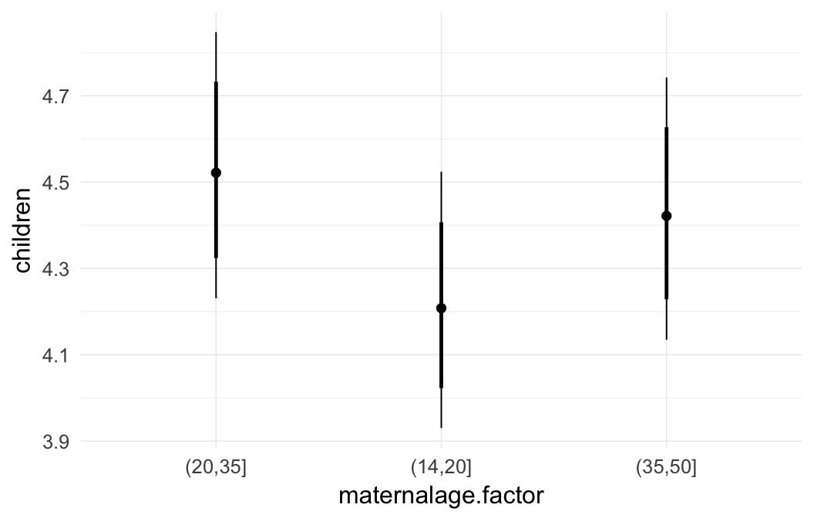
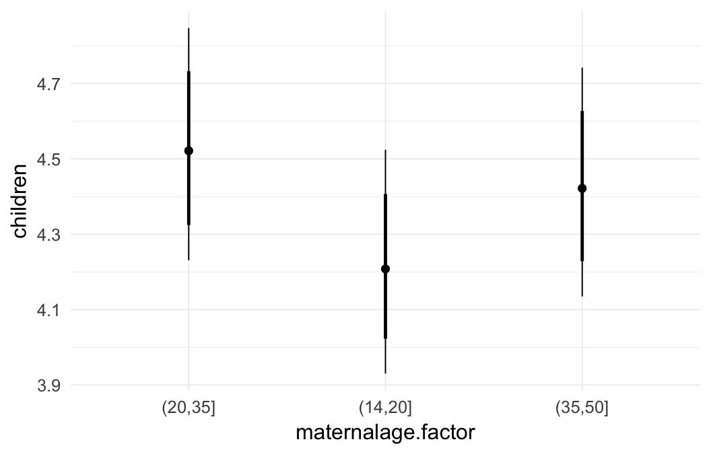
Coefficient plot
Coefficient estimates (95% and 80% credibility).
mcmc_intervals(as.matrix(model$fit), regex_pars = "b_[^I]")
mcmc_areas(as.matrix(model$fit), regex_pars = "b")Diagnostics
These plots were made to diagnose misfit and nonconvergence.
Posterior predictive checks
brms::pp_check(model, re_formula = NA, type = "dens_overlay")brms::pp_check(model, re_formula = NA, type = "hist")Rhat
Did the 6 chains converge?
stanplot(model, pars = "^b_[^I]", type = 'rhat')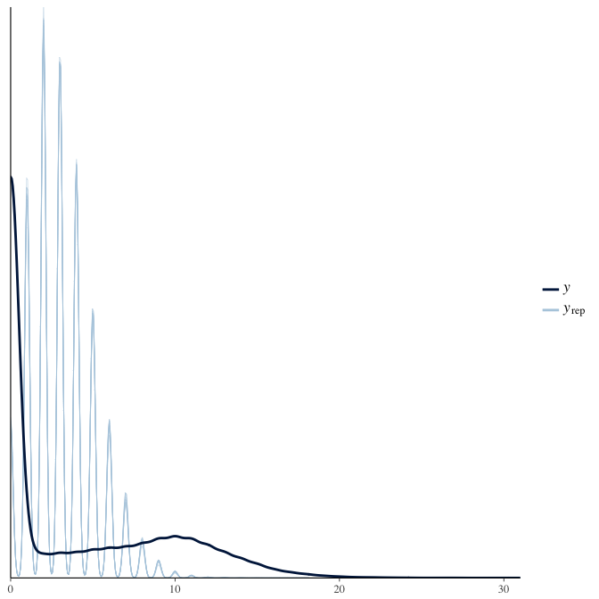
Effective sample size by average sample size
stanplot(model, pars = "^b", type = 'ess')
Monte Carlo SE
stanplot(model, pars = "^b", type = 'mcse')
Trace plots
if(any( summary(model)$fixed[,"Rhat"] > 1.1)) { # only do traceplots if not converged
plot(model, N = 3, ask = FALSE)
}Further plots
stanplot(model, pars = "^b", type = 'diag')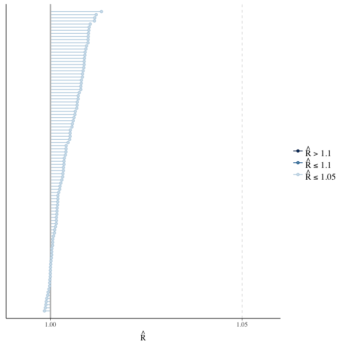
File name
coefs/rpqa/r18_hurdle_poisson.rds
Cluster script
opts_chunk$set(echo = FALSE)
clusterscript = str_replace(basename(model_filename), "\\.rds",".html")
cat("[Cluster script](" , clusterscript, ")", sep = "")r19: Normal distribution
Previous analysts sometimes decided to use the normal distribution to predict (potentially zero-inflated) count data. Here, we refit our models using a normal distribution for the outcome. We show that estimates for the paternal age effect can be estimated to have a substantially different magnitude, because of this, but did not change direction.
Model summary
Full summary
model_summary = summary(model, use_cache = FALSE, priors = TRUE)
print(model_summary)## Family: gaussian (identity)
## Formula: children ~ paternalage + birth_cohort + male + maternalage.factor + paternalage.mean + paternal_loss + maternal_loss + older_siblings + nr.siblings + last_born + (1 | idParents)
## Data: model_data (Number of observations: 68724)
## Samples: 6 chains, each with iter = 800; warmup = 300; thin = 1;
## total post-warmup samples = 3000
## WAIC: Not computed
##
## Priors:
## b ~ normal(0,5)
## sd ~ student_t(3, 0, 5)
## sigma ~ student_t(3, 0, 10)
##
## Group-Level Effects:
## ~idParents (Number of levels: 12205)
## Estimate Est.Error l-95% CI u-95% CI Eff.Sample Rhat
## sd(Intercept) 1.51 0.03 1.45 1.56 945 1
##
## Population-Level Effects:
## Estimate Est.Error l-95% CI u-95% CI Eff.Sample
## Intercept 5.75 0.21 5.34 6.17 622
## paternalage -0.25 0.09 -0.43 -0.06 1132
## birth_cohort1675M1680 -0.03 0.16 -0.35 0.29 691
## birth_cohort1680M1685 -0.23 0.16 -0.53 0.08 666
## birth_cohort1685M1690 -0.43 0.16 -0.75 -0.13 640
## birth_cohort1690M1695 0.08 0.16 -0.22 0.39 610
## birth_cohort1695M1700 0.01 0.15 -0.28 0.32 528
## birth_cohort1700M1705 -0.37 0.15 -0.66 -0.09 463
## birth_cohort1705M1710 -0.26 0.15 -0.54 0.03 456
## birth_cohort1710M1715 -0.83 0.14 -1.10 -0.54 469
## birth_cohort1715M1720 -0.68 0.14 -0.95 -0.39 447
## birth_cohort1720M1725 -0.72 0.14 -0.98 -0.44 431
## birth_cohort1725M1730 -1.47 0.14 -1.72 -1.19 426
## birth_cohort1730M1735 -1.51 0.13 -1.76 -1.24 423
## birth_cohort1735M1740 -1.25 0.13 -1.50 -0.98 423
## male1 -0.37 0.04 -0.45 -0.30 3000
## maternalage.factor1420 -0.13 0.09 -0.31 0.04 3000
## maternalage.factor3550 -0.04 0.07 -0.17 0.09 2208
## paternalage.mean 0.21 0.10 0.01 0.40 1036
## paternal_loss01 -1.13 0.16 -1.46 -0.82 1668
## paternal_loss15 -0.63 0.13 -0.88 -0.37 1242
## paternal_loss510 -0.57 0.11 -0.79 -0.35 1180
## paternal_loss1015 -0.40 0.11 -0.60 -0.19 1158
## paternal_loss1520 -0.63 0.10 -0.83 -0.44 1221
## paternal_loss2025 -0.42 0.09 -0.61 -0.24 1050
## paternal_loss2530 -0.38 0.09 -0.56 -0.21 1116
## paternal_loss3035 -0.37 0.09 -0.54 -0.20 1125
## paternal_loss3540 -0.29 0.09 -0.46 -0.12 1235
## paternal_loss4045 -0.15 0.09 -0.33 0.04 1609
## paternal_lossunclear -0.86 0.09 -1.05 -0.68 1098
## maternal_loss01 -1.94 0.16 -2.24 -1.62 3000
## maternal_loss15 -0.82 0.12 -1.05 -0.59 1836
## maternal_loss510 -0.47 0.10 -0.67 -0.27 2067
## maternal_loss1015 -0.53 0.10 -0.73 -0.33 2005
## maternal_loss1520 -0.38 0.10 -0.58 -0.18 1842
## maternal_loss2025 -0.42 0.10 -0.61 -0.23 2000
## maternal_loss2530 -0.18 0.09 -0.36 -0.01 1771
## maternal_loss3035 -0.22 0.08 -0.39 -0.06 1808
## maternal_loss3540 -0.17 0.08 -0.33 -0.02 1996
## maternal_loss4045 0.04 0.08 -0.12 0.19 3000
## maternal_lossunclear -0.51 0.09 -0.68 -0.33 1617
## older_siblings1 0.04 0.07 -0.10 0.19 2310
## older_siblings2 0.13 0.08 -0.03 0.28 1687
## older_siblings3 0.20 0.09 0.02 0.38 1582
## older_siblings4 0.30 0.10 0.11 0.50 1304
## older_siblings5P 0.39 0.12 0.15 0.62 1124
## nr.siblings -0.01 0.01 -0.03 0.01 1613
## last_born1 0.02 0.07 -0.11 0.15 3000
## Rhat
## Intercept 1.01
## paternalage 1.01
## birth_cohort1675M1680 1.00
## birth_cohort1680M1685 1.01
## birth_cohort1685M1690 1.01
## birth_cohort1690M1695 1.01
## birth_cohort1695M1700 1.01
## birth_cohort1700M1705 1.01
## birth_cohort1705M1710 1.01
## birth_cohort1710M1715 1.01
## birth_cohort1715M1720 1.01
## birth_cohort1720M1725 1.01
## birth_cohort1725M1730 1.01
## birth_cohort1730M1735 1.01
## birth_cohort1735M1740 1.01
## male1 1.00
## maternalage.factor1420 1.00
## maternalage.factor3550 1.00
## paternalage.mean 1.01
## paternal_loss01 1.00
## paternal_loss15 1.00
## paternal_loss510 1.01
## paternal_loss1015 1.00
## paternal_loss1520 1.00
## paternal_loss2025 1.00
## paternal_loss2530 1.00
## paternal_loss3035 1.01
## paternal_loss3540 1.00
## paternal_loss4045 1.00
## paternal_lossunclear 1.00
## maternal_loss01 1.00
## maternal_loss15 1.00
## maternal_loss510 1.00
## maternal_loss1015 1.00
## maternal_loss1520 1.00
## maternal_loss2025 1.00
## maternal_loss2530 1.00
## maternal_loss3035 1.00
## maternal_loss3540 1.00
## maternal_loss4045 1.00
## maternal_lossunclear 1.00
## older_siblings1 1.00
## older_siblings2 1.00
## older_siblings3 1.01
## older_siblings4 1.01
## older_siblings5P 1.01
## nr.siblings 1.00
## last_born1 1.00
##
## Family Specific Parameters:
## Estimate Est.Error l-95% CI u-95% CI Eff.Sample Rhat
## sigma 4.93 0.01 4.9 4.96 3000 1
##
## Samples were drawn using sampling(NUTS). For each parameter, Eff.Sample
## is a crude measure of effective sample size, and Rhat is the potential
## scale reduction factor on split chains (at convergence, Rhat = 1).Table of fixed effects
fixed_eff = data.frame(model_summary$fixed, check.names = F)
fixed_eff$Est.Error = fixed_eff$Eff.Sample = fixed_eff$Rhat = NULL
fixed_eff$OR = exp(fixed_eff$Estimate)
fixed_eff$OR_low = exp(fixed_eff$`l-95% CI`)
fixed_eff$OR_high = exp(fixed_eff$`u-95% CI`)
pander::pander(fixed_eff)| Estimate | l-95% CI | u-95% CI | OR | OR_low | OR_high | |
|---|---|---|---|---|---|---|
| Intercept | 5.754 | 5.336 | 6.169 | 315.5 | 207.6 | 477.6 |
| paternalage | -0.2502 | -0.4309 | -0.06362 | 0.7787 | 0.6499 | 0.9384 |
| birth_cohort1675M1680 | -0.03374 | -0.3469 | 0.2854 | 0.9668 | 0.7069 | 1.33 |
| birth_cohort1680M1685 | -0.2298 | -0.5346 | 0.0811 | 0.7947 | 0.5859 | 1.084 |
| birth_cohort1685M1690 | -0.4345 | -0.745 | -0.1261 | 0.6476 | 0.4747 | 0.8816 |
| birth_cohort1690M1695 | 0.07991 | -0.221 | 0.3859 | 1.083 | 0.8017 | 1.471 |
| birth_cohort1695M1700 | 0.01442 | -0.2752 | 0.3167 | 1.015 | 0.7594 | 1.373 |
| birth_cohort1700M1705 | -0.3715 | -0.6554 | -0.0856 | 0.6897 | 0.5192 | 0.918 |
| birth_cohort1705M1710 | -0.2567 | -0.5423 | 0.03463 | 0.7736 | 0.5814 | 1.035 |
| birth_cohort1710M1715 | -0.828 | -1.096 | -0.5407 | 0.4369 | 0.3343 | 0.5823 |
| birth_cohort1715M1720 | -0.6796 | -0.9487 | -0.3914 | 0.5068 | 0.3872 | 0.6761 |
| birth_cohort1720M1725 | -0.7151 | -0.9828 | -0.4426 | 0.4891 | 0.3743 | 0.6424 |
| birth_cohort1725M1730 | -1.472 | -1.724 | -1.195 | 0.2294 | 0.1783 | 0.3028 |
| birth_cohort1730M1735 | -1.505 | -1.764 | -1.235 | 0.2219 | 0.1714 | 0.2908 |
| birth_cohort1735M1740 | -1.247 | -1.499 | -0.9758 | 0.2873 | 0.2233 | 0.3769 |
| male1 | -0.3718 | -0.4462 | -0.296 | 0.6895 | 0.6401 | 0.7438 |
| maternalage.factor1420 | -0.1349 | -0.3092 | 0.04346 | 0.8738 | 0.734 | 1.044 |
| maternalage.factor3550 | -0.03565 | -0.1691 | 0.09221 | 0.965 | 0.8444 | 1.097 |
| paternalage.mean | 0.207 | 0.01418 | 0.3984 | 1.23 | 1.014 | 1.489 |
| paternal_loss01 | -1.134 | -1.455 | -0.8206 | 0.3217 | 0.2334 | 0.4402 |
| paternal_loss15 | -0.629 | -0.8791 | -0.3705 | 0.5331 | 0.4151 | 0.6904 |
| paternal_loss510 | -0.5698 | -0.79 | -0.3541 | 0.5657 | 0.4538 | 0.7018 |
| paternal_loss1015 | -0.396 | -0.5996 | -0.1876 | 0.673 | 0.549 | 0.829 |
| paternal_loss1520 | -0.6324 | -0.829 | -0.4443 | 0.5313 | 0.4365 | 0.6413 |
| paternal_loss2025 | -0.4198 | -0.6089 | -0.2403 | 0.6572 | 0.544 | 0.7864 |
| paternal_loss2530 | -0.3843 | -0.5617 | -0.2087 | 0.6809 | 0.5702 | 0.8116 |
| paternal_loss3035 | -0.37 | -0.5439 | -0.196 | 0.6907 | 0.5805 | 0.822 |
| paternal_loss3540 | -0.2907 | -0.4621 | -0.1225 | 0.7477 | 0.63 | 0.8847 |
| paternal_loss4045 | -0.1455 | -0.3328 | 0.03926 | 0.8646 | 0.7169 | 1.04 |
| paternal_lossunclear | -0.8644 | -1.054 | -0.6806 | 0.4213 | 0.3484 | 0.5063 |
| maternal_loss01 | -1.938 | -2.241 | -1.622 | 0.1439 | 0.1064 | 0.1975 |
| maternal_loss15 | -0.8242 | -1.052 | -0.5896 | 0.4386 | 0.3494 | 0.5545 |
| maternal_loss510 | -0.4725 | -0.6692 | -0.2737 | 0.6234 | 0.5121 | 0.7605 |
| maternal_loss1015 | -0.5268 | -0.7267 | -0.3336 | 0.5905 | 0.4835 | 0.7164 |
| maternal_loss1520 | -0.3819 | -0.5796 | -0.1848 | 0.6826 | 0.5601 | 0.8313 |
| maternal_loss2025 | -0.42 | -0.6101 | -0.2278 | 0.657 | 0.5433 | 0.7963 |
| maternal_loss2530 | -0.1845 | -0.3603 | -0.008008 | 0.8315 | 0.6974 | 0.992 |
| maternal_loss3035 | -0.2195 | -0.3852 | -0.05958 | 0.803 | 0.6803 | 0.9422 |
| maternal_loss3540 | -0.1735 | -0.3251 | -0.02272 | 0.8407 | 0.7225 | 0.9775 |
| maternal_loss4045 | 0.03606 | -0.1195 | 0.193 | 1.037 | 0.8874 | 1.213 |
| maternal_lossunclear | -0.5064 | -0.6785 | -0.3287 | 0.6026 | 0.5074 | 0.7198 |
| older_siblings1 | 0.03998 | -0.09664 | 0.1877 | 1.041 | 0.9079 | 1.206 |
| older_siblings2 | 0.1277 | -0.02545 | 0.2825 | 1.136 | 0.9749 | 1.326 |
| older_siblings3 | 0.1968 | 0.02413 | 0.3755 | 1.218 | 1.024 | 1.456 |
| older_siblings4 | 0.3014 | 0.1068 | 0.4987 | 1.352 | 1.113 | 1.647 |
| older_siblings5P | 0.3915 | 0.1513 | 0.6249 | 1.479 | 1.163 | 1.868 |
| nr.siblings | -0.007372 | -0.02531 | 0.0108 | 0.9927 | 0.975 | 1.011 |
| last_born1 | 0.01954 | -0.1102 | 0.1482 | 1.02 | 0.8957 | 1.16 |
Paternal age effect
pander::pander(paternal_age_10y_effect(model))| effect | median_estimate | ci_95 | ci_80 |
|---|---|---|---|
| estimate father 25y | 5.83 | [5.52;6.1] | [5.63;6.01] |
| estimate father 35y | 5.58 | [5.24;5.88] | [5.36;5.78] |
| percentage change | -4.32 | [-7.39;-1.11] | [-6.29;-2.25] |
| OR/IRR | 0.78 | [0.65;0.94] | [0.69;0.88] |
Marginal effect plots
plot.brmsMarginalEffects_shades(
x = marginal_effects(model, re_formula = NA, probs = c(0.025,0.975)),
y = marginal_effects(model, re_formula = NA, probs = c(0.1,0.9)),
ask = FALSE) 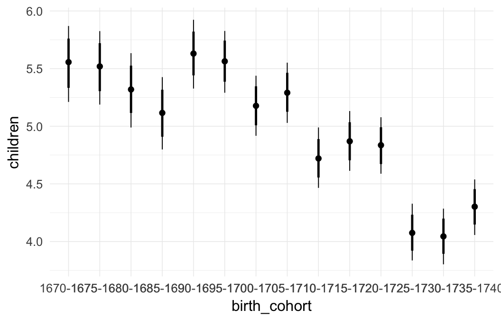
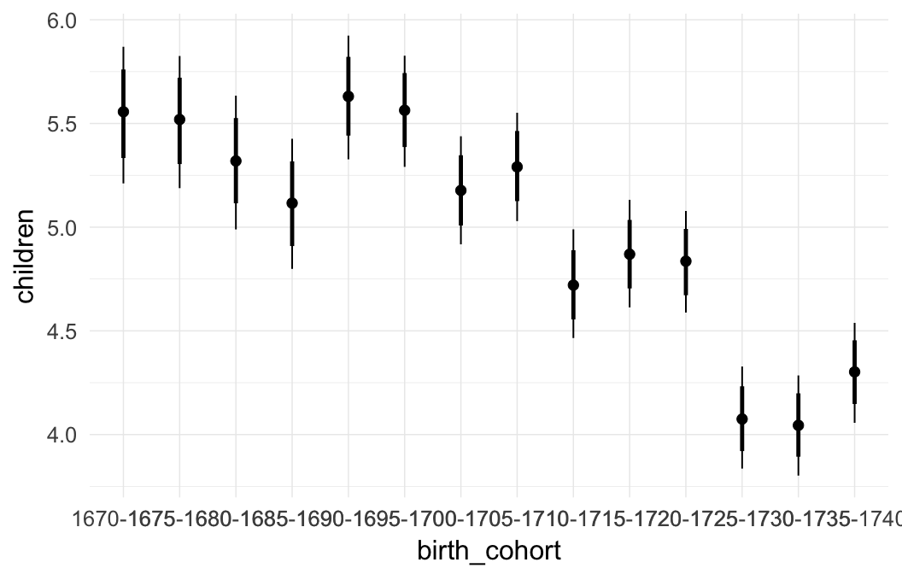
Coefficient plot
Coefficient estimates (95% and 80% credibility).
mcmc_intervals(as.matrix(model$fit), regex_pars = "b_[^I]")mcmc_areas(as.matrix(model$fit), regex_pars = "b")
Diagnostics
These plots were made to diagnose misfit and nonconvergence.
Posterior predictive checks
brms::pp_check(model, re_formula = NA, type = "dens_overlay")brms::pp_check(model, re_formula = NA, type = "hist")Rhat
Did the 6 chains converge?
stanplot(model, pars = "^b_[^I]", type = 'rhat')
Effective sample size by average sample size
stanplot(model, pars = "^b", type = 'ess')
Monte Carlo SE
stanplot(model, pars = "^b", type = 'mcse')
Trace plots
if(any( summary(model)$fixed[,"Rhat"] > 1.1)) { # only do traceplots if not converged
plot(model, N = 3, ask = FALSE)
}Further plots
stanplot(model, pars = "^b", type = 'diag')File name
coefs/rpqa/r19_normal_distribution.rds
Cluster script
opts_chunk$set(echo = FALSE)
clusterscript = str_replace(basename(model_filename), "\\.rds",".html")
cat("[Cluster script](" , clusterscript, ")", sep = "")r20: No adjustment for maternal age
In this model, we test what happens when we do not adjust for maternal age, because it is highly collinear with paternal age.
Model summary
Full summary
model_summary = summary(model, use_cache = FALSE, priors = TRUE)
print(model_summary)## Family: hurdle_poisson (log)
## Formula: children ~ paternalage + birth_cohort + male + paternalage.mean + paternal_loss + maternal_loss + older_siblings + nr.siblings + last_born + (1 | idParents)
## hu ~ paternalage + birth_cohort + male + paternalage.mean + paternal_loss + maternal_loss + older_siblings + nr.siblings + last_born + (1 | idParents)
## Data: model_data (Number of observations: 68724)
## Samples: 6 chains, each with iter = 1000; warmup = 500; thin = 1;
## total post-warmup samples = 3000
## WAIC: Not computed
##
## Priors:
## b ~ normal(0,5)
## sd ~ student_t(3, 0, 5)
## b_hu ~ normal(0,5)
## sd_hu ~ student_t(3, 0, 10)
##
## Group-Level Effects:
## ~idParents (Number of levels: 12205)
## Estimate Est.Error l-95% CI u-95% CI Eff.Sample Rhat
## sd(Intercept) 0.27 0.00 0.27 0.28 1086 1
## sd(hu_Intercept) 0.63 0.01 0.60 0.66 1161 1
##
## Population-Level Effects:
## Estimate Est.Error l-95% CI u-95% CI Eff.Sample
## Intercept 2.12 0.03 2.06 2.17 1300
## paternalage 0.01 0.01 0.00 0.03 2170
## birth_cohort1675M1680 0.02 0.02 -0.01 0.05 1555
## birth_cohort1680M1685 0.05 0.02 0.02 0.08 1289
## birth_cohort1685M1690 0.05 0.02 0.02 0.08 1320
## birth_cohort1690M1695 0.05 0.02 0.01 0.08 1091
## birth_cohort1695M1700 0.03 0.02 0.00 0.07 978
## birth_cohort1700M1705 0.02 0.02 -0.01 0.05 966
## birth_cohort1705M1710 0.00 0.02 -0.03 0.03 1002
## birth_cohort1710M1715 -0.01 0.02 -0.04 0.02 968
## birth_cohort1715M1720 -0.04 0.02 -0.07 -0.01 927
## birth_cohort1720M1725 -0.04 0.02 -0.07 -0.01 896
## birth_cohort1725M1730 -0.07 0.02 -0.10 -0.03 908
## birth_cohort1730M1735 -0.05 0.02 -0.08 -0.02 927
## birth_cohort1735M1740 -0.06 0.02 -0.09 -0.03 925
## male1 0.11 0.00 0.10 0.12 3000
## paternalage.mean -0.03 0.01 -0.05 -0.01 2122
## paternal_loss01 -0.04 0.02 -0.08 0.01 1846
## paternal_loss15 -0.02 0.02 -0.05 0.02 1599
## paternal_loss510 -0.01 0.01 -0.04 0.02 1193
## paternal_loss1015 -0.02 0.01 -0.04 0.01 1205
## paternal_loss1520 -0.02 0.01 -0.05 0.00 1068
## paternal_loss2025 -0.02 0.01 -0.05 0.00 1316
## paternal_loss2530 -0.01 0.01 -0.03 0.01 1279
## paternal_loss3035 -0.02 0.01 -0.04 0.00 1336
## paternal_loss3540 -0.02 0.01 -0.04 0.00 1793
## paternal_loss4045 0.00 0.01 -0.02 0.02 3000
## paternal_lossunclear -0.05 0.01 -0.08 -0.03 1616
## maternal_loss01 -0.05 0.02 -0.10 -0.01 3000
## maternal_loss15 -0.03 0.02 -0.06 0.00 2271
## maternal_loss510 0.01 0.01 -0.01 0.04 1904
## maternal_loss1015 -0.01 0.01 -0.03 0.02 1757
## maternal_loss1520 0.01 0.01 -0.02 0.03 1989
## maternal_loss2025 -0.02 0.01 -0.04 0.00 2052
## maternal_loss2530 -0.01 0.01 -0.03 0.01 1893
## maternal_loss3035 -0.01 0.01 -0.03 0.01 2411
## maternal_loss3540 0.00 0.01 -0.02 0.02 3000
## maternal_loss4045 0.00 0.01 -0.01 0.02 3000
## maternal_lossunclear -0.02 0.01 -0.05 0.00 1492
## older_siblings1 -0.02 0.01 -0.04 -0.01 3000
## older_siblings2 -0.02 0.01 -0.04 -0.01 3000
## older_siblings3 -0.03 0.01 -0.05 -0.01 2261
## older_siblings4 -0.02 0.01 -0.04 0.00 2314
## older_siblings5P -0.04 0.01 -0.06 -0.01 2106
## nr.siblings 0.01 0.00 0.00 0.01 2204
## last_born1 0.00 0.01 -0.01 0.02 3000
## hu_Intercept -0.78 0.09 -0.95 -0.60 932
## hu_paternalage 0.15 0.03 0.08 0.22 1911
## hu_birth_cohort1675M1680 0.08 0.07 -0.06 0.21 897
## hu_birth_cohort1680M1685 0.23 0.07 0.09 0.37 775
## hu_birth_cohort1685M1690 0.33 0.07 0.20 0.47 828
## hu_birth_cohort1690M1695 0.08 0.07 -0.05 0.21 819
## hu_birth_cohort1695M1700 0.09 0.07 -0.04 0.23 647
## hu_birth_cohort1700M1705 0.25 0.06 0.12 0.38 711
## hu_birth_cohort1705M1710 0.15 0.07 0.02 0.28 570
## hu_birth_cohort1710M1715 0.43 0.06 0.30 0.55 659
## hu_birth_cohort1715M1720 0.28 0.06 0.16 0.40 561
## hu_birth_cohort1720M1725 0.30 0.06 0.18 0.42 622
## hu_birth_cohort1725M1730 0.66 0.06 0.54 0.78 618
## hu_birth_cohort1730M1735 0.72 0.06 0.60 0.84 665
## hu_birth_cohort1735M1740 0.56 0.06 0.44 0.68 580
## hu_male1 0.44 0.02 0.40 0.47 3000
## hu_paternalage.mean -0.16 0.04 -0.24 -0.09 1995
## hu_paternal_loss01 0.57 0.07 0.42 0.71 3000
## hu_paternal_loss15 0.31 0.06 0.20 0.42 3000
## hu_paternal_loss510 0.29 0.05 0.20 0.38 2043
## hu_paternal_loss1015 0.17 0.04 0.08 0.26 1862
## hu_paternal_loss1520 0.28 0.04 0.20 0.36 1894
## hu_paternal_loss2025 0.17 0.04 0.10 0.25 1748
## hu_paternal_loss2530 0.17 0.04 0.10 0.25 1871
## hu_paternal_loss3035 0.14 0.04 0.07 0.21 1858
## hu_paternal_loss3540 0.10 0.04 0.03 0.17 2189
## hu_paternal_loss4045 0.07 0.04 -0.01 0.14 3000
## hu_paternal_lossunclear 0.37 0.04 0.29 0.44 1801
## hu_maternal_loss01 1.06 0.07 0.92 1.20 3000
## hu_maternal_loss15 0.39 0.05 0.30 0.49 3000
## hu_maternal_loss510 0.26 0.04 0.18 0.35 3000
## hu_maternal_loss1015 0.26 0.04 0.18 0.34 3000
## hu_maternal_loss1520 0.20 0.04 0.12 0.28 3000
## hu_maternal_loss2025 0.17 0.04 0.09 0.25 3000
## hu_maternal_loss2530 0.06 0.04 -0.02 0.14 3000
## hu_maternal_loss3035 0.09 0.04 0.02 0.16 3000
## hu_maternal_loss3540 0.08 0.03 0.02 0.14 3000
## hu_maternal_loss4045 -0.01 0.03 -0.08 0.06 3000
## hu_maternal_lossunclear 0.22 0.04 0.14 0.30 3000
## hu_older_siblings1 -0.07 0.03 -0.13 -0.01 3000
## hu_older_siblings2 -0.13 0.03 -0.19 -0.06 3000
## hu_older_siblings3 -0.19 0.04 -0.26 -0.12 2050
## hu_older_siblings4 -0.21 0.04 -0.29 -0.13 1814
## hu_older_siblings5P -0.29 0.05 -0.39 -0.20 1615
## hu_nr.siblings 0.02 0.00 0.01 0.03 3000
## hu_last_born1 0.00 0.03 -0.06 0.06 3000
## Rhat
## Intercept 1.01
## paternalage 1.00
## birth_cohort1675M1680 1.00
## birth_cohort1680M1685 1.00
## birth_cohort1685M1690 1.00
## birth_cohort1690M1695 1.00
## birth_cohort1695M1700 1.00
## birth_cohort1700M1705 1.00
## birth_cohort1705M1710 1.00
## birth_cohort1710M1715 1.00
## birth_cohort1715M1720 1.00
## birth_cohort1720M1725 1.00
## birth_cohort1725M1730 1.00
## birth_cohort1730M1735 1.00
## birth_cohort1735M1740 1.00
## male1 1.00
## paternalage.mean 1.00
## paternal_loss01 1.00
## paternal_loss15 1.00
## paternal_loss510 1.00
## paternal_loss1015 1.01
## paternal_loss1520 1.01
## paternal_loss2025 1.00
## paternal_loss2530 1.01
## paternal_loss3035 1.00
## paternal_loss3540 1.00
## paternal_loss4045 1.00
## paternal_lossunclear 1.01
## maternal_loss01 1.00
## maternal_loss15 1.00
## maternal_loss510 1.00
## maternal_loss1015 1.00
## maternal_loss1520 1.00
## maternal_loss2025 1.00
## maternal_loss2530 1.00
## maternal_loss3035 1.00
## maternal_loss3540 1.00
## maternal_loss4045 1.00
## maternal_lossunclear 1.01
## older_siblings1 1.00
## older_siblings2 1.00
## older_siblings3 1.00
## older_siblings4 1.00
## older_siblings5P 1.00
## nr.siblings 1.00
## last_born1 1.00
## hu_Intercept 1.00
## hu_paternalage 1.00
## hu_birth_cohort1675M1680 1.00
## hu_birth_cohort1680M1685 1.01
## hu_birth_cohort1685M1690 1.00
## hu_birth_cohort1690M1695 1.01
## hu_birth_cohort1695M1700 1.01
## hu_birth_cohort1700M1705 1.01
## hu_birth_cohort1705M1710 1.01
## hu_birth_cohort1710M1715 1.01
## hu_birth_cohort1715M1720 1.01
## hu_birth_cohort1720M1725 1.01
## hu_birth_cohort1725M1730 1.01
## hu_birth_cohort1730M1735 1.01
## hu_birth_cohort1735M1740 1.01
## hu_male1 1.00
## hu_paternalage.mean 1.00
## hu_paternal_loss01 1.00
## hu_paternal_loss15 1.00
## hu_paternal_loss510 1.00
## hu_paternal_loss1015 1.00
## hu_paternal_loss1520 1.00
## hu_paternal_loss2025 1.00
## hu_paternal_loss2530 1.00
## hu_paternal_loss3035 1.00
## hu_paternal_loss3540 1.00
## hu_paternal_loss4045 1.00
## hu_paternal_lossunclear 1.00
## hu_maternal_loss01 1.00
## hu_maternal_loss15 1.00
## hu_maternal_loss510 1.00
## hu_maternal_loss1015 1.00
## hu_maternal_loss1520 1.00
## hu_maternal_loss2025 1.00
## hu_maternal_loss2530 1.00
## hu_maternal_loss3035 1.00
## hu_maternal_loss3540 1.00
## hu_maternal_loss4045 1.00
## hu_maternal_lossunclear 1.00
## hu_older_siblings1 1.00
## hu_older_siblings2 1.00
## hu_older_siblings3 1.00
## hu_older_siblings4 1.00
## hu_older_siblings5P 1.00
## hu_nr.siblings 1.00
## hu_last_born1 1.00
##
## Samples were drawn using sampling(NUTS). For each parameter, Eff.Sample
## is a crude measure of effective sample size, and Rhat is the potential
## scale reduction factor on split chains (at convergence, Rhat = 1).Table of fixed effects
fixed_eff = data.frame(model_summary$fixed, check.names = F)
fixed_eff$Est.Error = fixed_eff$Eff.Sample = fixed_eff$Rhat = NULL
fixed_eff$OR = exp(fixed_eff$Estimate)
fixed_eff$OR_low = exp(fixed_eff$`l-95% CI`)
fixed_eff$OR_high = exp(fixed_eff$`u-95% CI`)
pander::pander(fixed_eff)| Estimate | l-95% CI | u-95% CI | OR | OR_low | OR_high | |
|---|---|---|---|---|---|---|
| Intercept | 2.115 | 2.06 | 2.166 | 8.293 | 7.85 | 8.726 |
| paternalage | 0.01289 | -0.004106 | 0.03055 | 1.013 | 0.9959 | 1.031 |
| birth_cohort1675M1680 | 0.02019 | -0.009786 | 0.05122 | 1.02 | 0.9903 | 1.053 |
| birth_cohort1680M1685 | 0.04642 | 0.01535 | 0.07794 | 1.048 | 1.015 | 1.081 |
| birth_cohort1685M1690 | 0.04978 | 0.0161 | 0.08346 | 1.051 | 1.016 | 1.087 |
| birth_cohort1690M1695 | 0.04669 | 0.01348 | 0.08003 | 1.048 | 1.014 | 1.083 |
| birth_cohort1695M1700 | 0.03449 | 0.003045 | 0.06654 | 1.035 | 1.003 | 1.069 |
| birth_cohort1700M1705 | 0.02072 | -0.01073 | 0.05221 | 1.021 | 0.9893 | 1.054 |
| birth_cohort1705M1710 | -0.002204 | -0.03414 | 0.02889 | 0.9978 | 0.9664 | 1.029 |
| birth_cohort1710M1715 | -0.01234 | -0.0427 | 0.01925 | 0.9877 | 0.9582 | 1.019 |
| birth_cohort1715M1720 | -0.04043 | -0.07155 | -0.008851 | 0.9604 | 0.931 | 0.9912 |
| birth_cohort1720M1725 | -0.04273 | -0.07436 | -0.01141 | 0.9582 | 0.9283 | 0.9887 |
| birth_cohort1725M1730 | -0.06633 | -0.09669 | -0.03466 | 0.9358 | 0.9078 | 0.9659 |
| birth_cohort1730M1735 | -0.04966 | -0.08067 | -0.0186 | 0.9516 | 0.9225 | 0.9816 |
| birth_cohort1735M1740 | -0.06069 | -0.09125 | -0.02997 | 0.9411 | 0.9128 | 0.9705 |
| male1 | 0.111 | 0.1028 | 0.1196 | 1.117 | 1.108 | 1.127 |
| paternalage.mean | -0.03164 | -0.05175 | -0.01155 | 0.9689 | 0.9496 | 0.9885 |
| paternal_loss01 | -0.03802 | -0.08231 | 0.005012 | 0.9627 | 0.921 | 1.005 |
| paternal_loss15 | -0.01731 | -0.04916 | 0.01518 | 0.9828 | 0.952 | 1.015 |
| paternal_loss510 | -0.01004 | -0.0379 | 0.01792 | 0.99 | 0.9628 | 1.018 |
| paternal_loss1015 | -0.01594 | -0.04286 | 0.009517 | 0.9842 | 0.958 | 1.01 |
| paternal_loss1520 | -0.02395 | -0.04982 | -0.0003247 | 0.9763 | 0.9514 | 0.9997 |
| paternal_loss2025 | -0.02283 | -0.04627 | -0.0009739 | 0.9774 | 0.9548 | 0.999 |
| paternal_loss2530 | -0.01255 | -0.03354 | 0.008697 | 0.9875 | 0.967 | 1.009 |
| paternal_loss3035 | -0.02307 | -0.04308 | -0.003991 | 0.9772 | 0.9578 | 0.996 |
| paternal_loss3540 | -0.02201 | -0.04055 | -0.003529 | 0.9782 | 0.9603 | 0.9965 |
| paternal_loss4045 | -0.003072 | -0.02262 | 0.0166 | 0.9969 | 0.9776 | 1.017 |
| paternal_lossunclear | -0.05351 | -0.07888 | -0.02789 | 0.9479 | 0.9241 | 0.9725 |
| maternal_loss01 | -0.05369 | -0.1005 | -0.006607 | 0.9477 | 0.9044 | 0.9934 |
| maternal_loss15 | -0.02877 | -0.05805 | 0.001025 | 0.9716 | 0.9436 | 1.001 |
| maternal_loss510 | 0.011 | -0.01454 | 0.03692 | 1.011 | 0.9856 | 1.038 |
| maternal_loss1015 | -0.008651 | -0.03231 | 0.01544 | 0.9914 | 0.9682 | 1.016 |
| maternal_loss1520 | 0.005693 | -0.0171 | 0.02832 | 1.006 | 0.983 | 1.029 |
| maternal_loss2025 | -0.01986 | -0.04257 | 0.002122 | 0.9803 | 0.9583 | 1.002 |
| maternal_loss2530 | -0.01351 | -0.03493 | 0.006607 | 0.9866 | 0.9657 | 1.007 |
| maternal_loss3035 | -0.008498 | -0.02746 | 0.009865 | 0.9915 | 0.9729 | 1.01 |
| maternal_loss3540 | 0.0008304 | -0.01573 | 0.01743 | 1.001 | 0.9844 | 1.018 |
| maternal_loss4045 | 0.003916 | -0.01324 | 0.02063 | 1.004 | 0.9868 | 1.021 |
| maternal_lossunclear | -0.02031 | -0.04542 | 0.004989 | 0.9799 | 0.9556 | 1.005 |
| older_siblings1 | -0.02069 | -0.03585 | -0.005642 | 0.9795 | 0.9648 | 0.9944 |
| older_siblings2 | -0.02384 | -0.04082 | -0.007679 | 0.9764 | 0.96 | 0.9924 |
| older_siblings3 | -0.03208 | -0.05111 | -0.01371 | 0.9684 | 0.9502 | 0.9864 |
| older_siblings4 | -0.02081 | -0.04237 | -7.758e-05 | 0.9794 | 0.9585 | 0.9999 |
| older_siblings5P | -0.03645 | -0.06227 | -0.01223 | 0.9642 | 0.9396 | 0.9878 |
| nr.siblings | 0.007326 | 0.004906 | 0.009824 | 1.007 | 1.005 | 1.01 |
| last_born1 | 0.00125 | -0.0136 | 0.01645 | 1.001 | 0.9865 | 1.017 |
| hu_Intercept | -0.777 | -0.9525 | -0.6016 | 0.4598 | 0.3858 | 0.5479 |
| hu_paternalage | 0.1494 | 0.08328 | 0.2169 | 1.161 | 1.087 | 1.242 |
| hu_birth_cohort1675M1680 | 0.07736 | -0.05518 | 0.2121 | 1.08 | 0.9463 | 1.236 |
| hu_birth_cohort1680M1685 | 0.2301 | 0.0936 | 0.3674 | 1.259 | 1.098 | 1.444 |
| hu_birth_cohort1685M1690 | 0.3332 | 0.1978 | 0.4739 | 1.395 | 1.219 | 1.606 |
| hu_birth_cohort1690M1695 | 0.07925 | -0.05442 | 0.2138 | 1.082 | 0.947 | 1.238 |
| hu_birth_cohort1695M1700 | 0.0932 | -0.03815 | 0.2266 | 1.098 | 0.9626 | 1.254 |
| hu_birth_cohort1700M1705 | 0.2464 | 0.1228 | 0.3767 | 1.279 | 1.131 | 1.457 |
| hu_birth_cohort1705M1710 | 0.1479 | 0.02226 | 0.2797 | 1.159 | 1.023 | 1.323 |
| hu_birth_cohort1710M1715 | 0.426 | 0.3048 | 0.5527 | 1.531 | 1.356 | 1.738 |
| hu_birth_cohort1715M1720 | 0.2802 | 0.1595 | 0.4032 | 1.323 | 1.173 | 1.497 |
| hu_birth_cohort1720M1725 | 0.3004 | 0.1798 | 0.4238 | 1.35 | 1.197 | 1.528 |
| hu_birth_cohort1725M1730 | 0.6599 | 0.5408 | 0.7807 | 1.935 | 1.717 | 2.183 |
| hu_birth_cohort1730M1735 | 0.7191 | 0.5995 | 0.8375 | 2.053 | 1.821 | 2.311 |
| hu_birth_cohort1735M1740 | 0.56 | 0.4403 | 0.6827 | 1.751 | 1.553 | 1.979 |
| hu_male1 | 0.4354 | 0.4023 | 0.4675 | 1.546 | 1.495 | 1.596 |
| hu_paternalage.mean | -0.1627 | -0.2384 | -0.09023 | 0.8499 | 0.7879 | 0.9137 |
| hu_paternal_loss01 | 0.5667 | 0.4238 | 0.7067 | 1.762 | 1.528 | 2.027 |
| hu_paternal_loss15 | 0.3081 | 0.1976 | 0.4153 | 1.361 | 1.218 | 1.515 |
| hu_paternal_loss510 | 0.2869 | 0.1973 | 0.3781 | 1.332 | 1.218 | 1.459 |
| hu_paternal_loss1015 | 0.1698 | 0.08401 | 0.2559 | 1.185 | 1.088 | 1.292 |
| hu_paternal_loss1520 | 0.2807 | 0.1998 | 0.3627 | 1.324 | 1.221 | 1.437 |
| hu_paternal_loss2025 | 0.1733 | 0.09593 | 0.2481 | 1.189 | 1.101 | 1.282 |
| hu_paternal_loss2530 | 0.1745 | 0.1005 | 0.2494 | 1.191 | 1.106 | 1.283 |
| hu_paternal_loss3035 | 0.1398 | 0.06599 | 0.2114 | 1.15 | 1.068 | 1.235 |
| hu_paternal_loss3540 | 0.1015 | 0.02886 | 0.1741 | 1.107 | 1.029 | 1.19 |
| hu_paternal_loss4045 | 0.06684 | -0.009893 | 0.1423 | 1.069 | 0.9902 | 1.153 |
| hu_paternal_lossunclear | 0.3669 | 0.2875 | 0.4448 | 1.443 | 1.333 | 1.56 |
| hu_maternal_loss01 | 1.058 | 0.9197 | 1.198 | 2.881 | 2.509 | 3.313 |
| hu_maternal_loss15 | 0.3918 | 0.2958 | 0.4944 | 1.48 | 1.344 | 1.64 |
| hu_maternal_loss510 | 0.2592 | 0.1754 | 0.3456 | 1.296 | 1.192 | 1.413 |
| hu_maternal_loss1015 | 0.2574 | 0.1754 | 0.3382 | 1.294 | 1.192 | 1.402 |
| hu_maternal_loss1520 | 0.1997 | 0.1176 | 0.2818 | 1.221 | 1.125 | 1.326 |
| hu_maternal_loss2025 | 0.1714 | 0.09123 | 0.2513 | 1.187 | 1.096 | 1.286 |
| hu_maternal_loss2530 | 0.05543 | -0.02075 | 0.1361 | 1.057 | 0.9795 | 1.146 |
| hu_maternal_loss3035 | 0.0875 | 0.01594 | 0.1565 | 1.091 | 1.016 | 1.169 |
| hu_maternal_loss3540 | 0.08151 | 0.01745 | 0.144 | 1.085 | 1.018 | 1.155 |
| hu_maternal_loss4045 | -0.01098 | -0.07743 | 0.05694 | 0.9891 | 0.9255 | 1.059 |
| hu_maternal_lossunclear | 0.2203 | 0.1448 | 0.2959 | 1.246 | 1.156 | 1.344 |
| hu_older_siblings1 | -0.0728 | -0.1318 | -0.01359 | 0.9298 | 0.8765 | 0.9865 |
| hu_older_siblings2 | -0.1258 | -0.1885 | -0.06317 | 0.8818 | 0.8282 | 0.9388 |
| hu_older_siblings3 | -0.1875 | -0.2576 | -0.1166 | 0.8291 | 0.7729 | 0.89 |
| hu_older_siblings4 | -0.2095 | -0.2889 | -0.1273 | 0.811 | 0.7491 | 0.8805 |
| hu_older_siblings5P | -0.2942 | -0.3914 | -0.197 | 0.7451 | 0.6761 | 0.8212 |
| hu_nr.siblings | 0.02052 | 0.01296 | 0.02824 | 1.021 | 1.013 | 1.029 |
| hu_last_born1 | 0.00158 | -0.05532 | 0.05894 | 1.002 | 0.9462 | 1.061 |
Paternal age effect
pander::pander(paternal_age_10y_effect(model))| effect | median_estimate | ci_95 | ci_80 |
|---|---|---|---|
| estimate father 25y | 5.64 | [5.37;5.93] | [5.47;5.84] |
| estimate father 35y | 5.45 | [5.13;5.78] | [5.24;5.67] |
| percentage change | -3.49 | [-6.27;-0.66] | [-5.3;-1.64] |
| OR/IRR | 1.01 | [1;1.03] | [1;1.02] |
| OR hurdle | 1.16 | [1.09;1.24] | [1.11;1.21] |
Marginal effect plots
plot.brmsMarginalEffects_shades(
x = marginal_effects(model, re_formula = NA, probs = c(0.025,0.975)),
y = marginal_effects(model, re_formula = NA, probs = c(0.1,0.9)),
ask = FALSE)


Coefficient plot
Coefficient estimates (95% and 80% credibility).
mcmc_intervals(as.matrix(model$fit), regex_pars = "b_[^I]")mcmc_areas(as.matrix(model$fit), regex_pars = "b")Diagnostics
These plots were made to diagnose misfit and nonconvergence.
Posterior predictive checks
brms::pp_check(model, re_formula = NA, type = "dens_overlay")brms::pp_check(model, re_formula = NA, type = "hist")
Rhat
Did the 6 chains converge?
stanplot(model, pars = "^b_[^I]", type = 'rhat')
Effective sample size by average sample size
stanplot(model, pars = "^b", type = 'ess')
Monte Carlo SE
stanplot(model, pars = "^b", type = 'mcse')Trace plots
if(any( summary(model)$fixed[,"Rhat"] > 1.1)) { # only do traceplots if not converged
plot(model, N = 3, ask = FALSE)
}Further plots
stanplot(model, pars = "^b", type = 'diag')File name
coefs/rpqa/r20_no_maternalage_control.rds
Cluster script
opts_chunk$set(echo = FALSE)
clusterscript = str_replace(basename(model_filename), "\\.rds",".html")
cat("[Cluster script](" , clusterscript, ")", sep = "")r21: Continuous adjustment for maternal age
In this model, we adjust for maternal age using a continuous variable instead of three bins. This does not allow for nonlinear effects, but also does not aggregate the predictor. We cannot compare full siblings, test the effects of maternal and paternal age and adjust for average maternal and paternal age in the family (because the predictors are redundant), so that it is not perfectly possible to disentangle the contribution of maternal and paternal age and compare full siblings.
Model summary
Full summary
model_summary = summary(model, use_cache = FALSE, priors = TRUE)
print(model_summary)## Family: hurdle_poisson (log)
## Formula: children ~ paternalage + maternalage + birth_cohort + male + paternalage.mean + paternal_loss + maternal_loss + older_siblings + nr.siblings + last_born + (1 | idParents)
## hu ~ paternalage + maternalage + birth_cohort + male + paternalage.mean + paternal_loss + maternal_loss + older_siblings + nr.siblings + last_born + (1 | idParents)
## Data: model_data (Number of observations: 68734)
## Samples: 6 chains, each with iter = 1000; warmup = 500; thin = 1;
## total post-warmup samples = 3000
## WAIC: Not computed
##
## Priors:
## b ~ normal(0,5)
## sd ~ student_t(3, 0, 5)
## b_hu ~ normal(0,5)
## sd_hu ~ student_t(3, 0, 10)
##
## Group-Level Effects:
## ~idParents (Number of levels: 12206)
## Estimate Est.Error l-95% CI u-95% CI Eff.Sample Rhat
## sd(Intercept) 0.27 0.00 0.27 0.28 1027 1.01
## sd(hu_Intercept) 0.63 0.01 0.60 0.65 1198 1.00
##
## Population-Level Effects:
## Estimate Est.Error l-95% CI u-95% CI Eff.Sample
## Intercept 2.14 0.04 2.06 2.21 976
## paternalage 0.02 0.01 0.00 0.05 1024
## maternalage -0.01 0.01 -0.03 0.01 1335
## birth_cohort1675M1680 0.02 0.02 -0.01 0.05 697
## birth_cohort1680M1685 0.05 0.02 0.02 0.08 627
## birth_cohort1685M1690 0.05 0.02 0.02 0.08 779
## birth_cohort1690M1695 0.05 0.02 0.02 0.08 641
## birth_cohort1695M1700 0.04 0.02 0.01 0.07 647
## birth_cohort1700M1705 0.02 0.02 -0.01 0.05 611
## birth_cohort1705M1710 0.00 0.02 -0.03 0.03 434
## birth_cohort1710M1715 -0.01 0.02 -0.04 0.02 604
## birth_cohort1715M1720 -0.04 0.02 -0.07 -0.01 409
## birth_cohort1720M1725 -0.04 0.02 -0.07 -0.01 399
## birth_cohort1725M1730 -0.06 0.02 -0.09 -0.03 583
## birth_cohort1730M1735 -0.05 0.02 -0.08 -0.02 422
## birth_cohort1735M1740 -0.06 0.02 -0.09 -0.03 566
## male1 0.11 0.00 0.10 0.12 3000
## paternalage.mean -0.04 0.01 -0.06 -0.01 1107
## paternal_loss01 -0.04 0.02 -0.08 0.00 1151
## paternal_loss15 -0.02 0.02 -0.05 0.01 867
## paternal_loss510 -0.01 0.01 -0.04 0.02 775
## paternal_loss1015 -0.02 0.01 -0.04 0.01 733
## paternal_loss1520 -0.02 0.01 -0.05 0.00 754
## paternal_loss2025 -0.02 0.01 -0.05 0.00 728
## paternal_loss2530 -0.01 0.01 -0.03 0.01 861
## paternal_loss3035 -0.02 0.01 -0.04 0.00 888
## paternal_loss3540 -0.02 0.01 -0.04 0.00 1190
## paternal_loss4045 0.00 0.01 -0.02 0.02 1372
## paternal_lossunclear -0.05 0.01 -0.08 -0.03 824
## maternal_loss01 -0.06 0.02 -0.10 -0.01 3000
## maternal_loss15 -0.03 0.02 -0.06 0.00 1227
## maternal_loss510 0.01 0.01 -0.02 0.04 1294
## maternal_loss1015 -0.01 0.01 -0.03 0.02 1313
## maternal_loss1520 0.01 0.01 -0.02 0.03 1303
## maternal_loss2025 -0.02 0.01 -0.04 0.00 1492
## maternal_loss2530 -0.01 0.01 -0.03 0.01 1453
## maternal_loss3035 -0.01 0.01 -0.03 0.01 1638
## maternal_loss3540 0.00 0.01 -0.02 0.02 1888
## maternal_loss4045 0.00 0.01 -0.01 0.02 3000
## maternal_lossunclear -0.02 0.01 -0.04 0.01 1117
## older_siblings1 -0.02 0.01 -0.04 -0.01 3000
## older_siblings2 -0.02 0.01 -0.04 -0.01 2180
## older_siblings3 -0.03 0.01 -0.05 -0.01 1802
## older_siblings4 -0.02 0.01 -0.04 0.00 1749
## older_siblings5P -0.04 0.01 -0.06 -0.01 1518
## nr.siblings 0.01 0.00 0.00 0.01 1486
## last_born1 0.00 0.01 -0.01 0.02 3000
## hu_Intercept -0.85 0.11 -1.08 -0.62 821
## hu_paternalage 0.12 0.04 0.04 0.21 851
## hu_maternalage 0.03 0.03 -0.03 0.08 1686
## hu_birth_cohort1675M1680 0.08 0.07 -0.06 0.21 1000
## hu_birth_cohort1680M1685 0.24 0.07 0.10 0.36 856
## hu_birth_cohort1685M1690 0.34 0.07 0.21 0.47 802
## hu_birth_cohort1690M1695 0.08 0.07 -0.05 0.21 750
## hu_birth_cohort1695M1700 0.10 0.06 -0.03 0.22 686
## hu_birth_cohort1700M1705 0.25 0.06 0.13 0.37 679
## hu_birth_cohort1705M1710 0.15 0.06 0.02 0.27 671
## hu_birth_cohort1710M1715 0.43 0.06 0.30 0.54 652
## hu_birth_cohort1715M1720 0.28 0.06 0.16 0.40 671
## hu_birth_cohort1720M1725 0.30 0.06 0.18 0.41 640
## hu_birth_cohort1725M1730 0.66 0.06 0.55 0.77 625
## hu_birth_cohort1730M1735 0.72 0.06 0.60 0.83 602
## hu_birth_cohort1735M1740 0.56 0.06 0.44 0.67 601
## hu_male1 0.44 0.02 0.40 0.47 3000
## hu_paternalage.mean -0.14 0.04 -0.23 -0.05 901
## hu_paternal_loss01 0.58 0.08 0.44 0.73 3000
## hu_paternal_loss15 0.32 0.06 0.21 0.44 1080
## hu_paternal_loss510 0.30 0.05 0.20 0.39 1026
## hu_paternal_loss1015 0.18 0.04 0.09 0.26 1175
## hu_paternal_loss1520 0.29 0.04 0.20 0.37 1043
## hu_paternal_loss2025 0.18 0.04 0.10 0.26 1170
## hu_paternal_loss2530 0.18 0.04 0.10 0.25 1210
## hu_paternal_loss3035 0.14 0.04 0.07 0.22 1033
## hu_paternal_loss3540 0.11 0.04 0.03 0.18 1649
## hu_paternal_loss4045 0.07 0.04 -0.01 0.15 3000
## hu_paternal_lossunclear 0.37 0.04 0.30 0.45 1204
## hu_maternal_loss01 1.07 0.07 0.93 1.21 3000
## hu_maternal_loss15 0.40 0.05 0.29 0.50 3000
## hu_maternal_loss510 0.26 0.05 0.17 0.35 3000
## hu_maternal_loss1015 0.26 0.04 0.17 0.34 3000
## hu_maternal_loss1520 0.20 0.04 0.12 0.28 3000
## hu_maternal_loss2025 0.17 0.04 0.09 0.25 3000
## hu_maternal_loss2530 0.05 0.04 -0.02 0.13 3000
## hu_maternal_loss3035 0.08 0.04 0.01 0.15 3000
## hu_maternal_loss3540 0.08 0.03 0.01 0.14 3000
## hu_maternal_loss4045 -0.01 0.03 -0.08 0.05 3000
## hu_maternal_lossunclear 0.22 0.04 0.15 0.29 1833
## hu_older_siblings1 -0.07 0.03 -0.13 -0.01 3000
## hu_older_siblings2 -0.13 0.03 -0.19 -0.06 1945
## hu_older_siblings3 -0.19 0.04 -0.26 -0.12 1745
## hu_older_siblings4 -0.21 0.04 -0.29 -0.13 1475
## hu_older_siblings5P -0.30 0.05 -0.39 -0.20 1357
## hu_nr.siblings 0.02 0.00 0.01 0.03 1899
## hu_last_born1 0.00 0.03 -0.06 0.05 3000
## Rhat
## Intercept 1.01
## paternalage 1.01
## maternalage 1.01
## birth_cohort1675M1680 1.00
## birth_cohort1680M1685 1.01
## birth_cohort1685M1690 1.01
## birth_cohort1690M1695 1.01
## birth_cohort1695M1700 1.01
## birth_cohort1700M1705 1.01
## birth_cohort1705M1710 1.01
## birth_cohort1710M1715 1.01
## birth_cohort1715M1720 1.01
## birth_cohort1720M1725 1.01
## birth_cohort1725M1730 1.01
## birth_cohort1730M1735 1.01
## birth_cohort1735M1740 1.01
## male1 1.00
## paternalage.mean 1.01
## paternal_loss01 1.01
## paternal_loss15 1.01
## paternal_loss510 1.01
## paternal_loss1015 1.01
## paternal_loss1520 1.01
## paternal_loss2025 1.01
## paternal_loss2530 1.00
## paternal_loss3035 1.00
## paternal_loss3540 1.00
## paternal_loss4045 1.00
## paternal_lossunclear 1.01
## maternal_loss01 1.00
## maternal_loss15 1.00
## maternal_loss510 1.00
## maternal_loss1015 1.00
## maternal_loss1520 1.00
## maternal_loss2025 1.00
## maternal_loss2530 1.00
## maternal_loss3035 1.00
## maternal_loss3540 1.00
## maternal_loss4045 1.00
## maternal_lossunclear 1.00
## older_siblings1 1.00
## older_siblings2 1.00
## older_siblings3 1.00
## older_siblings4 1.00
## older_siblings5P 1.00
## nr.siblings 1.00
## last_born1 1.00
## hu_Intercept 1.00
## hu_paternalage 1.00
## hu_maternalage 1.00
## hu_birth_cohort1675M1680 1.01
## hu_birth_cohort1680M1685 1.01
## hu_birth_cohort1685M1690 1.01
## hu_birth_cohort1690M1695 1.01
## hu_birth_cohort1695M1700 1.01
## hu_birth_cohort1700M1705 1.01
## hu_birth_cohort1705M1710 1.01
## hu_birth_cohort1710M1715 1.01
## hu_birth_cohort1715M1720 1.01
## hu_birth_cohort1720M1725 1.01
## hu_birth_cohort1725M1730 1.01
## hu_birth_cohort1730M1735 1.01
## hu_birth_cohort1735M1740 1.01
## hu_male1 1.00
## hu_paternalage.mean 1.00
## hu_paternal_loss01 1.00
## hu_paternal_loss15 1.00
## hu_paternal_loss510 1.00
## hu_paternal_loss1015 1.01
## hu_paternal_loss1520 1.01
## hu_paternal_loss2025 1.00
## hu_paternal_loss2530 1.01
## hu_paternal_loss3035 1.01
## hu_paternal_loss3540 1.00
## hu_paternal_loss4045 1.00
## hu_paternal_lossunclear 1.00
## hu_maternal_loss01 1.00
## hu_maternal_loss15 1.00
## hu_maternal_loss510 1.00
## hu_maternal_loss1015 1.00
## hu_maternal_loss1520 1.00
## hu_maternal_loss2025 1.00
## hu_maternal_loss2530 1.00
## hu_maternal_loss3035 1.00
## hu_maternal_loss3540 1.00
## hu_maternal_loss4045 1.00
## hu_maternal_lossunclear 1.00
## hu_older_siblings1 1.00
## hu_older_siblings2 1.00
## hu_older_siblings3 1.00
## hu_older_siblings4 1.00
## hu_older_siblings5P 1.00
## hu_nr.siblings 1.00
## hu_last_born1 1.00
##
## Samples were drawn using sampling(NUTS). For each parameter, Eff.Sample
## is a crude measure of effective sample size, and Rhat is the potential
## scale reduction factor on split chains (at convergence, Rhat = 1).Table of fixed effects
fixed_eff = data.frame(model_summary$fixed, check.names = F)
fixed_eff$Est.Error = fixed_eff$Eff.Sample = fixed_eff$Rhat = NULL
fixed_eff$OR = exp(fixed_eff$Estimate)
fixed_eff$OR_low = exp(fixed_eff$`l-95% CI`)
fixed_eff$OR_high = exp(fixed_eff$`u-95% CI`)
pander::pander(fixed_eff)| Estimate | l-95% CI | u-95% CI | OR | OR_low | OR_high | |
|---|---|---|---|---|---|---|
| Intercept | 2.136 | 2.064 | 2.208 | 8.463 | 7.874 | 9.093 |
| paternalage | 0.0217 | -0.00248 | 0.04732 | 1.022 | 0.9975 | 1.048 |
| maternalage | -0.009108 | -0.02754 | 0.008597 | 0.9909 | 0.9728 | 1.009 |
| birth_cohort1675M1680 | 0.02035 | -0.009933 | 0.05072 | 1.021 | 0.9901 | 1.052 |
| birth_cohort1680M1685 | 0.04676 | 0.01556 | 0.07896 | 1.048 | 1.016 | 1.082 |
| birth_cohort1685M1690 | 0.04976 | 0.01794 | 0.08136 | 1.051 | 1.018 | 1.085 |
| birth_cohort1690M1695 | 0.04733 | 0.01567 | 0.07953 | 1.048 | 1.016 | 1.083 |
| birth_cohort1695M1700 | 0.03524 | 0.005109 | 0.06613 | 1.036 | 1.005 | 1.068 |
| birth_cohort1700M1705 | 0.0221 | -0.008855 | 0.05325 | 1.022 | 0.9912 | 1.055 |
| birth_cohort1705M1710 | -0.0008345 | -0.03262 | 0.0315 | 0.9992 | 0.9679 | 1.032 |
| birth_cohort1710M1715 | -0.01072 | -0.0425 | 0.02095 | 0.9893 | 0.9584 | 1.021 |
| birth_cohort1715M1720 | -0.03824 | -0.06833 | -0.005688 | 0.9625 | 0.934 | 0.9943 |
| birth_cohort1720M1725 | -0.0407 | -0.0707 | -0.01016 | 0.9601 | 0.9317 | 0.9899 |
| birth_cohort1725M1730 | -0.06412 | -0.09453 | -0.03289 | 0.9379 | 0.9098 | 0.9676 |
| birth_cohort1730M1735 | -0.04703 | -0.07756 | -0.01567 | 0.9541 | 0.9254 | 0.9844 |
| birth_cohort1735M1740 | -0.05815 | -0.08825 | -0.0263 | 0.9435 | 0.9155 | 0.974 |
| male1 | 0.1111 | 0.1031 | 0.1194 | 1.118 | 1.109 | 1.127 |
| paternalage.mean | -0.03904 | -0.06465 | -0.01398 | 0.9617 | 0.9374 | 0.9861 |
| paternal_loss01 | -0.04161 | -0.0833 | 0.001313 | 0.9592 | 0.9201 | 1.001 |
| paternal_loss15 | -0.02036 | -0.05231 | 0.01264 | 0.9799 | 0.949 | 1.013 |
| paternal_loss510 | -0.01227 | -0.04068 | 0.01709 | 0.9878 | 0.9601 | 1.017 |
| paternal_loss1015 | -0.01704 | -0.042 | 0.008798 | 0.9831 | 0.9589 | 1.009 |
| paternal_loss1520 | -0.02495 | -0.04995 | -0.0007963 | 0.9754 | 0.9513 | 0.9992 |
| paternal_loss2025 | -0.02329 | -0.04575 | -0.0009118 | 0.977 | 0.9553 | 0.9991 |
| paternal_loss2530 | -0.01286 | -0.03399 | 0.008282 | 0.9872 | 0.9666 | 1.008 |
| paternal_loss3035 | -0.02289 | -0.04315 | -0.003016 | 0.9774 | 0.9578 | 0.997 |
| paternal_loss3540 | -0.02209 | -0.04049 | -0.003716 | 0.9781 | 0.9603 | 0.9963 |
| paternal_loss4045 | -0.003285 | -0.02234 | 0.01521 | 0.9967 | 0.9779 | 1.015 |
| paternal_lossunclear | -0.0547 | -0.07963 | -0.02948 | 0.9468 | 0.9235 | 0.9709 |
| maternal_loss01 | -0.05552 | -0.1024 | -0.006827 | 0.946 | 0.9027 | 0.9932 |
| maternal_loss15 | -0.03023 | -0.06048 | -0.0002687 | 0.9702 | 0.9413 | 0.9997 |
| maternal_loss510 | 0.01035 | -0.01608 | 0.03611 | 1.01 | 0.984 | 1.037 |
| maternal_loss1015 | -0.008949 | -0.03428 | 0.01572 | 0.9911 | 0.9663 | 1.016 |
| maternal_loss1520 | 0.005969 | -0.01761 | 0.02957 | 1.006 | 0.9825 | 1.03 |
| maternal_loss2025 | -0.0191 | -0.04249 | 0.003634 | 0.9811 | 0.9584 | 1.004 |
| maternal_loss2530 | -0.01229 | -0.03378 | 0.008537 | 0.9878 | 0.9668 | 1.009 |
| maternal_loss3035 | -0.007349 | -0.02649 | 0.01272 | 0.9927 | 0.9739 | 1.013 |
| maternal_loss3540 | 0.001705 | -0.01557 | 0.01925 | 1.002 | 0.9846 | 1.019 |
| maternal_loss4045 | 0.004968 | -0.01199 | 0.02187 | 1.005 | 0.9881 | 1.022 |
| maternal_lossunclear | -0.01972 | -0.04479 | 0.006069 | 0.9805 | 0.9562 | 1.006 |
| older_siblings1 | -0.02048 | -0.03558 | -0.005451 | 0.9797 | 0.965 | 0.9946 |
| older_siblings2 | -0.02346 | -0.04002 | -0.007063 | 0.9768 | 0.9608 | 0.993 |
| older_siblings3 | -0.03196 | -0.05047 | -0.01413 | 0.9685 | 0.9508 | 0.986 |
| older_siblings4 | -0.02011 | -0.04085 | 0.0003803 | 0.9801 | 0.96 | 1 |
| older_siblings5P | -0.03604 | -0.06103 | -0.0118 | 0.9646 | 0.9408 | 0.9883 |
| nr.siblings | 0.007308 | 0.004933 | 0.009703 | 1.007 | 1.005 | 1.01 |
| last_born1 | 0.001594 | -0.01374 | 0.01646 | 1.002 | 0.9864 | 1.017 |
| hu_Intercept | -0.8536 | -1.079 | -0.6221 | 0.4259 | 0.34 | 0.5368 |
| hu_paternalage | 0.1209 | 0.03778 | 0.2061 | 1.128 | 1.039 | 1.229 |
| hu_maternalage | 0.02857 | -0.02779 | 0.08496 | 1.029 | 0.9726 | 1.089 |
| hu_birth_cohort1675M1680 | 0.08184 | -0.05786 | 0.2146 | 1.085 | 0.9438 | 1.239 |
| hu_birth_cohort1680M1685 | 0.2356 | 0.1034 | 0.3647 | 1.266 | 1.109 | 1.44 |
| hu_birth_cohort1685M1690 | 0.3387 | 0.2074 | 0.4673 | 1.403 | 1.231 | 1.596 |
| hu_birth_cohort1690M1695 | 0.0847 | -0.05059 | 0.2149 | 1.088 | 0.9507 | 1.24 |
| hu_birth_cohort1695M1700 | 0.09755 | -0.02772 | 0.2209 | 1.102 | 0.9727 | 1.247 |
| hu_birth_cohort1700M1705 | 0.2497 | 0.1273 | 0.3736 | 1.284 | 1.136 | 1.453 |
| hu_birth_cohort1705M1710 | 0.1483 | 0.02184 | 0.2683 | 1.16 | 1.022 | 1.308 |
| hu_birth_cohort1710M1715 | 0.4268 | 0.3031 | 0.544 | 1.532 | 1.354 | 1.723 |
| hu_birth_cohort1715M1720 | 0.2794 | 0.159 | 0.3952 | 1.322 | 1.172 | 1.485 |
| hu_birth_cohort1720M1725 | 0.2993 | 0.1815 | 0.4122 | 1.349 | 1.199 | 1.51 |
| hu_birth_cohort1725M1730 | 0.661 | 0.546 | 0.7745 | 1.937 | 1.726 | 2.169 |
| hu_birth_cohort1730M1735 | 0.718 | 0.6014 | 0.8256 | 2.05 | 1.825 | 2.283 |
| hu_birth_cohort1735M1740 | 0.5588 | 0.4437 | 0.6708 | 1.749 | 1.558 | 1.956 |
| hu_male1 | 0.4355 | 0.4028 | 0.4695 | 1.546 | 1.496 | 1.599 |
| hu_paternalage.mean | -0.1373 | -0.2268 | -0.05319 | 0.8717 | 0.7971 | 0.9482 |
| hu_paternal_loss01 | 0.5816 | 0.4369 | 0.729 | 1.789 | 1.548 | 2.073 |
| hu_paternal_loss15 | 0.3216 | 0.2122 | 0.4364 | 1.379 | 1.236 | 1.547 |
| hu_paternal_loss510 | 0.2962 | 0.1989 | 0.3918 | 1.345 | 1.22 | 1.48 |
| hu_paternal_loss1015 | 0.1761 | 0.09072 | 0.2616 | 1.193 | 1.095 | 1.299 |
| hu_paternal_loss1520 | 0.2864 | 0.2047 | 0.3707 | 1.332 | 1.227 | 1.449 |
| hu_paternal_loss2025 | 0.1775 | 0.09999 | 0.2565 | 1.194 | 1.105 | 1.292 |
| hu_paternal_loss2530 | 0.1784 | 0.1031 | 0.2519 | 1.195 | 1.109 | 1.286 |
| hu_paternal_loss3035 | 0.1427 | 0.07202 | 0.2204 | 1.153 | 1.075 | 1.247 |
| hu_paternal_loss3540 | 0.1052 | 0.03104 | 0.1781 | 1.111 | 1.032 | 1.195 |
| hu_paternal_loss4045 | 0.0703 | -0.006416 | 0.149 | 1.073 | 0.9936 | 1.161 |
| hu_paternal_lossunclear | 0.3735 | 0.2955 | 0.4523 | 1.453 | 1.344 | 1.572 |
| hu_maternal_loss01 | 1.068 | 0.9268 | 1.213 | 2.909 | 2.526 | 3.365 |
| hu_maternal_loss15 | 0.3963 | 0.2936 | 0.4993 | 1.486 | 1.341 | 1.648 |
| hu_maternal_loss510 | 0.2605 | 0.1744 | 0.3498 | 1.298 | 1.191 | 1.419 |
| hu_maternal_loss1015 | 0.2567 | 0.174 | 0.3423 | 1.293 | 1.19 | 1.408 |
| hu_maternal_loss1520 | 0.1976 | 0.116 | 0.2831 | 1.218 | 1.123 | 1.327 |
| hu_maternal_loss2025 | 0.1687 | 0.0899 | 0.2503 | 1.184 | 1.094 | 1.284 |
| hu_maternal_loss2530 | 0.05121 | -0.02306 | 0.1277 | 1.053 | 0.9772 | 1.136 |
| hu_maternal_loss3035 | 0.08414 | 0.01424 | 0.1523 | 1.088 | 1.014 | 1.164 |
| hu_maternal_loss3540 | 0.07812 | 0.01493 | 0.1444 | 1.081 | 1.015 | 1.155 |
| hu_maternal_loss4045 | -0.01425 | -0.08012 | 0.05453 | 0.9859 | 0.923 | 1.056 |
| hu_maternal_lossunclear | 0.2208 | 0.1476 | 0.2945 | 1.247 | 1.159 | 1.342 |
| hu_older_siblings1 | -0.07385 | -0.1331 | -0.01464 | 0.9288 | 0.8754 | 0.9855 |
| hu_older_siblings2 | -0.1271 | -0.1921 | -0.06226 | 0.8806 | 0.8252 | 0.9396 |
| hu_older_siblings3 | -0.1898 | -0.2608 | -0.1194 | 0.8271 | 0.7704 | 0.8875 |
| hu_older_siblings4 | -0.2121 | -0.2888 | -0.1348 | 0.8089 | 0.7492 | 0.8739 |
| hu_older_siblings5P | -0.2967 | -0.3938 | -0.1995 | 0.7433 | 0.6745 | 0.8191 |
| hu_nr.siblings | 0.02038 | 0.01264 | 0.02783 | 1.021 | 1.013 | 1.028 |
| hu_last_born1 | 0.001259 | -0.05582 | 0.05412 | 1.001 | 0.9457 | 1.056 |
Paternal age effect
pander::pander(paternal_age_10y_effect(model))| effect | median_estimate | ci_95 | ci_80 |
|---|---|---|---|
| estimate father 25y | 5.54 | [5.24;5.84] | [5.35;5.74] |
| estimate father 35y | 5.44 | [5.14;5.76] | [5.25;5.65] |
| percentage change | -1.75 | [-5.37;1.84] | [-4.05;0.6] |
| OR/IRR | 1.02 | [1;1.05] | [1.01;1.04] |
| OR hurdle | 1.13 | [1.04;1.23] | [1.07;1.19] |
Marginal effect plots
plot.brmsMarginalEffects_shades(
x = marginal_effects(model, re_formula = NA, probs = c(0.025,0.975)),
y = marginal_effects(model, re_formula = NA, probs = c(0.1,0.9)),
ask = FALSE)

Coefficient plot
Coefficient estimates (95% and 80% credibility).
mcmc_intervals(as.matrix(model$fit), regex_pars = "b_[^I]")
mcmc_areas(as.matrix(model$fit), regex_pars = "b")Diagnostics
These plots were made to diagnose misfit and nonconvergence.
Posterior predictive checks
brms::pp_check(model, re_formula = NA, type = "dens_overlay")brms::pp_check(model, re_formula = NA, type = "hist")Rhat
Did the 6 chains converge?
stanplot(model, pars = "^b_[^I]", type = 'rhat')Effective sample size by average sample size
stanplot(model, pars = "^b", type = 'ess')Monte Carlo SE
stanplot(model, pars = "^b", type = 'mcse')Trace plots
if(any( summary(model)$fixed[,"Rhat"] > 1.1)) { # only do traceplots if not converged
plot(model, N = 3, ask = FALSE)
}Further plots
stanplot(model, pars = "^b", type = 'diag')File name
coefs/rpqa/r21_continuous_maternalage.rds
Cluster script
opts_chunk$set(echo = FALSE)
clusterscript = str_replace(basename(model_filename), "\\.rds",".html")
cat("[Cluster script](" , clusterscript, ")", sep = "")r22: Relaxed exclusion and censoring criteria
Like r1, but we use a 30-years-later cutoff year for our birth cohorts, relaxing our censoring requirements.
r23: Student’s t and half-Cauchy priors
To demonstrate the robustness of our prior choice we use Student’s t priors (fatter tails than normal priors) for our population-level effects and a half-Cauchy prior for our group-level effect for the family.
Model summary
Full summary
model_summary = summary(model, use_cache = FALSE, priors = TRUE)
print(model_summary)## Family: hurdle_poisson (log)
## Formula: children ~ paternalage + birth_cohort + male + maternalage.factor + paternalage.mean + paternal_loss + maternal_loss + older_siblings + nr.siblings + last_born + (1 | idParents)
## hu ~ paternalage + birth_cohort + male + maternalage.factor + paternalage.mean + paternal_loss + maternal_loss + older_siblings + nr.siblings + last_born + (1 | idParents)
## Data: model_data (Number of observations: 68724)
## Samples: 6 chains, each with iter = 800; warmup = 300; thin = 1;
## total post-warmup samples = 3000
## WAIC: Not computed
##
## Priors:
## b ~ student_t(5,0,10)
## sd ~ cauchy(0,5)
## b_hu ~ student_t(5,0,10)
## sd_hu ~ student_t(3, 0, 10)
##
## Group-Level Effects:
## ~idParents (Number of levels: 12205)
## Estimate Est.Error l-95% CI u-95% CI Eff.Sample Rhat
## sd(Intercept) 0.27 0.00 0.27 0.28 1098 1
## sd(hu_Intercept) 0.63 0.01 0.60 0.66 1206 1
##
## Population-Level Effects:
## Estimate Est.Error l-95% CI u-95% CI Eff.Sample
## Intercept 2.12 0.03 2.06 2.17 1139
## paternalage 0.01 0.01 -0.01 0.03 1233
## birth_cohort1675M1680 0.02 0.02 -0.01 0.05 1366
## birth_cohort1680M1685 0.05 0.02 0.02 0.08 1258
## birth_cohort1685M1690 0.05 0.02 0.02 0.08 1052
## birth_cohort1690M1695 0.05 0.02 0.02 0.08 890
## birth_cohort1695M1700 0.04 0.02 0.00 0.07 817
## birth_cohort1700M1705 0.02 0.02 -0.01 0.05 770
## birth_cohort1705M1710 0.00 0.02 -0.03 0.03 784
## birth_cohort1710M1715 -0.01 0.02 -0.04 0.02 723
## birth_cohort1715M1720 -0.04 0.02 -0.07 -0.01 768
## birth_cohort1720M1725 -0.04 0.02 -0.07 -0.01 671
## birth_cohort1725M1730 -0.07 0.02 -0.10 -0.03 724
## birth_cohort1730M1735 -0.05 0.02 -0.08 -0.02 656
## birth_cohort1735M1740 -0.06 0.02 -0.09 -0.03 685
## male1 0.11 0.00 0.10 0.12 3000
## maternalage.factor1420 -0.01 0.01 -0.03 0.01 3000
## maternalage.factor3550 0.00 0.01 -0.01 0.02 3000
## paternalage.mean -0.03 0.01 -0.05 -0.01 1275
## paternal_loss01 -0.04 0.02 -0.08 0.00 1803
## paternal_loss15 -0.02 0.02 -0.05 0.01 1429
## paternal_loss510 -0.01 0.01 -0.04 0.02 1263
## paternal_loss1015 -0.02 0.01 -0.04 0.01 1239
## paternal_loss1520 -0.02 0.01 -0.05 0.00 1316
## paternal_loss2025 -0.02 0.01 -0.05 0.00 1255
## paternal_loss2530 -0.01 0.01 -0.03 0.01 1455
## paternal_loss3035 -0.02 0.01 -0.04 0.00 1667
## paternal_loss3540 -0.02 0.01 -0.04 0.00 1856
## paternal_loss4045 0.00 0.01 -0.02 0.02 3000
## paternal_lossunclear -0.05 0.01 -0.08 -0.03 1276
## maternal_loss01 -0.05 0.02 -0.10 -0.01 3000
## maternal_loss15 -0.03 0.02 -0.06 0.00 2303
## maternal_loss510 0.01 0.01 -0.01 0.04 1987
## maternal_loss1015 -0.01 0.01 -0.03 0.02 2084
## maternal_loss1520 0.01 0.01 -0.02 0.03 2107
## maternal_loss2025 -0.02 0.01 -0.04 0.00 2128
## maternal_loss2530 -0.01 0.01 -0.03 0.01 2184
## maternal_loss3035 -0.01 0.01 -0.03 0.01 2102
## maternal_loss3540 0.00 0.01 -0.02 0.02 3000
## maternal_loss4045 0.00 0.01 -0.01 0.02 3000
## maternal_lossunclear -0.02 0.01 -0.04 0.01 1918
## older_siblings1 -0.02 0.01 -0.04 -0.01 3000
## older_siblings2 -0.03 0.01 -0.04 -0.01 2350
## older_siblings3 -0.03 0.01 -0.05 -0.01 2094
## older_siblings4 -0.02 0.01 -0.05 0.00 1953
## older_siblings5P -0.04 0.01 -0.07 -0.01 1408
## nr.siblings 0.01 0.00 0.01 0.01 1840
## last_born1 0.00 0.01 -0.01 0.02 3000
## hu_Intercept -0.80 0.09 -0.97 -0.62 1090
## hu_paternalage 0.13 0.04 0.05 0.21 1375
## hu_birth_cohort1675M1680 0.08 0.07 -0.05 0.21 1353
## hu_birth_cohort1680M1685 0.23 0.07 0.10 0.36 1130
## hu_birth_cohort1685M1690 0.33 0.07 0.20 0.47 1089
## hu_birth_cohort1690M1695 0.08 0.07 -0.05 0.21 1022
## hu_birth_cohort1695M1700 0.10 0.06 -0.03 0.23 846
## hu_birth_cohort1700M1705 0.25 0.06 0.13 0.38 841
## hu_birth_cohort1705M1710 0.15 0.06 0.04 0.27 836
## hu_birth_cohort1710M1715 0.43 0.06 0.32 0.56 808
## hu_birth_cohort1715M1720 0.29 0.06 0.17 0.40 829
## hu_birth_cohort1720M1725 0.31 0.06 0.19 0.42 762
## hu_birth_cohort1725M1730 0.67 0.06 0.55 0.78 783
## hu_birth_cohort1730M1735 0.73 0.06 0.62 0.84 753
## hu_birth_cohort1735M1740 0.57 0.06 0.46 0.68 724
## hu_male1 0.44 0.02 0.40 0.47 3000
## hu_maternalage.factor1420 0.05 0.04 -0.02 0.12 3000
## hu_maternalage.factor3550 0.03 0.03 -0.03 0.09 3000
## hu_paternalage.mean -0.15 0.04 -0.23 -0.06 1433
## hu_paternal_loss01 0.57 0.07 0.43 0.71 3000
## hu_paternal_loss15 0.31 0.06 0.20 0.42 1609
## hu_paternal_loss510 0.29 0.05 0.20 0.38 1646
## hu_paternal_loss1015 0.17 0.05 0.08 0.26 1682
## hu_paternal_loss1520 0.28 0.04 0.20 0.37 1542
## hu_paternal_loss2025 0.18 0.04 0.10 0.25 1538
## hu_paternal_loss2530 0.18 0.04 0.10 0.25 1622
## hu_paternal_loss3035 0.14 0.04 0.07 0.21 1724
## hu_paternal_loss3540 0.10 0.04 0.03 0.17 1865
## hu_paternal_loss4045 0.07 0.04 -0.01 0.14 3000
## hu_paternal_lossunclear 0.37 0.04 0.29 0.45 1349
## hu_maternal_loss01 1.06 0.07 0.92 1.20 3000
## hu_maternal_loss15 0.39 0.05 0.29 0.49 3000
## hu_maternal_loss510 0.26 0.04 0.17 0.35 3000
## hu_maternal_loss1015 0.26 0.04 0.17 0.34 3000
## hu_maternal_loss1520 0.20 0.04 0.12 0.28 3000
## hu_maternal_loss2025 0.17 0.04 0.09 0.25 3000
## hu_maternal_loss2530 0.05 0.04 -0.02 0.13 3000
## hu_maternal_loss3035 0.09 0.03 0.02 0.15 3000
## hu_maternal_loss3540 0.08 0.03 0.02 0.15 3000
## hu_maternal_loss4045 -0.01 0.03 -0.08 0.06 3000
## hu_maternal_lossunclear 0.22 0.04 0.15 0.30 2468
## hu_older_siblings1 -0.06 0.03 -0.12 0.00 3000
## hu_older_siblings2 -0.11 0.03 -0.17 -0.04 1625
## hu_older_siblings3 -0.16 0.04 -0.24 -0.09 1475
## hu_older_siblings4 -0.19 0.04 -0.27 -0.09 1473
## hu_older_siblings5P -0.27 0.05 -0.37 -0.17 1206
## hu_nr.siblings 0.02 0.00 0.01 0.03 2228
## hu_last_born1 0.00 0.03 -0.06 0.06 3000
## Rhat
## Intercept 1.01
## paternalage 1.01
## birth_cohort1675M1680 1.00
## birth_cohort1680M1685 1.00
## birth_cohort1685M1690 1.01
## birth_cohort1690M1695 1.00
## birth_cohort1695M1700 1.01
## birth_cohort1700M1705 1.01
## birth_cohort1705M1710 1.00
## birth_cohort1710M1715 1.01
## birth_cohort1715M1720 1.00
## birth_cohort1720M1725 1.01
## birth_cohort1725M1730 1.01
## birth_cohort1730M1735 1.01
## birth_cohort1735M1740 1.01
## male1 1.00
## maternalage.factor1420 1.00
## maternalage.factor3550 1.00
## paternalage.mean 1.01
## paternal_loss01 1.00
## paternal_loss15 1.00
## paternal_loss510 1.00
## paternal_loss1015 1.01
## paternal_loss1520 1.00
## paternal_loss2025 1.00
## paternal_loss2530 1.00
## paternal_loss3035 1.00
## paternal_loss3540 1.00
## paternal_loss4045 1.00
## paternal_lossunclear 1.00
## maternal_loss01 1.00
## maternal_loss15 1.00
## maternal_loss510 1.00
## maternal_loss1015 1.00
## maternal_loss1520 1.00
## maternal_loss2025 1.00
## maternal_loss2530 1.00
## maternal_loss3035 1.00
## maternal_loss3540 1.00
## maternal_loss4045 1.00
## maternal_lossunclear 1.00
## older_siblings1 1.00
## older_siblings2 1.00
## older_siblings3 1.00
## older_siblings4 1.00
## older_siblings5P 1.00
## nr.siblings 1.00
## last_born1 1.00
## hu_Intercept 1.00
## hu_paternalage 1.00
## hu_birth_cohort1675M1680 1.00
## hu_birth_cohort1680M1685 1.00
## hu_birth_cohort1685M1690 1.00
## hu_birth_cohort1690M1695 1.00
## hu_birth_cohort1695M1700 1.00
## hu_birth_cohort1700M1705 1.00
## hu_birth_cohort1705M1710 1.00
## hu_birth_cohort1710M1715 1.00
## hu_birth_cohort1715M1720 1.01
## hu_birth_cohort1720M1725 1.00
## hu_birth_cohort1725M1730 1.00
## hu_birth_cohort1730M1735 1.00
## hu_birth_cohort1735M1740 1.00
## hu_male1 1.00
## hu_maternalage.factor1420 1.00
## hu_maternalage.factor3550 1.00
## hu_paternalage.mean 1.00
## hu_paternal_loss01 1.00
## hu_paternal_loss15 1.00
## hu_paternal_loss510 1.00
## hu_paternal_loss1015 1.00
## hu_paternal_loss1520 1.00
## hu_paternal_loss2025 1.00
## hu_paternal_loss2530 1.00
## hu_paternal_loss3035 1.00
## hu_paternal_loss3540 1.00
## hu_paternal_loss4045 1.00
## hu_paternal_lossunclear 1.01
## hu_maternal_loss01 1.00
## hu_maternal_loss15 1.00
## hu_maternal_loss510 1.00
## hu_maternal_loss1015 1.00
## hu_maternal_loss1520 1.00
## hu_maternal_loss2025 1.00
## hu_maternal_loss2530 1.00
## hu_maternal_loss3035 1.00
## hu_maternal_loss3540 1.00
## hu_maternal_loss4045 1.00
## hu_maternal_lossunclear 1.00
## hu_older_siblings1 1.00
## hu_older_siblings2 1.00
## hu_older_siblings3 1.00
## hu_older_siblings4 1.00
## hu_older_siblings5P 1.00
## hu_nr.siblings 1.00
## hu_last_born1 1.00
##
## Samples were drawn using sampling(NUTS). For each parameter, Eff.Sample
## is a crude measure of effective sample size, and Rhat is the potential
## scale reduction factor on split chains (at convergence, Rhat = 1).Table of fixed effects
fixed_eff = data.frame(model_summary$fixed, check.names = F)
fixed_eff$Est.Error = fixed_eff$Eff.Sample = fixed_eff$Rhat = NULL
fixed_eff$OR = exp(fixed_eff$Estimate)
fixed_eff$OR_low = exp(fixed_eff$`l-95% CI`)
fixed_eff$OR_high = exp(fixed_eff$`u-95% CI`)
pander::pander(fixed_eff)| Estimate | l-95% CI | u-95% CI | OR | OR_low | OR_high | |
|---|---|---|---|---|---|---|
| Intercept | 2.116 | 2.063 | 2.169 | 8.294 | 7.872 | 8.752 |
| paternalage | 0.01108 | -0.009358 | 0.03202 | 1.011 | 0.9907 | 1.033 |
| birth_cohort1675M1680 | 0.02105 | -0.01037 | 0.05246 | 1.021 | 0.9897 | 1.054 |
| birth_cohort1680M1685 | 0.04759 | 0.01688 | 0.07942 | 1.049 | 1.017 | 1.083 |
| birth_cohort1685M1690 | 0.05067 | 0.01834 | 0.08492 | 1.052 | 1.019 | 1.089 |
| birth_cohort1690M1695 | 0.04788 | 0.01559 | 0.0806 | 1.049 | 1.016 | 1.084 |
| birth_cohort1695M1700 | 0.03508 | 0.002557 | 0.06777 | 1.036 | 1.003 | 1.07 |
| birth_cohort1700M1705 | 0.02141 | -0.01067 | 0.05394 | 1.022 | 0.9894 | 1.055 |
| birth_cohort1705M1710 | -0.001794 | -0.03375 | 0.02921 | 0.9982 | 0.9668 | 1.03 |
| birth_cohort1710M1715 | -0.01184 | -0.04408 | 0.01978 | 0.9882 | 0.9569 | 1.02 |
| birth_cohort1715M1720 | -0.03964 | -0.07252 | -0.007421 | 0.9611 | 0.93 | 0.9926 |
| birth_cohort1720M1725 | -0.04234 | -0.0737 | -0.01152 | 0.9585 | 0.929 | 0.9886 |
| birth_cohort1725M1730 | -0.06607 | -0.09816 | -0.03483 | 0.9361 | 0.9065 | 0.9658 |
| birth_cohort1730M1735 | -0.04941 | -0.08039 | -0.01841 | 0.9518 | 0.9228 | 0.9818 |
| birth_cohort1735M1740 | -0.06016 | -0.09121 | -0.02917 | 0.9416 | 0.9128 | 0.9712 |
| male1 | 0.1111 | 0.1029 | 0.1191 | 1.118 | 1.108 | 1.127 |
| maternalage.factor1420 | -0.00809 | -0.02725 | 0.01146 | 0.9919 | 0.9731 | 1.012 |
| maternalage.factor3550 | 0.001477 | -0.01466 | 0.01709 | 1.001 | 0.9854 | 1.017 |
| paternalage.mean | -0.02974 | -0.05272 | -0.006896 | 0.9707 | 0.9486 | 0.9931 |
| paternal_loss01 | -0.03818 | -0.07967 | 0.002571 | 0.9625 | 0.9234 | 1.003 |
| paternal_loss15 | -0.01733 | -0.04922 | 0.01386 | 0.9828 | 0.952 | 1.014 |
| paternal_loss510 | -0.00987 | -0.03809 | 0.0185 | 0.9902 | 0.9626 | 1.019 |
| paternal_loss1015 | -0.01594 | -0.04162 | 0.01022 | 0.9842 | 0.9592 | 1.01 |
| paternal_loss1520 | -0.02413 | -0.04904 | -0.0006468 | 0.9762 | 0.9521 | 0.9994 |
| paternal_loss2025 | -0.02296 | -0.04576 | -0.001235 | 0.9773 | 0.9553 | 0.9988 |
| paternal_loss2530 | -0.01254 | -0.03343 | 0.008263 | 0.9875 | 0.9671 | 1.008 |
| paternal_loss3035 | -0.02291 | -0.04313 | -0.003418 | 0.9773 | 0.9578 | 0.9966 |
| paternal_loss3540 | -0.0223 | -0.04048 | -0.004225 | 0.9779 | 0.9603 | 0.9958 |
| paternal_loss4045 | -0.003249 | -0.02225 | 0.01527 | 0.9968 | 0.978 | 1.015 |
| paternal_lossunclear | -0.05371 | -0.07857 | -0.0295 | 0.9477 | 0.9244 | 0.9709 |
| maternal_loss01 | -0.05224 | -0.09816 | -0.006331 | 0.9491 | 0.9065 | 0.9937 |
| maternal_loss15 | -0.02781 | -0.05834 | 0.002092 | 0.9726 | 0.9433 | 1.002 |
| maternal_loss510 | 0.01181 | -0.01377 | 0.03695 | 1.012 | 0.9863 | 1.038 |
| maternal_loss1015 | -0.008672 | -0.03298 | 0.01515 | 0.9914 | 0.9676 | 1.015 |
| maternal_loss1520 | 0.005949 | -0.01716 | 0.02911 | 1.006 | 0.983 | 1.03 |
| maternal_loss2025 | -0.01952 | -0.0421 | 0.003669 | 0.9807 | 0.9588 | 1.004 |
| maternal_loss2530 | -0.01322 | -0.03446 | 0.00683 | 0.9869 | 0.9661 | 1.007 |
| maternal_loss3035 | -0.008255 | -0.02679 | 0.01057 | 0.9918 | 0.9736 | 1.011 |
| maternal_loss3540 | 0.00104 | -0.01534 | 0.01724 | 1.001 | 0.9848 | 1.017 |
| maternal_loss4045 | 0.003923 | -0.01173 | 0.02019 | 1.004 | 0.9883 | 1.02 |
| maternal_lossunclear | -0.01944 | -0.04344 | 0.005697 | 0.9808 | 0.9575 | 1.006 |
| older_siblings1 | -0.02199 | -0.03843 | -0.006617 | 0.9782 | 0.9623 | 0.9934 |
| older_siblings2 | -0.02566 | -0.04387 | -0.008148 | 0.9747 | 0.9571 | 0.9919 |
| older_siblings3 | -0.03378 | -0.05388 | -0.01422 | 0.9668 | 0.9475 | 0.9859 |
| older_siblings4 | -0.02245 | -0.0456 | 2.653e-05 | 0.9778 | 0.9554 | 1 |
| older_siblings5P | -0.03788 | -0.06587 | -0.0111 | 0.9628 | 0.9363 | 0.989 |
| nr.siblings | 0.007344 | 0.005012 | 0.009776 | 1.007 | 1.005 | 1.01 |
| last_born1 | 0.001361 | -0.0137 | 0.01647 | 1.001 | 0.9864 | 1.017 |
| hu_Intercept | -0.7997 | -0.9687 | -0.6247 | 0.4495 | 0.3796 | 0.5354 |
| hu_paternalage | 0.1319 | 0.05178 | 0.2085 | 1.141 | 1.053 | 1.232 |
| hu_birth_cohort1675M1680 | 0.07985 | -0.0512 | 0.2089 | 1.083 | 0.9501 | 1.232 |
| hu_birth_cohort1680M1685 | 0.2318 | 0.09756 | 0.3648 | 1.261 | 1.102 | 1.44 |
| hu_birth_cohort1685M1690 | 0.335 | 0.2023 | 0.4672 | 1.398 | 1.224 | 1.596 |
| hu_birth_cohort1690M1695 | 0.08296 | -0.04965 | 0.2147 | 1.087 | 0.9516 | 1.239 |
| hu_birth_cohort1695M1700 | 0.09915 | -0.02699 | 0.2271 | 1.104 | 0.9734 | 1.255 |
| hu_birth_cohort1700M1705 | 0.2542 | 0.1301 | 0.3757 | 1.289 | 1.139 | 1.456 |
| hu_birth_cohort1705M1710 | 0.1539 | 0.03864 | 0.2698 | 1.166 | 1.039 | 1.31 |
| hu_birth_cohort1710M1715 | 0.4315 | 0.3152 | 0.5558 | 1.54 | 1.371 | 1.743 |
| hu_birth_cohort1715M1720 | 0.2856 | 0.1711 | 0.4048 | 1.331 | 1.187 | 1.499 |
| hu_birth_cohort1720M1725 | 0.3073 | 0.1873 | 0.423 | 1.36 | 1.206 | 1.527 |
| hu_birth_cohort1725M1730 | 0.6683 | 0.5521 | 0.7823 | 1.951 | 1.737 | 2.186 |
| hu_birth_cohort1730M1735 | 0.7265 | 0.6169 | 0.8363 | 2.068 | 1.853 | 2.308 |
| hu_birth_cohort1735M1740 | 0.5666 | 0.4566 | 0.6803 | 1.762 | 1.579 | 1.974 |
| hu_male1 | 0.4355 | 0.4048 | 0.4673 | 1.546 | 1.499 | 1.596 |
| hu_maternalage.factor1420 | 0.04887 | -0.02375 | 0.1225 | 1.05 | 0.9765 | 1.13 |
| hu_maternalage.factor3550 | 0.02921 | -0.03003 | 0.08858 | 1.03 | 0.9704 | 1.093 |
| hu_paternalage.mean | -0.1461 | -0.2254 | -0.06359 | 0.864 | 0.7982 | 0.9384 |
| hu_paternal_loss01 | 0.5709 | 0.4275 | 0.7132 | 1.77 | 1.533 | 2.041 |
| hu_paternal_loss15 | 0.3113 | 0.2027 | 0.4175 | 1.365 | 1.225 | 1.518 |
| hu_paternal_loss510 | 0.2902 | 0.1979 | 0.3825 | 1.337 | 1.219 | 1.466 |
| hu_paternal_loss1015 | 0.1713 | 0.08454 | 0.2616 | 1.187 | 1.088 | 1.299 |
| hu_paternal_loss1520 | 0.2813 | 0.2009 | 0.3659 | 1.325 | 1.223 | 1.442 |
| hu_paternal_loss2025 | 0.1751 | 0.0982 | 0.2497 | 1.191 | 1.103 | 1.284 |
| hu_paternal_loss2530 | 0.1761 | 0.1007 | 0.2498 | 1.193 | 1.106 | 1.284 |
| hu_paternal_loss3035 | 0.1399 | 0.06686 | 0.2133 | 1.15 | 1.069 | 1.238 |
| hu_paternal_loss3540 | 0.1019 | 0.02818 | 0.1743 | 1.107 | 1.029 | 1.19 |
| hu_paternal_loss4045 | 0.06692 | -0.009136 | 0.142 | 1.069 | 0.9909 | 1.153 |
| hu_paternal_lossunclear | 0.3689 | 0.2901 | 0.4453 | 1.446 | 1.337 | 1.561 |
| hu_maternal_loss01 | 1.058 | 0.9205 | 1.199 | 2.879 | 2.511 | 3.318 |
| hu_maternal_loss15 | 0.3914 | 0.2903 | 0.489 | 1.479 | 1.337 | 1.631 |
| hu_maternal_loss510 | 0.2583 | 0.1693 | 0.3457 | 1.295 | 1.185 | 1.413 |
| hu_maternal_loss1015 | 0.255 | 0.1733 | 0.3397 | 1.291 | 1.189 | 1.405 |
| hu_maternal_loss1520 | 0.198 | 0.1178 | 0.2786 | 1.219 | 1.125 | 1.321 |
| hu_maternal_loss2025 | 0.1699 | 0.08995 | 0.2479 | 1.185 | 1.094 | 1.281 |
| hu_maternal_loss2530 | 0.05332 | -0.02098 | 0.1286 | 1.055 | 0.9792 | 1.137 |
| hu_maternal_loss3035 | 0.08596 | 0.01666 | 0.1517 | 1.09 | 1.017 | 1.164 |
| hu_maternal_loss3540 | 0.08074 | 0.01704 | 0.1461 | 1.084 | 1.017 | 1.157 |
| hu_maternal_loss4045 | -0.01068 | -0.07777 | 0.0567 | 0.9894 | 0.9252 | 1.058 |
| hu_maternal_lossunclear | 0.2216 | 0.1472 | 0.2957 | 1.248 | 1.159 | 1.344 |
| hu_older_siblings1 | -0.06147 | -0.1197 | -0.001893 | 0.9404 | 0.8872 | 0.9981 |
| hu_older_siblings2 | -0.1074 | -0.1727 | -0.04008 | 0.8982 | 0.8414 | 0.9607 |
| hu_older_siblings3 | -0.165 | -0.2395 | -0.08957 | 0.8479 | 0.787 | 0.9143 |
| hu_older_siblings4 | -0.1852 | -0.268 | -0.09471 | 0.8309 | 0.7649 | 0.9096 |
| hu_older_siblings5P | -0.2686 | -0.3666 | -0.1683 | 0.7644 | 0.6931 | 0.8451 |
| hu_nr.siblings | 0.0194 | 0.01169 | 0.02724 | 1.02 | 1.012 | 1.028 |
| hu_last_born1 | -0.00255 | -0.06029 | 0.05587 | 0.9975 | 0.9415 | 1.057 |
Paternal age effect
pander::pander(paternal_age_10y_effect(model))| effect | median_estimate | ci_95 | ci_80 |
|---|---|---|---|
| estimate father 25y | 5.69 | [5.41;5.97] | [5.5;5.88] |
| estimate father 35y | 5.52 | [5.2;5.84] | [5.3;5.73] |
| percentage change | -3.04 | [-6.17;0.21] | [-5.13;-0.94] |
| OR/IRR | 1.01 | [0.99;1.03] | [1;1.03] |
| OR hurdle | 1.14 | [1.05;1.23] | [1.08;1.2] |
Marginal effect plots
plot.brmsMarginalEffects_shades(
x = marginal_effects(model, re_formula = NA, probs = c(0.025,0.975)),
y = marginal_effects(model, re_formula = NA, probs = c(0.1,0.9)),
ask = FALSE)

Coefficient plot
Coefficient estimates (95% and 80% credibility).
mcmc_intervals(as.matrix(model$fit), regex_pars = "b_[^I]")mcmc_areas(as.matrix(model$fit), regex_pars = "b")Diagnostics
These plots were made to diagnose misfit and nonconvergence.
Posterior predictive checks
brms::pp_check(model, re_formula = NA, type = "dens_overlay")
brms::pp_check(model, re_formula = NA, type = "hist")Rhat
Did the 6 chains converge?
stanplot(model, pars = "^b_[^I]", type = 'rhat')Effective sample size by average sample size
stanplot(model, pars = "^b", type = 'ess')Monte Carlo SE
stanplot(model, pars = "^b", type = 'mcse')Trace plots
if(any( summary(model)$fixed[,"Rhat"] > 1.1)) { # only do traceplots if not converged
plot(model, N = 3, ask = FALSE)
}Further plots
stanplot(model, pars = "^b", type = 'diag')File name
coefs/rpqa/r23_student_cauchy_priors.rds
Cluster script
opts_chunk$set(echo = FALSE)
clusterscript = str_replace(basename(model_filename), "\\.rds",".html")
cat("[Cluster script](" , clusterscript, ")", sep = "")r24: Improper flat priors
To demonstrate the robustness of our prior choice we use improper flat priors. These priors should make the model’s results comparable to a frequentist maximum likelihood approach.
Model summary
Full summary
model_summary = summary(model, use_cache = FALSE, priors = TRUE)
print(model_summary)## Family: hurdle_poisson (log)
## Formula: children ~ paternalage + birth_cohort + male + maternalage.factor + paternalage.mean + paternal_loss + maternal_loss + older_siblings + nr.siblings + last_born + (1 | idParents)
## hu ~ paternalage + birth_cohort + male + maternalage.factor + paternalage.mean + paternal_loss + maternal_loss + older_siblings + nr.siblings + last_born + (1 | idParents)
## Data: model_data (Number of observations: 68724)
## Samples: 6 chains, each with iter = 800; warmup = 300; thin = 1;
## total post-warmup samples = 3000
## WAIC: Not computed
##
## Priors:
## sd ~ student_t(3, 0, 10)
## sd_hu ~ student_t(3, 0, 10)
##
## Group-Level Effects:
## ~idParents (Number of levels: 12205)
## Estimate Est.Error l-95% CI u-95% CI Eff.Sample Rhat
## sd(Intercept) 0.27 0.00 0.27 0.28 1179 1
## sd(hu_Intercept) 0.63 0.01 0.60 0.66 1269 1
##
## Population-Level Effects:
## Estimate Est.Error l-95% CI u-95% CI Eff.Sample
## Intercept 2.12 0.03 2.06 2.17 1254
## paternalage 0.01 0.01 -0.01 0.03 1940
## birth_cohort1675M1680 0.02 0.02 -0.01 0.05 1344
## birth_cohort1680M1685 0.05 0.02 0.02 0.08 1101
## birth_cohort1685M1690 0.05 0.02 0.02 0.08 1127
## birth_cohort1690M1695 0.05 0.02 0.02 0.08 831
## birth_cohort1695M1700 0.03 0.02 0.00 0.07 823
## birth_cohort1700M1705 0.02 0.02 -0.01 0.05 758
## birth_cohort1705M1710 0.00 0.02 -0.03 0.03 705
## birth_cohort1710M1715 -0.01 0.02 -0.04 0.02 741
## birth_cohort1715M1720 -0.04 0.02 -0.07 -0.01 687
## birth_cohort1720M1725 -0.04 0.02 -0.07 -0.01 694
## birth_cohort1725M1730 -0.07 0.02 -0.10 -0.03 662
## birth_cohort1730M1735 -0.05 0.02 -0.08 -0.02 624
## birth_cohort1735M1740 -0.06 0.02 -0.09 -0.03 618
## male1 0.11 0.00 0.10 0.12 3000
## maternalage.factor1420 -0.01 0.01 -0.03 0.01 3000
## maternalage.factor3550 0.00 0.01 -0.01 0.02 3000
## paternalage.mean -0.03 0.01 -0.05 -0.01 1904
## paternal_loss01 -0.04 0.02 -0.08 0.00 2168
## paternal_loss15 -0.02 0.02 -0.05 0.01 1735
## paternal_loss510 -0.01 0.01 -0.04 0.02 1520
## paternal_loss1015 -0.02 0.01 -0.04 0.01 1479
## paternal_loss1520 -0.02 0.01 -0.05 0.00 1339
## paternal_loss2025 -0.02 0.01 -0.05 0.00 1564
## paternal_loss2530 -0.01 0.01 -0.03 0.01 1844
## paternal_loss3035 -0.02 0.01 -0.04 0.00 2035
## paternal_loss3540 -0.02 0.01 -0.04 0.00 2013
## paternal_loss4045 0.00 0.01 -0.02 0.02 3000
## paternal_lossunclear -0.05 0.01 -0.08 -0.03 1483
## maternal_loss01 -0.05 0.02 -0.10 0.00 3000
## maternal_loss15 -0.03 0.02 -0.06 0.00 1961
## maternal_loss510 0.01 0.01 -0.01 0.04 2065
## maternal_loss1015 -0.01 0.01 -0.03 0.02 1914
## maternal_loss1520 0.01 0.01 -0.02 0.03 1942
## maternal_loss2025 -0.02 0.01 -0.04 0.00 1874
## maternal_loss2530 -0.01 0.01 -0.03 0.01 1910
## maternal_loss3035 -0.01 0.01 -0.03 0.01 1943
## maternal_loss3540 0.00 0.01 -0.02 0.02 3000
## maternal_loss4045 0.00 0.01 -0.01 0.02 3000
## maternal_lossunclear -0.02 0.01 -0.04 0.01 1810
## older_siblings1 -0.02 0.01 -0.04 -0.01 3000
## older_siblings2 -0.03 0.01 -0.04 -0.01 2686
## older_siblings3 -0.03 0.01 -0.05 -0.01 2228
## older_siblings4 -0.02 0.01 -0.04 0.00 2196
## older_siblings5P -0.04 0.01 -0.07 -0.01 2058
## nr.siblings 0.01 0.00 0.00 0.01 1947
## last_born1 0.00 0.01 -0.01 0.02 3000
## hu_Intercept -0.80 0.09 -0.97 -0.62 1181
## hu_paternalage 0.13 0.04 0.05 0.21 1492
## hu_birth_cohort1675M1680 0.07 0.07 -0.07 0.21 1252
## hu_birth_cohort1680M1685 0.23 0.07 0.09 0.36 1087
## hu_birth_cohort1685M1690 0.33 0.07 0.20 0.47 1025
## hu_birth_cohort1690M1695 0.08 0.07 -0.05 0.21 1011
## hu_birth_cohort1695M1700 0.10 0.06 -0.03 0.22 893
## hu_birth_cohort1700M1705 0.25 0.06 0.13 0.37 875
## hu_birth_cohort1705M1710 0.15 0.06 0.03 0.27 841
## hu_birth_cohort1710M1715 0.43 0.06 0.30 0.55 811
## hu_birth_cohort1715M1720 0.28 0.06 0.16 0.40 804
## hu_birth_cohort1720M1725 0.30 0.06 0.18 0.42 791
## hu_birth_cohort1725M1730 0.66 0.06 0.55 0.78 800
## hu_birth_cohort1730M1735 0.72 0.06 0.61 0.84 751
## hu_birth_cohort1735M1740 0.56 0.06 0.45 0.68 769
## hu_male1 0.44 0.02 0.40 0.47 3000
## hu_maternalage.factor1420 0.05 0.04 -0.03 0.13 3000
## hu_maternalage.factor3550 0.03 0.03 -0.03 0.09 3000
## hu_paternalage.mean -0.15 0.04 -0.23 -0.06 1532
## hu_paternal_loss01 0.57 0.07 0.43 0.71 3000
## hu_paternal_loss15 0.31 0.06 0.20 0.42 3000
## hu_paternal_loss510 0.29 0.05 0.20 0.38 1742
## hu_paternal_loss1015 0.17 0.05 0.08 0.26 1853
## hu_paternal_loss1520 0.28 0.04 0.20 0.37 1811
## hu_paternal_loss2025 0.17 0.04 0.09 0.25 1564
## hu_paternal_loss2530 0.18 0.04 0.10 0.25 1601
## hu_paternal_loss3035 0.14 0.04 0.07 0.21 1578
## hu_paternal_loss3540 0.10 0.04 0.03 0.18 1786
## hu_paternal_loss4045 0.07 0.04 -0.01 0.15 3000
## hu_paternal_lossunclear 0.37 0.04 0.29 0.45 1554
## hu_maternal_loss01 1.06 0.07 0.91 1.20 3000
## hu_maternal_loss15 0.39 0.05 0.29 0.49 3000
## hu_maternal_loss510 0.26 0.04 0.17 0.34 3000
## hu_maternal_loss1015 0.26 0.04 0.17 0.34 3000
## hu_maternal_loss1520 0.20 0.04 0.12 0.28 3000
## hu_maternal_loss2025 0.17 0.04 0.09 0.25 3000
## hu_maternal_loss2530 0.05 0.04 -0.02 0.13 3000
## hu_maternal_loss3035 0.09 0.04 0.02 0.16 3000
## hu_maternal_loss3540 0.08 0.03 0.02 0.15 3000
## hu_maternal_loss4045 -0.01 0.04 -0.08 0.06 3000
## hu_maternal_lossunclear 0.22 0.04 0.15 0.30 2593
## hu_older_siblings1 -0.06 0.03 -0.13 0.00 3000
## hu_older_siblings2 -0.11 0.04 -0.18 -0.04 2168
## hu_older_siblings3 -0.17 0.04 -0.25 -0.09 1642
## hu_older_siblings4 -0.19 0.04 -0.27 -0.10 1563
## hu_older_siblings5P -0.27 0.05 -0.38 -0.17 1404
## hu_nr.siblings 0.02 0.00 0.01 0.03 2546
## hu_last_born1 0.00 0.03 -0.06 0.05 3000
## Rhat
## Intercept 1.01
## paternalage 1.00
## birth_cohort1675M1680 1.00
## birth_cohort1680M1685 1.00
## birth_cohort1685M1690 1.00
## birth_cohort1690M1695 1.00
## birth_cohort1695M1700 1.01
## birth_cohort1700M1705 1.00
## birth_cohort1705M1710 1.01
## birth_cohort1710M1715 1.01
## birth_cohort1715M1720 1.01
## birth_cohort1720M1725 1.01
## birth_cohort1725M1730 1.01
## birth_cohort1730M1735 1.01
## birth_cohort1735M1740 1.01
## male1 1.00
## maternalage.factor1420 1.00
## maternalage.factor3550 1.00
## paternalage.mean 1.00
## paternal_loss01 1.00
## paternal_loss15 1.00
## paternal_loss510 1.01
## paternal_loss1015 1.00
## paternal_loss1520 1.01
## paternal_loss2025 1.01
## paternal_loss2530 1.00
## paternal_loss3035 1.00
## paternal_loss3540 1.00
## paternal_loss4045 1.00
## paternal_lossunclear 1.00
## maternal_loss01 1.00
## maternal_loss15 1.01
## maternal_loss510 1.00
## maternal_loss1015 1.00
## maternal_loss1520 1.00
## maternal_loss2025 1.00
## maternal_loss2530 1.00
## maternal_loss3035 1.00
## maternal_loss3540 1.00
## maternal_loss4045 1.00
## maternal_lossunclear 1.00
## older_siblings1 1.00
## older_siblings2 1.00
## older_siblings3 1.00
## older_siblings4 1.00
## older_siblings5P 1.00
## nr.siblings 1.00
## last_born1 1.00
## hu_Intercept 1.00
## hu_paternalage 1.00
## hu_birth_cohort1675M1680 1.00
## hu_birth_cohort1680M1685 1.00
## hu_birth_cohort1685M1690 1.00
## hu_birth_cohort1690M1695 1.00
## hu_birth_cohort1695M1700 1.00
## hu_birth_cohort1700M1705 1.00
## hu_birth_cohort1705M1710 1.00
## hu_birth_cohort1710M1715 1.00
## hu_birth_cohort1715M1720 1.00
## hu_birth_cohort1720M1725 1.00
## hu_birth_cohort1725M1730 1.00
## hu_birth_cohort1730M1735 1.00
## hu_birth_cohort1735M1740 1.00
## hu_male1 1.00
## hu_maternalage.factor1420 1.00
## hu_maternalage.factor3550 1.00
## hu_paternalage.mean 1.00
## hu_paternal_loss01 1.00
## hu_paternal_loss15 1.00
## hu_paternal_loss510 1.00
## hu_paternal_loss1015 1.00
## hu_paternal_loss1520 1.00
## hu_paternal_loss2025 1.00
## hu_paternal_loss2530 1.00
## hu_paternal_loss3035 1.00
## hu_paternal_loss3540 1.00
## hu_paternal_loss4045 1.00
## hu_paternal_lossunclear 1.00
## hu_maternal_loss01 1.00
## hu_maternal_loss15 1.00
## hu_maternal_loss510 1.00
## hu_maternal_loss1015 1.00
## hu_maternal_loss1520 1.00
## hu_maternal_loss2025 1.00
## hu_maternal_loss2530 1.00
## hu_maternal_loss3035 1.00
## hu_maternal_loss3540 1.00
## hu_maternal_loss4045 1.00
## hu_maternal_lossunclear 1.00
## hu_older_siblings1 1.00
## hu_older_siblings2 1.00
## hu_older_siblings3 1.00
## hu_older_siblings4 1.00
## hu_older_siblings5P 1.00
## hu_nr.siblings 1.00
## hu_last_born1 1.00
##
## Samples were drawn using sampling(NUTS). For each parameter, Eff.Sample
## is a crude measure of effective sample size, and Rhat is the potential
## scale reduction factor on split chains (at convergence, Rhat = 1).Table of fixed effects
fixed_eff = data.frame(model_summary$fixed, check.names = F)
fixed_eff$Est.Error = fixed_eff$Eff.Sample = fixed_eff$Rhat = NULL
fixed_eff$OR = exp(fixed_eff$Estimate)
fixed_eff$OR_low = exp(fixed_eff$`l-95% CI`)
fixed_eff$OR_high = exp(fixed_eff$`u-95% CI`)
pander::pander(fixed_eff)| Estimate | l-95% CI | u-95% CI | OR | OR_low | OR_high | |
|---|---|---|---|---|---|---|
| Intercept | 2.117 | 2.062 | 2.17 | 8.307 | 7.861 | 8.76 |
| paternalage | 0.01156 | -0.009415 | 0.03223 | 1.012 | 0.9906 | 1.033 |
| birth_cohort1675M1680 | 0.02042 | -0.01035 | 0.05171 | 1.021 | 0.9897 | 1.053 |
| birth_cohort1680M1685 | 0.04711 | 0.0158 | 0.07942 | 1.048 | 1.016 | 1.083 |
| birth_cohort1685M1690 | 0.0498 | 0.01755 | 0.083 | 1.051 | 1.018 | 1.087 |
| birth_cohort1690M1695 | 0.04711 | 0.0163 | 0.08073 | 1.048 | 1.016 | 1.084 |
| birth_cohort1695M1700 | 0.03409 | 0.002674 | 0.06664 | 1.035 | 1.003 | 1.069 |
| birth_cohort1700M1705 | 0.02073 | -0.009547 | 0.05388 | 1.021 | 0.9905 | 1.055 |
| birth_cohort1705M1710 | -0.002627 | -0.0335 | 0.0298 | 0.9974 | 0.9671 | 1.03 |
| birth_cohort1710M1715 | -0.01263 | -0.04475 | 0.02141 | 0.9875 | 0.9562 | 1.022 |
| birth_cohort1715M1720 | -0.04103 | -0.07087 | -0.00841 | 0.9598 | 0.9316 | 0.9916 |
| birth_cohort1720M1725 | -0.04347 | -0.07481 | -0.01065 | 0.9575 | 0.9279 | 0.9894 |
| birth_cohort1725M1730 | -0.06737 | -0.09706 | -0.03432 | 0.9348 | 0.9075 | 0.9663 |
| birth_cohort1730M1735 | -0.05038 | -0.08122 | -0.01772 | 0.9509 | 0.922 | 0.9824 |
| birth_cohort1735M1740 | -0.06153 | -0.09254 | -0.02927 | 0.9403 | 0.9116 | 0.9712 |
| male1 | 0.1111 | 0.1029 | 0.1193 | 1.118 | 1.108 | 1.127 |
| maternalage.factor1420 | -0.008206 | -0.02764 | 0.0111 | 0.9918 | 0.9727 | 1.011 |
| maternalage.factor3550 | 0.001307 | -0.01412 | 0.01732 | 1.001 | 0.986 | 1.017 |
| paternalage.mean | -0.03031 | -0.05367 | -0.007025 | 0.9701 | 0.9477 | 0.993 |
| paternal_loss01 | -0.03839 | -0.07911 | 0.003232 | 0.9623 | 0.9239 | 1.003 |
| paternal_loss15 | -0.01796 | -0.04948 | 0.01238 | 0.9822 | 0.9517 | 1.012 |
| paternal_loss510 | -0.01064 | -0.03742 | 0.01643 | 0.9894 | 0.9633 | 1.017 |
| paternal_loss1015 | -0.01656 | -0.04181 | 0.008884 | 0.9836 | 0.9591 | 1.009 |
| paternal_loss1520 | -0.02447 | -0.0481 | -0.0005372 | 0.9758 | 0.953 | 0.9995 |
| paternal_loss2025 | -0.02311 | -0.04554 | -0.0009096 | 0.9772 | 0.9555 | 0.9991 |
| paternal_loss2530 | -0.01294 | -0.03296 | 0.008152 | 0.9871 | 0.9676 | 1.008 |
| paternal_loss3035 | -0.023 | -0.04265 | -0.003044 | 0.9773 | 0.9582 | 0.997 |
| paternal_loss3540 | -0.02227 | -0.04005 | -0.003483 | 0.978 | 0.9607 | 0.9965 |
| paternal_loss4045 | -0.003133 | -0.02145 | 0.01597 | 0.9969 | 0.9788 | 1.016 |
| paternal_lossunclear | -0.05426 | -0.07952 | -0.03035 | 0.9472 | 0.9236 | 0.9701 |
| maternal_loss01 | -0.05181 | -0.09809 | -0.004509 | 0.9495 | 0.9066 | 0.9955 |
| maternal_loss15 | -0.0281 | -0.05788 | 0.002435 | 0.9723 | 0.9438 | 1.002 |
| maternal_loss510 | 0.01159 | -0.01382 | 0.0367 | 1.012 | 0.9863 | 1.037 |
| maternal_loss1015 | -0.008596 | -0.03199 | 0.01594 | 0.9914 | 0.9685 | 1.016 |
| maternal_loss1520 | 0.005886 | -0.01779 | 0.02988 | 1.006 | 0.9824 | 1.03 |
| maternal_loss2025 | -0.0197 | -0.04115 | 0.002319 | 0.9805 | 0.9597 | 1.002 |
| maternal_loss2530 | -0.01311 | -0.03406 | 0.007347 | 0.987 | 0.9665 | 1.007 |
| maternal_loss3035 | -0.008352 | -0.02719 | 0.01034 | 0.9917 | 0.9732 | 1.01 |
| maternal_loss3540 | 0.001023 | -0.01639 | 0.01766 | 1.001 | 0.9837 | 1.018 |
| maternal_loss4045 | 0.00404 | -0.01327 | 0.0205 | 1.004 | 0.9868 | 1.021 |
| maternal_lossunclear | -0.01947 | -0.04466 | 0.005304 | 0.9807 | 0.9563 | 1.005 |
| older_siblings1 | -0.02217 | -0.03747 | -0.006992 | 0.9781 | 0.9632 | 0.993 |
| older_siblings2 | -0.0259 | -0.04288 | -0.008588 | 0.9744 | 0.958 | 0.9914 |
| older_siblings3 | -0.03398 | -0.05318 | -0.01485 | 0.9666 | 0.9482 | 0.9853 |
| older_siblings4 | -0.02259 | -0.0443 | -0.0003709 | 0.9777 | 0.9567 | 0.9996 |
| older_siblings5P | -0.0383 | -0.06537 | -0.0114 | 0.9624 | 0.9367 | 0.9887 |
| nr.siblings | 0.00737 | 0.004937 | 0.009738 | 1.007 | 1.005 | 1.01 |
| last_born1 | 0.001337 | -0.01368 | 0.01611 | 1.001 | 0.9864 | 1.016 |
| hu_Intercept | -0.7981 | -0.9703 | -0.6233 | 0.4502 | 0.379 | 0.5362 |
| hu_paternalage | 0.1316 | 0.05418 | 0.2115 | 1.141 | 1.056 | 1.235 |
| hu_birth_cohort1675M1680 | 0.07429 | -0.06661 | 0.2097 | 1.077 | 0.9356 | 1.233 |
| hu_birth_cohort1680M1685 | 0.2277 | 0.09407 | 0.3605 | 1.256 | 1.099 | 1.434 |
| hu_birth_cohort1685M1690 | 0.3319 | 0.1988 | 0.4699 | 1.394 | 1.22 | 1.6 |
| hu_birth_cohort1690M1695 | 0.07812 | -0.05291 | 0.2095 | 1.081 | 0.9485 | 1.233 |
| hu_birth_cohort1695M1700 | 0.09601 | -0.03239 | 0.2235 | 1.101 | 0.9681 | 1.25 |
| hu_birth_cohort1700M1705 | 0.2515 | 0.1304 | 0.3744 | 1.286 | 1.139 | 1.454 |
| hu_birth_cohort1705M1710 | 0.1502 | 0.02889 | 0.2745 | 1.162 | 1.029 | 1.316 |
| hu_birth_cohort1710M1715 | 0.4288 | 0.3038 | 0.5483 | 1.535 | 1.355 | 1.73 |
| hu_birth_cohort1715M1720 | 0.284 | 0.1635 | 0.4013 | 1.328 | 1.178 | 1.494 |
| hu_birth_cohort1720M1725 | 0.3031 | 0.1846 | 0.4202 | 1.354 | 1.203 | 1.522 |
| hu_birth_cohort1725M1730 | 0.6642 | 0.5464 | 0.7818 | 1.943 | 1.727 | 2.185 |
| hu_birth_cohort1730M1735 | 0.7225 | 0.6088 | 0.8369 | 2.06 | 1.838 | 2.309 |
| hu_birth_cohort1735M1740 | 0.5622 | 0.4462 | 0.6778 | 1.755 | 1.562 | 1.97 |
| hu_male1 | 0.4354 | 0.4024 | 0.4687 | 1.546 | 1.495 | 1.598 |
| hu_maternalage.factor1420 | 0.04671 | -0.03099 | 0.1252 | 1.048 | 0.9695 | 1.133 |
| hu_maternalage.factor3550 | 0.02926 | -0.02896 | 0.08577 | 1.03 | 0.9715 | 1.09 |
| hu_paternalage.mean | -0.1456 | -0.2292 | -0.05874 | 0.8645 | 0.7951 | 0.9429 |
| hu_paternal_loss01 | 0.5719 | 0.4331 | 0.7145 | 1.772 | 1.542 | 2.043 |
| hu_paternal_loss15 | 0.3119 | 0.2005 | 0.4199 | 1.366 | 1.222 | 1.522 |
| hu_paternal_loss510 | 0.2914 | 0.1953 | 0.3847 | 1.338 | 1.216 | 1.469 |
| hu_paternal_loss1015 | 0.172 | 0.08085 | 0.2598 | 1.188 | 1.084 | 1.297 |
| hu_paternal_loss1520 | 0.2827 | 0.2004 | 0.369 | 1.327 | 1.222 | 1.446 |
| hu_paternal_loss2025 | 0.1744 | 0.09463 | 0.2534 | 1.191 | 1.099 | 1.288 |
| hu_paternal_loss2530 | 0.1766 | 0.1022 | 0.2477 | 1.193 | 1.108 | 1.281 |
| hu_paternal_loss3035 | 0.1412 | 0.06952 | 0.2133 | 1.152 | 1.072 | 1.238 |
| hu_paternal_loss3540 | 0.1036 | 0.02978 | 0.1767 | 1.109 | 1.03 | 1.193 |
| hu_paternal_loss4045 | 0.0696 | -0.009232 | 0.1456 | 1.072 | 0.9908 | 1.157 |
| hu_paternal_lossunclear | 0.3697 | 0.2916 | 0.4507 | 1.447 | 1.339 | 1.569 |
| hu_maternal_loss01 | 1.059 | 0.9143 | 1.201 | 2.882 | 2.495 | 3.325 |
| hu_maternal_loss15 | 0.394 | 0.294 | 0.4928 | 1.483 | 1.342 | 1.637 |
| hu_maternal_loss510 | 0.2593 | 0.1702 | 0.3446 | 1.296 | 1.186 | 1.411 |
| hu_maternal_loss1015 | 0.2569 | 0.1727 | 0.3351 | 1.293 | 1.189 | 1.398 |
| hu_maternal_loss1520 | 0.1983 | 0.116 | 0.2776 | 1.219 | 1.123 | 1.32 |
| hu_maternal_loss2025 | 0.171 | 0.08882 | 0.2515 | 1.186 | 1.093 | 1.286 |
| hu_maternal_loss2530 | 0.05417 | -0.01838 | 0.1289 | 1.056 | 0.9818 | 1.138 |
| hu_maternal_loss3035 | 0.08769 | 0.01984 | 0.1594 | 1.092 | 1.02 | 1.173 |
| hu_maternal_loss3540 | 0.08201 | 0.01727 | 0.1456 | 1.085 | 1.017 | 1.157 |
| hu_maternal_loss4045 | -0.01037 | -0.07813 | 0.05962 | 0.9897 | 0.9248 | 1.061 |
| hu_maternal_lossunclear | 0.2214 | 0.1468 | 0.2975 | 1.248 | 1.158 | 1.346 |
| hu_older_siblings1 | -0.06301 | -0.1253 | -0.0004674 | 0.9389 | 0.8822 | 0.9995 |
| hu_older_siblings2 | -0.109 | -0.1777 | -0.03929 | 0.8968 | 0.8372 | 0.9615 |
| hu_older_siblings3 | -0.1667 | -0.245 | -0.08999 | 0.8465 | 0.7827 | 0.9139 |
| hu_older_siblings4 | -0.1857 | -0.2718 | -0.09906 | 0.8305 | 0.762 | 0.9057 |
| hu_older_siblings5P | -0.2703 | -0.3776 | -0.1653 | 0.7632 | 0.6855 | 0.8476 |
| hu_nr.siblings | 0.01952 | 0.0119 | 0.02745 | 1.02 | 1.012 | 1.028 |
| hu_last_born1 | -0.002675 | -0.05788 | 0.05458 | 0.9973 | 0.9438 | 1.056 |
Paternal age effect
pander::pander(paternal_age_10y_effect(model))| effect | median_estimate | ci_95 | ci_80 |
|---|---|---|---|
| estimate father 25y | 5.69 | [5.39;5.97] | [5.5;5.87] |
| estimate father 35y | 5.52 | [5.19;5.84] | [5.3;5.72] |
| percentage change | -3 | [-6.25;0.18] | [-5.06;-0.9] |
| OR/IRR | 1.01 | [0.99;1.03] | [1;1.03] |
| OR hurdle | 1.14 | [1.06;1.24] | [1.08;1.2] |
Marginal effect plots
plot.brmsMarginalEffects_shades(
x = marginal_effects(model, re_formula = NA, probs = c(0.025,0.975)),
y = marginal_effects(model, re_formula = NA, probs = c(0.1,0.9)),
ask = FALSE)

Coefficient plot
Coefficient estimates (95% and 80% credibility).
mcmc_intervals(as.matrix(model$fit), regex_pars = "b_[^I]")
mcmc_areas(as.matrix(model$fit), regex_pars = "b")
Diagnostics
These plots were made to diagnose misfit and nonconvergence.
Posterior predictive checks
brms::pp_check(model, re_formula = NA, type = "dens_overlay")brms::pp_check(model, re_formula = NA, type = "hist")Rhat
Did the 6 chains converge?
stanplot(model, pars = "^b_[^I]", type = 'rhat')Effective sample size by average sample size
stanplot(model, pars = "^b", type = 'ess')Monte Carlo SE
stanplot(model, pars = "^b", type = 'mcse')Trace plots
if(any( summary(model)$fixed[,"Rhat"] > 1.1)) { # only do traceplots if not converged
plot(model, N = 3, ask = FALSE)
}Further plots
stanplot(model, pars = "^b", type = 'diag')File name
coefs/rpqa/r24_uniform_priors.rds
Cluster script
opts_chunk$set(echo = FALSE)
clusterscript = str_replace(basename(model_filename), "\\.rds",".html")
cat("[Cluster script](" , clusterscript, ")", sep = "")r25: Adjust for migration status
In the three historical populations, records were kept in the parish. Although records were linked between parishes in all populations, except three out of four provinces in historical Sweden, migration might sometimes lead to censoring of records. Adjusting for migration may however constitute a partial adjustment for the outcome, as lower offspring fitness might make them more likely to migrate. Hence, we show the results of doing so as a robustness analysis. In all analyses, we adjusted for a “migrated”-dummy variable. Migration was differently defined depending on the population. In Québec, we had flags denoting immigrants and emigrants. Few immigrants were included in our analyses anyway, as we needed parental information for our analyses. Emigrants were people who left Québec. In historical Sweden, migration was logged as migration from the parish of birth. In the Krummhörn, we set migrated to true, when the parish of death/burial differed from the parish of birth/baptism.
No migration information was available in 20th-century Sweden, but records there weren’t kept in parishes, so this should not pose a problem.
Model summary
Full summary
model_summary = summary(model, use_cache = FALSE, priors = TRUE)
print(model_summary)## Family: hurdle_poisson (log)
## Formula: children ~ paternalage + migrated + maternalage.factor + birth_cohort + male + paternalage.mean + paternal_loss + maternal_loss + older_siblings + nr.siblings + last_born + (1 | idParents)
## hu ~ paternalage + migrated + maternalage.factor + birth_cohort + male + paternalage.mean + paternal_loss + maternal_loss + older_siblings + nr.siblings + last_born + (1 | idParents)
## Data: model_data (Number of observations: 68724)
## Samples: 6 chains, each with iter = 1000; warmup = 500; thin = 1;
## total post-warmup samples = 3000
## WAIC: Not computed
##
## Priors:
## b ~ normal(0,5)
## sd ~ student_t(3, 0, 5)
## b_hu ~ normal(0,5)
## sd_hu ~ student_t(3, 0, 10)
##
## Group-Level Effects:
## ~idParents (Number of levels: 12205)
## Estimate Est.Error l-95% CI u-95% CI Eff.Sample Rhat
## sd(Intercept) 0.27 0.00 0.26 0.28 1120 1.00
## sd(hu_Intercept) 0.62 0.01 0.60 0.65 971 1.01
##
## Population-Level Effects:
## Estimate Est.Error l-95% CI u-95% CI Eff.Sample
## Intercept 2.12 0.03 2.07 2.17 887
## paternalage 0.01 0.01 -0.01 0.03 1272
## migrated -0.47 0.02 -0.51 -0.43 3000
## maternalage.factor1420 -0.01 0.01 -0.03 0.01 3000
## maternalage.factor3550 0.00 0.01 -0.02 0.02 2453
## birth_cohort1675M1680 0.02 0.02 -0.01 0.05 1175
## birth_cohort1680M1685 0.05 0.02 0.02 0.08 861
## birth_cohort1685M1690 0.05 0.02 0.02 0.08 765
## birth_cohort1690M1695 0.05 0.02 0.02 0.09 583
## birth_cohort1695M1700 0.04 0.02 0.01 0.07 560
## birth_cohort1700M1705 0.03 0.02 -0.01 0.06 521
## birth_cohort1705M1710 0.00 0.02 -0.03 0.03 506
## birth_cohort1710M1715 -0.01 0.02 -0.04 0.02 483
## birth_cohort1715M1720 -0.04 0.02 -0.07 -0.01 492
## birth_cohort1720M1725 -0.04 0.02 -0.07 -0.01 495
## birth_cohort1725M1730 -0.06 0.02 -0.09 -0.03 516
## birth_cohort1730M1735 -0.04 0.02 -0.07 -0.01 486
## birth_cohort1735M1740 -0.05 0.02 -0.08 -0.02 598
## male1 0.11 0.00 0.10 0.12 3000
## paternalage.mean -0.03 0.01 -0.05 0.00 1208
## paternal_loss01 -0.04 0.02 -0.08 0.00 1775
## paternal_loss15 -0.02 0.02 -0.05 0.01 1157
## paternal_loss510 -0.01 0.01 -0.04 0.02 966
## paternal_loss1015 -0.01 0.01 -0.04 0.01 886
## paternal_loss1520 -0.02 0.01 -0.05 0.00 931
## paternal_loss2025 -0.02 0.01 -0.04 0.00 837
## paternal_loss2530 -0.01 0.01 -0.03 0.01 1082
## paternal_loss3035 -0.02 0.01 -0.04 0.00 896
## paternal_loss3540 -0.02 0.01 -0.04 0.00 1375
## paternal_loss4045 0.00 0.01 -0.02 0.02 1962
## paternal_lossunclear -0.05 0.01 -0.07 -0.02 967
## maternal_loss01 -0.04 0.02 -0.09 0.00 3000
## maternal_loss15 -0.03 0.02 -0.06 0.00 1535
## maternal_loss510 0.01 0.01 -0.01 0.04 1471
## maternal_loss1015 -0.01 0.01 -0.03 0.01 1618
## maternal_loss1520 0.01 0.01 -0.02 0.03 1773
## maternal_loss2025 -0.02 0.01 -0.04 0.01 1635
## maternal_loss2530 -0.01 0.01 -0.04 0.01 1797
## maternal_loss3035 -0.01 0.01 -0.03 0.01 1703
## maternal_loss3540 0.00 0.01 -0.02 0.02 1956
## maternal_loss4045 0.00 0.01 -0.01 0.02 3000
## maternal_lossunclear -0.02 0.01 -0.04 0.01 1037
## older_siblings1 -0.03 0.01 -0.04 -0.01 3000
## older_siblings2 -0.03 0.01 -0.05 -0.01 1945
## older_siblings3 -0.04 0.01 -0.06 -0.02 1598
## older_siblings4 -0.03 0.01 -0.05 0.00 1640
## older_siblings5P -0.04 0.01 -0.07 -0.02 1458
## nr.siblings 0.01 0.00 0.00 0.01 1693
## last_born1 0.00 0.01 -0.01 0.02 3000
## hu_Intercept -0.80 0.09 -0.98 -0.63 746
## hu_paternalage 0.13 0.04 0.05 0.21 1201
## hu_migrated 0.21 0.05 0.11 0.30 3000
## hu_maternalage.factor1420 0.05 0.04 -0.03 0.12 3000
## hu_maternalage.factor3550 0.03 0.03 -0.03 0.09 3000
## hu_birth_cohort1675M1680 0.08 0.07 -0.05 0.21 723
## hu_birth_cohort1680M1685 0.23 0.07 0.10 0.37 697
## hu_birth_cohort1685M1690 0.33 0.07 0.19 0.48 719
## hu_birth_cohort1690M1695 0.08 0.07 -0.06 0.22 641
## hu_birth_cohort1695M1700 0.10 0.07 -0.03 0.23 588
## hu_birth_cohort1700M1705 0.26 0.07 0.13 0.38 514
## hu_birth_cohort1705M1710 0.15 0.07 0.03 0.28 551
## hu_birth_cohort1710M1715 0.43 0.06 0.31 0.57 575
## hu_birth_cohort1715M1720 0.29 0.06 0.17 0.41 541
## hu_birth_cohort1720M1725 0.31 0.06 0.19 0.44 516
## hu_birth_cohort1725M1730 0.67 0.06 0.55 0.79 517
## hu_birth_cohort1730M1735 0.73 0.06 0.61 0.85 498
## hu_birth_cohort1735M1740 0.56 0.06 0.45 0.68 517
## hu_male1 0.43 0.02 0.40 0.46 3000
## hu_paternalage.mean -0.15 0.04 -0.23 -0.06 1179
## hu_paternal_loss01 0.57 0.07 0.43 0.71 3000
## hu_paternal_loss15 0.31 0.06 0.20 0.42 1469
## hu_paternal_loss510 0.29 0.05 0.20 0.39 1394
## hu_paternal_loss1015 0.17 0.04 0.09 0.26 1445
## hu_paternal_loss1520 0.28 0.04 0.20 0.36 1422
## hu_paternal_loss2025 0.17 0.04 0.09 0.25 1425
## hu_paternal_loss2530 0.18 0.04 0.10 0.25 1243
## hu_paternal_loss3035 0.14 0.04 0.07 0.21 1539
## hu_paternal_loss3540 0.10 0.04 0.03 0.18 1393
## hu_paternal_loss4045 0.07 0.04 -0.01 0.15 3000
## hu_paternal_lossunclear 0.36 0.04 0.29 0.44 1225
## hu_maternal_loss01 1.06 0.07 0.92 1.21 3000
## hu_maternal_loss15 0.39 0.05 0.30 0.49 3000
## hu_maternal_loss510 0.26 0.04 0.17 0.34 3000
## hu_maternal_loss1015 0.26 0.04 0.17 0.34 3000
## hu_maternal_loss1520 0.20 0.04 0.12 0.28 3000
## hu_maternal_loss2025 0.17 0.04 0.09 0.25 3000
## hu_maternal_loss2530 0.05 0.04 -0.02 0.13 3000
## hu_maternal_loss3035 0.09 0.04 0.02 0.16 2226
## hu_maternal_loss3540 0.08 0.03 0.02 0.15 3000
## hu_maternal_loss4045 -0.01 0.03 -0.08 0.05 3000
## hu_maternal_lossunclear 0.22 0.04 0.14 0.29 2242
## hu_older_siblings1 -0.06 0.03 -0.12 0.00 3000
## hu_older_siblings2 -0.11 0.04 -0.17 -0.03 1677
## hu_older_siblings3 -0.16 0.04 -0.24 -0.09 1527
## hu_older_siblings4 -0.18 0.04 -0.27 -0.10 1450
## hu_older_siblings5P -0.27 0.05 -0.37 -0.16 1182
## hu_nr.siblings 0.02 0.00 0.01 0.03 1772
## hu_last_born1 0.00 0.03 -0.06 0.06 3000
## Rhat
## Intercept 1.00
## paternalage 1.00
## migrated 1.00
## maternalage.factor1420 1.00
## maternalage.factor3550 1.00
## birth_cohort1675M1680 1.00
## birth_cohort1680M1685 1.00
## birth_cohort1685M1690 1.00
## birth_cohort1690M1695 1.01
## birth_cohort1695M1700 1.01
## birth_cohort1700M1705 1.01
## birth_cohort1705M1710 1.01
## birth_cohort1710M1715 1.01
## birth_cohort1715M1720 1.01
## birth_cohort1720M1725 1.01
## birth_cohort1725M1730 1.01
## birth_cohort1730M1735 1.01
## birth_cohort1735M1740 1.01
## male1 1.00
## paternalage.mean 1.00
## paternal_loss01 1.00
## paternal_loss15 1.00
## paternal_loss510 1.01
## paternal_loss1015 1.00
## paternal_loss1520 1.01
## paternal_loss2025 1.01
## paternal_loss2530 1.00
## paternal_loss3035 1.00
## paternal_loss3540 1.00
## paternal_loss4045 1.00
## paternal_lossunclear 1.00
## maternal_loss01 1.00
## maternal_loss15 1.00
## maternal_loss510 1.00
## maternal_loss1015 1.00
## maternal_loss1520 1.00
## maternal_loss2025 1.00
## maternal_loss2530 1.00
## maternal_loss3035 1.00
## maternal_loss3540 1.00
## maternal_loss4045 1.00
## maternal_lossunclear 1.00
## older_siblings1 1.00
## older_siblings2 1.00
## older_siblings3 1.00
## older_siblings4 1.00
## older_siblings5P 1.00
## nr.siblings 1.00
## last_born1 1.00
## hu_Intercept 1.00
## hu_paternalage 1.00
## hu_migrated 1.00
## hu_maternalage.factor1420 1.00
## hu_maternalage.factor3550 1.00
## hu_birth_cohort1675M1680 1.00
## hu_birth_cohort1680M1685 1.00
## hu_birth_cohort1685M1690 1.00
## hu_birth_cohort1690M1695 1.00
## hu_birth_cohort1695M1700 1.01
## hu_birth_cohort1700M1705 1.01
## hu_birth_cohort1705M1710 1.01
## hu_birth_cohort1710M1715 1.01
## hu_birth_cohort1715M1720 1.01
## hu_birth_cohort1720M1725 1.01
## hu_birth_cohort1725M1730 1.01
## hu_birth_cohort1730M1735 1.01
## hu_birth_cohort1735M1740 1.01
## hu_male1 1.00
## hu_paternalage.mean 1.00
## hu_paternal_loss01 1.00
## hu_paternal_loss15 1.01
## hu_paternal_loss510 1.00
## hu_paternal_loss1015 1.00
## hu_paternal_loss1520 1.00
## hu_paternal_loss2025 1.00
## hu_paternal_loss2530 1.00
## hu_paternal_loss3035 1.00
## hu_paternal_loss3540 1.01
## hu_paternal_loss4045 1.00
## hu_paternal_lossunclear 1.00
## hu_maternal_loss01 1.00
## hu_maternal_loss15 1.00
## hu_maternal_loss510 1.00
## hu_maternal_loss1015 1.00
## hu_maternal_loss1520 1.00
## hu_maternal_loss2025 1.00
## hu_maternal_loss2530 1.00
## hu_maternal_loss3035 1.00
## hu_maternal_loss3540 1.00
## hu_maternal_loss4045 1.00
## hu_maternal_lossunclear 1.00
## hu_older_siblings1 1.00
## hu_older_siblings2 1.00
## hu_older_siblings3 1.00
## hu_older_siblings4 1.00
## hu_older_siblings5P 1.00
## hu_nr.siblings 1.00
## hu_last_born1 1.00
##
## Samples were drawn using sampling(NUTS). For each parameter, Eff.Sample
## is a crude measure of effective sample size, and Rhat is the potential
## scale reduction factor on split chains (at convergence, Rhat = 1).Table of fixed effects
fixed_eff = data.frame(model_summary$fixed, check.names = F)
fixed_eff$Est.Error = fixed_eff$Eff.Sample = fixed_eff$Rhat = NULL
fixed_eff$OR = exp(fixed_eff$Estimate)
fixed_eff$OR_low = exp(fixed_eff$`l-95% CI`)
fixed_eff$OR_high = exp(fixed_eff$`u-95% CI`)
pander::pander(fixed_eff)| Estimate | l-95% CI | u-95% CI | OR | OR_low | OR_high | |
|---|---|---|---|---|---|---|
| Intercept | 2.122 | 2.066 | 2.175 | 8.35 | 7.897 | 8.801 |
| paternalage | 0.01121 | -0.009411 | 0.03143 | 1.011 | 0.9906 | 1.032 |
| migrated | -0.4687 | -0.5074 | -0.43 | 0.6258 | 0.602 | 0.6505 |
| maternalage.factor1420 | -0.006888 | -0.02548 | 0.01123 | 0.9931 | 0.9748 | 1.011 |
| maternalage.factor3550 | 0.0006326 | -0.01535 | 0.0162 | 1.001 | 0.9848 | 1.016 |
| birth_cohort1675M1680 | 0.02017 | -0.01163 | 0.05169 | 1.02 | 0.9884 | 1.053 |
| birth_cohort1680M1685 | 0.04964 | 0.01782 | 0.08147 | 1.051 | 1.018 | 1.085 |
| birth_cohort1685M1690 | 0.04986 | 0.01618 | 0.08256 | 1.051 | 1.016 | 1.086 |
| birth_cohort1690M1695 | 0.05221 | 0.02105 | 0.08506 | 1.054 | 1.021 | 1.089 |
| birth_cohort1695M1700 | 0.0372 | 0.006036 | 0.06855 | 1.038 | 1.006 | 1.071 |
| birth_cohort1700M1705 | 0.02571 | -0.005034 | 0.05835 | 1.026 | 0.995 | 1.06 |
| birth_cohort1705M1710 | 0.002075 | -0.02978 | 0.03445 | 1.002 | 0.9707 | 1.035 |
| birth_cohort1710M1715 | -0.01019 | -0.0417 | 0.02252 | 0.9899 | 0.9592 | 1.023 |
| birth_cohort1715M1720 | -0.03786 | -0.06892 | -0.006335 | 0.9629 | 0.9334 | 0.9937 |
| birth_cohort1720M1725 | -0.03714 | -0.06741 | -0.005539 | 0.9635 | 0.9348 | 0.9945 |
| birth_cohort1725M1730 | -0.06082 | -0.08996 | -0.02938 | 0.941 | 0.914 | 0.9711 |
| birth_cohort1730M1735 | -0.04241 | -0.07298 | -0.0102 | 0.9585 | 0.9296 | 0.9898 |
| birth_cohort1735M1740 | -0.05266 | -0.08176 | -0.02152 | 0.9487 | 0.9215 | 0.9787 |
| male1 | 0.1104 | 0.1022 | 0.1191 | 1.117 | 1.108 | 1.126 |
| paternalage.mean | -0.0266 | -0.04928 | -0.00366 | 0.9738 | 0.9519 | 0.9963 |
| paternal_loss01 | -0.03719 | -0.07763 | 0.002904 | 0.9635 | 0.9253 | 1.003 |
| paternal_loss15 | -0.01748 | -0.04842 | 0.01378 | 0.9827 | 0.9527 | 1.014 |
| paternal_loss510 | -0.01145 | -0.03852 | 0.01567 | 0.9886 | 0.9622 | 1.016 |
| paternal_loss1015 | -0.0147 | -0.03999 | 0.01197 | 0.9854 | 0.9608 | 1.012 |
| paternal_loss1520 | -0.02228 | -0.0466 | 0.001385 | 0.978 | 0.9545 | 1.001 |
| paternal_loss2025 | -0.01904 | -0.04061 | 0.003185 | 0.9811 | 0.9602 | 1.003 |
| paternal_loss2530 | -0.0109 | -0.03196 | 0.01002 | 0.9892 | 0.9685 | 1.01 |
| paternal_loss3035 | -0.02021 | -0.03986 | -0.0004894 | 0.98 | 0.9609 | 0.9995 |
| paternal_loss3540 | -0.02094 | -0.03943 | -0.001947 | 0.9793 | 0.9613 | 0.9981 |
| paternal_loss4045 | -0.001053 | -0.01992 | 0.01771 | 0.9989 | 0.9803 | 1.018 |
| paternal_lossunclear | -0.04742 | -0.07315 | -0.02136 | 0.9537 | 0.9295 | 0.9789 |
| maternal_loss01 | -0.04351 | -0.0907 | 0.00428 | 0.9574 | 0.9133 | 1.004 |
| maternal_loss15 | -0.03087 | -0.05981 | -0.001163 | 0.9696 | 0.9419 | 0.9988 |
| maternal_loss510 | 0.01106 | -0.01489 | 0.03639 | 1.011 | 0.9852 | 1.037 |
| maternal_loss1015 | -0.009285 | -0.03374 | 0.01476 | 0.9908 | 0.9668 | 1.015 |
| maternal_loss1520 | 0.005592 | -0.01828 | 0.0292 | 1.006 | 0.9819 | 1.03 |
| maternal_loss2025 | -0.01788 | -0.04089 | 0.005006 | 0.9823 | 0.9599 | 1.005 |
| maternal_loss2530 | -0.01423 | -0.03502 | 0.006477 | 0.9859 | 0.9656 | 1.006 |
| maternal_loss3035 | -0.007656 | -0.02657 | 0.01151 | 0.9924 | 0.9738 | 1.012 |
| maternal_loss3540 | -0.0007166 | -0.01747 | 0.0159 | 0.9993 | 0.9827 | 1.016 |
| maternal_loss4045 | 0.004046 | -0.01276 | 0.02036 | 1.004 | 0.9873 | 1.021 |
| maternal_lossunclear | -0.01974 | -0.04455 | 0.005738 | 0.9805 | 0.9564 | 1.006 |
| older_siblings1 | -0.02584 | -0.04063 | -0.01056 | 0.9745 | 0.9602 | 0.9895 |
| older_siblings2 | -0.03094 | -0.0475 | -0.01362 | 0.9695 | 0.9536 | 0.9865 |
| older_siblings3 | -0.03942 | -0.05861 | -0.01912 | 0.9613 | 0.9431 | 0.9811 |
| older_siblings4 | -0.02598 | -0.04748 | -0.003698 | 0.9744 | 0.9536 | 0.9963 |
| older_siblings5P | -0.04206 | -0.06799 | -0.01562 | 0.9588 | 0.9343 | 0.9845 |
| nr.siblings | 0.006186 | 0.003808 | 0.008557 | 1.006 | 1.004 | 1.009 |
| last_born1 | 0.002599 | -0.01201 | 0.01697 | 1.003 | 0.9881 | 1.017 |
| hu_Intercept | -0.8031 | -0.978 | -0.6318 | 0.4479 | 0.3761 | 0.5316 |
| hu_paternalage | 0.131 | 0.05002 | 0.2085 | 1.14 | 1.051 | 1.232 |
| hu_migrated | 0.206 | 0.1056 | 0.3045 | 1.229 | 1.111 | 1.356 |
| hu_maternalage.factor1420 | 0.0471 | -0.02841 | 0.1219 | 1.048 | 0.972 | 1.13 |
| hu_maternalage.factor3550 | 0.03089 | -0.02557 | 0.08813 | 1.031 | 0.9748 | 1.092 |
| hu_birth_cohort1675M1680 | 0.07902 | -0.05232 | 0.2119 | 1.082 | 0.949 | 1.236 |
| hu_birth_cohort1680M1685 | 0.2298 | 0.09679 | 0.371 | 1.258 | 1.102 | 1.449 |
| hu_birth_cohort1685M1690 | 0.3346 | 0.1934 | 0.4769 | 1.397 | 1.213 | 1.611 |
| hu_birth_cohort1690M1695 | 0.08086 | -0.05504 | 0.2158 | 1.084 | 0.9464 | 1.241 |
| hu_birth_cohort1695M1700 | 0.09786 | -0.02993 | 0.2309 | 1.103 | 0.9705 | 1.26 |
| hu_birth_cohort1700M1705 | 0.2559 | 0.1292 | 0.3795 | 1.292 | 1.138 | 1.462 |
| hu_birth_cohort1705M1710 | 0.1546 | 0.02977 | 0.2822 | 1.167 | 1.03 | 1.326 |
| hu_birth_cohort1710M1715 | 0.4348 | 0.3133 | 0.5658 | 1.545 | 1.368 | 1.761 |
| hu_birth_cohort1715M1720 | 0.2887 | 0.1695 | 0.4137 | 1.335 | 1.185 | 1.512 |
| hu_birth_cohort1720M1725 | 0.3084 | 0.1906 | 0.4356 | 1.361 | 1.21 | 1.546 |
| hu_birth_cohort1725M1730 | 0.6695 | 0.5514 | 0.7886 | 1.953 | 1.736 | 2.2 |
| hu_birth_cohort1730M1735 | 0.7263 | 0.6095 | 0.8488 | 2.067 | 1.839 | 2.337 |
| hu_birth_cohort1735M1740 | 0.5644 | 0.4499 | 0.6842 | 1.758 | 1.568 | 1.982 |
| hu_male1 | 0.433 | 0.401 | 0.4638 | 1.542 | 1.493 | 1.59 |
| hu_paternalage.mean | -0.1469 | -0.2285 | -0.06314 | 0.8634 | 0.7958 | 0.9388 |
| hu_paternal_loss01 | 0.5718 | 0.4349 | 0.7111 | 1.771 | 1.545 | 2.036 |
| hu_paternal_loss15 | 0.3113 | 0.2013 | 0.4246 | 1.365 | 1.223 | 1.529 |
| hu_paternal_loss510 | 0.2914 | 0.1965 | 0.3875 | 1.338 | 1.217 | 1.473 |
| hu_paternal_loss1015 | 0.1715 | 0.08616 | 0.2597 | 1.187 | 1.09 | 1.296 |
| hu_paternal_loss1520 | 0.2811 | 0.1991 | 0.364 | 1.325 | 1.22 | 1.439 |
| hu_paternal_loss2025 | 0.1735 | 0.09297 | 0.2548 | 1.189 | 1.097 | 1.29 |
| hu_paternal_loss2530 | 0.1755 | 0.09756 | 0.2549 | 1.192 | 1.102 | 1.29 |
| hu_paternal_loss3035 | 0.1395 | 0.06655 | 0.2124 | 1.15 | 1.069 | 1.237 |
| hu_paternal_loss3540 | 0.1038 | 0.02922 | 0.1774 | 1.109 | 1.03 | 1.194 |
| hu_paternal_loss4045 | 0.06791 | -0.007502 | 0.1469 | 1.07 | 0.9925 | 1.158 |
| hu_paternal_lossunclear | 0.3645 | 0.2871 | 0.4415 | 1.44 | 1.333 | 1.555 |
| hu_maternal_loss01 | 1.059 | 0.9205 | 1.206 | 2.882 | 2.511 | 3.342 |
| hu_maternal_loss15 | 0.3932 | 0.2982 | 0.4913 | 1.482 | 1.347 | 1.634 |
| hu_maternal_loss510 | 0.2585 | 0.1734 | 0.3407 | 1.295 | 1.189 | 1.406 |
| hu_maternal_loss1015 | 0.2571 | 0.1734 | 0.3391 | 1.293 | 1.189 | 1.404 |
| hu_maternal_loss1520 | 0.1972 | 0.1161 | 0.278 | 1.218 | 1.123 | 1.321 |
| hu_maternal_loss2025 | 0.168 | 0.08854 | 0.2511 | 1.183 | 1.093 | 1.285 |
| hu_maternal_loss2530 | 0.05372 | -0.02119 | 0.1282 | 1.055 | 0.979 | 1.137 |
| hu_maternal_loss3035 | 0.08559 | 0.01511 | 0.1551 | 1.089 | 1.015 | 1.168 |
| hu_maternal_loss3540 | 0.08071 | 0.01736 | 0.1458 | 1.084 | 1.018 | 1.157 |
| hu_maternal_loss4045 | -0.01072 | -0.07831 | 0.0548 | 0.9893 | 0.9247 | 1.056 |
| hu_maternal_lossunclear | 0.2152 | 0.1395 | 0.2921 | 1.24 | 1.15 | 1.339 |
| hu_older_siblings1 | -0.06036 | -0.1237 | -0.0003374 | 0.9414 | 0.8837 | 0.9997 |
| hu_older_siblings2 | -0.1056 | -0.1729 | -0.03479 | 0.8998 | 0.8412 | 0.9658 |
| hu_older_siblings3 | -0.1647 | -0.2402 | -0.08674 | 0.8481 | 0.7865 | 0.9169 |
| hu_older_siblings4 | -0.1848 | -0.2726 | -0.09781 | 0.8313 | 0.7614 | 0.9068 |
| hu_older_siblings5P | -0.2687 | -0.3714 | -0.1614 | 0.7643 | 0.6897 | 0.8509 |
| hu_nr.siblings | 0.02 | 0.01216 | 0.02817 | 1.02 | 1.012 | 1.029 |
| hu_last_born1 | -0.001895 | -0.0594 | 0.05681 | 0.9981 | 0.9423 | 1.058 |
Paternal age effect
pander::pander(paternal_age_10y_effect(model))| effect | median_estimate | ci_95 | ci_80 |
|---|---|---|---|
| estimate father 25y | 5.66 | [5.38;5.95] | [5.47;5.84] |
| estimate father 35y | 5.49 | [5.17;5.83] | [5.28;5.71] |
| percentage change | -2.98 | [-6.22;0.38] | [-5.17;-0.8] |
| OR/IRR | 1.01 | [0.99;1.03] | [1;1.03] |
| OR hurdle | 1.14 | [1.05;1.23] | [1.08;1.2] |
Marginal effect plots
plot.brmsMarginalEffects_shades(
x = marginal_effects(model, re_formula = NA, probs = c(0.025,0.975)),
y = marginal_effects(model, re_formula = NA, probs = c(0.1,0.9)),
ask = FALSE)
Coefficient plot
Coefficient estimates (95% and 80% credibility).
mcmc_intervals(as.matrix(model$fit), regex_pars = "b_[^I]")
mcmc_areas(as.matrix(model$fit), regex_pars = "b")Diagnostics
These plots were made to diagnose misfit and nonconvergence.
Posterior predictive checks
brms::pp_check(model, re_formula = NA, type = "dens_overlay")brms::pp_check(model, re_formula = NA, type = "hist")Rhat
Did the 6 chains converge?
stanplot(model, pars = "^b_[^I]", type = 'rhat')Effective sample size by average sample size
stanplot(model, pars = "^b", type = 'ess')Monte Carlo SE
stanplot(model, pars = "^b", type = 'mcse')Trace plots
if(any( summary(model)$fixed[,"Rhat"] > 1.1)) { # only do traceplots if not converged
plot(model, N = 3, ask = FALSE)
}Further plots
stanplot(model, pars = "^b", type = 'diag')File name
coefs/rpqa/r25_migration_status.rds
Cluster script
opts_chunk$set(echo = FALSE)
clusterscript = str_replace(basename(model_filename), "\\.rds",".html")
cat("[Cluster script](" , clusterscript, ")", sep = "")Robustness check comparison
Here we show the effect of paternal age for each episode.
Legend
In reference to m3, the main reported model, the robustness models were implemented as follows: r1 relaxed exclusion criteria (not in 20th-century Sweden), r2 had only birth cohort as a covariate, r3 adjusted for birth order as a continuous variable, r4 adjusted for number of dependent siblings instead of birth order, r5 interacted birth order with number of siblings, r6 did not adjust for birth order, r7 adjusted only for parental loss in the first 5 years, r8 adjusted for being the first-/last-born adult son, r9 adjusted for a continuous nonlinear thin-splate spline for birth year instead of 5-year bins, r10 added a group-level slope for paternal age, r11 included separate group-level effects for each parent instead of one per marriage, r12 added a moderation by anchor sex, r13 adjusted for paternal age at first birth, r14 compared a model with linear group fixed effects, r15 added a moderator by region and group-level effects by church parish (not in 20th-century Sweden), r16 was restricted to Skellefteå (only in historical Sweden), r17 simulated Down syndrome cases, r18 reversed hurdle Poisson and Poisson distribution for the respective populations, r19 used a normal distribution, r20 did not adjust for maternal age, r21 adjusted for maternal age as a continuous variable, r22 relaxed exclusion criteria and included 30 more years of birth cohorts, allowing for more potential censoring, r23 used Student’s t distributions for population-level priors and half-Cauchy priors for the family variance component, r24 used noninformative priors, which should lead to results comparable with maximum likelihood, r25 controlled for migration status (not in 20th-century Sweden).